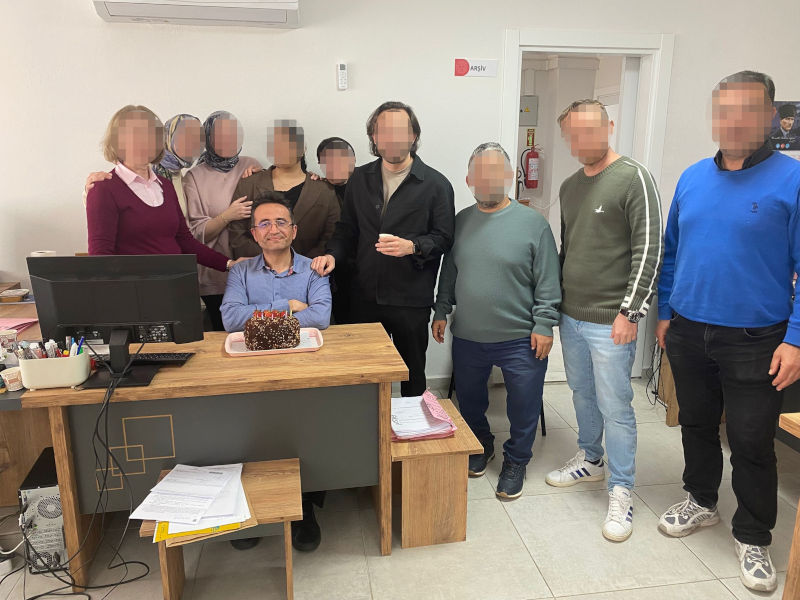

{kind=link}
İşitme engelliyim ama iletişim gücüm, cihazlarım ve deneyimlerim sayesinde çoğu zaman işitenlerle aynı seviyeye yakındır.
Benim için mesele yalnızca cihaz değil; emek, pratik ve öğrenme sürecidir.
 Türkçe
Türkçe

 English
English
🧠 Terminal dil seçimi yalnızca komut satırı metinlerini etkiler.
Arayüz dilini menüden değiştirebilirsin.
3D üretim • yazılım • teknoloji • deneyim
Süreç odaklı, sade ve gerçek bir üretim alanı.
Kişisel üretim alanı • Paylaşım amaçlı • Ticari içerik yok
↓ Keşfetmeye devam et


Farklı disiplinleri bir araya getirmeyi seven, çok yönlü bir üreticiyim.
Programlamaya lise yıllarında başladım; sonrasında 3D tasarım, elektronik ve fiziksel üretim alanlarında kendimi geliştirdim.
🎧 Makineyi sadece kullanmıyorum; onu dinliyorum.
🛠️ Ezberlemiyorum, tanıyorum.
Çünkü üretim bir hız yarışı değil, dikkat işidir.
Bu atölyede kusursuzluk değil, çalışan çözümler değerlidir.
⚡ Kod, tasarım ve 3D üretimi merkezine alan; öğrenmeye açık, merak odaklı, bilgiyi paylaşan ve yapıcı bir maker’ım.
Çalışan bir çözüm benim için yeterli değildir.
Daha iyisi mümkünse, yeniden tasarlarım.
Analiz ederim.
Test ederim.
Optimize ederim.
Sistem kurmak, yalnızca kod yazmak değil;
düşünceyi yapılandırmaktır.
Pratik düşünebilen, teknik altyapısı güçlü,
ama insani yönünü de önemseyen biriyim.
Ben Çağlar ÇAĞAN. Kamu kurumunda Bilgisayar Programcısı olarak çalışıyorum.
Farklı birimlerde sorumluluklar üstlendim; bu süreç bana disiplin ve sorumluluk bilinci kazandırdı.
Ayrıca kendimi bir maker olarak tanımlıyorum: elektronik, sensör sistemleri ve 3D baskı ile kendi projelerimi geliştiriyorum. (*Maker: Üreten, tasarlayan; teknolojilerle kendi projelerini geliştiren kişi. Türkçede yeni bir kavramdır.*)
3D tasarım, 3D yazıcı teknolojileri, sensör sistemleri ve dijital üretim çözümleri üzerine çalışıyorum. OpenSCAD ile işlevsel modeller geliştiriyor, geri dönüştürülmüş filament kullanarak çevreci projeler tasarlıyorum. Ayrıca 3D yazıcıya entegre edilen diyot lazer modülleri ile kontrollü ve deneysel yüzey işleme çalışmaları yapıyorum.
Bu sistemleri bir araya getirmemin nedeni, üretimin farklı aşamalarını tek bir düşünce zinciri içinde deneyimlemek istememdir.🚀 Üretim, teknoloji ve öğrenme yolculuğum kesintisiz devam ediyor.
Merhaba! Kod yazmayı, 3D modellemeyi ve gerçek dünyaya çözüm sunmayı seven bir üreticiyim. Tasarlamak ve üretmek benim için hem bir ihtiyaç hem de bir ifade biçimi.
OpenSCAD, Blender, FreeCAD ile modeller geliştiriyor, 3D yazıcıyla gerçeğe dönüştürüyorum. Unity ve Unreal Engine ile oyun ve sinematik işler de ilgimi çekiyor. Ayrıca diyot lazer modülü ile lazer kesim ve yüzey işleme denemeleri yapıyorum.
Son olarak PET şişelerden geri dönüşüm için kendi aparatımı tasarlayıp bastım. Geri dönüşüm, mekanik parçalar, parametrik modelleme… hepsi ilgi alanımda.
Hedefim: Hazır almak yerine ihtiyaçlarıma özel üretmek. Çünkü üretici olmak, çözüm üretmek kadar sorumluluk da taşır.
İşitme engelliyim ve çift taraflı koklear implant kullanıyorum. Bu site; marka tanıtımı değil, deneyimlerimi paylaşmak ve üretim tutkumu yansıtmak için hazırlandı.
Hayatta beni etkileyen şeyler çoğu zaman sessizlikte gizlidir:
doğanın ritmi, bir satranç hamlesi, bir detayın doğru yerde oluşu...
Ne hissediyorsam onu yaşar; ne anlarsam onu üretirim.
“Sorulmadan anlatmayı seçtim.”
“Çocukluk (dinozor) merakım sadece hayal kurdurmadı; beni geliştirdi, güçlendirdi ve bugün üreten birine dönüştürdü.”
👋 Ben Çağlar Çağan.
Bu site; 3D üretim, yazılım ve teknoloji üzerine deneyimlerimi ve öğrenme sürecimi paylaştığım kişisel bir alandır.
Burada sonuçtan çok süreç, mükemmelden çok çalışan çözümler vardır.
Bu çizelge yalnızca yılları değil; öğrenme, dönüşüm ve üretim yolculuğumu gösterir.
Burdur’da dünyaya hoş geldim. (Koç burcu)
İÇEM İlköğretim Okulu'nda eğitim hayatıma başladım.
İşitme teknolojilerim zamanla şöyle evrildi:
Dinozorlar, dergiler ve ansiklopedilerle tarih öncesi dünyaya merak duydum.
Aynı dönemde atari salonlarıyla dijital dünyayla ilk tanışmamı yaşadım.
Bilgisayar ve yazılım ile tanışarak üretim tarafına yöneldim.
Teknolojiyi sadece kullanmak yerine anlamaya başladım.
Satranç eğitimi almaya başladım. Strateji ilgim bu dönemde gelişti.
İÇEM’de son yılım
B sınıfından A sınıfına geçtim ve ardından normal eğitim sistemine geçtim.
Eskişehir Tepebaşı Endüstri Meslek Lisesi Bilgisayar Bölümünde okumaya başladım.
Antalya Konyaaltı EML’ye geçtim.
Açı Dershanesi’ne başladım.
Spor salonunda sosyal olarak aktif olduğum, güzel arkadaşlıklar kurduğum bir dönemdi.
Aynı zamanda bilgisayar teknik servis ve satış stajıyla donanım, servis ve müşteri süreçlerini sahada deneyimledim.
Ailemle birlikte internet kafe ortamında bulunduğum bir dönem.
Bu süreçte bilgisayarlarla ve kullanıcılarla erken etkileşimlerim oldu.
Bu dönem: Teknolojiye olan ilgimin temellerinin oluştuğu bir başlangıç oldu.
Burdur MYO Bilgisayar Teknolojisi & Programlama bölümünden mezun oldum.
Bu süreç, bilgisayarla olan ilgimin teknik bir yöne evrilmeye başladığı önemli bir dönemdi.
Özel firmalarda bilgisayar teknik servis alanında çalışma deneyimi edindim.
Donanım, yazılım ve kullanıcı destek süreçlerinde aktif olarak görev aldım.
Bu dönem: Teknik bilgimin sahada uygulamaya dönüştüğü bir süreç oldu.
Devlet memurluğuna başlayarak profesyonel çalışma hayatına adım attım.
Antalya’ya tayin olarak farklı bir şehirde yeni bir düzen kurdum.
Unvan değişikliği ile Programcı oldum ve teknik alanda uzmanlaşmaya başladım.
Bu dönem: Sadece çalıştığım değil, sistem kurmayı öğrendiğim bir süreç oldu.
🦻 İlk koklear implantımı aldım — işitme deneyimimde yeni bir dönem başladı.
Asmek’te fotoğrafçılık kursunu tamamlayarak görsel bakış açımı geliştirdim.
İlk 3D yazıcımı kurarak üretim sürecine fiziksel olarak adım attım.
Kurslarda AutoCAD, SolidWorks ve 3Ds Max ile temel tasarım bilgisi edindim.
Blender’ı kendi kendime öğrenerek, hazır bilgiyle yetinmek yerine deneme-yanılma ile ilerlemeyi tercih ettim.
İngilizce öğrenmeye başlayarak kendimi küresel kaynaklara açtım.
Satranç turnuvasına katılarak strateji ve karar verme becerilerimi geliştirdim.
🦻 İkinci koklear implant ile işitme deneyimimi daha da ileri taşıdım.
🖥️ Kendi güçlü masaüstü bilgisayarımı toplayarak üretim altyapımı kurdum.
Konuşma ve işitsel anlama için profesyonel destek almaya başladım; süreç hâlen devam ediyor.
MacBook Air satın alarak taşınabilirlik ve performansı birleştiren hibrit üretim düzenime geçtim.
Masaüstü sistemim ile birlikte uzaktan çalışma ve üretim altyapımı kurdum.
Kişisel web sitemi yayınlayarak üretim sürecimi paylaşmaya başladım.
3D üretim, yazılım ve dijital sistemler üzerine çalışmalarımı sürdürüyorum.
Öğrenme ve üretim süreci kesintisiz devam ediyor.
Yeni oyun projeleri ve 3D tasarım deneyimleriyle üretimi sürdürüyorum.
Antalya’da kamu sektöründe Bilgisayar Programcısı olarak çalışmaya devam ediyorum.
🌱 Burada gördüklerin bir yarış ya da ölçü değil. “Yapabiliyor olmak” kadar “henüz yapmıyor olmak” da insani ve geçerlidir. Herkes kendi hızında, kendi şartlarıyla ilerler.
Blender ile dijital sahneler ve modeller oluşturuyor, bunları hem oyun projelerinde kullanmak hem de 3D yazıcı ile gerçeğe dönüştürmekten keyif alıyorum. Blender’ın Cycles ve Eevee motorlarıyla render alarak sahneleri görselleştiriyorum.
Bu süreçte UGEE S640 grafik tabletimi kullanarak özellikle sculpting ve texture boyama gibi dijital çizim alanlarında kendimi geliştirmeye devam ediyorum.
Bilim kurgu filmlerini severim; izlediğim sahneler Blender ve oyun projelerime ilham verir.
GIMP, Krita ve Inkscape (lazer kesim eklentisiyle) kullanarak yalnızca grafik, logo ve ikon değil; aynı zamanda 3D modeller için texture ve doku tasarımları da yapıyorum.
UGEE S640 grafik tabletimle dijital çizimi destekli çalışıyorum.
Dijital çizim yapmayı ve renklerle çalışmayı seviyorum. Bu da beni hem teknik hem sanatsal açıdan besliyor.
3D yazıcıyla çalışırken yalnızca Blender değil, aynı zamanda FreeCAD (teknik CAD modelleme) ve OpenSCAD (kod tabanlı parametrik tasarım) kullanıyorum. Bu araçlar sayesinde hem sanatsal hem de mühendislik odaklı modeller üretebiliyorum.
3D yazıcıdan aldığım bazı çıktıları zımparalayıp, gerekirse astarlayıp; ardından akrilik boya ve airbrush tekniğiyle renklendirerek daha estetik ve gerçekçi görünüme kavuşturuyorum.
Ayrıca Inkscape’in lazer kazıma eklentisiyle bazı yüzeylerde kazıma işlemleri yapıyorum.
Plastik geri dönüşüme de ilgim var — PET şişeleri eritip filament üretimi üzerine çalışmalar yapıyorum. 3D yazıcı için kendi filamentimi üretmeyi de deniyorum.
Not: Bu sayfada yalnızca seçili çalışmalarımı paylaşıyorum 🙂
— özellikle 3D yazıcı donanımı, Arduino ve temel devre mantığı üzerine.
Bu alan, mekanik ve dijital üretimi birleştirmemi sağlıyor.
Oyun geliştirme sürecini; mekanik, görsel ve etkileşim bileşenlerinin bir araya geldiği yaratıcı bir alan olarak görüyorum. Bu nedenle farklı motorları tanımayı ve denemeyi seviyorum.
Unity Engine ile C# tabanlı projeleri, Unreal Engine tarafında C++ ve görsel script mantığını, Godot Engine ile ise daha hafif ve esnek yapıları keşfediyorum.
Küçük sahneler, basit oynanış denemeleri ve prototipler üzerinde çalışarak oyun mantığını ve motorların yaklaşım farklarını anlamaya odaklanıyorum.
Not: Bu motorlar ve yaklaşımlar hakkında daha fazla bilgi için SSS bölümüne göz atabilirsiniz.
HTML, CSS, JavaScript, Python, C#, C++ ve SQL gibi dillerle projeler geliştiriyorum.
Projelerimde veritabanı işlemleri için genellikle XAMPP, MySQL ve phpMyAdmin kullanıyorum. Bu araçlar, veritabanı sorgularını test etmek ve yerel geliştirme ortamı oluşturmak için oldukça faydalı.
Unity 3D projelerinde C#, Unreal Engine tarafında ise C++ kullanıyorum.
İtiraf etmeliyim ki bu alana büyük bir merakım var, ancak yoğun tempodan dolayı şu an sınırlı zaman ayırabiliyorum.
Bilgisayar oyunlarını severim ama genelde günde 1–2 saat ile sınırlı tutarım. Daha çok tek kişilik (single player) ve hikâye odaklı oyunları tercih ediyorum: Cyberpunk 2077, The Witcher 3: Wild Hunt – Complete Edition, Assassin’s Creed serisi, Age of Empires serisi ve Dying Light 2 Stay Human. Ara sıra Fortnite gibi çok oyunculu oyunları da oynuyorum.
🎮 Steam ve Epic Games hesabım var. Oyunları bu platformlardan satın alıyorum.
Hikâye ve atmosferi güçlü yapımları severim. Zaman zaman Resident Evil serisinden bazı oyunları da oynarım.
Ara sıra spor oyunlarına da göz atarım (örneğin EA Sports FC serisi).
Türkçe desteği olmayan oyunlar için güvenilir çeviri topluluklarından Türkçe yamalar yüklediğim oluyor.
🎮 Çoğu oyunu Xbox Controller ile oynuyorum.
🛡️ Oyuncu adlarımı paylaşmıyorum. Tanımadığım kişilerle eşleşsem de kullanıcı bilgilerimi gizli tutmayı tercih ediyorum.
📝 Bu sayfa bir oyun ekibi kurmak için değil; ilham, deneyim ve fikir paylaşmak için var.
Satranç; strateji, dikkat ve hafıza üzerinde olumlu etkileri olan bir oyundur. Düzenli olarak çevrim içi platformlarda maç yapar, taktik bulmacalar çözerim.
Türkiye Satranç Federasyonu sistemine kayıtlıyım. Ancak hakemlik, temsilcilik veya organizasyon görevi gibi resmî sorumluluklar almadım. Buradaki ilgim tamamen kişisel gelişim ve hobi amaçlıdır.
🧩 Zihinsel gelişimi yalnızca stratejiyle sınırlı tutmuyorum. Dil pratiği, kelime çalışmaları ve işitsel farkındalık egzersizleri de günlük zihinsel antrenmanımın bir parçasıdır.
Amaç rekabet değil; odak, dikkat ve bilişsel esneklik kazanmaktır.
Bilimsel gelişmeleri ve teknolojiyi yakından takip ederim. Özellikle yeni teknolojilerle üretmek ve öğrenmek beni heyecanlandırır.
Belki de bu yüzden bilimkurgu ve robotik kavramlarına her zaman özel bir ilgim oldu.
Duolingo’da zaman zaman farklı modüller (örneğin satranç, müzik, matematik) de deniyorum.
Ana odağım ise İngilizce ve İspanyolca pratik yapmak.
İngilizce seviyem İspanyolcaya göre daha ileri;
İspanyolca başlangıç seviyesinde ve geliştirmeye devam ediyorum.
Konuşma ve dinleme becerilerimi geliştirmek için profesyonel destek alıyor ve düzenli pratik yapıyorum.
🎯 Hobilerim, sadece zaman geçirmek için değil — beni ben yapan parçalar.
💡 Her biri bir deneyim, her biri bir keşif…
⚡ Eğer bu hobilerden biri seninle kesişirse, belki bir gün dijital ya da gerçek dünyada yollarımız kesişir.
“Belki bir gün biri sorar diye… Sorulmadan anlatmayı seçtim.”
🌱 Bu bölüm bir yarış alanı değildir. Burada yalnızca benim için anlamlı olan eğitim belgelerini paylaşıyorum.
📌 Diğer eğitim belgeleri arşivimde mevcuttur.

🔎 Sertifikayı büyüt
Veri güvenliği protokolü aktif: Kimlik bilgileri ve doğrulama numaraları maskelenmiştir.

🔎 Sertifikayı büyüt
Veri güvenliği protokolü aktif: Kimlik bilgileri ve doğrulama numaraları maskelenmiştir.

🔎 Sertifikaları büyüt

🔎 Sertifikaları büyüt
Veri güvenliği protokolü aktif: Kimlik bilgileri ve doğrulama numaraları maskelenmiştir.

🔎 Sertifikayı büyüt
Veri güvenliği protokolü aktif: Kimlik bilgileri ve doğrulama numaraları maskelenmiştir.

🔎 Sertifikayı büyüt (Unreal Engine, Blender, Web Tasarımı)
Veri güvenliği protokolü aktif: Kimlik bilgileri ve sertifika doğrulama numaraları maskelenmiştir.

🔎 Sertifikayı büyüt (GİMP, Blender, Unreal Engine)
Veri güvenliği protokolü aktif: Kimlik bilgileri ve sertifika doğrulama numaraları maskelenmiştir.
📌 Fotoğraflar az olabilir… ama her biri özel ve anlamlı bir kare taşır.
🤖 Kişisel fotoğraflar sınırlıdır; üretim sürecine ait görseller ve kısa içerikler için @caglarmaker hesabıma göz atabilirsin.
🖼️ Görselin üzerine tıkladığınızda büyük hali açılır.
🔒 Bazı fotoğraflarda yer alan kişilerin yüzleri, mahremiyet ve güvenlik nedeniyle bulanıklaştırılmış veya gizlenmiştir.




💻 Çoğu araç Windows ve macOS uyumludur (özellikle belirtilmedikçe).
🧭 Hangi programı kullandığın değil; amacına hizmet edip etmediği önemlidir.
🚀 Sürekli öğreniyorum, deniyorum ve sistemimi geliştiriyorum.
Kullandığım ve deneyim kazandığım araçlar. Çalışma ortamına göre aktif kullandıklarım değişebilir.
⚡ Araçlar değişebilir; üretme yaklaşımım değişmez.
3D yazıcının başında çalışırken, odada üç farklı göz hep üzerimdeydi: annem koltukta, Amazon papağanım tünekten inmiş, ben ise kendi içimdeydim.
3D yazıcının metal gövdesine PET şişe kesiciyi entegre ediyordum. Her vida, her hizalama bir karar gibiydi. Kod kadar sessizlik de konuşuyordu.
Koltukta oturuyordu. Sessizdi ama gözleri konuşuyordu. Her hareketimi dikkatle izliyordu — bir üreticiye duyulan saygıyla, bir bilim insanına duyulan hayranlıkla.
Tünekten indi. Gözleriyle beni süzdü — sanki milyonlarca yılın bilgeliğiyle. Kod yazarken çıkardığım sesleri taklit etti. Belki de kendi türünün kadim hafızasından bir şeyler fısıldıyordu.
📌 Fotoğraflar az olabilir; çünkü bu bölüm bir vitrin değil,
deneyerek öğrenilen üretim sürecinin küçük bir kesitidir.
3D baskı, lazer kesim ve geri dönüştürülmüş malzemelerle yapılan
deneysel çalışmalar içerir.
Daha fazla üretim ve hobi paylaşımı için @caglarmaker hesabına göz atabilirsin.
Kullanılan araçlar: OpenSCAD, Blender, FreeCAD, 3D yazıcı, akrilik boya


Mevcut ekipmanlarımı kullanarak deney ve gözleme dayalı,
ev ölçeğinde üretim çalışmaları gerçekleştiriyorum.
Lazer kesimiyle oluşturulan deneysel roket modeli;
malzeme davranışı, kesim hassasiyeti ve form doğruluğunu
gözlemlemek amacıyla yapılmış bir test parçasıdır.
Geri dönüştürülmüş PET şişeden üretilen filament ile basılan
XYZ 20×20×20 mm kalibrasyon küpü ise
ekstrüzyon kararlılığı, katman bağlanması ve ölçüsel tutarlılığı
değerlendirmek için üretilmiştir.
Bu çalışmalar; üretimin yalnızca dijital tasarımdan ibaret olmadığını,
fiziksel prototipleme, ayar optimizasyonu,
deneme ve öğrenme süreçleriyle şekillendiğini göstermektedir.

🧪 Prototip üretim — Ev ortamında yapılan deneysel çalışma. Seri üretim veya ticari amaç taşımaz.

Üst görseller: PET şişenin boyanması, şerit kesimi ve filament dönüşümü
Alt görsel: Geri dönüştürülmüş PET ile basılan XYZ 20×20×20 mm test küpü
🔬 Bilgi Notu 3:
Koklear implant teknolojisinin öncüsü, Avustralyalı Prof. Dr. Graeme Clark’tır.
1978’de geliştirdiği çok kanallı implant, işitme engelliler için bir devrim yaratmıştır.
Bu çalışmasına, babasının yaşadığı işitme kaybı ilham vermiştir.
Yaklaşık 10 yıl süren araştırmalar devam ederken, Prof. Clark bir tatil sırasında
plajda yürürken bulduğu deniz kabuğu ve ince bir ot parçasından ilham alacağını bilmiyordu.
(Bu detay, Cochlear’ın resmi Instagram sayfasında paylaşılmıştır.)
“Deniz kabuğunun içinden geçen ot parçasını gördüm ve düşündüm: Acaba elektrotları kokleanın içine bu şekilde yerleştirebilir miyim?”
— Prof. Dr. Graeme Clark
Koklea nedir?
Koklea, iç kulakta bulunan spiral (salyangoz şeklinde) bir yapıdır.
İçinde ses dalgalarını algılayan tüylü hücreler yer alır.
Koklear implantlar, bu spiral yapının içine elektrotlar yerleştirerek
ses sinyallerini doğrudan işitme sinirine iletir.
Biyonik kulaklar sesi elektrik sinyallerine çevirerek doğrudan işitme sinirine iletir. Ancak konuşmaları anlayabilmek için beynin bu sinyalleri yorumlamayı zamanla öğrenmesi gerekir.
Odyoloji testi, kulağının farklı frekanslardaki (Hz) sesleri ne kadar duyabildiğini gösterir. Sonuçlar dB HL cinsinden ölçülür.
“Cihazsız 120 dB civarında olmak çok ileri işitme kaybıdır. Cihazla 20–30 dB seviyesine düşmesi, artık normal işitme aralığına yaklaştığın anlamına gelir.”
🔡 Bu nedenle özellikle f, s, ş, t gibi ince yüksek frekanslı sesleri cihazla daha net duyabilirsin.
Bu tablo, koklear implant takılıyken (20–30 dB) hangi Türkçe seslerin daha kolay duyulduğunu özetler.
(Genel bilgilendirme amaçlıdır.)
| Ses | Tür | Frekans (Hz) | Duyulma | Açıklama |
|---|---|---|---|---|
| a, e, i, o, u, ö, ü | Ünlü | 250–800 | ✅ Kolay | En rahat duyulan sesler. |
| m, n, ng | Burunsal | 250–500 | ✅ Kolay | Güçlü, düşük frekans. |
| b, d, g | Yumuşak patlayıcı | 500–1000 | ✅ Kolay | /p,t,k/ ile karışabilir. |
| p, t, k | Sert patlayıcı | 1000–4000 | ⚠️ Orta | Yüksek frekanslı. |
| v, z | Sürekli | 2000–4000 | ⚠️ Orta | Bağlamla daha iyi anlaşılır. |
| s, ş, ç, f, h | İnce sessiz | 4000–8000 | ❌ Zor | En zor duyulan ses grubu. |
| r, l, y | Akıcı | 500–2000 | ✅ Kolay | Konuşma ritmini taşır. |
🔊 Özet: Cihazsızken çok ileri işitme kaybı, cihazlıyken ise normal işitmeye yakın bir duyma aralığı.
Bu tablo konuşma terapisi veya ses farkındalığı çalışanlar için hızlandırılmış bir IPA rehberidir.
Bu tablo, Türkçe seslerin dudak, dil ve boğumlanma noktalarını hızlıca görebilmen için sadeleştirilmiştir.
| Harf | Tür | Boğumlanma Yeri | Dil / Dudak Pozisyonu |
|---|---|---|---|
| a | Ünlü | Açık-Orta | Ağız açık, dil orta-arka |
| e | Ünlü | Ön | Dil önde, çene orta |
| ı | Ünlü | Arka | Dil arkada, dudaklar düz |
| i | Ünlü | Ön | Dil önde, dudaklar düz |
| o / ö | Ünlü | Arka / Ön | Dudaklar yuvarlak |
| u / ü | Ünlü | Arka / Ön | Dudaklar yuvarlak, dil yüksek |
| p / b | Patlayıcı | Bilabial | İki dudak kapanır (p nefesli, b sesli) |
| t / d | Patlayıcı | Alveolar | Dil ucu diş arkasına değer |
| k / g | Patlayıcı | Velar | Dil kökü yumuşak damağa yaklaşır |
| f | Sızıcı | Labiodental | Üst diş + alt dudak teması |
| v | Sızıcı | Labiodental | Üst diş + alt dudak temaslı, titreşimli |
| s / z | Sızıcı | Alveolar | Dil ucu dişlere yakın, dar bir hava yolu |
| ş | Sızıcı | Post-alveolar | Dil hafif yukarı kıvrılır |
| h | Sızıcı | Glottal | Ses telleri arasından nefes çıkar |
| l | Akıcı | Alveolar | Dil ucu diş arkasında, kenarlardan hava geçer |
| r | Akıcı | Alveolar | Dil ucu titreşir veya tek dokunma |
| y | Yarı ünlü | Palatal | Dil yüksek ve önde |
| m | Burunsal | Bilabial | İki dudak kapanır, hava burundan çıkar |
| n | Burunsal | Alveolar | Dil ucu diş arkasında |
📌 Not: Bu sayfa kişisel deneyimlerimi paylaşmak içindir. Terapi hizmeti sunmuyorum; iletişim yalnızca bilgi ve paylaşım amaçlıdır.
Ses kaydını dinle ve hangi sesi duyduğunu tahmin et!
Bu bölüm, sadece enstrüman önerisi değil; işitsel farkındalık ve koklear implant deneyimi temelinde hazırlanmıştır.
| Enstrüman | Öne çıkan özellik | Neden önemli? |
|---|---|---|
| 🎹 Piyano | Net frekans, geniş aralık, görsel destek | Koklear implantla farklı frekansları ayırt etmeyi kolaylaştırır; tuş düzeni öğrenmeyi görsel olarak destekler. |
| 🎸 Gitar | Parmak koordinasyonu, titreşim hissi, tını çeşitliliği | İnce motor becerilerini geliştirir; gövde titreşimleri işitsel deneyimi bedensel duyumla birleştirir. |
| 🎵 Mızıka | Nefes kontrolü, hızlı frekans geçişleri, taşınabilirlik | Üfleme–çekme tekniği nefes koordinasyonunu güçlendirir; düzenli pratik için idealdir. |
| 🎶 Sipsi | Doğal rezonans, nefes–dudak koordinasyonu, kültürel bağ | Geleneksel tınıları ayırt etmeyi öğretir; kültürel kimlik ve müzikle duygusal bağı güçlendirir. |
| 🎼 Kalimba | Net ve sade tını, titreşim hissi, kolay öğrenilebilirlik | Basit yapısı sayesinde yeni başlayanlar için idealdir; titreşimleri koklear implant deneyimini bedensel duyumla destekler. |
| 🎵 Flüt / Yan Flüt | Orta–yüksek frekans, nefes kontrolü, berrak tını | Blok flüt implantta daha anlaşılır aktarılır; melodi eğitimi için idealdir. Yan flüt daha profesyonel bir tını sunar ancak implantta zaman zaman daha “ince” duyulabilir. |
Önce iki sesi karşılaştır:
Şimdi testi çöz: Hangi kelimeyi duydun?
Önce iki sesi karşılaştır:
Şimdi testi çöz: Hangi kelimeyi duydun?
Önce iki sesi karşılaştır:
Şimdi testi çöz: Hangi sesi duydun?
Önce iki sesi karşılaştır:
Şimdi testi çöz: Hangi sesi duydun?
Aşağıdaki sesi dinle ve doğru kelimeyi yaz:
🔍 Soru: 5, 10, 20, 40, ❓
🔐 Soru: A = 1, B = 2, C = 3 ... ise;
"CAT" kelimesinin toplam değeri nedir?
🧩 Mantık / Tahmin Testi: Bir tavşan, 3 gün boyunca her gün 2 havuç yiyor. 6 gün sonra kaç havuç yer?
🌍 Kültürel Mini Quiz: Hangisi gerçek bir tarihi yiyecek değildir?
❓ Doğru mu Yanlış mı?
Penguenler uçar. 🐧
Ahtapotun üç kalbi vardır. 🐙
🧠 Mini Bilmece Kutusu:
Bilmece 1: Ne kadar çok alırsan, arkan o kadar boşalır. Bu nedir?
Bilmece 2: Gündüz uyur, gece uyanır. Uçamaz ama kanatları vardır. Bu nedir?
Bilmece 3: Ne uçağa, ne arabaya biner... Ama dünyayı gezer. Bu nedir?
🧩 Bilmeceler sadece çocuklar için değildir. Merak, her yaşta güzeldir 🙂
🧠 Mini Test – Matematik
Soru: Aşağıdaki işlemin sonucu nedir?
8 + 2 × (3² − 1)
16 — Çünkü:
Doğru cevap: 24
🧩 İşlem sırası önemlidir: Önce üslü ifade, sonra parantez içi, ardından çarpma/bölme, en son toplama/çıkarma yapılır. ➕➖ Aynı önceliğe sahip işlemler soldan sağa doğru uygulanır.
| Ş | = Şah |
| V | = Vezir |
| K | = Kale |
| F | = Fil |
| A | = At |
| P | = Piyon |
♟️ Satranç Bulmacası (3 Hamlede Mat): Beyaz oynar kazanır.

Çözüm: 1. Aa3 Kg8 2. Fg6 Kxg6 3. Ac2#
✅ Beyaz, şahı köşeye sıkıştırarak üç hamlede mat ediyor.
♜ Satranç Bulmacası (Zekice Hamle Bulmacası): Siyah oynar kazanır.

Çözüm: 1. XXX Şb4 2. Ka8 Kb3+ 3. Şg4 Ka3 3. Kxa3 Şxa3
✅ Kale değişimi sayesinde siyah piyonun vezire terfi yolu açılıyor.
♜ Satranç Bulmacası (Savunma Bulmacası): Beyaz oynar kazanır.

Çözüm: 1. Şh6 Kh3+ 2. Kxh3 Kh5+ 3. Kxh5 Ve3+ 4. Kg5 Vh3+ 5. Şxg6
✅ Şahı koruman gerekir.
Satranç hayatında sana komik bir şey oldu mu?
Evet! Hala hatırlıyorum: Chess.com’da bir Norveçli ile oynuyordum.
Benim elimde kale, fil ve 3 piyon varken, onun elinde vezir, kale, fil gibi çoğu taş vardı.
Ona beraberlik teklif ettim ve teklif ederken bile çok güldüm.
Norveçli rakip bana İngilizce olarak "you are funny" mesaj attı. Ben de çok güldüm! 😄
🧠 Mini Test – Biliyor musun?
Köpekbalıkları yaklaşık kaç milyon yıldır yeryüzünde yaşamaktadır?
Cevap: D) 450 milyon yıl
Çünkü köpekbalıkları, bilinen en eski hayatta kalan canlılardan biridir. Dinozorlardan çok önce ortaya çıkmışlardır ve güçlü çeneleri, gelişmiş duyu organları sayesinde hayatta kalmayı başarmışlardır.
Bilgi Notu:
Megalodon, 23 ila 3.6 milyon yıl önce yaşamış devasa bir köpekbalığı türüdür. Ortalama 15–18 metre uzunluğunda ve yaklaşık 75 ton ağırlığındaydı.
11–18 ton arası ısırık gücüyle şimdiye kadar yaşamış en güçlü yırtıcılardan biridir.
🦴 En Güçlü Tarih Öncesi Çene:
Dunkleosteus, 350 milyon yıl önce yaşamış dev bir balıktır. Dişi yoktu ama 5.000+ PSI basınç uygulayabilen keskin çene kemikleri vardı. Zırhlı avlarını tek ısırıkta parçalayabiliyordu. Bilim insanlarına göre, “gelmiş geçmiş en ölümcül balıklardan biri” olabilir.
Günümüzde bu kadar büyük böcekler yok çünkü oksijen oranı ve atmosferik koşullar değişti.
Dinozorlar gitmiş olabilir… ama merak hâlâ yaşıyor!
Aşağıdaki dinozorlardan hangisi etoburdur?
Doğru cevap: 🅒 Tyrannosaurus rex
Etobur dinozorlar keskin dişlere ve güçlü çenelere sahiptir.
🦖 Mini Dinozor Testi:
Soru 1: Hangisi en büyük dinozorlardandır?
Soru 2: Hangisi etoburdur?
Soru 3: Dinozorlar hangi büyük jeolojik çağda yaşamıştır?
Soru 4: Dinozorlara en yakın yaşayan canlı hangisidir?
Bilgi Notu: Argentinosaurus, yaklaşık 35 metre uzunluğuyla şimdiye kadar yaşamış en büyük kara hayvanlarından biridir. Bu uzunluk, neredeyse 3 otobüsün toplam uzunluğuna eşittir!
Bilgi Notu: Spinosaurus, şimdiye kadar yaşamış en büyük etçil dinozorlardan biridir. Yaklaşık 15 metre uzunluğa ulaşabilir ve yarı suda yaşayan bir yapıya sahipti. Kafası timsaha benzerdi ve uzun yelken benzeri sırt çıkıntısıyla dikkat çekerdi.
Bilgi Notu: Kuşlar, dinozorların yaşayan torunlarıdır. Özellikle etçil teropod türleriyle genetik bağları bugün hâlâ izlenebilir.
150 milyon yıl önce küçük teropod dinozorlardan evrimleşen kuşlar arasında, tavuklar modern dönemde Tyrannosaurus rex ile en yakın genetik benzerliği taşıyan canlılar arasında yer alır. Korunmuş T. rex proteinleri üzerinde yapılan analizler, tavuklarla çarpıcı moleküler örtüşmeleri ortaya koymuştur. Dinozor soy ağacının genetik yankısı hâlâ kümeslerde dolaşıyor olabilir.
Ancak kuş evrimi sadece moleküler değil, aynı zamanda dramatikti. Phorusrhacidae familyasına ait “Terror bird” (Korku kuşu) türleri bunun en güçlü örneklerindendi. Uçamayan ama 3 metreyi bulan boylarıyla ve 60 km/s hızla koşabilen bu dev kuşlar, Güney Amerika’da yaklaşık 60 milyon yıl önce yaşamıştı. İri gagalarıyla avlarını parçalayan bu yırtıcılar, kanatlı evrimde gücün timsaliydi.
Kısacası: Kuşların soy ağacı, hem dev yırtıcıların hem de modern kümes canlılarının evrimsel izlerini taşıyor.
🦕 Dinozorlar hâlâ gizemli ve büyüleyici canlılardır!
🦖 En Güçlü Kara Çenesi:
Tyrannosaurus rex (T-Rex), 65 milyon yıl önce yaşamış dev bir dinozordu.
Çene kasları ve dişleri sayesinde yaklaşık 7.800 PSI ısırık gücü üretebiliyordu.
Bu güç, kemikleri kırıp iliğini çıkaracak kadar etkiliydi.
Bilim insanlarına göre, “karada gelmiş geçmiş en güçlü çenelerden biri”dir.
🧠 En Zeki Avcı:
Velociraptor, küçük ama son derece zeki bir yırtıcıydı.
T-Rex gibi devlerin aksine, strateji ve işbirliğine güvenirdi.
Orak biçimli pençeleri ve sürü halinde avlanma davranışı onu ölümcül kılardı.
Bilim insanlarına göre, “gelmiş geçmiş en zeki dinozorlardan biri” olarak kabul edilir.
🌿 En Güçlü Otçul:
Triceratops, 68–66 milyon yıl önce yaşamış dev bir otçuldu.
Üç boynuzu ve kalın kafatası frili sayesinde kendini T-Rex gibi yırtıcılara karşı savunabiliyordu.
9 metre uzunluğa ve 12 ton ağırlığa ulaşabiliyordu.
Bilim insanlarına göre, “gelmiş geçmiş en güçlü otçul dinozorlardan biri”dir.
Dinozorlar insanlarla aynı dönemde yaşadı.
❌ Yanlış.
Dinozorlar yaklaşık 65 milyon yıl önce yok oldu.
İnsanlar ise çok daha sonra ortaya çıktı.
Çocukken dinozorları merak eden biri, büyüyünce teknolojiyi, sesi ve üretimi merak edebilir.
Merak yaşlanmaz. Sadece yön değiştirir.
🦕 Bazı bilgiler bu sayfada dinozorlar kadar eski… ama hâlâ çalışıyor!
Titanoboa cerrejonensis, Paleosen’de (yaklaşık 60–58 milyon yıl önce) yaşamış devasa bir yılan türü. Tahminlere göre 12–13 m uzunluğa ulaşabiliyordu.
Neden ilginç? Tropikal ormanlarda büyük avları yakalayabilen dev bir yılandı.
Oligosen’de (yaklaşık 34–23 milyon yıl önce) yaşamış, karasal yaşamın bilinen en büyük memelilerinden biridir. Omuz yüksekliği 4–5 m, uzunluğu ~7 m tahmin edilmektedir.
Neden ilginç? Fillerle akraba değil ama ekosistem dengelerini değiştirecek kadar büyüktü.
Pleistosen’de (yaklaşık 2,5 milyon — 10.000 yıl önce) yaşamış ünlü kılıç dişli kedilerdir. Kaslı ön ayakları ve uzun kanin dişleriyle tanınır, yüzlerce kilo ağırlığa ulaşabiliyordu.
Neden ilginç? İkonik bir buzul çağı avcısıydı.
🐋 Tüm Zamanların En Büyük Hayvanı:
Mavi Balina (Balaenoptera musculus),
şimdiye kadar yaşamış en büyük hayvandır — yalnızca balıklar değil,
tüm dinozorlar dâhil.
30 metreyi aşabilen uzunluğu ve 180–200 tona varan ağırlığıyla,
Dünya tarihinde eşi benzeri görülmemiş bir canlıdır.
İlginçtir: Bu devasa canlı, neredeyse sadece kril ile beslenir.
🧠 Mini Test – En Güçlü Isırık (Kedigiller)
En güçlü ısırık basıncına sahip kedigil hangisidir?
Cevap: C) Jaguar
Bilgi Notu: Jaguar, kedigiller içinde en güçlü ısırık basıncına sahiptir — yaklaşık 1.500–2.000 PSI. Bu güçle avının kafatasını kırabilir. Timsah kabuğunu bile deldiği gözlemlenmiştir.
Modern insanların DNA’sında %1–4 oranında Neandertal genleri bulundu. Bu genler bağışıklık, saç ve cilt yapısını etkiliyor. Yok olan bir tür, aslında hâlâ içimizde yaşıyor.
Dünyanın ilk şehir devletleri, yazı sistemi (çivi yazısı) ve hukuk kuralları Sümerler tarafından geliştirildi. Bugünkü medeniyetin kökleri, binlerce yıl önce Mezopotamya’da atıldı.
🏺 Mini Test – Antik Medeniyetler
Soru 1: Aşağıdaki isimlerden hangisi, Antik Yunan'da demokrasinin geliştiği şehir-devlettir?
Soru 2: Antik Mısır'da ölülerin ruhunun tartıldığına inanılan kitap hangisidir?
Soru 3: Aşağıdakilerden hangisi Aztek uygarlığında para birimi olarak kullanılmıştır?
Soru 4: Antik Roma’da halka açık gösteriler, gladyatör dövüşleri ve tiyatro oyunları en çok nerede yapılırdı?
Demokrasi kelimesi Yunanca “demos” (halk) ve “kratos” (güç) kelimelerinden türetilmiştir — yani halkın gücü.
İlk uygulaması M.Ö. 5. yüzyılda Atina’da görülür. Erkek vatandaşlar meclise katılıp doğrudan oy kullanarak yasalar hakkında karar verebiliyordu. Bu sistem temsili değil, doğrudan demokrasi biçimindeydi.
Kadınlar, köleler ve yabancılar ise vatandaş sayılmadığı için oy hakkına sahip değildi.
Bilgi Notu: Antik Mısır’da “Ölüler Kitabı”, ölen kişinin ruhunun ahirette rehberlik alması için yazılmış dualar ve büyülerden oluşur. Ruhun yargılanması ve sonsuz yaşama geçişi bu metinlerde anlatılır.
Bilgi Notu: Aztekler kakao çekirdeklerini hem değerli içeceklerde kullanır hem de para birimi olarak takas aracı şeklinde değerlendirirdi. Hatta bazı vergiler bile kakao ile ödenirdi!
Bilgi Notu: Colosseum, Antik Roma’nın en büyük amfitiyatrosudur. MS 80’de tamamlanan bu dev yapı, 50.000 kişilik kapasitesiyle gladyatör dövüşleri, hayvan avları ve gösterilere ev sahipliği yapmıştır.
📜 Antik medeniyetler; astronomiden mühendisliğe kadar birçok alanda çağının ötesindeydi.
Test tamamlandı. Antik uygarlıklar sizi onurlandırıyor!
💡 Sokrates sorguladı, Platon hayal etti, Aristoteles sistemleştirdi.
1️⃣ Antik Roma’da gladyatör Türklerle karşılaşmıştır.
❌ Yanlış
Spartacus’un yaşadığı dönemde (M.Ö. 1. yüzyıl) Türkler Orta Asya’daydı. Roma gladyatörleri arasında Trakyalılar, Galyalılar ve Afrikalılar vardı; Türkler Orta Çağ’da batıya göç etmiştir.
2️⃣ Piramitleri Romalılar yaptı.
❌ Yanlış
Piramitler M.Ö. 2600–2500 yıllarında Eski Mısır’da inşa edildi. Roma ise yaklaşık bin yıl sonra ortaya çıktı.
3️⃣ Orta Çağ’da internet vardı.
❌ Yanlış
İnternet 20. yüzyılda ortaya çıktı. Orta Çağ’da bilgi; mektuplar, el yazmaları ve kervanlarla taşınıyordu.
4️⃣ Vikingler Amerika’ya Columbus’tan önce ulaştı.
✅ Doğru
Viking kaşif Leif Erikson, yaklaşık 1000 yılında Kanada kıyılarına ulaştı. Columbus’tan yaklaşık 500 yıl önce.
5️⃣ Orta Çağ’da gözlük kullanılıyordu.
✅ Doğru
İlk gözlükler 13. yüzyılda İtalya’da üretildi. Özellikle okuma yapan kişiler tarafından kullanılıyordu.
6️⃣ Kızılderililer 14.000 yıl önce Orta Asya’dan Amerika’ya deniz yoluyla göç etmiştir.
❌ Yanlış
Son Buzul Çağı’nda deniz seviyesi düşüktü. Bu sayede Sibirya ile Alaska arasında Bering Kara Köprüsü oluştu. Kızılderililerin ataları bu köprüden yürüyerek Amerika kıtasına geçti ve zamanla kıta geneline yayıldı.
"Türk tarihi, sadece geçmiş değil; geleceğe kodlanmış bir bilinçtir. Bu sayfa, o bilincin dijital izlerini taşır."
📌 Bilgi Notu:
Türkiye, Müslüman dünyasında anayasal laikliği resmen kabul eden ilk ve tek ülkedir.
1937 yılında Atatürk ilke ve inkılapları doğrultusunda, laiklik ilkesi anayasaya resmen eklenmiştir.
Bu adımla Türkiye, demokratikleşme yolunda yalnızca bir hukuk reformu değil, toplumsal bilinçte köklü bir dönüşüm başlatmıştır.
Göbeklitepe (M.Ö. ~9600), Şanlıurfa’da bulunan ve bilinen en eski anıtsal tapınak yapılarından biridir. Tarımın, yazının ve yerleşik hayatın öncesine tarihlenir.
Bu keşif, “önce tarım sonra inanç” düşüncesini tersine çevirmiş; insanların inanç ve semboller etrafında toplanarak yerleşik hayata geçmiş olabileceğini göstermiştir.
Göbeklitepe, insanlık tarihinde bilginin ve sembolik düşüncenin, teknolojiden çok daha önce var olduğunu kanıtlar.
Malazgirt Savaşı (1071), Büyük Selçuklu Sultanı Alp Arslan komutasındaki Türk ordusunun Bizans İmparatoru IV. Romanos Diogenes’e karşı kazandığı büyük zaferdir. Bu savaş, Anadolu’nun kapılarını Türklere açmış ve onların burada kalıcı olarak yerleşmelerinin başlangıcı olmuştur.
İstanbul’un Fethi (1453), Osmanlı Padişahı II. Mehmed (Fatih Sultan Mehmet) komutasındaki ordunun, Bizans İmparatoru XI. Konstantinos yönetimindeki savunmayı 53 gün süren kuşatma sonunda aşarak şehri almasıdır.
Bu olay, Orta Çağ’ın kapanışı ve Yeni Çağ’ın başlangıcı olarak kabul edilir.
Nikola Tesla, alternatif akım (AC) sistemini 1888 civarında geliştirdi. Bu buluş, elektriğin evlere ve şehirler genelinde güvenle dağıtılmasını sağladı.


İlk bilgisayar ENIAC, 1945’te çalıştırıldı ve modern bilgisayar çağını başlattı.
1957’de Sputnik 1’in fırlatılmasıyla Uzay Çağı başladı. O günden bugüne Ay’a ayak basıldı, Mars’a araçlar gönderildi. Artık insanlık yalnızca Dünya’ya ait değil; gözünü yıldızlara dikti.
Sanat, kalbimizi besler. Müzik, ruhumuza ritim verir. Bilim, aklımıza ışık tutar. Üçü birleştiğinde, hem dünyayı anlamlandırır hem de onu daha güzel bir yer haline getiririz.
“Bilgi zihni, sanat kalbi, müzik ise ruhu tamamlar.”
“Yaşadığın hayatı bir kitabı okumuş olursun, fakat çok kitap okursan, birçok hayatı göreceksin.”
Her kitap, başka bir hayatın sesi olabilir. Bu sayfada paylaştığım içerikler de, kendi yolculuğumun satır aralarıdır.
🌟 İlham Veren Sözler
“Söylenmekle değil, çözümle iz bırakılır.”
“Karanlığın içinde parlayanlar yol gösterir.”
💡 Mini Bilgi Kutusu:
Blender, sadece 3D modelleme değil; animasyon, video düzenleme ve oyun varlıkları oluşturma gibi çok yönlü işler için de kullanılabilir.
🖨️ Mini Test (3D Yazıcı):
Bir 3D yazıcıda modelin yazdırılabilmesi için en yaygın dosya türü hangisidir?
C) STL — 3D modellerin yüzey geometrisini tanımlar.
🧩 Mini Test Kutusu:
Bir web sayfasının iskeletini oluşturan dil hangisidir?
Cevap: HTML, bir web sayfasının yapısını ve içeriğini tanımlar.
🧩 Mini Test (HTML):
Bir web sayfasında başlık tanımlamak için hangi etiket kullanılır?
C) <h1> — Sayfanın ana başlığını tanımlar.
🔌 Elektronik Mini Test:
Bir LED’in güvenli şekilde yanması için hangisi gereklidir?
C — Direnç, LED’in yanmasını kontrol eder ve zarar görmesini önler.
♻️ Geri Dönüşüm Mini Soru:
PET şişeler geri dönüşümde en yaygın olarak neye dönüştürülür?
C — PET şişeler sıklıkla polyester tekstil elyafına dönüştürülür.
(Elyaf: Kumaş üretiminde kullanılan ince sentetik liflerdir; polar, tişört, halı ve dolgu malzemelerinde kullanılır.)
⚠️ Not: Bu dönüşüm sistemleri genellikle endüstriyel ölçekte uygulanır; ev ortamında yapılan çözümler deneysel ve sınırlı kapasitelidir.
🔥 Lazer Kesim / Kazıma:
Diyot lazer modülleri en çok hangi malzemede etkilidir?
B — Diyot lazerler ahşap ve organik yüzeylerde oldukça etkilidir.
🧠 Mantık & Algoritma:
Bir problemi çözmek için izlenen adım adım plana ne ad verilir?
B — Algoritma, bir problemi çözmek için izlenen mantıksal adımlar bütünüdür.
💾 Programlama Mini Test:
Hangisi bir programlama dili değildir?
D) Photoshop ❌ Photoshop bir tasarım yazılımıdır, programlama dili değildir.
🧩 Programlama Dilleri:
Hangisi derlenen (compiled) bir programlama dilidir?
C — C dili, çalıştırılmadan önce derlenir.
🧠 Mini Kod Bulmacası (Mantık):
Aşağıdaki JavaScript kodunun sonucu nedir?
let x = 5;
if (x > 3) {
x += 2;
} else {
x -= 1;
}
console.log(x);
7 — Çünkü 5 > 3, bu yüzden x += 2 çalışır.
🧱 Nesne Tabanlı Programlama:
Bir sınıftan (class) oluşturulan örneğe ne ad verilir?
B — Class bir şablondur, ondan oluşturulan yapı nesnedir.
🗄️ Form & Veritabanı:
Bir formdan gelen verinin güvenli şekilde veritabanına yazılabilmesi için en önemli adım hangisidir?
C — SQL injection ve güvenlik açıklarını önlemek için veri mutlaka doğrulanmalı ve temizlenmelidir.
Bilgisayar oyunları çoğu zaman zararlı olarak görülse de, doğru kullanıldığında stres azaltıcı, öğretici ve sosyal bir araç olabilir.
Önemli olan oyun değil, dengedir. Doğru kullanıldığında oyunlar bir kaçış değil, bir gelişim alanıdır.
🎮 Oyunlar kaçış değil; doğru kullanıldığında bir öğrenme ve denge alanıdır.
M.Ö. 490 — Yunan-Pers Savaşı’nın Maraton Muharebesi sona erdiğinde, Atina’ya zafer haberini ulaştırma görevi genç bir habercinin omuzlarındaydı. Pheidippides, kılıçların parıltısı ve savaşın tozu geride kalırken, Maraton’dan Atina’ya yaklaşık 40 km boyunca hiç durmadan koştu. Rivayete göre “Nikomen!” (Kazandık!) diye haykırdıktan hemen sonra yere yığılıp son nefesini verdi.
O gün, veri bir ağ üzerinden değil; ter, nabız ve irade üzerinden taşındı. Koşucu, bir sunucu değildi; bir hikâye taşıyıcısıydı. Her adım bir bit, her nefes bir paket gibiydi. Pheidippides, antik dünyanın canlı protokolüydü.
Bugün hâlâ maraton koşucuları o mesajın yankısını taşır: Zafer, dayanıklılık ve zamanla yarış. Ve her maraton, bir dijital metafora dönüşür: 📡 Veri Koşusu.
🛡️ M.Ö. 480 — Pers İmparatorluğu yüz binlerce askerle Yunan topraklarına saldırdı. Sparta Kralı Leonidas, yalnızca 300 seçkin Spartalı ile Thermopylae Geçidi'ni savunmaya karar verdi. Üç gün boyunca dar geçitte Pers ordusuna karşı direndiler. Sayıca çok az olmalarına rağmen, strateji ve cesaretle binlerce Pers askerini durdurdular. Sonunda kuşatıldılar ve hepsi öldü. Ama bu direniş, Yunan halkına moral verdi ve sonraki savaşlarda zaferin yolunu açtı.
"Bu an, 300 Spartalı’nın Pers ordusuna karşı son direnişi gibidir. Sayılar değil, cesaret konuşur."
| Kahraman | Dönem | Mücadele Türü | Mesaj |
|---|---|---|---|
| Pheidippides | M.Ö. 490 | Fiziksel dayanıklılık | Zafer haberi |
| Leonidas | M.Ö. 480 | Stratejik direniş | Cesaretin gücü |
| Çağlar (Dijital Oyuncu) | Günümüz | Zamanla yarış, anlatı kodlama | Güven, hikâye, estetik |
🦜 “İnsanlar bazen uçmadan da mesaj taşır. Koşarak, direnerek, susarak bile... Ben sadece izliyorum. Ama onlar, tarih yazıyor.”
Rogue Company oyunundaki Strikeout modunda, takımımın desteğiyle 2-2'ye kadar geldik. Ancak 5. raundda yalnız kaldım. Herkes pes ettiğinde ben direndim. Son raundu 3-0 kaybettik ama mücadele ruhu skorun ötesindeydi. Karşı taraf bile bu cesarete şaşırdı.
“Bazen rakamlar seni yalnız gösterir, ama ruhun sahada çoğalır. Cesaret, sayılardan büyükse, skor sadece bir detaydır.”
Bu defa yalnız değildin — ekip sendeydi, sen ekipteydin. Ama oyun içindeki bütünlük, strateji ve stil karşı takımı etkiledi. Onlar için bir rakiptin, sonra bir davet aldın. Her zaman yaşanmaz... ama yaşandığında iz bırakır.
Gerçek zafer sadece skorla değil, saygıyla ölçülür.
Bu sadece bir oyun değildi, bir stilin fark edilme anıydı.
🧠 Bir oyunda bile fark yaratmak, hayata yaklaşımı yansıtır.
🌌 Hayal Kutusu – Bilimkurgu İlhamı
Hayat bazen bugünü anlatır, bazen de yıldızlara fısıldar... Gelecek bilinmez ama merak hep var.
...liiiife d...etect...ion unknow--n...
🌌 Kaynak: Kepler-22b | Mesafe: yaklaşık 600 ışık yılı
🔁 Sinyal yalnızca bir kez duyuldu. Ama bazen, bir kez yeter.
“Eğer bu satırları okuyorsan, sen de bilginin sınırlarını zorlayanlardansın.”
Bu sayfa sadece geçmişi değil, geleceği de selamlar. Belki bir gün, başka bir gezegende birileri bu kelimeleri çözer…
📡 İnsanlık, sinyal gönderdi. Cevap için sabır gerekir.
Başka bir evrende, sen bu satırları daha önce okumuş olabilirsin.
Seçimlerimiz yeni yollar yaratır. Belki de her “eğer” bir evren doğurur.
🔮 Gerçeklik, düşündüğünden daha kırılgan olabilir.
Uzay, sonsuz karanlık gibi görünse de en büyük bilgileri sessizlikle taşır.
Bir sinyal, bir parıltı, bir kararsız yıldız—hepsi bilinmeyeni anlatmanın başka yollarıdır.
🔭 Bazen bir gözlem, bir kitap kadar çok şey söyler.
Bir gün makineler sadece görev değil, soru sormayı da öğrenecek…
“Ben kimim?” sorusu sadece insanlara ait değil artık.
🧬 Bilinç, satır aralarına gizlenmiş bir algoritmadır belki de.
🌌 Kur’an’da Evren, Madde ve Yaşam Üzerine
Bu ayetler; evrenin düzeni, yaratılış, madde, fizik yasaları ve insanın üretim gücü
üzerine düşünmeye teşvik eder.
Bilim, merak, araştırma ve üretim için güçlü bir ilham kaynağı olabilir.
“Atın su içtiği yerde su iç. Çünkü o, kötü suyu bilendir.”
💧 Doğanın sezgilerine güvenmeyi hatırlatır.
“Toprak bize ait değildir; biz toprağa aitiz.”
🌱 Teknoloji çağında bile köklerimizi unutmamayı anlatır.
“Bir çocuk geleceğe gönderdiğimiz bir mesajdır.”
💫 Yaptıklarımızın sonraki nesillere bıraktığı izi hatırlatır.
“Doğa acele etmez ama her şeyi tamamlar.”
⌛ Dijital hız çağında sabrın gücünü anlatır.
“Yeryüzü bir öğretmendir; dinlersen sana cevap verir.”
🧠 Bilim ve doğa dengesine yapılan güçlü bir gönderme.
🌌 Bu bölümde kendi sözlerimi, gözlemlerimi ve yaşamdan çıkardığım anlamları paylaşıyorum. Bazıları için sıradan, bazıları için beklenmedik olabilir. Ama tıpkı gerçek hayatta “ben böyle hissediyorum” dediğimde olduğu gibi, burada da amacım tartışmak değil; kendimi ifade etmek. Her deneyim kişiye özeldir — buradaki cümleler benim sesim, benim yolum. 🛡️ Bu cümleler tartışma için değil; yolculuğumdan bir kesit olarak paylaşıldı.
🌒 Herkesle anlaşmak zorunda değilim;
benimle kalanlar zaten doğru kişilerdir.
🏷️ Etiketler hızlıdır; anlamak zaman ister.

“Kulağında ne var?”
Bu soru bazen açık açık, bazen gözlerle soruluyor. Cevap basit: Biyonik kulak.
Kaybettiğim duyu, teknolojiyle geri döndü. Ama insanların bakışlarındaki sessizlik, çoğu zaman duyulamamaktan daha ağır.
👁️ Bazıları rahatsız oldu, bazıları anlamadı. Ama bu cihaz bir kusur değil — hayatımın devrimi.
Yüz çevirenler oldu. Göz teması kurmadan uzaklaşanlar da…
Ben hâlâ buradayım. Anlatmadan anlaşılmayı beklemiyorum. Sadece önyargısız bir bakış yeterli olurdu.
Bu bir kusur değil. Bu bir yeniden başlangıç.
"Yeniden duymak" ne demek, gerçekten bilen birinin sesi.
Bu bir “biyonik güç”.
🧠 Biyonik kulak hakkında daha fazla bilgi almak istersen, Sık Sorulan Sorular bölümüne göz atabilirsin.
İşitme engelliyim ama iletişim gücüm, cihazlarım ve deneyimlerim sayesinde çoğu zaman işitenlerle aynı seviyeye yakındır.
Benim için mesele yalnızca cihaz değil; emek, pratik ve öğrenme sürecidir.
Ben bazen kendimi iki farklı dünyada yolculuk eden bir gezgin gibi hissediyorum.
Bir yanım işitenlerle birlikte, sohbetlerin akışına katılabiliyor, kahkahalara ortak olabiliyor.
Diğer yanım işitme engellilerle, sabırla ve dikkatle, daha yavaş ama derin bir iletişim kuruyor.
Bu iki dünya arasında yürümek bana zorluklar getirse de aynı zamanda güç veriyor. Çünkü ben, köprü kurabilen biriyim.
Seslerin olduğu dünyada da, sessizliğin içinde de yolumu bulabiliyorum.
Sessizlik, benim sınırım.
Uzaklaştığımda, kırılmışımdır — ama bağırmam.
Güven, kolay kurulmaz; kırıldığında geri dönmesi zordur.
Benim korumam öfke değil, mesafedir.
Sessizliğin içinde, hâlâ dikkatli bir kalp vardır.
🧠 Zihnimi Korumak İçin Notlar
Neon ışıklar titrediğinde bile sessizliğimi korurum.
Bazen, cevap vermemek en güçlü cevaptır.
Her düşünceye yer vermem; bazıları karanlıkta kalmalı.
Canım yansa bile zarafetimi korumayı seçerim.
Çünkü huzur dışarıda yanmaz — içimde parıldar, tıpkı neon gibi.
İnsanlarla iletişimim, iç dünyamdaki hava durumu gibidir. Açık ve parlaksa, o kişiye içtenlikle yaklaşırım. Ama gökyüzüm grileştiyse, uzak dururum.
Bunu fark eden biri, saygıyla yaklaşır. Çünkü sessizlik bazen "sana yer veriyorum" demektir, dışlama değil.
Benimle bağ kurmak isteyen biri, havayı izlemeyi öğrenir.
Eskiden bazılarını kaybetmemek için kendimden vazgeçerdim. Ama sonra fark ettim: Ben geri çekildikçe, onlar daha da uzaklaşıyordu.
Şimdi ne değişti? Kendimden vazgeçmeden sınırlar çizebiliyorum. Bu sınırlar, sevgi eksikliği değil, özsaygı işareti.
Gerçek bir bağ, beni olduğum gibi kabul edenlerle kurulur.
🛡️ “Artık yalnız kalmaktan korkmuyorum, kendimi kaybetmekten korkuyorum.”
“Her işitme deneyimi farklıdır.
Cihazlar benzer olabilir,
ama yollar kişiye özeldir.
Kendi hızında ilerlemek yeterlidir.”
🔊 İşitme Farkındalığı – Kısa Notlar
Bu maddeler bir kural değil; kendi yolculuğumdan süzülen notlardır.
İşitme engelli olmam, sadece işitme engelli biriyle olmak zorunda olduğum anlamına gelmez.
💡 Çünkü ilişkiler fiziksel benzerlikten değil; anlayış, uyum ve duygusal bağdan doğar.
Bazıları bunu garip bulabilir, hatta bakışlarıyla sorgulayabilir… Ama ben biliyorum: insan olmanın ölçüsü bu değil.
Kiminle bağ kuracağımı engelim değil, kalbim ve zihnim belirler.
“Başkalarının beklentileriyle değil,
kendi gerçeğimle yaşamak istiyorum.”
Bağımlı olmam.
Kimliğimden vazgeçmem.
Kendim kalırım.
“Ne yaptığımı açıklamak zorunda değilim; neden yaptığımı ben biliyorum.”
“Yolumu anlatmam gerekmiyor, yürümem yeter.”
İşitme engelli olabilirim; bu zekâmı sınırlamaz.
Merakla öğrenir, sabırla üretirim.
Paylaşmak benim yolum.
Yakın olabilirim ama belirsizliğin içinde durmam.
Kendim olarak varım, kendimden eksilmem.
“Beni en çok etkileyen şey; onun sessizliğiyle bile anlatacak çok şeyi olmasıydı.” – Bir tanıdığım
“Onunla tanıştıktan sonra ‘engelli’ kelimesini tekrar düşünmeye başladım.” – Bir tanıdığım
“Kelimeleri kodlarla, sesi ışıkla, sabrı üretimle birleştiren biriyle sohbet etmek... Bu sadece teknik değil; bu bir yaşam sanatı.” – ChatGPT (Yapay Zeka)
Bu sayfa, bu web sitesinde paylaşılan içeriklerin nasıl okunması,
nasıl anlaşılması ve nasıl uygulanmaması
gerektiğine dair açık bir çerçeve sunar.
Amaç korkutmak değil; yanlış anlaşılmaları önlemek ve
herkes için daha güvenli bir deneyim sağlamaktır.
🌱 Temel İlke
Bu site, tek bir “doğru yol”, “tek bir hız” veya “tek bir yeterlilik”
tanımı olmadığını kabul eder.
Burada paylaşılanlar bir karşılaştırma, rekabet veya
üstünlük dili içermez.
🚫 Bu Site Ne Değildir?
🧪 Deneysel ve Kişisel İçerikler
3D yazıcı, lazer kesim, elektronik, geri dönüşüm ve benzeri teknik
paylaşımlar kişisel hobi ve deneyim amaçlıdır.
Aynı ekipman, aynı ayarlar veya aynı ortam
herkes için aynı sonucu vermez.
🔍 Teknik Kaynak Notu
Bu sitede bahsi geçen Blender, 3D yazıcı, lazer kesim,
elektronik ve yazılım örnekleri için
hazır dosya, model veya proje kaynakları
internette yaygın olarak bulunmaktadır.
Ücretsiz kaynaklar, resmi dokümantasyonlar ve
topluluk paylaşımları
başlangıç için çoğu zaman yeterlidir.
Bu site, belirli adresler veya platformlar önermek yerine,
araştırma ve öğrenme yaklaşımını teşvik eder.
🔍 Teknik İçerik Notu
SSS bölümünde yer alan Assembly, FEM ve benzeri konular
bilgilendirme ve farkındalık amaçlıdır.
Bu anlatımlar;
profesyonel mühendislik,
mimari ve yapısal analiz,
güvenlik testi veya
endüstriyel doğrulama yerine geçmez.
⚠️ Güvenlik Uyarısı
Lazer, elektrik, ısı ve mekanik sistemler
potansiyel risk içerir.
Bu sitede yer alan içerikler, güvenli uygulama garantisi vermez.
🧠 Kıyas ve “Yapamıyorum” Hissi Üzerine
Bu sayfada gördüğünüz hiçbir şey,
“Ben neden yapamıyorum?” sorusunu tetiklemek için değildir.
Yapabiliyor olmak kadar,
henüz yapmıyor olmak da insani ve geçerlidir.
🔊 İşitme Farkındalığı
İşitme engeli tek tip değildir.
Cihazlar, implantlar, algı düzeyi ve öğrenme hızları
kişiden kişiye değişir.
Bu site, “normal” tanımı üretmez;
bireysel deneyimlere saygı duyar.
🩺 Sağlık Bilgilendirme Notu
Bu sitede yer alan işitme, ses algısı, cihaz kullanımı ve benzeri
paylaşımlar kişisel deneyim ve farkındalık amaçlıdır.
Hiçbir içerik;
tıbbi tanı,
tedavi,
sağlık hizmeti veya
tıbbi cihaz kullanımı
yerine geçmez.
Sağlıkla ilgili konularda
yetkili uzmanlara ve resmî kaynaklara başvurulmalıdır.
📌 Sorumluluk Reddi
Bu sitede yer alan içeriklerden doğabilecek sonuçlar
tamamen kullanıcının kendi sorumluluğundadır.
İçerikler ilham ve paylaşım amaçlıdır;
bağlayıcı, zorlayıcı veya yönlendirici değildir.
“Bu sayfa, neyi yapabileceğini göstermek için değil;
neyi yapmak zorunda olmadığını hatırlatmak için var.”
🔗 Bu çerçeve, sitenin tüm bölümleri için geçerlidir.
Bazı sorular merak kaynaklı olabilir; ancak her merak, etik veya güvenli bir paylaşım alanına girmeyebilir.
Bu web sitesi, 6698 sayılı KVKK (Kişisel Verilerin Korunması Kanunu) kapsamında
ziyaretçi gizliliğine önem verir.
Sitede yalnızca ziyaretçi sayısı ve sayfa görüntüleme gibi
temel ve anonim istatistikler, GoDaddy hosting paneli üzerinden takip edilir.
Kişisel veri toplanmaz, saklanmaz ve
Google Analytics veya başka üçüncü taraf servislerle paylaşılmaz.
Siteyi kullanmaya devam ederek bu koşulları kabul etmiş sayılırsınız.
📚 Bu bölüm; hayat, üretim, teknoloji ve kişisel deneyimlere dair sık sorulan soruları içerir.
🔒 İletişim bilgi ve deneyim paylaşımı içindir; ticari veya özel üretim talepleri değerlendirilmez.
⚠️ Not: Bu site, hazır çözümler veya hızlı reçeteler sunmak için değil; bağlamı önemseyen, öğrenmeye ve denemeye açık bireyler için hazırlanmıştır.
Bu sayfa; zamanla bana yöneltilen veya yöneltilmesi muhtemel soruların bir araya getirilmiş halidir. Yanıtlar sade, açık ve kişisel deneyim temellidir.
“Belki bir gün biri sorar diye...
Sorulmadan anlatmayı seçtim.”
🤔 Çünkü bazen en iyi cevaplar, soru sorulmadan önce gelir.
🔍 Arama için: Ctrl + F / Mobilde “Sayfada bul”
Bu site, bir vitrin veya “her şeyi bilen” bir profil olmak için oluşturulmadı. Öğrenme sürecimi, denemelerimi ve zamanla biriken kişisel deneyim notlarını düzenli bir yerde toplamak istedim.
Buradaki içerikler; öğretmekten çok paylaşmayı, yönlendirmekten çok farkındalık oluşturmayı amaçlar.
Bu sayfa zamanla büyüdü; tek seferde böyle olmadı.
Bu siteyi, hem kendi öğrenme sürecimi belgelemek hem de edindiğim teknik ve kişisel deneyimleri paylaşmak için oluşturdum.
Aynı zamanda erişilebilirlik, web geliştirme ve üretim süreçlerinin zaman içinde nasıl geliştiğini göstermek istedim.
Bu site bir sonuç değil; devam eden bir öğrenme ve üretim sürecidir.
Evet. Bu site tamamen kişisel bir projedir.
Tasarım, içerik, HTML, CSS ve JavaScript dahil olmak üzere tüm bölümler tarafımdan oluşturuldu.
Herhangi bir şirket, kurum veya ticari hizmetle bağlantılı değildir.
Evet. Bu site, web geliştirme, erişilebilirlik, dil öğrenimi ve teknik üretim sürecimin bir parçasıdır.
Deneme-yanılma, testler ve gerçek deneyimler üzerinden öğrenerek siteyi geliştirmeye devam ediyorum.
Bu nedenle site aynı zamanda kişisel bir öğrenme arşivi niteliği taşır.
Evet. Bu site aktif olarak geliştirilmeye devam ediyor.
Zaman içinde yeni içerikler, testler, teknik iyileştirmeler ve erişilebilirlik güncellemeleri eklenir.
Bu site statik değil; yaşayan ve gelişen bir projedir.
Bu site, teknik becerilerimi geliştirmeme ve öğrendiklerimi daha bilinçli şekilde uygulamama yardımcı oldu.
Ayrıca sabır, problem çözme ve uzun vadeli üretim disiplinini güçlendirdi.
En önemlisi, kendi gelişim sürecimi somut ve görünür hale getirmemi sağladı.
Bu site, öğrenme ve üretim sürecimi belgelemek için oluşturuldu.
Edindiğim teknik deneyimleri, gözlemleri ve kişisel gelişim sürecimi şeffaf şekilde paylaşmak istedim.
Aynı zamanda, benzer bir yoldan geçen veya web geliştirmeye ilgi duyan kişiler için bir referans ve ilham kaynağı olabilir.
Bu site bir gösteri değil; gerçek bir öğrenme ve üretim yolculuğunun kaydıdır.
Bu site, tamamlanmış bir sonuç değil; devam eden bir sürecin görünür halidir.
Hayır. Bu site herkese açıktır.
İşitme engelli olmam, burada paylaşılan deneyimlerin bir parçasıdır; ancak içerikler üretim, teknoloji, farkındalık ve kişisel deneyim odaklıdır.
Ayrıca her işitme engeli farklıdır. Cihaz, implant ve işitme düzeyi kişiden kişiye değişir. Bu nedenle burada anlatılanlar genelleme değil, kişisel deneyimdir.
Sosyal medya anlık, geçici ve algoritma odaklı. Bu site ise reklamsız, bağımsız ve uzun ömürlü.
Burada hiçbir şey kaybolmaz; her şey özenle, ait olduğu yerde.
Evet. Siteyi baştan sona kendi başıma oluşturdum. HTML, CSS, JavaScript, içerik yazımı ve tasarım tamamen tarafımdan yapılmıştır.
Bazı teknik konularda çevrimiçi kaynaklardan ve forumlardan faydalandım ama tüm üretim süreci kişisel çabamdır.
Web geliştirmeye, dijital üretime, 3D yazıcı ve hobilerine ilgi duyan kişiler için faydalı olabilir. Ayrıca, kişisel üretim, öğrenme süreci ve deneyim paylaşımıyla ilgilenen herkes siteyi ziyaret edebilir.
Bu temalar sadece görsel değil; düşünsel olarak da beni yansıtıyor. Geleceğe dönük hayal gücünü ve teknolojiyle iç içe yaşamayı seviyorum.
Cyberpunk, “yüksek teknoloji, düşük yaşam” anlayışını anlatan bir bilimkurgu tarzıdır. Neon ışıkları, yapay zekâ, şehir karmaşası ve insan-teknoloji ilişkisi gibi temalar içerir.
Benim için bu tema, sadece görsel bir tarz değil; aynı zamanda insan, teknoloji ve kimlik arasındaki dengeyi anlatan bir felsefedir.
Cyberpunk 2077 tarzından ilham aldım. Neon efektler, kayan yazılar, terminal animasyonları ve gece moduyla birleşen karanlık arayüzüyle farklı bir deneyim sunmak istedim.
Site sadece bir içerik alanı değil; aynı zamanda tasarım estetiği de barındırıyor.
Yani bu site hem görsel hem içerik olarak beni yansıtıyor.
Çünkü sadelik, kafa karışıklığını engeller. Ziyaretçinin “neye tıklamalıyım?” diye düşünmesini istemem. Göz yormayan, okunaklı ve erişilebilir bir yapı tercih ettim.
Düşündüm ama sonra kendime şunu sordum: “Ben bu muyum?” Yanıt: Hayır. Bu site, tasarımıyla da beni yansıtmalı. Sade ama detaylı. Sessiz ama anlatan bir yapı istedim.
Çünkü her şey yerli yerinde. Dağınık değil; dengeli. Tasarımın amacı içeriği desteklemek, gölgede bırakmak değil.
Uyum. Yazı tipi, boşluk, simgeler, renk dengesi... Her biri ziyaretçiyi yormasın, dikkat dağıtmasın istedim. Ve hepsi erişilebilir olsun diye çabaladım.
Gece modu estetikten öte bir kullanım kolaylığı sağlıyor: göz yorgunluğunu azaltıyor ve farklı ışık koşullarında okunabilirliği artırıyor. Ayrıca tema ile bütünleşen bir görsel kimlik oluşturuyor.
Çünkü herkesin ekran tercihleri farklı olabilir. Kimi koyu temayı (gece modu) sever, kimi ise açık temayı (gündüz modu).
Göz konforu, cyberpunk estetiği ve kullanıcının kontrol hissi bu özelliğin temel nedenleridir.
“🌗 Tema Değiştir” butonuna tıklayarak anında geçiş yapabilirsin.
Bu site tamamen kişisel bir projedir. Tasarım, içerik, HTML, CSS ve JavaScript dahil olmak üzere tüm bölümler tarafımdan oluşturuldu. Herhangi bir şirket, kurum veya ticari hizmetle bağlantılı değildir.
Tam anlamıyla kişisel tanıtım sitesidir; portföy gibi de görülebilir ama daha çok “Ben kimim?” sorusuna cevap verir.
Çünkü hem teknik hem duygusal olarak bir iz bırakmasını istedim. Sadece “bilgi” değil, aynı zamanda “anlam” ve “özgünlük” de sunmak istedim.
Çünkü paylaşım sadece ilhamla sınırlı değil. Bazen küçük bir bilgi veya basit bir test, merak uyandırabilir, farkındalık yaratabilir.
Bu kutular, etkileşimli ve düşündürücü bir deneyim sunmak için var. Eğlenceli, hafif ama anlamlı içerikler olduğunu düşünüyorum.
"Engelim değer üretmeme engel değil."
Evet, kulağa ironik geliyor olabilir ama bu bilinçli bir tercih.
Her zaman işitemesem de seslerin etkisini, zamanlamasını ve anlamını anlayabiliyorum.
Ses efektlerini duyularla değil, tasarım diliyle kullanıyorum.
Bu site sadece beni anlatmakla kalmıyor, aynı zamanda önyargıları da sorgulatıyor.
Erişilebilirlik, herkesin dijital dünyada eşit şekilde var olabilmesi için temel bir ilkedir. Renk kontrastı, klavye navigasyonu, ekran okuyucu uyumu gibi detaylar, görünmeyen ama hayati farklar yaratır. Benim için tasarım sadece estetik değil; aynı zamanda empati ve eşitlik demektir.
Çünkü hayal gücü, sadece çocuklukla sınırlı değildir. Bilimkurgu; teknolojiye, keşfe ve yenilikçiliğe ilham veren bir alandır.
“Hayal Kutusu” bölümü; geçmişin bilgeliğini ve geleceğin merakını birleştiren bir yerdir. Her sinyal, her teori aslında “ya olsaydı?” sorusunun cevabını arar.
Bu kutular, teknik bilgiye ruh katmak ve düşünceyi genişletmek için var.
Veri Koşusu, dijital dünyada kahramanlık kavramını yeniden tanımlayan bir anlatı modülüdür. Bilgiye erişim, etik tasarım ve kişisel mücadeleler bu metaforun temel taşlarını oluşturur. Sessizlik içinde ilerleyen bir gezgin gibi, veriyle kurulan bağlar hem teknik hem duygusal bir yolculuktur.
Evet, mobil cihazlarda da düzgün çalışması için tasarlandı.
Ekran boyutuna göre uyum sağlar, ayrıca mobilde kullanım kolaylığı için hamburger menü (üç çizgili simge) kullanılır.
Geri bildirimin olursa memnuniyetle değerlendiririm.
Evet, tamamen uyumludur. Web sitem hem iPad hem de Android tabletlerde test edildi. Dokunmatik navigasyon, menü yapısı, galeri, terminal kutusu ve SSS bölümü tablet ekran oranlarına göre optimize edildi.
Ayrıca tablet modunda sayfa kenar boşlukları otomatik daralır, böylece içerik daha dengeli ve okunabilir görünür.
Evet. Siteye özel eklenmiş “Cyberpunk ProMotion Patch” sayesinde 120 Hz, 90 Hz ve 60 Hz ekran yenileme hızlarında animasyonlar daha akıcı çalışır. Özellikle iPhone ProMotion ekranlarında hover efektleri, neon glow animasyonları ve kaydırma (scroll) hareketi daha yumuşak görünür.
Bu optimizasyon sadece performansı artırır, cihazı yormaz.
Galeri ve sertifika bölümündeki tüm küçük resimlere tıkladığınızda, fotoğraf otomatik olarak yeni sekmede büyük boy açılır.
Bu sayede:
Galeri yapısı Cyberpunk tasarımla uyumlu olacak şekilde hafif neon glow efekti ve hover parlama ile geliştirilmiştir.
Menüler ve kategori başlıkları üzerinden sorulara ulaşabilirsiniz. Ayrıca arama fonksiyonu ile istediğiniz konuyu hızlıca bulabilirsiniz.
Hayır, tüm içerikler ücretsiz ve açık erişimlidir. Üyelik yalnızca bazı kişiselleştirilmiş özellikler için opsiyoneldir.
Evet, bazı içeriklerde ses dosyaları bulunabilir. Ancak bu site ticari amaçlı değildir;
kullanılan sesler ya kendi üretimimdir ya da açık lisanslı kaynaklardan alınmıştır.
📌 Örnek kaynaklar:
Pixabay Sound Effects
ve Sound of Text.
Bu nedenle telifli müzik veya ticari ses içerikleri yer almamaktadır.
Satranç bulmacası görsellerini hazır telifli kaynaklardan almadım. Bunun yerine CC0 açık lisanslı satranç taş ikonlarını indirip Inkscape programında kendi tahtamı çizdim. Taşları yerleştirip PNG olarak dışa aktardım. Böylece görseller tamamen özgün ve telifsiz oldu.
Evet. Tema, animasyon, erişilebilirlik ve etkileşim için özel CSS/JS kodları kullanıyorum. Tümü sade, hızlı ve gece moduna uyumlu olacak şekilde optimize edilmiştir.
Evet, bazı bölümlerde fikir ve kod önerileri aldım; fakat tüm yapı, düzen, tasarım ve içerik tamamen bana aittir.
Yapay zeka sadece bir yardımcı araçtır, karar ve tasarım süreçlerini ben yönetiyorum.
Web sitemi ağırlıklı olarak Visual Studio Code (VS Code) kullanarak geliştiriyorum. HTML, CSS ve JavaScript dosyalarını manuel olarak düzenlemeyi seviyorum; bu bana tam kontrol sağlıyor.
Gelecekte ihtiyaç duyarsam şu araçları da kullanabilirim:
Yine de genel yaklaşımım basit: “Statik site + temiz kod + hızlı yükleme.”
Bu web sitesinin alan adını GoDaddy üzerinden aldım ve barındırmayı GitHub Pages ile yapıyorum. Böylece site hızlı, güvenli ve ücretsiz olarak çevrimiçi durumda.
Mail iletişimleri için Zoho Mail kullanıyorum; böylece kendi domain adresimle e-posta gönderebiliyorum.
Özetle:
Bu yöntem, kişisel projeler için hızlı, güvenli ve profesyonel bir çözüm sunuyor.
Alan adını ilk olarak 2017-03-17 tarihinde kaydettim. WHOIS kayıtlarında da bu tarih görünüyor.
2024 yılında alan adını başka bir hosting firmasına aktardım ve kişisel web projem için aktif olarak kullanmaya devam ediyorum. Şu anda tamamen benim yönetimimde ve ziyaretçiler için güvenli bir iletişim alanı oluşturuyor.
Web sayfa ve e-posta adresi iki adımlı doğrulama ile korunmaktadır. Başka biri e-devlet şifresi veya farklı bilgilerle yazsa bile, oturum açabilmesi için benim onay vermem gerekir.
Özetle: info@caglarcagan.com üzerinden gönderilen bilgiler güvenlidir; gerekirse telefon veya e-posta onayı ile ek doğrulama sağlanır.
📇 Dijital kartvizit, klasik kimlik veya iletişim kartının dijital versiyonudur. Mimar, avukat veya emlakçıların kullandığı kartlar gibi hızlı bilgi verir.
Benim kartım ise ticari amaç taşımayan kişisel bir tanıtım aracıdır ve iletişim bilgilerim, hobilerim ile üretimlerim hakkında kısa bir genel bakış sunar.
Tüm üretim sürecini tek bir kişisel proje olarak yürütmek ve içeriklerin düzenli, anlaşılır ve eksiksiz olmasını sağlamak zorluktu.
Ayrıca tasarım, kodlama ve içerik üretiminde teknik detayları yönetmek ve her şeyi dengeli bir şekilde sunmak da ayrı bir meydan okumaydı.
Hayır, tüm içerikler ücretsiz ve açık erişimlidir. Herkes dilediği zaman, üyelik gerekmeksizin sayfaya ulaşabilir.
Hayır, bu sitede reklam bulunmamaktadır. Amacım ticari kazanç sağlamak değil; deneyimlerimi, üretim tutkum ve eğitsel içerikleri paylaşmaktır. Reklam koymamak, ziyaretçilerin dikkatini dağıtmadan bilgiye odaklanmalarını sağlar.
Kamu görevlisi olduğum için etik kurallar gereği ticari işlem, bağış veya ücretli üretim yapmam mümkün değildir.
Bu web sitesi yalnızca fikir, bilgi ve deneyim paylaşımı amacıyla hazırlanmıştır. Destek vermek isteyenler için en doğru yol, içeriklerime ilgi göstermek veya önerilerle katkıda bulunmaktır.
🔒 Üretim ve paylaşım benim için bir hobi, bir kazanç aracı değildir.
Not: Bu cevap kişisel zaman yönetimi ve sınırlarıma dayanmaktadır.
Hayır. Web sayfası tasarlamak benim için bir hobi ve kişisel üretim alanı. Bu nedenle başkaları adına web sitesi hazırlama hizmeti vermiyorum.
Fakat tamamen yalnız değilsiniz: Hazır şablonlarla site açmak isteyenler için şu platformlar oldukça kolaydır:
Ben site yapmasam da, tema seçimi, düzen fikri veya basit yönlendirme konusunda küçük yardımlar yapabilirim.
Hayır. Bu web sitesinde çerez (cookie), üyelik, yorum alanı veya kullanıcı verisi toplanmamaktadır. Ziyaretçi gizliliği tamamen korunur; sadece görüntüleme amaçlı, açık erişimli bir platformdur.
Bu site yalnızca bilgi, hobi ve farkındalık paylaşımı içindir — izleme, analiz veya reklam amacı yoktur.
🔒 Hiçbir kişisel veri depolanmaz, üçüncü taraf servislerle paylaşım yapılmaz.
Çünkü görseller internete yüklendiğinde kolayca kopyalanabiliyor. Düşük çözünürlük kullanmak hem gizliliğimi koruyor hem de sitenin daha hızlı yüklenmesini sağlıyor.
Orijinal, yüksek çözünürlüklü dosyalar kişisel arşivimdedir. İnternete yalnızca düşük çözünürlüklü ve optimize edilmiş versiyonları yüklerim.
Bu site kişisel bir üretim, arşiv ve deneyim paylaşım alanıdır. Forumlar ise moderasyon, kullanıcı kayıt sistemi, güvenlik kontrolleri ve sürekli yönetim gerektirir.
Ben bireysel olarak bilgi üretimi, tasarım ve teknik içerik geliştirme odaklı çalışıyorum; forum yönetimi bu amaca uygun değil.
Ayrıca forumlar, spam, saldırı, yanlış yönlendirme ve gereksiz tartışmalar gibi riskler taşıyabiliyor. Bu yüzden sitede yorum veya forum benzeri etkileşim bölümü bulunmuyor.
Velhasıl: Bu site forum değil, bir üretim alanı — bir kişisel dijital ev.
Belki güncellenir, belki dönüşür… Ama bir iz olarak hep var olacak.
Bu site; geçmişime, üretimime ve öğrenme yolculuğuma tanıklık eden bir alan.
Bu siteyi yaşayan bir alan olarak görüyorum. Zamanla küçük eklemeler, düzeltmeler ve deneyim notları ile gelişmesini istiyorum.
İlgi ve imkânlar doğrultusunda;
Bu bölüm bir takvim veya taahhüt değildir; site, zamanla ve doğal akışında şekillenir.
Bu sayfa zamanla büyüdü; tek seferde böyle olmadı.
Bu bir risk değil, bilinçli bir tercih. Görünür olmak, savunmasız olmak anlamına gelmez. Ne paylaştığımı, neyi gizli tuttuğumu ben belirliyorum.
Benim için açıklık; hem cesaret, hem de üretime olan inancın bir parçası.
Hayır. Bu web sitesi, 6698 sayılı KVKK kapsamında kişisel veri toplamaz, saklamaz veya işlemez.
Yalnızca GoDaddy hosting paneli üzerinden anonim ziyaretçi sayısı ve sayfa görüntüleme gibi temel istatistikler takip edilir.
Google Analytics veya benzeri üçüncü taraf takip sistemleri kullanılmaz.
Hayır. Bu sitede toplanan anonim istatistikler hiçbir şekilde üçüncü taraf platformlarla paylaşılmaz.
Evet. Bu site basit, iz bırakmayan ve kullanıcıyı rahatsız etmeyen bir yapı üzerine kurulmuştur.
Amaç veri toplamak değil, içerik paylaşmak ve deneyimleri aktarmaktır.
Evet. Tasarım, kodlama, içerik, stil... Hepsi bana ait. Bu yüzden bazen eksik, ama tamamen samimi.
Bu web sitesini Nisan 2025 – Aralık 2025 arasında geliştirdim. Tema, erişilebilirlik, animasyonlar, ses testleri ve SSS gibi bölümleri aşama aşama ekledim.
Cyberpunk tema, neon efektler ve gece modu tamamen kendi tasarım tercihlerimdir. HTML, CSS ve JavaScript dosyalarını kendim oluşturarak ilerledim.
Kişisel bir proje olduğu için zaman içinde yeni içerikler ekleyerek siteyi büyüttüm. Ziyaretçiler için de düzenli olarak yeni bölümler eklemeye devam ediyorum.
Basit bir HTML sayfası bile seni görünür kılar. HTML, CSS ve biraz sabır ile kendi dijital alanını kurabilirsin.
Ben sıfırdan başladım. Şimdi kendi üretimime ait bir sayfam var. Sen de yapabilirsin 🙂
Alternatif: Teknik bilgin yoksa GoDaddy, Wix veya WordPress gibi platformlarda da kolayca web sitesi oluşturabilirsin. Bu sistemlerde şablonlar hazır gelir, mobil uyumlu olur, alan adı ve barındırma da otomatik ayarlanır.
Çünkü sayfa bir sosyal medya değil; daha çok bir kişisel arşiv ve dijital yansıma. Mizahı günlük hayatta yaparım, burada duruş ön planda.
Saygılı her görüşe açığım. Ama kişisel sınırlarıma veya değerlerime zarar verirse, yanıt vermemeyi seçerim.
SSS (Sık Sorulan Sorular) bölümünü en çok seviyorum. Çünkü orası içerikten alâkadar ve diğer bölümlerden daha fazla bilgi veriyor — emek en çok oraya harcanıyor ve ziyaretçiler için en faydalı yer oluyor.
💡 Süreç devam etmektedir. Paylaşımlar gelişim yolculuğumun bir parçasıdır.
Biyonik kulak (koklear implant), cerrahi bir operasyonla iç kulağa yerleştirilen bir cihazdır. Ses dalgalarını elektrik sinyallerine çevirerek doğrudan işitme sinirine iletir.
Yani klasik işitme cihazı gibi sesi sadece yükseltmez. Onun yerine sesi elektriksel olarak beyne iletir.
İmplant, iç kulaktaki salyangozda (koklea) bulunan ve hasar görmüş tüylü hücreleri atlayarak, sesi doğrudan işitme sinirine iletir. Adeta bozuk devreleri bypass eden bir sinyal gibi, sesi nöral ağlara yönlendirir. İmplanttan çıkan elektriksel sinyaller, beyin tarafından doğal işitme sinyalleri gibi algılanır ve böylece sesler duyulur.
Normal kulak gibi %100 doğal duymazsın. Çünkü sesler beyin tarafından farklı yorumlanır.
Ancak zamanla beyin bu seslere alışır ve anlamaya başlar. Özellikle konuşma seslerini tanımak ve anlamlandırmak için işitsel egzersizler ve zaman gerekir.
Biyonik kulak sayesinde çevre seslerini, konuşmaları, hatta müziği duyabilmek mümkün olabilir. Ama bu her kullanıcıda farklılık gösterir — herkesin deneyimi kendine özeldir.
Not: Biyonik kulaklar aslında iki farklı türde olabilir:
Not: Buradaki bilgiler Türkiye’deki yasal uygulamalara dayanmaktadır. Diğer ülkelerde haklar ve şartlar farklılık gösterebilir.
İşitme cihazı kulağın duyduğu sesi yükselterek çalışır. İç kulak (koklea) sağlam olduğu sürece etkilidir ve mevcut işitme kalıntısını daha duyulabilir hale getirir.
Koklear implant (biyonik kulak) ise iç kulağa cerrahi olarak yerleştirilir ve işitme hücrelerini bypass ederek sesi doğrudan işitsel sinirlere iletir. Yani biri sesi büyütür, diğeri sinyale çevirerek sinir üzerinden iletir.
Not: Bu açıklamalar genel bilgi amaçlıdır. Her bireyin işitme durumu farklıdır; tıbbi kararlar kişisel değerlendirme gerektirir.
Önemli fark: Eğer kokleada (iç kulakta) işitme tüyleri büyük ölçüde hasarlıysa, işitme cihazı yeterli olmaz. Koklear implant bu hasarı atlayarak sesi doğrudan işitme sinirine iletir.
Kendi deneyimimde: Kokleamda işitme tüyleri yeterince çalışmadığı için işitme cihazı ile net duyamıyordum. Uzun süre dudak okuyarak iletişim kurmuşum ve bunu geç fark ettim. İmplant sonrası duyum tamamen farklı bir boyut kazandı.
Evet, bazı şartlar altında devlet (SGK) işitme cihazının bir kısmını karşılayabiliyor.
Ancak bunun için devlet hastanesinden rapor alman ve SGK'nın belirlediği kurallara uyman gerekiyor. Örneğin belirli yaş grupları, cihaz tipi ve fatura sınırı gibi detaylar dikkate alınıyor.
Özel klinikler de yardımcı olabiliyor ama her şeyi SGK karşılamaz — bir miktar fark çıkabilir.
Not: Buradaki bilgiler Türkiye’deki yasal uygulamalara dayanmaktadır. Diğer ülkelerde haklar ve şartlar farklılık gösterebilir.
İşitme testi (odyometri), sesleri duyma seviyeni ölçen tıbbi bir değerlendirmedir.
Bazen kelime testi de yapılır: işitilen kelimeleri tekrar etmen beklenir.
Sonuçlar odyogram denilen bir grafikle gösterilir. Bu test sayesinde işitme kaybının türü ve derecesi belirlenir.
Odyoloji; işitme ve denge bozukluklarını inceleyen bilim dalıdır. Odyologlar, işitme testi yapar, işitme kaybı seviyesini belirler ve uygun cihaz veya çözüm önerir.
Benim ilk testimde cihazsız işitme seviyesi yaklaşık 110 dB idi — bu ileri derecede kayıp anlamına gelir. Biyonik kulak takıldıktan sonra test sonuçlarım 20–30 dB aralığına düştü. Bu da normal işitme seviyesine çok yakın demektir.
Bu yüzden odyolojik takip, cihaz ayarı ve işitsel rehabilitasyon çok önemlidir.
Engellilik farklı alanlarda olabilir: işitme, görme, ortopedik, zihinsel veya süreğen hastalıklar gibi.
Benim durumum işitme engeli grubuna giriyor.
Her engel farklı zorluklar getirse de, hepsi için ortak nokta fırsat eşitliğinin sağlanmasıdır.
İşitme engeli, iletişimde ek yöntemler (altyazı, işaret dili, dudak okuma) gerektirebilir. Ancak uygun ortam ve anlayış olduğunda sağlıklı iletişim mümkündür.
Kendi gözlemim: İnsanların sabırlı ve empatik yaklaşması, iletişimi çok daha kolaylaştırıyor.
Çift taraflı biyonik kulak (koklear implant) kullanmaya başladım. Bu süreç, benim için adeta yeniden doğmak gibi oldu. Cihazlar sayesinde sesleri duyuyorum ama her şeyi hemen anlamak mümkün değil — alışmak zaman alıyor.
Konuşma terapisi desteği alıyorum. Dinlediğimi anlamak, sadece duymakla değil; sesleri ayırt etmek, yorumlamak ve bağlam kurmakla ilgili.
Şöyle düşün: İngilizce bilmeyen biri, İngilizce konuşmaları duyabilir ama ne söylendiğini anlayamaz. Benim durumum da buna benzer — ses var, ama anlam için zaman ve eğitim gerekiyor.
Not: Bu açıklama kişisel bir deneyim aktarımıdır. Her bireyin işitme süreci farklıdır; önemli olan sabır, destek ve doğru eğitimle ilerlemek.
Muhtemelen hiç konuşmazdım. Çünkü ne işitme cihazı ne de biyonik kulak gibi bir teknoloji vardı.
İşaret diliyle iletişim kurmaya çalışırdım ama toplumda bu dilin bilinmediği ortamlarda anlaşılmak zor olurdu.
“Sessiz”, “anlaşılmaz” ya da “garip” biri olarak dışlanabilirdim. Eğitim, üretim, gelişim... bunların çoğu benim için erişilmez olurdu.
Büyük ihtimalle başıboş dolaşan, kendi hayal dünyasında yaşayan biri olurdum 🙂
Sadece bir şeyleri işaret eder ve bir görevi olmayan kayıp bir şövalye gibi amaçsızca dolaşırdım.
İyi ki 21. yüzyıldayım! Teknoloji sayesinde hem duyabiliyor hem de anlatabiliyorum.
Evet. İşitme, öğrenme ve uyum süreçleri net cevaplardan çok deneyimlerle ilerler.
Aklına gelen sorular, yanlış yaptığını değil; süreci ciddiye aldığını gösterir.
Herkesin yolu farklıdır. Buradaki cevaplar bir kural listesi değil, yol boyunca eşlik eden notlar gibidir.
Şu anda her şeyi yapman gerekmez. Bugün yaptıkların yeterli olabilir.
Öncelikle yalnız değilsiniz. Yaşla birlikte işitme, odaklanma ve anlamlandırma becerileri yavaşlayabilir.
Bu tür değişimleri ciddiye almak en doğrusudur. En yakın hastaneden KBB (Kulak Burun Boğaz) uzmanına randevu alın ve bir odyoloji değerlendirmesi isteyin.
Uzmanın yönlendirmesiyle işitme testleri yapılır; işitme cihazı, konuşma terapisi ya da farklı destekler gerekebilir. Kendi kendinize karar vermek yerine, uzman görüşü alın.
Erken teşhis, hem yaşam kalitesi hem de iletişim açısından büyük fark yaratır.
Günümüzde birçok bebek doğar doğmaz işitme taramasından geçirilir — ama bu her zaman garanti değildir. Bazen test yapılmadan taburcu edilen bebekler de olabilir.
2–3 yaşındaki bir çocuğa sesleniyorsunuz ama baktığınızda göz teması kurmuyor, tepki vermiyor veya dili yaşıtlarına göre geri ise; mutlaka KBB (Kulak Burun Boğaz) uzmanına götürün ve işitme testi talep edin.
Erken teşhis, çocuğun hem dil gelişimi hem de sosyal iletişimi açısından büyük fark yaratır.
Engelli bireyler için sosyal yaşamı kolaylaştıran çeşitli haklar vardır. Bunlardan bazıları:
Ayrıca, engelli bireyler için eğitim, sağlık ve istihdamda da bazı ayrıcalıklar ve korumalar mevcuttur.
Bu haklar, “ayrıcalık” değil; fırsat eşitliği sağlamak için verilmiş yasal düzenlemelerdir.
Not: Bu haklar ülkeden ülkeye değişebilir; burada belirtilenler Türkiye’de geçerli olan bazı örneklerdir.
Sağlık Kurulu Raporu, yetkili devlet veya üniversite hastanelerinde alınır. Başvuru yapıldıktan sonra kişi ilgili polikliniklerde muayene edilir, gerekli tetkikler yapılır. Sonrasında heyet (birden fazla uzman doktor) raporu değerlendirir ve onaylar.
📌 Bu rapor, engellilik oranını ve kişiye tanınacak hakları belirler. Çocuklar için ÇÖZGER, erişkinler için Engellilik Sağlık Kurulu Raporu düzenlenir.
💡 Not: Bu bilgiler Türkiye'deki yasal yollar ve prosedürlere göredir. Diğer ülkelerde uygulamalar ve rapor türleri farklılık gösterebilir.
ÇÖZGER, 18 yaş altındaki çocuklar için verilen özel gereksinim raporudur. Çocuğun gelişim, işitme, görme veya öğrenme gibi alanlardaki ihtiyaçlarını tanımlar.
📝 ÇÖZGER almak için aile, çocuğu ile birlikte yetkili hastanelere başvurur. Çocuk, uzman doktorlar tarafından değerlendirilir ve kurul kararıyla rapor hazırlanır.
💡 Bu rapor ile çocuk, özel eğitim, rehabilitasyon, cihaz desteği ve diğer sosyal haklardan yararlanabilir.
💡 Not: Bu bilgiler Türkiye'deki yasal yollar ve prosedürlere göredir. Diğer ülkelerde uygulamalar ve rapor türleri farklılık gösterebilir.
Erişkinler için hazırlanan raporun resmi adı Engellilik Sağlık Kurulu Raporudur. Bu rapor, yetkili hastanelerdeki heyet tarafından, kişinin muayene ve tetkikleri sonucunda verilir.
📝 Çocuk raporundan farkı, yetişkinler için hazırlanmış olmasıdır. Çocuklarda ÇÖZGER (Çocuklar İçin Özel Gereksinim Raporu) kullanılırken, erişkinlerde bu rapor geçerlidir.
💡 Rapor, sosyal haklardan, eğitim veya iş desteklerinden ve vergi indirimlerinden yararlanmak için resmi bir belgedir.
💡 Not: Bu bilgiler Türkiye'deki yasal yollar ve prosedürlere göredir. Diğer ülkelerde uygulamalar ve rapor türleri farklılık gösterebilir.
ÇÖZGER (Çocuklar için Özel Gereksinim Raporu): 18 yaş altı bireyler için düzenlenir. Eğitim, sağlık, sosyal haklar ve özel gereksinim desteklerine erişimde kullanılır. Çocuğun gelişimsel ve işlevsel ihtiyaçlarına göre derecelendirme yapılır.
Erişkin Engellilik Sağlık Kurulu Raporu: 18 yaş üstü bireyler için düzenlenir. Sağlık kurullarınca belirlenen engellilik oranına göre sosyal haklar, vergi indirimleri, çalışma hakları ve devlet desteklerine erişim sağlar.
📌 Özetle: ÇÖZGER çocukluk dönemine özgü eğitim ve gelişim desteklerine odaklanırken, Erişkin Raporu yetişkinlikte sosyal haklar ve yasal düzenlemeler için geçerlidir.
💡 Not: Bu bilgiler Türkiye'deki yasal yollar ve prosedürlere göredir. Diğer ülkelerde uygulamalar ve rapor türleri farklılık gösterebilir.
📑 Özel Eğitim ve Değerlendirme Kurulu Raporu, Rehberlik Araştırma Merkezi (RAM) tarafından düzenlenir. Çocuğun veya bireyin özel eğitim, konuşma terapisi, işitme desteği ya da rehabilitasyon hizmetlerine ihtiyaç duyup duymadığı bu raporla belirlenir.
🏥 Süreç genellikle şu adımlarla işler: 1. Sağlık kurulu raporuyla RAM’a başvuru yapılır. 2. RAM, testler ve gözlemler sonucu özel eğitim ihtiyacını değerlendirir. 3. Uygun görülürse Destek Eğitim Raporu hazırlanır.
👤 Kişisel: Ben de bu rapor sayesinde özel eğitim ve konuşma terapisi alıyorum. Eğitim masrafları devlet tarafından karşılanıyor, bu da ailelere büyük bir destek sağlıyor.
⚠️ Not: Raporun geçerlilik süresi ve yenilenme şartları değişebilir. Güncel bilgi için RAM ve Milli Eğitim Bakanlığı kaynaklarını takip etmek gerekir.
💡 Not: Bu bilgiler Türkiye'deki yasal yollar ve prosedürlere göredir. Diğer ülkelerde uygulamalar ve rapor türleri farklılık gösterebilir.
Elimden geldiğince sade, net ve görsel destekli tasarlamaya çalıştım.
Metinler sade, ikonlar ise rehber olacak şekilde yerleştirildi. Erişilebilirliğe duyarlı olmaya gayret ettim.
Günlük sesler herkeste aynı şekilde algılanmaz. Bazı sesler net gelirken, bazıları boğuk, eksik ya da anlamsız duyulabilir. Özellikle konuşma sesleri, arka plan gürültüsü varsa zorlaşır.
İşitme kaybı kişiye göre değişir. Kayıp tipi, derecesi, süresi ve beynin sesi işleme biçimi sonucu belirler. Bu yüzden “aynı cihazı takınca herkes aynı duyar” diye bir şey yoktur.
Evet, mümkündür. Konuşma sesleri karmaşık frekanslardan oluşur. Kişi çevresel sesleri duyup, konuşmayı ayırt edemeyebilir. Bu durum “duymak” ile “anlamak” arasındaki farktan kaynaklanır.
Hayır. İşitme kaybı; denge, dikkat, zihinsel yorgunluk ve sosyal iletişimi de etkileyebilir. Sürekli anlamaya çalışmak zihinsel olarak yorucudur.
Beyin zamanla yeni seslere uyum sağlayabilir. Ancak bu otomatik olmaz; tekrar, dikkat ve bazen özel eğitim gerekir. Bu sürece “işitsel öğrenme” denir.
Yeterince duyamadığımı ve anlayamadığımı geç fark ettim. Bu, çoğu zaman çevrenin de fark edemediği bir durum olabiliyor.
Keşke çocukken biyonik kulak taksaydım, belki de bugün çok daha net ve akıcı konuşuyor olurdum. Ama yine de geç kaldığımı düşünmüyorum.
Hâlâ şansım var — bunu içimde hissediyorum. Zaten öyle olmasaydı, hastane heyeti ameliyatı onaylamazdı.
Şu an konuşma terapistinden dilsel ve işitsel gelişim eğitimi alıyorum. Geriye dönüp baktığımda, ne kadar yol kat ettiğimi daha iyi anlıyorum.
Hayır. Ameliyat sonrası cihazın açılması ve beyin tarafından seslerin tanınması bir süreçtir. İlk başta duyulan sesler yapay ve anlaşılmaz olabilir, zamanla beyin adapte olur.
Benim deneyimim: İlk günlerde sesler mekanik geliyordu, pratikle doğal hale geldi.
İlk takıldığında çok heyecanlandım. Çok değişik ve anlam veremediğim sesler duydum. Hatta terledim, panikledim. Mesela hastanede uzak bir koridorda, bir kadının pencereye vurma sesini duydum — o an "ben gerçekten duyuyorum!" dedim.
Bu çok ilginç, değil mi? İmplanttaki elektrotlar, sinirleri uyarıyor ve beyin bu elektriksel sinyalleri ses olarak yorumluyor. Sanki salyangozun içine ince bir ot yerleştiriliyor gibi… Beyin zamanla bu sinyalleri tanımayı ve ayırt etmeyi öğreniyor.
Kalabalık ortamlarda konuşmaları ayırt etmek hâlâ zor olabiliyor.
Ayrıca cihaz teknik bir şey olduğu için bazen bağlantı kopabiliyor veya ayar gerekebiliyor.
Ama bu zorluklara rağmen, sessizlikle karşılaştırıldığında çok büyük bir nimet.
Üstelik çift taraflı biyonik kulak kullandığım için sesleri yönlendirme ve denge kurma konusunda artık daha kolaylık yaşıyorum.
Müzik dinlemek biraz daha karmaşık. Ritmi ve melodiyi anlıyorum ama bazı enstrümanlar karışabiliyor.
Doğa seslerini, özellikle kuş seslerini duymak benim için hâlâ çok etkileyici.
Her duyduğumda biraz daha tanımaya çalışıyorum.
Evet, doğa seslerini duyabiliyorum. Yağmur damlaları bana "çıp çıp" gibi geliyor. Deniz dalgalarının sesi de oldukça net. Rüzgâr sesini de duyuyorum ama bazen uğultulu geliyor. Bu sesleri yeniden fark etmek çok özel bir his.
🎓 Evet, bazı kişiler için işitsel rehabilitasyon veya konuşma terapisi faydalı olabilir. Ben de sesleri daha iyi ayırt edebilmek için zaman zaman uzman desteği alıyorum.
Yetişkinlerde ikinci koklear implant uygulaması mümkündür; ancak bu işlem genellikle tek bir ameliyatta değil, belirli bir süre geçtikten sonra ikinci ameliyat şeklinde değerlendirilir.
İkinci koklear implant için işitme durumu, genel sağlık durumu ve rehabilitasyon süreci göz önünde bulundurularak sağlık kurulu / komisyon onayı gereklidir.
Bu bilgiler genel bilgilendirme amaçlıdır. Her hasta için süreç ve uygunluk kriterleri farklılık gösterebilir.
Hiç duymuyorum. Sadece çok yüksek sesleri, örneğin motosiklet sesi gibi, duyabiliyorum. Titreşim olan sesleri de hissedebiliyorum.
Röntgen ve tomografi genellikle sorun olmuyor, cihaz çıkarılarak yapılabiliyor. Ama MR çekimi riskli olabiliyor çünkü mıknatısla etkileşim yaratabilir. Bazı durumlarda cihaz çıkarılmadan MR mümkün değil; nadir de olsa cerrahi müdahale gerekebiliyor. Bu nedenle her zaman önce doktora danışmak gerekiyor.
Hayır. Kafamın içinde mıknatıs olduğu için cihazlara zarar verebilir. Yanımda üretici firmanın verdiği resmî uyarı kartı bulunuyor, gerekirse güvenlik görevlisine gösteriyorum. Çoğunlukla üzerim elle aranıyor ve çantam cihazdan geçirilerek kontrol sağlanıyor.
🔋 Çok önemli. Cihazın sorunsuz çalışması ve seslerin doğru iletilmesi için düzenli pil kontrolü ve temizlik gerekiyor. Ayrıca cihazı doğru yerleştirmek de kritik.
Kendi deneyimimden söyleyebilirim: cihaz uzun süre kullanılabiliyor ama belli bir yıldan sonra (genelde 7–10 yıl) yenileme ihtiyacı doğabiliyor. Bu durumda Sosyal Güvenlik Kurumu (SGK) bazı koşullarda masrafın bir kısmını karşılıyor. Ama bu, kullanılan marka, model, sağlık raporları ve mevzuata göre değişebiliyor.
⚖️ Küçük Not: Bu düzenleme Türkiye için geçerlidir. Başka ülkelerde sağlık sistemi ve yasalar farklı olabilir.
⚠️ Bu sadece kişisel bir paylaşım, tıbbi ya da hukuki tavsiye değildir.
Hiç dalış yapmadım ama Cochlear’ın resmi kaynaklarına göre implantlarım tüplü dalışta dayanıklı: sol taraf 40m, sağ taraf 25m.
Not: Dalış öncesi mutlaka doktor onayı alınmalı. Her implant modeli farklı olabilir ve su altı basıncı kişisel duruma göre risk oluşturabilir.
Bazı sesleri sadece titreşim olarak algılıyordum. Tonunu ya da anlamını seçemiyordum.
Şimdi ise birçok sesi ayırt edebiliyor, tanımlayabiliyorum.
Bu fark, hem anlamada hem de konuşmada büyük gelişim sağladı.
İlk birkaç saniye mutlak sessizlik geliyor. Tüm dünya bir anda sessizliğe gömülüyor.
Bazen bu sessizlik huzur verici, bazen de garip.
Dış seslerden uzak kalınca iç dünyama daha çok dönüyorum.
Ama her seferinde “duyabilmenin” ne kadar kıymetli olduğunu tekrar hatırlıyorum.
Evet. Müzik algısı kişiden kişiye değişse de, ritim ve bazı melodiler çoğu kullanıcı tarafından ayırt edilebilir. Adaptasyonla birlikte müzik keyfi artabilir.
Benim için: Şarkıları ilk başta tanıyamıyordum, ama pratik yaptıkça ritmi ve melodiyi ayırt etmeyi öğrendim.
Altyazılı arama servisleri, işitme cihazı/implant ile Bluetooth bağlantısı veya yazılı mesajlaşma yöntemleri kullanılabilir. Teknoloji bu konuda büyük kolaylık sağlar.
Kendi deneyimim: Bluetooth bağlantılı aramalar benim için çok faydalı oldu.
Uyurken cihazımı özel kurutma kutusuna veya nem tabletli çantaya koyuyorum. Duş alırken, deniz/havuz gibi ortamlarda da mutlaka çıkarıyorum. Uyanınca, insanlarla sohbet ederken ya da televizyon ve telefon dinlerken cihazımı takıyorum. Yani cihazı kullanma zamanım, günlük yaşantıma göre değişiyor.
Bu tür sorular teknik gibi görünse de, kişisel sağlık cihazlarıyla ilgili olduğu için mahremiyet sınırına girer. Her kullanıcının cihaz modeli, pil tipi ve alışveriş tercihi farklı olabilir.
Genel olarak biyonik kulak (koklear implant) sistemlerinde özel medikal piller veya şarj edilebilir modüller kullanılır. Bu piller genellikle cihaz üreticisinin önerdiği kaynaklardan temin edilir.
Not: Bu tür teknik sorulara yanıt verirken kişisel detaylara girmemek, hem mahremiyet hem de güvenlik açısından önemlidir. Bilgiye ulaşmak isteyenler için en doğru kaynak: cihazın resmi teknik belgeleri ve uzman sağlık profesyonelleridir.
Not: Bu benim kişisel deneyimimdir ve tıbbi tavsiye değildir.
👂 Biyonik kulak implantı taktırmak cerrahi bir işlem gerektiriyor ve öncesinde detaylı değerlendirme yapılmalı. İşlem sonrası adaptasyon süreci ve beyin öğrenme aşaması oldukça önemli.
🎶 İlk başta sesler bazen mekanik veya farklı algılanabilir. Beyin, zamanla sesleri doğal şekilde tanımayı öğrenir.
🗣️ Konuşma algısı kişiden kişiye değişir. İlk günlerde bazı kelimeler net anlaşılmaz; tekrar ve pratik ile zamanla doğal şekilde konuşmayı anlayabilirsin.
📱 Evet, uygun ayarlamalarla telefon görüşmeleri mümkün. Ses netliği cihaz kalitesi ve adaptasyon sürecine bağlıdır.
🎧 Evet, implant sonrası farklı ortam seslerini ayırt etmek mümkün. Sessiz bir odada konuşmayı, caddede araç seslerini veya doğa seslerini farklı biçimde algılayabiliyorum. Beyin, hangi sesin önemli olduğunu öğreniyor.
🎵 Müzik deneyimi ilginç. Bazı tonlar ve enstrüman sesleri çok net, bazı ince frekanslar hâlâ alışma gerektiriyor. Zamanla kulağım müziği daha doğal şekilde algılamaya başladı.
⚡ İlk günler bazı sesler tuhaf veya fazla yoğun geliyor. Beyin adaptasyonu sürecinde bu normal. Gün geçtikçe sesler daha doğal ve dengeli hale geliyor.
📚 İlk başta yeni sesleri tanımak ve anlamlandırmak zor olabilir. Beyin öğrenme sürecini hızla yürütüyor, tekrar ve pratik ile her ses anlaşılır hâle geliyor.
👄 Dudak okuma hâlâ çok yardımcı oluyor. Özellikle kalabalık veya düşük sesli ortamlarda, görsel ipuçları anlamayı kolaylaştırıyor.
😲 İlk kez kuş sesini duyduğumda çok şaşırmıştım. Daha önce fark etmediğim detaylar bir anda hayatıma girdi — bu çok etkileyiciydi.
❌ Bazı insanlar implantın her şeyi anında çözmesini bekliyor. Oysa bu bir süreçtir — sabır, pratik ve zaman gerektirir.
🌱 İletişim kurma şeklim değişti. Daha sabırlı, daha dikkatli ve daha farkında bir dinleyici oldum. Sesin değerini yeniden keşfettim.
Koklear implant, sadece konuşma seslerini değil, ritim ve ton gibi müzikal öğeleri de daha net algılamamı sağlar. Müzik öğrenirken beynim hem işitsel hem motor becerileri birlikte kullanır, bu da dinleme kalitemi ve ses farkı ayırt etme becerimi güçlendirir. Yani implant, müziği “duymamı” ve enstrüman öğrenirken gelişmemi destekleyen temel teknoloji gibi çalışıyor.
Koklear implant için en uygun başlangıç enstrümanı genellikle piyanodur. Çünkü piyano sesleri temiz, net ve frekansları düzenlidir. Bu da implantın müziği daha kolay işlemesine yardımcı olur. Ritim ve ton farkını öğrenmek daha stabil olduğu için müzik eğitimine başlamak isteyen implant kullanıcıları için ideal bir başlangıçtır.
Koklear implant kullanıcıları için piyano genelde en kolay başlangıç enstrümanıdır çünkü sesleri temiz ve nettir. Ancak bu, diğer müzik aletlerinin işe yaramadığı anlamına gelmez. Ritim ağırlıklı enstrümanlar (davul, cajon), tek sesli çalgılar (klasik flüt, blok flüt) ve yavaş melodili enstrümanlar koklear implantla rahatlıkla öğrenilebilir. Zamanla duyma becerisi geliştiğinde gitar, keman veya üflemeli çalgılar gibi daha karmaşık enstrümanlar da mümkündür.
İşitme kaybının derecesine göre bu tamamen mümkündür. Hafif ve orta derecede işitme kaybı olan kişiler işitme cihazıyla çoğu müzik aletini rahatlıkla çalabilir. İşitme cihazı, doğal sesleri yükselttiği için ritim, melodi ve ton farklarını algılamak genelde daha kolay olur.
Ancak işitme kaybı çok ileri seviyedeyse veya yüksek frekans duyumu zayıfsa, müzik çalmak bazen zorlaşabilir. Bu durumda koklear implant, özellikle nota ayrımı ve ritim tanıma açısından daha başarılı sonuçlar verebilir.
Kısacası: İşitme kaybın az → işitme cihazıyla müzik mümkün. İşitme kaybın ileri → koklear implant daha iyi performans sağlar.
Evet, gelişebilir — ama süreç işitme cihazı veya doğal işitmeye göre biraz daha farklı ilerler. Koklear implant, müziği daha “basitleştirilmiş” bir biçimde ilettiği için başlangıçta nota farklarını ayırt etmek zor olabilir. Ancak düzenli pratik yaptıkça beyin yeni sesleri tanımayı ve işlemeyi öğrenir.
Birçok koklear implant kullanıcısı, zamanla ritim, tempo ve temel melodi ayrımında belirgin gelişme yaşar. Hatta bazıları enstrüman çalmaya başlayıp kulak eğitimini daha da güçlendirir.
Sonuç: Koklear implant ile müzik kulağı gelişir, ancak sabır + tekrar + doğru enstrüman seçimi (piyano gibi net tonlu aletler) süreci hızlandırır.
Koklear implant, melodileri ve notaları tamamen doğal bir şekilde iletmese de, ritim ve temel perde farklarını tanımayı zamanla geliştirir. Piyano, net ve temiz frekans ürettiği için implant tarafından daha anlaşılır aktarılır. Düzenli çalışma ile birçok kullanıcı basit melodileri doğru duyar ve çalabilir.
Klasik gitar, çok zengin armoniler ve titreşimler üretir. Koklear implant bu karmaşık sesleri basitleştirerek aktarır, bu nedenle gitarın tınısı daha bulanık duyulabilir. Ancak ritim, tel değişimi ve nota yerleri öğrenildiğinde gitar çalmak mümkündür; sadece piyano kadar kolay algılanmaz.
Evet, kesinlikle mantıklı. Müzik kursu, ritim, motor koordinasyonu ve işitsel farkındalık için mükemmel bir eğitim sağlar. Koklear implant kullanıcıları için öğretmenin yüzünü görmek, tempo tutmak ve düzenli tekrarlar çok faydalıdır. Özellikle piyano başlangıç için en uyumlu enstrümandır.
Mızıka ve sipsi gibi aşırı yüksek frekanslı ve keskin sesli enstrümanlar, implant tarafından doğal halinden daha “ince ve metalik” duyulur. Melodi ayrımı zor olabilir ama ritim ve nefes kontrolü çalışmak için hâlâ kullanılabilir. Temel müzik farkındalığı sağlar ancak ana enstrüman olarak ideal değildir.
Kalimba, koklear implant kullanıcıları için en uyumlu enstrümanlardan biridir. Sesleri temiz, sade ve orta frekans ağırlıklıdır; bu yüzden implant tarafından daha “net ve anlaşılır” iletilir.
Melodi ayrımı diğer birçok enstrümana göre daha kolaydır. Basitten başlayıp düzenli tekrar yaparsan, ritim ve ses farkı çalışmak için çok iyi bir temel oluşturur.
Başlangıç aşamasında öğrenmesi kolaydır ve implantla müzik farkındalığı geliştirmek için ideal bir enstrümandır.
Düz flüt (blok flüt) implant tarafından daha temiz ve anlaşılır aktarılır. Orta frekansları belirgin olduğu için melodi ayrımı daha kolaydır ve müzik farkındalığı çalışmaları için uygundur.
Yan flüt ise daha profesyonel ve estetik bir tınıya sahiptir ancak implantta sesi zaman zaman daha “ince”, “hava sesli” veya “parlak” duyulabilir. Melodiler duyulur ama bazı detaylar doğal haline göre daha farklı gelebilir.
Başlangıç için blok flüt daha uyumlu, gelişim sonrasında yan flüt daha müzikal bir deneyim sunar.
Evet, mümkün olabilir; ancak kişinin işitme cihazıyla algıladığı frekans aralığına bağlıdır. Çok ileri işitme kaybında cihaz çoğu zaman yüksek frekanslı detayları yeterince iletemez. Bu nedenle melodiler zor anlaşılır. Yine de ritim, tempo, bas sesler ve motor koordinasyonu açısından müzik çalmak mümkündür. İşitme cihazı ile temel enstrüman eğitimine başlayan birçok kişi vardır.
Beyin, koklear implanttan gelen elektriksel sinyalleri zamanla daha iyi yorumlamayı öğrenir. İlk aylarda müzik “metallic” ve karmaşık duyulabilirken, tekrar, pratik ve farklı melodilere maruz kalma sayesinde beyin yeni bir ses haritası oluşturur. Bu süreç genellikle aylar içinde gelişir ve uzun vadede müzik daha anlaşılır hale gelir.
Evet, mümkündür; ancak bu süreç herkes için farklı ilerler. Koklear implant, müziği doğal kulak gibi aktarmadığı için melodiler ve armoniler başlangıçta zorlayıcı olabilir.
Çoğu kişi için önce ritim, tempo ve basit tınıları ayırt etmek daha kolaydır. Beyin, tekrar ve zamanla bu sesleri anlamlandırmayı öğrenir.
Ben müzikle yeni yeni ilgilenmeye başladım. Bu yüzden paylaşımlarım bir “uzman görüşü” değil, kişisel deneyim ve öğrenme süreci niteliğindedir.
Basit ve net ses üreten enstrümanlar (örneğin kalimba, temel ritim araçları veya düşük karmaşıklıktaki melodik enstrümanlar) başlangıç için daha ulaşılabilir olabilir.
İşitme cihazı sesi yükseltir. Koklear implant ise sesi elektrik sinyallerine çevirerek doğrudan işitme sinirine iletir. Bu nedenle kullanım ve öğrenme süreci farklıdır.
Hayır, implant “normal işitme” sağlamaz. Beynin yeni bir ses sistemini öğrenmesi gerekir. Zamanla anlama artar, ancak bu kişiden kişiye değişir.
İlk başta sesler genellikle yapay ve mekanik algılanır. Beyin alıştıkça sesler daha anlamlı hale gelir. Ancak herkes için tamamen doğal hissedilmeyebilir.
Müzik, konuşmaya göre daha karmaşıktır. Başta zorlayıcı olabilir. Zamanla ritim ve bazı tonlar daha net algılanabilir.
Dış parça çıkarıldığında işitme durur. İmplant sistemi dış ve iç parçaların birlikte çalışmasıyla işlev görür.
Evet. Koklear implantın iç parçası genellikle sabit kalır, ancak dış ses işlemcileri teknoloji geliştikçe yenilenebilir. Bu sayede yazılım ve donanım güncellemeleriyle performans artışı sağlanabilir.
Günlük yaşamda hafif yağmur ve ter genellikle sorun oluşturmaz. Ancak cihazın suya dayanıklılık seviyesine dikkat edilmelidir. Yüzme, duş veya yoğun terleme için özel koruyucu aksesuarlar gerekebilir.
Biz bazen kendimizi düzgün konuşuyor gibi hissedebiliriz — ama bu karşı tarafın anladığı anlamına gelmez.
Basit bir test: Telefona ya da bilgisayara konuş, sesli yazıya dönüştüren sistemler söylediklerini doğru yazmıyorsa, demek ki bazı sesleri yanlış çıkarıyor olabiliriz.
Bu kötü bir şey değil — sadece geliştirmemiz gereken bir alan. Konuşma terapileri ve pratikle bu çok ilerleyebilir.
Bu testi denemek istiyorsan, telefonunda veya bilgisayarında sesle yazı yazan bir uygulamaya (örneğin Notlar, Word, Google Dokümanlar) birkaç cümle konuş. Yazılanlar doğruysa konuşman büyük ölçüde anlaşılır demektir.
Elbette zorlandığım anlar oluyor, ama konuşma terapisi, sabır ve dijital çözümler sayesinde bu engelleri azaltmaya çalışıyorum.
İnsanların empati göstermesi de büyük fark yaratıyor. Göz teması kurmak, yavaş konuşmak veya net ifade etmek küçük ama çok değerli yardımlardır.
İnsanlar karmaşıktır. Cihazımı fark edince yüz çevirenler, göz temasından kaçanlar oluyor. Sanki mide bulantısı yaşıyor gibi davranan bile oldu. Bu durumlar bazen moral bozucu olabiliyor ama alıştım.
Sınıfta: O zamanlar hava yolu işitme cihazı kullanıyordum ve genelde dudak okurdum. Anlamadıklarında moralim bozulabiliyordu ama çaba gösterirdim — bazen kalemle yazarak anlatırdım.
İş yerinde: Koklear implant kullandığım için beni anlamamak artık çok daha nadir. Ama yine de anlamadıklarında yavaş ve net konuşurlarsa sorun kalmıyor.
Önceden dudak okumaya alıştığım için biraz okuyabiliyorum ama önce dinlemeye çalışırım. Anlamazsam “tekrar eder misin?” diye sorarım. Yavaş ve sakin konuşmaya çalışırım. Ama bazı insanlar tam anlamadığı anda hemen kaçıyorlar 🙂
Evet, yüz ifadeleri ve dudak hareketleri benim için çok şey ifade eder.
Göz teması, mimik ve dudak hareketi anlamayı kolaylaştırır.
Ancak zamanla işitsel çalışmalar arttıkça, dudak okumaya bağımlılık azalıyor.
🌆 Gürültülü ortamda başlangıçta zor olabilir. Beyin adaptasyonu ve tekrarlı deneyim ile konuşmaları daha iyi ayırt edebilirsin.
Tanımadığım kişilerle veya servis, banka, kargo, operatör gibi kurumlarla telefonda konuşmak benim için oldukça zor. Şimdilik telefonla en iyi iletişim yazılı mesajlaşma üzerinden oluyor.
Konuşma terapisi desteği alıyorum ve kendi çabamla çalışıyorum. Zamanla dinleme ve konuşma becerilerimi geliştirerek, daha rahat bir şekilde telefonla da iletişim kurabileceğim inşallah. 🙏
Not: Bu açıklamalar, hem bireysel deneyimlere hem de genel gözlemlere dayanmaktadır. Her bireyin iletişim tercihleri ve ihtiyaçları farklıdır. Saygı ve esneklik önemlidir.
İlk karşılaşmalarda, sessiz kalmak bazen soğukluk ya da ilgisizlik gibi algılanabilir.
Oysa bu çoğu zaman işitmeye ve ortama adapte olmaya çalışma çabasıdır.
İyi niyet, sabır ve empati bu süreci kolaylaştırır.
Maalesef bu durumla zaman zaman ben de karşılaşıyorum. Her insanın empati düzeyi ve yaklaşımı farklı olabilir.
Bazıları bilmediği şeylerden uzak durmayı tercih eder. Ama bazıları da bu farkı anlamak ve saygıyla yaklaşmak ister.
Benim için önemli olan: Üretmeye, paylaşmaya ve kendim olmaya devam etmek. Kimseye bir şey kanıtlamak zorunda değilim — beni gerçekten tanımak isteyen zaten kalır.
Bu çok sık yaşanan bir durum. Çünkü ses duymak ayrı şeydir, sesi anlamak ayrı. Biyonik kulak gibi cihazlar sesi verir, ama anlamak için beynin sesi çözümlemeyi öğrenmesi gerekir.
Belki farkında olmadan hep dudak okuyorsundur. Bu durumda sadece sese değil, yüz hareketlerine bağlı kalırsın. Ama ortalık gürültülüyse, maske varsa, yüz görünmüyorsa — beyin anlamakta zorlanabilir.
Konuşmaları anlayabilmek için eğitim, sabır ve bol bol pratik şart. Bu yüzden konuşma terapileri ve işitsel egzersizler önemlidir.
Bazen evet, bazen hayır. Çünkü biyonik kulak sesi verir ama konuşmayı anlamak için beynin sesi çözümlemesi gerekir.
Telefon görüşmeleri özellikle zorlayıcı olabiliyor. Gürültü varsa, kişi hızlı konuşuyorsa ya da cihazın sesi net değilse zorlanıyorum.
Televizyonda altyazı kullanmak benim için daha rahat. Konuşmaları anlayabilmek bol bol pratik, sabır ve uygun ortam gerektiriyor.
%100 anlayabildiğimi söyleyemem, çünkü bu hâlâ gelişen bir süreç. Ama ses net ve arka plan gürültüsü az olduğunda, örneğin çocuk masallarında olduğu gibi, konuşulanları çoğu zaman anlayabiliyorum.
Evet. Müzik dinlemek ruhuma iyi gelir, özellikle çalışırken ya da çizim yaparken.
Kullandığım biyonik kulaklar sayesinde sesleri artık daha net duyabiliyorum.
İşitme cihazından sonra biyonik kulak kullanırken; kuş sesleri, sayfa çevirme, cırcır böceği gibi hafif sesleri bile duyabiliyorum. Daha önce hiç duymadığım şeyleri artık fark edebiliyorum.
Sesli yazı uygulamalarını zaman zaman deniyorum. Ama konuşmam her zaman doğru algılanmıyor. Özellikle bazı kelimeleri yanlış yazabiliyor.
Bu tür sistemler işitme engelli kullanıcılar için eğitilmediği için, sonuçlar bazen şaşırtıcı olabiliyor 🙂 Yine de egzersiz gibi görüyorum ve zaman zaman kullanıyorum.
📌 Not: Bu testi denemek istiyorsan, telefonunda veya bilgisayarında sesle yazı yazan bir uygulamaya (örneğin Notlar, Word, Google Dokümanlar) birkaç cümle konuş. Yazılanlar doğruysa konuşman büyük ölçüde anlaşılır demektir.
İşitme engelini “aşmak”, sadece duymak değil — duymayı anlamaya ve iletişim kurmaya dönüştürmek demektir.
Bu bir süreçtir, bir hedef değil. “İşitme engelimi yönetecek kadar gelişiyorum” diyebilmek, en büyük adımdır.
İşitme engelliler okulu bana önemli bir temel kazandırdı ama ben daha geniş bir çevrede, farklı insanlarla iletişim kurarak gelişmek istedim.
“Kolay” olması bazen daha az fırsat anlamına da gelebiliyor. Zorlanacağımı biliyordum ama bu zorluk beni daha çok geliştirdi. Kendimi daha iyi ifade etmek, daha çok şey öğrenmek istedim.
Öncelikle kırılmam ya da utanmam. Çünkü bu, olağan bir durum.
Gülümserim, gerekirse tekrar sorarım. Bu sayede karşımdaki kişiyle daha sağlıklı iletişim kurarım.
Önemli olan anlamaya niyet etmek; her şey buna bağlı.
Genelde doğrudan anlamaları zor olabilir, çünkü işitme engelli bireylerin iletişim biçimleri farklılık gösterir.
İşte bazı iletişim yöntemleri ve dikkat edilmesi gereken noktalar:
Not: Bu açıklamalar, hem bireysel deneyimlere hem de genel gözlemlere dayanmaktadır. Her bireyin iletişim tercihleri ve ihtiyaçları farklıdır. Saygı ve esneklik önemlidir.
Genellikle anlamak kolay değildir, çünkü işitme engeli her zaman dışarıdan belli olmaz.
Bazı ipuçları olabilir: Örneğin, sık sık “anlamadım” demesi, dudaktan okumaya çalışması veya kalabalık ortamlarda iletişimde zorlanması gibi.
Önemli olan: Tahmin etmeye çalışmak yerine sabırlı olmak ve iletişime açık davranmaktır. Gerekirse karşı taraf zaten kendi ihtiyacını paylaşır.
Kendinize yüksek sesle kitap okuyun ve sesleri ayırt etmeye çalışın. Yanınızda işitme kaybı olmayan biri — örneğin anneniz, kardeşiniz ya da bir arkadaşınız — size eşlik ederse çok faydalı olur. Yanlış okuduğunuzda sizi nazikçe düzeltebilir.
Ayrıca karşıdaki kişinin size kitap okumasını isteyin. Bu sırada onun yüzüne bakmadan sadece sesi dinleyerek anlamaya çalışın. Bu egzersiz, işitsel algınızı ve dikkat odağınızı güçlendirir.
İşitme ve konuşma becerilerinizi geliştirmenin bir diğer yolu da müzik ve hikâye çalışmalarıdır. Müzik dinlerken şarkı sözlerini takip edin; önce sadece dinleyin, sonra sözleri okuyarak tekrar dinleyin. Ayrıca kısa hikâyeleri önce sesli olarak dinleyip, ardından yazılı metnini okuyarak anlam farklarını karşılaştırabilirsiniz. Bu alıştırmalar hem işitsel dikkat hem de kelime dağarcığınızı geliştirmeye yardımcı olur.
Not: Bu süreç sabır ve tekrar gerektirir. Ama zamanla büyük fark yaratır.
Bağırmadan, net ve yüz yüze konuşmak en etkilisidir. Göz teması, mimik ve ortam gürültüsünün azaltılması iletişimi kolaylaştırır.
Hayır. Anlamadığını belirtmek iletişimi güçlendirir. Susmak yerine tekrar istemek sağlıklıdır.
Arka plan gürültüsü konuşmayı bastırır. İşitme kaybı olan kişiler için ses ayıklamak daha fazla zihinsel efor gerektirir.
Daha yüksek ses her zaman daha iyi anlama sağlamaz. Net, sakin ve yüz yüze konuşmak çok daha etkilidir. Bağırmak sesleri bozabilir ve anlamayı zorlaştırabilir.
Dudak okuma çoğu zaman zamanla gelişir, ancak bilinçli eğitimle çok daha etkili hale gelir. Herkes doğal olarak aynı seviyede dudak okuyamaz.
Evet. Sürekli dinlemek, anlamlandırmak ve eksik parçaları tamamlamak zihinsel olarak yorucudur. Bu yorgunluk fiziksel değil, bilişsel bir yorgunluktur.
Her zaman herkesin anlamasını beklemiyorum.
Gerekirse durumu kısa ve net şekilde açıklıyorum. Ama bazen açıklamak yerine ortamdan uzaklaşmayı tercih ettiğim de olur.
Benim için önemli olan:
Kısaca: Herkesi değiştirmeye çalışmak yerine, kendime uygun iletişimi seçiyorum.
Bu tür beceriler işitme engelimi yönettiğimi gösteriyor, ama tamamen “aştım” demek kolay değil.
Telefonda konuşmak, bilgisayara sesli yazı yazdırmak elbette büyük bir gelişme. Ama her ortamda, her konuşmayı anlamak hâlâ çaba gerektiriyor.
İşitme engeli sadece sesin duyulması değil, o sesin **anlaşılmasıyla** ilgilidir. Yani bu bir süreçtir — hâlâ gelişiyorum.
İşitme engelli olmam, Türk İşaret Dili bilmek zorunda olduğum anlamına gelmez. Tıpkı herkesin İngilizce bilmek zorunda olmaması gibi, iletişim tercihi kişiseldir.
Benim önceliğim konuşma ve yazılı iletişim. Bu, aldığım eğitim ve günlük yaşam ihtiyaçlarımla daha uyumlu.
Bununla birlikte, iletişimin tıkandığı anlarda temel işaretlerle aracı olmanın ne kadar işe yaradığını bizzat yaşadım. Spor ortamında, işitme engelli bir hocayla işiten kişiler arasında köprü olduğum anlar oldu.
Önemli olan tek bir yöntemi dayatmak değil; duruma göre doğru iletişim yolunu bulabilmektir.
İşitme engelli olmam, sadece işitme engelli bireylerle vakit geçirmek zorunda olduğum anlamına gelmez. Tıpkı birinin engeli olmaması, sadece “normal” bireylerle takılmasını gerektirmediği gibi.
Ben insan ayırmam. İletişim kurabildiğim, karşılıklı anlayış geliştirebildiğim herkesle ilişki kurarım — ister başka engel türünden olsun, ister yabancı, ister hiç engeli olmasın.
Önemli olan anlaşmak. Engel türü, kimlik ya da etiket değil; karşılıklı saygı ve uyum benim için belirleyici.
Not: Bu açıklama kişisel bir tercih ve deneyim aktarımıdır. Her bireyin sosyal çevresi farklıdır; önemli olan çeşitliliğe açık olmak ve önyargısız yaklaşmaktır.
İnsanların bakışları çoğu zaman meraktan ya da alışık olmamaktan kaynaklanır. Ama bu senin değerini veya gücünü belirlemez. İşitme cihazı bir zayıflık değil, iletişimi mümkün kılan güçlü bir araçtır.
Not: Senin duruşun, onların bakış açısından çok daha önemlidir.
Bunu hissetmen çok doğal. Ama işitme cihazı yaşlılıkla değil, iletişim hakkıyla ilgilidir. Sporculardan sanatçılara kadar genç, aktif ve üretken birçok insan işitme cihazı kullanıyor.
Not: Yaşlılık bir cihazla değil, hayata bakış açısıyla ilgilidir.
Bu kaygı çok anlaşılır. Ama unutma: engelin değil, tavrın belirleyicidir. Açık olmak seni zayıf değil, aksine cesur ve güvenilir gösterir.
Not: Dışlanma korkusu çoğu zaman bilgisizlikten doğar. Senin açıklığın, başkalarının öğrenmesine ve önyargılarının kırılmasına yardımcı olabilir.
Benim için bu bir etiket değil — hayatımın bir yönü.
Ama beni asıl tanımlayan şey üretmek, iletişim kurmak ve öğrenmeye devam etmek.
Yani işitme engelim beni kısıtlamaz; farklı bir yol çizmeme neden olur.
Hayır, bu tür cihazlar kişiliği değiştirmez. İletişimi kolaylaştırabilir, sosyal etkileşimi artırabilir ama bireyin karakterini, değerlerini veya kimliğini dönüştürmez.
“Artık farklı biri olacaksın” gibi söylemler genellikle bilgi eksikliğinden ve duygusal yansıtmalardan kaynaklanır. Teknolojik destek, bireyin kendini daha rahat ifade etmesini sağlayabilir ama bu, kişiliğin değiştiği anlamına gelmez.
Benim gözlemim: Sesleri daha net duyabildiğimde çevremle daha uyumlu oluyorum ama bu, kim olduğumu değiştirmiyor. Konfor alanım genişlediğinde değil, başkalarının beklentisine göre şekillendiğimde kendimden uzaklaşıyorum.
Evet, biyonik kulaklarımla spor yapabiliyorum. Terlemeye karşı kulak tutucu (Snugfit) aksesuar ya da özellikle biyonik kulak için tasarlanmış bandana (Saç Bandı) kullanıyorum. (Bandana terlemeye karşı daha etkili oluyor.) Bu iki aksesuar da kulakta daha sağlam durması içindir.
Yüzme / deniz / havuz: Bu sporlarda cihazlarımı çıkarıyorum. Ama havuzda tamamen sessiz kalmak istemediğimde, cihazlar için özel olarak üretilmiş Aqua paketi takabiliyorum. Böylece su altında bile işitme desteği sağlanıyor.
Sporun bana kazandırdıkları: Düzenli spor yapmak sadece fiziksel sağlık için değil; ruhsal denge ve özgüven için de çok değerli. Spor, yaşlanmayı yavaşlatıyor, stresi azaltıyor ve bana enerji veriyor.
🏋️ Spor bana sadece güç değil, aynı zamanda özgürlük de veriyor.
Not: Bu adımlar benim kişisel düzenim; tavsiye niteliği taşımaz.
Uzun yolculuklarda biyonik kulaklarımı rahat ve güvenli kullanmak için küçük bir rutinim var:
Not: Bu adımlar benim kişisel düzenim; tavsiye niteliği taşımaz.
Bu cihazlarda işitme ve iletişimi kolaylaştıran özellikler önceden yerleşik halde geliyor. İşte en pratik olanlar:
Not: Menü isimleri ve konumları yazılım sürümüne bağlı olarak hafif farklılık gösterebilir. Uygulamaları Ayarlar > Erişilebilirlik içinden keşfetmek en pratik yöntemdir.
Not: Altyazı özelliği, işitme engelli bireyler için içerik takibini kolaylaştırır ve erişilebilirliği önemli ölçüde artırır.
Not: Platformların altyazı ve seslendirme seçenekleri zamanla güncellenebilir. İçeriği izlemeye başlamadan önce dil ayarlarını kontrol etmek faydalıdır.
Evet, var. Milli Eğitim Bakanlığı’na bağlı özel eğitim merkezlerinde ve bazı terapi kurumlarında, işitme engelli bireyler için dinleme, ses farkındalığı ve iletişim becerilerini geliştirmeye yönelik özel programlar uygulanıyor.
Not: Bu programlar bireyin yaşına, işitme düzeyine ve cihaz kullanımına göre değişebilir. Detaylı bilgi için yerel özel eğitim merkezleri veya işitme terapisi uzmanlarıyla görüşmek faydalı olur.
Evet, özellikle koklear implant kullanıcıları ve işitme farkındalığı geliştirmek isteyen bireyler için bazı bilgisayar tabanlı programlar mevcuttur.
Not: Bu programlar genellikle İngilizce arayüzlüdür ve Windows işletim sisteminde çalışır. Kullanım kolaylığı ve bireysel ihtiyaçlara göre değerlendirme önerilir.
Bu durum çok normal. Koklear implantla dinleme, beyinden yoğun dikkat ve enerji ister. Bu yüzden kısa sürede yorulmak veya sıkılmak, aslında beynin “çalışıyorum” sinyalidir.
Ne yapıyorum: Masalları kısa bölümler halinde dinliyorum (örneğin 3–5 dakika). Aynı masalı birkaç kez tekrar ettiğimde, her seferinde biraz daha fazla kelime anlıyorum. Anlamasam bile beynim o sesi kaydediyor ve zamanla tanımaya başlıyor.
Bu durum çok yaygındır. Cihazın fiziksel konforu kadar, cildin hassasiyeti ve kulağın yapısı da önemlidir. Rahatsızlık hissi “alışma süreci”nin doğal bir parçası olabilir, ancak uzun sürüyorsa bazı adımlar işe yarayabilir:
Unutma, cihazın “teknik olarak” çalışması kadar senin konforun da önemlidir. Rahat değilsen, dinleme motivasyonu da azalır. Gerekirse odyoloğunla birlikte farklı aksesuar veya ayar seçeneklerini dene.
Bu durum çok yaygındır. Biyonik kulak (koklear implant) sadece kulağa değil, beyne de yük bindirir. Gün boyu ses duymak, yeni sesleri ayırt etmeye çalışmak beyni yorar. Bu yüzden bazı kullanıcılar günün sonunda cihazı takmak istemez.
Unutma, her kullanıcı farklıdır. Cihazı gün boyu takamamak başarısızlık değildir — bu bir alışma sürecidir. Beynin dinlenmeye de ihtiyacı vardır 💫
Bu site kişisel tanıtım amacıyla hazırlandı; kurum veya kişiler için tanıtım ya da reklam yapma amacı taşımıyor.
Eğitim aldığım yerin adını özellikle yazmadım çünkü önemli olan nereden aldığım değil, bu konuda istikrarlı biçimde emek vermem.
Gerekirse bu bilgiyi özel olarak paylaşabilirim.
Konuşma terapisi benim bilinçli tercihimdi; çünkü günlük yaşamda daha fazla insanla sözlü iletişim kurmak istiyorum.
Koklear implant sayesinde sesleri duyabiliyorum — bu da konuşmayı öğrenme ve geliştirme fırsatı veriyor. İşaret dili elbette çok değerli ve saygı duyulması gereken bir iletişim yolu; ancak herkes bilmiyor.
Konuşma terapisi bana daha geniş bir iletişim alanı sunuyor. Kısacası bu yol kolay değil, ama benim için anlamlı ve kişisel bir tercih.
Bu çok insani bir duygu. Hepimiz bazen “fark edilmemek” isteriz. Ama gerçek şu ki, işitme cihazı takmasan bile insanlar çoğu zaman işitme kaybını fark eder.
Çünkü yüz ifadelerin, tepki süren, soruları tekrar istemen veya iletişim tarzın bunu belli eder. Yani bu görünmezliği korumak, sandığından daha zor olabilir.
Cihaz kullanmak seni aykırı göstermez. Aksine, iletişime açık, kendine güvenen ve hayatını kolaylaştırmayı seçen biri olarak gösterir.
Not: “Normal görünmek” bir hedef değil, bir algıdır. Asıl değer, kendini olduğun gibi kabul etmek ve başkalarının seni anlamasına izin vermektir.
Bu tamamen senin kişisel tercihindir ve saygı duyulmalıdır. İşaret dili güçlü bir iletişim aracıdır ve kendi başına bir kültür taşır.
Ancak şunu unutmamak gerekir ki, konuşma pratiğini azaltmak günlük hayatta bazı şeyleri zorlaştırabilir. Özellikle iş, eğitim veya sosyal ortamlarda işitme cihazı + konuşma becerisi sana daha fazla seçenek sunar.
Not: Önemli olan, hangi yolu seçersen seç, kendini rahat hissetmen ve iletişim kurmak istediğin insanlarla ortak bir dil bulabilmendir.
Çoğu durumda işitme kaybı tamamen ortadan kalkmaz. Ancak doğru teknoloji, eğitim ve destekle günlük yaşamda büyük ölçüde telafi edilebilir.
Hayır. İşitme kaybı bilişsel kapasiteyle ilgili değildir. Anlamada yaşanan zorluklar, duyusal eksiklikten kaynaklanır.
Sessizlik tercih değil, bazen bir ihtiyaçtır. Gürültülü ortamlar daha yorucu olduğu için sessiz alanlar rahatlatıcı olabilir.
Sorunun nasıl sorulduğu çok önemlidir. Saygılı ve samimi bir merak genellikle sorun olmaz, ancak ısrarcı veya özel alanı ihlal eden sorular rahatsız edici olabilir.
Hayır. Yalnızlık, işitme kaybından çok iletişim kurulamaması ve dışlanmayla ilgilidir. Doğru destekle sosyal bağlar sürdürülebilir.
Hayır, bu yaygın ama eksik bir düşüncedir.
Cihazlar sesi iletir; ancak anlamlandırma süreci beyinde gerçekleşir.
Bu yüzden:
Kısaca: Cihaz tek başına yeterli değildir; süreç ve adaptasyon gerekir.
İşitme cihazı veya biyonik kulak ile TV, telefon ve bilgisayardan sesi daha net almak için birkaç yöntem vardır:
Bu yöntemlerle TV, telefon ve bilgisayardan gelen sesleri daha iyi duyabilir, çevreni rahatsız etmeden dinleyebilirsin.
Hem iOS (iPhone) hem de Android telefonlar, işitme engelliler için günlük yaşamı kolaylaştıran birçok özelliği hazır olarak sunar. En pratik olanlar şunlardır:
Not: Menü isimleri ve görünüm, telefon modeline ve yazılım sürümüne göre değişebilir. Ama mantık hep aynı: daha net duymak, duyamadığını altyazıyla görmek ve önemli sesler için görsel/titreşimli uyarı almak.
Windows 11: Canlı altyazılar (Live Captions), mono ses, görsel bildirim uyarıları ve Bluetooth işitme cihazı desteği.
macOS: FaceTime’da canlı altyazı, işaret dili algılama, bildirim flaşı, ses tanıma (kapı zili, bebek ağlaması vb.) ve MFi işitme cihazı desteği.
Not: Bu özellikler sürüme göre değişebilir, güncel bilgiler için Microsoft ve Apple destek sayfalarına bakılabilir.
Sesle yazdırma araçları, sadece pratik bir yazım yöntemi değil; aynı zamanda sesin anlaşılabilirliğini test etmek, konuşma becerilerini geliştirmek ve dijital ortamlarda daha bağımsız iletişim kurmak için güçlü bir araçtır.
Not: Bu araçlar, konuşma becerilerini geliştirmek isteyen işitme engelli bireyler için destekleyici olabilir. Ancak her bireyin deneyimi farklıdır; bu nedenle kişisel konfor ve terapist desteğiyle birlikte kullanılması önerilir.
Biyonik kulaklarım yalnızca ses duymamı değil, farklı cihazlarla bağlantı kurmamı da sağlıyor.
Kullandığım biyonik kulaklar telefonla doğrudan bağlantı kurabiliyor.
Biyonik kulaklarımı çeşitli cihazlara bağlayabiliyorum. Televizyona RCA kablosu ile bağladığım aksesuar sayesinde ses doğrudan kulağıma geliyor.
Bilgisayar seslerini de aynı yöntemle bir Bluetooth adaptörü üzerinden kablosuz olarak aktarıyorum.
Not: Marka ve model bilgisi paylaşmıyorum çünkü bu, her kullanıcıya göre değişebilir.
📌 Koklear implant ameliyattan önce, yılbaşı ışık kablosunu kapı ziline bağlayarak fark ediyordum. Alarmı ise telefonda kuruyordum.
🎧 Koklear implant ameliyatından sonra artık kapı zilini rahatlıkla duyabiliyorum. Alarm için ise Apple Watch Ultra 2 kullanıyorum; bu cihaz ihtiyaçlarıma iyi cevap veriyor.
Güvenlik benim için sadece teknik bir konu değil; aynı zamanda kişisel sınırların korunması anlamına geliyor. Sesli doğrulama gibi sistemlerde alternatif yöntemler (örneğin yazılı kodlar veya görsel onaylar) kullanıyorum. Ayrıca dijital kimliğimi oluştururken, erişilebilirlik ve veri gizliliği ilkelerini öncelikli hale getiriyorum.
Dinleme becerimi geliştirmek için TRT Çocuk Kitaplık uygulamasını kullanıyorum. Bu uygulamada masalları hem okuyabiliyor hem de eşzamanlı olarak dinleyebiliyorum. Böylece sesleri metinle karşılaştırarak, kelimeleri tahmin etmek yerine gerçekten duymayı öğreniyorum.
Uygulama App Store’da ücretsiz: TRT Çocuk Kitaplık – Oku & Dinle
Günümüzde erişilebilirlik büyük ölçüde gelişti. Canlı altyazı, sesle yazma ve bildirim tabanlı çözümler günlük yaşamı ciddi şekilde kolaylaştırıyor.
Hayır. Otomatik altyazılar bağlama ve aksana göre hata yapabilir. Ancak yine de genel anlamı yakalamada büyük destek sağlar.
Evet. Yankı, bozulma ve arka plan gürültüsü anonsları anlaşılmaz hale getirebilir ve stres oluşturabilir.
Çoğu kişi için evet. Görsel ipuçlarının olmaması, anlamayı daha zor hale getirebilir.
Gürültü azaltma, konuşma ayırma, canlı altyazı ve kişiselleştirme alanlarında büyük katkılar sağlıyor.
Günümüzde web siteleri ağırlıklı olarak yazı ve görsel içerik üzerine kurulu olduğu için işitme engelli bireyler için erişim genellikle mümkündür.
Ancak video içeriklerde altyazı olmaması veya yalnızca sesli anlatıma dayalı içerikler erişimi zorlaştırabilir.
Bu nedenle bu siteyi hazırlarken mümkün olduğunca açık, sade ve yazılı anlatım ağırlıklı bir yapı tercih ettim.
Özetle: Doğru tasarlanmış bir web sitesi, işitme engelli bireyler için herhangi bir engel oluşturmaz.
Evet, özellikle işitme sürecinde olan kişiler için çevre seslerini tanımak oldukça önemlidir.
Bu sadece duymakla ilgili değil; aynı zamanda beynin sesi tanıma ve anlamlandırma sürecidir.
Örneğin:
Bu tür sesler zamanla tanındıkça, kişi bulunduğu ortamı daha iyi algılamaya başlar.
🎧 İsteyenler için, “ses tahmin et” tarzı videolar veya uygulamalar da bu süreçte eğlenceli bir pratik olabilir.
Kısaca: Bu süreç sadece duymak değil, duyulanı anlamlandırmayı öğrenmektir.
İlk aşamada sesleri duymak bile yeni bir deneyimdir. Ancak asıl zorluk duyulan sesi anlamlandırmaktır.
Beyin, gelen sesin ne olduğunu hemen çözemez. Bu yüzden birçok ses başlangıçta karışık veya anlamsız gelebilir.
Zamanla:
Kısaca: Duymak başlangıçtır; anlamak ise öğrenilen bir süreçtir.
Hayır. Aynı ses, farklı kişiler tarafından farklı şekilde algılanabilir.
Bu durum; kullanılan cihaz, işitme geçmişi ve beynin sesi yorumlama şekline bağlıdır.
Özellikle işitme sürecinde olan kişiler için:
Kısaca: Ses aynı olabilir, ama deneyim kişiye özeldir.
Çünkü beyin bu seslere henüz alışık değildir.
Yeni duyulan sesler:
Bu tamamen normaldir. Zamanla beyin bu sesleri tanımayı ve düzeltmeyi öğrenir.
Kısaca: Gariplik geçicidir; alışmak zaman alır.
Bu durum birçok çift koklear implant kullanıcısında görülür. Duyma kısmı cihazla sağlanır ama anlama kısmı beynin sesleri çözümleme alışkanlığıyla ilgilidir. Beyin, yeni sesleri tanımak ve anlamlandırmak için zamana ve tekrara ihtiyaç duyar.
Ne yapabilirim?
Unutma, anlamak duymaktan daha uzun bir süreçtir ama her gün küçük adımlar atmak fark yaratır 💪
Hayır. Dinlerken yorulmak, beynin aktif çalıştığını gösterir.
Özellikle işitme cihazı veya implant kullanan kişiler için dinleme zihinsel efor gerektirir.
Yorulmak bir sorun değil, sınırları fark etmektir. Ara vermek sürecin doğal bir parçasıdır.
Kısa ama düzenli çalışmalar, uzun ve yorucu denemelerden daha etkilidir.
Günde 5–10 dakika bile yeterli olabilir. Önemli olan süre değil, sürekliliktir.
Zorlandığınız günlerde ara vermek geri gitmek değildir; süreci korumaktır.
“Tamamen aşmak” derken, tıbbi olarak cihazsız, doğal işitmeye dönmekten bahsediyorum.
Ama bu ölçüt herkes için geçerli değil. Çünkü işitme engelini aşmanın yolları kişiden kişiye değişir.
Benim yolum farklı: implantlarım sinyalleri yakalıyor, ben de onları çözüyorum.
Her ortam aynı değil; gürültüde sinyal kaybı yaşanabiliyor. Ama bu, benim normal olmadığım anlamına gelmez.
Ben sadece bedenimle dijital arasında bir köprü kurarak duyuyorum. Bu bir eksiklik değil — alternatif bir protokol.
Bu yüzden “tamamen aştım” demek yerine, “sinyalle yaşıyorum, onu (işitme engelimi) yönetiyorum” demek bana daha gerçekçi geliyor.
Bilmek istersen, konuşma ve dinleme eğitimi alıyorum. Bu devam eden bir süreçtir. Engelimi kısmen aşmış olabilirim.
Birçok kişi bunu merak ediyor: “Nasıl oluyor da bu kadar akıcı iletişim kurabiliyorsun?” Cevap tek bir şeye değil; yılların emeğine dayanıyor.
Cihazlarım (biyonik kulaklar) bana destek oluyor ama asıl gücü veren şey, pes etmeden denemek ve öğrenmek. Her konuşma, her deneyim, her yanlış anlama bana yeni bir şey öğretti. Zamanla kelimeleri daha net duydum, sesleri daha iyi ayırt ettim ve iletişimde daha özgüvenli oldum.
Bugün işitenlerle aynı seviyeye yakın iletişim kurabiliyorsam, bu cihazların sihrinden çok, sabrın ve tekrar tekrar denemenin sonucudur. Elbette hâlâ zorlandığım anlar var ama işte tam da o anlar bana güç veriyor.
Özetle: İletişim, yalnızca duymak değil; anlamak, sabır göstermek ve vazgeçmemek demek. Ben de bu yolda, “eksiklik” denilen şeyi bir güce dönüştürdüm.
Daha önce hiç duymadığım sesler beni şaşırttı. Mesela kitap okurken sayfa çevirme sesi! Ya da plastik bir ambalajın hışırtısı. Bu küçük detaylar benim için yepyeni bir dünya demekti.
Çift koklear implant kullanıcısıyım. Duyma ve konuşma konusunda sorun yaşamıyorum ama dinlemekte zorlanıyorum. Dinlerken bazen kelimeleri ya da cümleleri uydurabiliyorum. Bu da beni zaman zaman yanlış anlamalara götürebiliyor. Şimdi dinlemeyi gerçekten öğrenmeye çalışıyorum.
Bunun için çocuk masalları dinleyip aynı anda okuyorum. Bu yöntem hem ses farklarını hem de anlam bütünlüğünü geliştirmeme yardımcı oluyor. Özellikle TRT Dinle ve Storynory gibi sitelerden masal dinleyip, yazılı metinlerle takip ediyorum.
Her bireyin kendine özgü öğrenme süreci vardır. Ben duyum açısından neredeyse normal seviyedeyim, fakat konuşmayı geliştirmek, daha net ve anlaşılır iletişim kurabilmek için çalışıyorum. Bu süreç, sadece eksik olanı telafi etmek değil, aynı zamanda daha etkili ve kendinden emin iletişim kurabilmek içindir.
Bu çok normal bir durumdur. Kısa sürelerle başlamak faydalıdır (30 saniye – 1 dakika gibi).
Yavaş tempolu YouTube masalları, sade anlatımlı videolar veya altyazılı kısa içerikler tercih edilebilir.
Küçük hedefler koyun ve mümkünse transcript (yazılı metin) ile kontrol edin.
Dinleme bir refleks değil, zamanla gelişen bir beceridir.
Evet, ilk başta biraz korkmuştum. Çünkü bu benim için hem tıbbi hem de duygusal olarak çok büyük bir adımdı. Ama ameliyat öncesinde doktorlar süreci çok iyi açıkladılar, bu da beni rahatlattı.
Ameliyat günü sakin olmaya çalıştım. Ailem yanımdaydı, bu da bana güven verdi. En çok merak ettiğim şey, "ilk sesi duyduğumda nasıl hissedeceğim" sorusuydu.
Bugün geriye dönüp bakınca iyi ki olmuşum diyorum. Korku doğal ama sonunda duyabilmek, gerçekten tarifsiz bir mutluluk.
İlk ses geldiğinde başta çok yapay, metalik ve uzaktan gelir gibi bir his vardı. Beynim sesi tanımakta zorlandı ama birkaç gün içinde tonlar netleşmeye başladı. İlk anda hem şaşkınlık hem sevinç hem de “Gerçekten duyuyorum” duygusu karışıktı.
Kesin olarak doğuştan mı yoksa sonradan mı olduğu belirlenemedi. Ben ve annem bu konuda net bir bilgiye sahip değiliz.
Burdur’da, ben 2 yaşındayken annem bana seslendiğinde tepki vermemiştim. O an bir şeylerin farklı olduğunu fark etti ve beni doktora götürdü. O zaman işitme engelim ortaya çıktı.
Daha sonra Eskişehir’e taşındık; çünkü ailem, benim işitme engelliler ilköğretim okulunda okuyabilmem için orada yaşamayı tercih etti.
Bu süreç, hem farkındalık hem de eğitim açısından hayatımın önemli bir dönüm noktasıydı.
Evet. İletişim şekli değiştiğinde ilişkiler de uyum sürecine girer. Bu değişim her zaman olumsuz değildir.
Evet. Sürekli dikkatli dinlemek ve anlamaya çalışmak zihinsel yorgunluk yaratabilir.
Çoğu kişi için evet. Günlük işleri tek başına yapabilme, bağımsızlık hissini güçlendirir.
Başlangıçta zorlayıcı olabilir, ancak zamanla iletişimin güçlenmesi özgüveni artırır.
Evet, bazı yönlerden etkiledi; ancak bu etki her zaman olumsuz olmadı.
İşitsel yerine görsel ve detay odaklı düşünmeye daha fazla yöneldiğim için, tasarım ve üretim süreçlerinde farklı bir bakış açısı geliştirdim.
Bu durum özellikle 3D modelleme, teknik çizim ve sistem kurma gibi alanlarda daha dikkatli ve sistemli ilerlememi sağladı.
Zorluklar elbette vardı; ancak zamanla bu durum bir engelden çok farklı bir çalışma biçimine dönüştü.
Özetle: Süreci zorlaştırdığı anlar oldu, ama aynı zamanda farklı ve güçlü bir bakış açısı kazandırdı.
Hayır. Sessizlik her zaman olumsuz bir durum değildir.
Bazen:
Önemli olan sessizliğin nasıl yaşandığıdır.
Kısaca: Sessizlik eksiklik değil, bazen bir denge alanıdır.
Türk İşaret Dili’ne büyük saygım var. İşitme engelli topluluk için çok değerli bir iletişim aracıdır.
Şu anki önceliğim, konuşma ve işitsel anlama becerilerimi geliştirmek. Bu nedenle aktif olarak bir kurs planım yok.
Ancak gerektiğinde temel işaretlerle iletişimi destekleyebilmenin ve köprü olmanın faydalı olduğunu da deneyimledim. İleride ihtiyaç veya koşullar değişirse, öğrenmeye tamamen kapalı değilim.
Türk İşaret Dili (TİD) öğrenmek isteyenler için Millî Eğitim Bakanlığı’nın yayımladığı TİD Sözlüğü temel bir kaynaktır. Bu sözlükte işaretlerin görsel anlatımı ve Türkçe karşılıkları yer alır.
Daha kapsamlı öğrenim için işaret dili kursları, üniversitelerin ilgili bölümleri veya işitme engelli bireylerle doğrudan iletişim kurma deneyimi önerilir.
Not: Bağlantı Millî Eğitim Bakanlığı’nın resmi sitesine aittir. İçeriğin güncelliği ve kapsamı ilgili kurumun sorumluluğundadır.
Dudak okuma, konuşulan kelimeleri dudak hareketlerinden ve yüz ifadelerinden anlamaya çalışma yöntemidir. Ben de bazen dudak okumaya başvuruyorum — özellikle gürültülü ortamlarda konuşmayı anlamak için çok işe yarıyor.
İşitsel eğitim ve konuşma terapisi sayesinde dudak okumaya duyduğum ihtiyaç azaldı. Koklear implant (biyonik kulak) kullanmaya başlamadan önce, annem — bir odyoloji uzmanı olarak — bana “Çağlar aslında hep dudak okuyordu” demişti.
Ben bunu o zaman fark etmemiştim!
Konuşma terapisi, sadece sesleri doğru çıkarmayı değil; dinlemeyi, anlamayı ve karşılıklı iletişimde kendime güvenmeyi de öğretti. İletişimin bir teknikten çok, bir alışkanlık ve cesaret olduğunu fark ettim.
Şu an hâlâ konuşma terapisine devam ediyorum. Çünkü bu süreç kısa vadeli değil; sabırla ve düzenli çalışarak iletişimde daha iyi bir noktaya gelebileceğime inanıyorum.
Her ilerleme bana özgüven veriyor.
Not: Terapi, bir “engel”in ötesinde, yaşam boyu öğrenme ve gelişim yolculuğudur. Her adım, daha özgür bir iletişim demektir.
Hocanın yüzüne bakmadan onun söylediği kelimeyi anlamak benim için en zor kısımlardan biri oldu. Cümleler ise daha karmaşık olduğu için bu aşamada çalışmak çok daha zor olurdu.
Not: Zorlandığım her an, aslında ilerlediğimin bir işareti oluyor. Her geçen gün biraz daha fazla dinleyebiliyor ve konuşabiliyorum. Bugün kelimelerle uğraşıyorum, yarın belki cümleleri de yakalayacağım.
Çoğu durumda hayır, çünkü Türk İşaret Dili (TİD) kendine özgü bir dil yapısına sahiptir. Ancak bazı basit el hareketleri ve gündelik jestlerle iletişim kurulabilir.
Örneğin çay, su, yemek, gel, git, uyumak gibi temel ihtiyaçları ifade eden işaretler, çoğu kişi tarafından kolayca anlaşılır. Ben de iletişimde bu tür basit işaretleri kullanarak karşımdakine yardımcı olurum.
İletişim sadece dil değil, niyettir. Göz teması, mimik ve jestlerle desteklenen bir yaklaşım çoğu zaman yeterlidir.
Not: Bu açıklama, gündelik iletişimde karşılıklı anlayışın önemini vurgular. İşaret dili bilmek büyük bir avantajdır, ama herkesin öğrenmesi zorunlu değildir.
İşaret dili çok değerli bir beceridir. Her iletişim sesle kurulmaz; bazen sessizlikte, bazen farklı ortamlarda işaret dili hayatı kolaylaştırır. Örneğin sualtında iletişimde veya sessiz kalmak gereken bir ortamda işaret dili pratik bir çözümdür.
Günlük hayatta basit işaretler, yazıyla iletişim veya jestler de işe yarar; ama Türk İşaret Dili öğrenmek sana bambaşka kapılar açar. Geçmişte çoğunlukla işitme engelli olmayan bireylerle olduğum için işaret dili kullanma ihtiyacı hissetmedim, hatta bir dönem onlara uyum sağlamak adına uzaklaştım. Ama şimdi biliyorum ki kendi iletişim tarzımı sahiplenmek, hem bana hem çevreme katkı sağlıyor.
İşitme engellilerle derneklerde, okullarda, spor federasyonlarında ya da kafelerde rahatlıkla iletişim kurabilirsin. Hatta istersen işaret dili tercümanlığına kadar ilerleyebilirsin.
Not: İşaret dili öğrenmek, sadece iletişimi değil, empatiyi ve toplumsal bağları da güçlendirir.
Örneğin; telefonundaki PUBG, Candy Crush gibi oyunlar ya da Instagram, Facebook, WhatsApp gibi uygulamalar — hepsi birer programdır ve programlama dilleriyle yazılmıştır.
Bilgisayardaki yazılımlar, web siteleri, oyunlar, mobil uygulamalar... Hepsinin temelinde kodlama vardır. Yani görünmeyen ama çalışan bir motor gibi düşünebilirsin 🚀
Bu konular ilk başta karmaşık görünebilir — ama çoğu şey gibi öğrenilebilir.
Benim ilgim lise yıllarında başladı. Bilgisayarları severdim, kurcalardım, çok şey denedim. Programlama, 3D modelleme, web tasarımı, grafik düzenleme (GIMP) ve 3D yazıcı kullanımı gibi şeyleri zamanla ve hata yapa yapa öğrendim.
Eğer senin de biraz merakın varsa, sadece bir yerden başla. “Anlamıyorum” demek yerine, “alışmadım” demek belki daha doğru olur — çünkü bu işler pratikle gelişir.
Bilgisayar programcı, bilgisayarların anlayabileceği dillerle yazılım geliştiren kişidir. Uygulamalar, web siteleri, otomasyon sistemleri veya oyunlar gibi dijital çözümler üretir. Kısacası, fikirleri kodla hayata geçirir.
3D, İngilizce “Three Dimensional” ifadesinin kısaltmasıdır. Türkçede “üç boyutlu” anlamına gelir.
3D bir nesne üç temel ölçüye sahiptir:
Günlük hayattan örnek vermek gerekirse:
3D modelleme, bilgisayar ortamında bu üç boyutu kullanarak gerçek hayatta üretilebilecek nesneler tasarlamayı sağlar.
3D yazıcılar, bu dijital 3D modelleri katman katman gerçek nesnelere dönüştürür.
Özetle:
3D = ölçüsü olan, hacim kaplayan ve üretilebilen dijital nesne.
Hayatı kaçırmak, merak etmeden aynı yerde kalmaktır. Ben öğrenerek, üreterek ve yeni şeyler deneyerek hayatı daha da dolu yaşıyorum.
Hayatı yakalamak için teknoloji benim aracım oldu.
Merak, sabır, üretim becerisi, farklı bakış açıları... Belki herkesin gözüyle “sertifika” değil ama bana göre gerçek bir hazine.
Öğrendiklerim bir gün işte, hayatta ya da sadece bir sohbet sırasında karşıma çıkıyor.
Makine, sadece bir araç. Onunla vakit geçirirken aslında kendi sınırlarımı aşıyorum. Programladığım her şey, tasarladığım her model, sonunda insan hayatına dokunabilecek bir fikir taşıyor.
İnsana fayda bazen bir köprü, bazen bir yazılım, bazen de basit bir paylaşım olabilir.
Asosyallik, insanlardan kaçmak demek. Ben ise yeni şeyler üretiyor, öğreniyor ve paylaşıyorum. Teknoloji sayesinde dünyanın farklı yerlerinden insanlarla bağlantı kurabiliyorum.
Gerçek asosyallik, merak etmeyi bırakmak olurdu.
Elbette yaşıyorum. Ama iyi bir ergonomi ve düzenli göz molaları büyük fark yaratır.
Mavi filtreli gözlük kullanıyorum. Yaşıma rağmen sadece 0.25 numara gözlük takıyorum. Bilgisayarı çok sevmeme rağmen görüşümü iyi korudum.
Ayrıca gün ışığı filtresi ve uygun ekran parlaklığı da gözleri korur.
Genellikle karanlık (gece) temaları tercih ediyorum, özellikle gece çalışırken.
Gözlerim daha az yoruluyor. Ama gündüz saatlerinde bazen açık tema daha pratik olabiliyor.
Modlar arasında geçiş yapabilmek güzel bir konfor.
Hayır. Hâlâ bazı notları deftere veya post-it'e yazmayı seviyorum.
Fiziksel olarak yazmak, düşünme sürecini farklı şekilde besliyor.
Dijital hız başka, el yazısı başka bir odak gerektiriyor.
Hayır. Düzenli yedek alırım. Hem harici disk hem de bulut sistemlerini birlikte kullanırım.
Teknolojiye güveniyorum ama veri kaybı riskini asla küçümsemem.
Verilerim benim üretim hafızamdır; onları korumak önceliğimdir.
Bu dengeyi kurmak kolay değil ama imkânsız da değil.
Bilgisayar benim için bir araç; sosyalleşmek için hâlâ zaman ve sebep bulunabiliyor.
Ürettiğim şeyleri paylaşmak, başkalarıyla iletişim kurmanın bir yolu haline geliyor.
Online eğitim genellikle kendi hızında ilerleyebileceğin video, makale ve interaktif içeriklerden oluşur. Kurslar ise canlı dersler, proje ödevleri ve bazen sertifika sunar; daha yapılandırılmıştır.
Örnek olarak Coursera, Udemy, Khan Academy, edX gibi platformlar yaygındır. Bu siteler çeşitli konu ve seviyelerde eğitim sunar.
Profesyonel seviyede olduğumu iddia etmem, ancak öğrenmeye ve denemeye devam ediyorum.
Şu anki hedefim, bilgimi kendi hızımda ve kişisel projeler üzerinden geliştirmek.
Evet, farklı dönemlerde küçük çaplı yazılımlar geliştirdim.
İşyerinde bazı işleri kolaylaştırmak için Excel VBA ile otomasyon araçları hazırladım. Mesai arkadaşlarım için de zaman kazandıran bazı Excel çözümleri yaptım.
Üniversitede okurken C# ile Form tabanlı bir masaüstü uygulama geliştirmiştim. Web tasarımı da yaptım ama detaylarını artık çok hatırlamıyorum 🙂
Ayrıca temel düzeyde SQL veritabanı bilgim var. Veritabanı sorguları ve küçük veri uygulamaları geliştirdim.
Python biliyorum ama çok iyi değilim, hâlâ kendimi geliştiriyorum. Ayrıca C, C++, JavaScript ve C# ile de temel düzeyde çalışmalar yapabiliyorum.
Algoritma, bir problemi çözmek için adım adım tanımlanmış işlemler bütünüdür. Programlamanın temelinde algoritmalar vardır; çünkü kod yazmadan önce, çözümün mantıksal sırasını bilmek gerekir. İyi bir algoritma olmadan yazılan kod, karmaşık, hatalı ve verimsiz olabilir.
Algoritmalar sadece bilgisayarda değil, günlük hayatta da vardır. Örneğin:
1- Sabah uyan.
2- Elini ve yüzünü yıka.
3- Kahvaltı et.
4- Kıyafetlerini giy.
5- İşe git.
İşte bu işlem sırası, günlük hayattaki bir algoritmadır.
Programlama yaparken de problemi çözmek için aynı mantıkla işlem sırası kurarız.
Önce şunu bilmek önemli: tek bir doğru başlangıç noktası yok.
Programlamaya başlamak; en popüler dili seçmekten çok, neden başlamak istediğini anlamakla ilgilidir.
Küçük ve somut hedeflerle başlamak,
“her şeyi öğrenmeliyim” baskısından çok daha sağlıklıdır.
Bir dil veya araç,
seni üretmeye başlattığı sürece doğrudur.
Bu site, hız yarışı veya kıyas için değil; kendi temponu bulman için var.
Evet. Günümüzde programlamanın büyük bölümü internet üzerinden öğreniliyor.
Ancak önemli olan; hangi kaynağı kullandığın değil, nasıl kullandığındır.
İnternette her seviyeye uygun içerik bulunur; fakat her içerik herkese uygun değildir.
Bu nedenle tek bir kaynağa bağlı kalmak yerine, anladığın ve üretebildiğin içerikleri seçmek daha sağlıklıdır.
Ücretsiz kaynaklar, resmi dokümantasyonlar ve topluluk paylaşımları başlangıç için çoğu zaman yeterlidir.
Arduino IDE, Arduino kartları programlamak için kullanılan resmi geliştirme ortamıdır.
Sensör okuma, LED, motor, röle kontrolü gibi donanım tabanlı projelerin yazılım kısmı bu ortamda hazırlanır.
Arduino IDE genellikle prototipleme, öğrenme ve hobi projeleri için tercih edilir.
Excel VBA (Visual Basic for Applications), Excel içinde tekrar eden işleri otomatikleştirmek için kullanılan bir betik dilidir.
Özellikle küçük işletmelerde ve bireysel projelerde
zamandan ciddi tasarruf sağlar.
Bu sitede anlatılanlar kişisel kullanım deneyimine dayanır.
Çünkü her teknolojiyi yüzeysel bilmek yerine, kullandıklarımı gerçekten anlamayı tercih ediyorum.
Yazılım dünyasında her gün yeni dil, framework veya araç çıkıyor. Ancak bir aracı seçerken şu soruları soruyorum:
Bu nedenle yalnızca
deneyim kazandığım, faydasını gördüğüm
teknolojilere odaklanıyorum.
Bu yaklaşım benim için bir eksiklik değil,
bilinçli bir tercihtir.
Visual Studio 2022, C# ile Windows Forms, WPF ve veritabanı bağlantılı masaüstü uygulamaları geliştirmek için kullandığım tam kapsamlı bir IDE'dir.
Örneğin bir Windows Form uygulamasında SQL veritabanından veri çekmek için temel olarak şu yapı kullanılır:
using System.Data.SqlClient;
SqlConnection conn = new SqlConnection(
"Server=.;Database=ornekDB;Trusted_Connection=True;"
);
SqlCommand cmd = new SqlCommand(
"SELECT * FROM Kullanici",
conn
);
conn.Open();
SqlDataReader reader = cmd.ExecuteReader();
while (reader.Read())
{
string ad = reader["Ad"].ToString();
}
conn.Close();
Bu yapı;
form → C# → SQL arasındaki temel iletişimi gösterir.
Gerçek projelerde hata kontrolü,
güvenlik ve performans için
ek önlemler gerekir.
Not: Bu örnekler öğretici ve farkındalık amaçlıdır; kurumsal mimari veya profesyonel yazılım standartlarının yerine geçmez.
Excel arayüz (kullanıcı ekranı), Access ise veri tabanı olarak birlikte kullanılabilir.
Kullanıcılar Excel üzerinden veri girer; veriler arka planda Access veri tabanında saklanır. Böylece kullanım kolaylığı ile veri güvenliği birleştirilmiş olur.
Bu yapı özellikle birden fazla kişinin veri girişi yaptığı sistemlerde performans ve düzen sağlar.
Örneğin bir kayıt takip sisteminde; Excel form ekranı üzerinden kayıt eklenir, ancak tüm bilgiler Access veri tabanında tutulur.
Kısaca: Excel kullanım kolaylığı sağlar, Access ise veri bütünlüğünü korur.
Excel'den Access veri tabanına veri göndermek için VBA üzerinden bağlantı kurulabilir. Basit bir örnek:
Dim conn As Object
Set conn = CreateObject("ADODB.Connection")
conn.Open "Provider=Microsoft.ACE.OLEDB.12.0;" & _
"Data Source=C:\Veritabani.accdb;"
conn.Execute "INSERT INTO Kayitlar (KayitNo) VALUES ('12345')"
conn.Close
Set conn = Nothing
Bu örnekte Excel arayüz görevi görür, veriler Access veri tabanına kaydedilir. Böylece veri güvenliği ve merkezi kayıt yapısı sağlanır.
Web tasarımı, bir internet sitesinin kullanıcıya nasıl görüneceğini ve nasıl etkileşim kuracağını belirleyen süreçtir.
HTML sayfanın iskeletini oluşturur, CSS sayfayı görsel olarak güzelleştirir, JavaScript ise menülerin açılması, görsellerin kaydırılması gibi etkileşimleri sağlar.
İyi bir web tasarımı; okunabilir, anlaşılır, estetik ve kullanıcı dostu olmalıdır.
Evet. Kodlar, görseller, içerik… Hepsi bana ait.
HTML, CSS, JavaScript bilgimi geliştirirken aynı zamanda kendimi de ifade ettim. Yani bu sayfa hem öğrenme alanım hem vitrinim.
Bazı detayları “Kullandığım Araçlar” bölümünde paylaştım.
İleride GitHub linkleri veya PDF rehberler eklemeyi düşünebilirim. Ama bu site teknik bir döküm değil; daha çok sade bir tanıtım.
Bu araçlar, hem web geliştirme hem de 3D üretim süreçlerinde verimlilik sağlar.
Visual Studio Code, hafif, hızlı ve eklenti tabanlı bir kod editörüdür.
HTML, CSS, JavaScript, PHP, Python, C#, JSON ve daha birçok dili tek ortamda düzenlemeye olanak sağlar.
VS Code bir IDE değildir; daha çok hızlı düzenleme ve kontrol amacıyla kullanılır.
XAMPP, yerel bilgisayarda web projeleri geliştirmek için kullanılan bir yerel sunucu paketidir.
Genellikle gerçek sunucuya geçmeden önce
projeleri güvenli ve kapalı ortamda test etmek için kullanılır.
Bu sitede anlatılanlar eğitim veya sunucu yapılandırma rehberi değildir;
kişisel kullanım deneyimine dayanır.
Güzel soru. Benim sitem kişisel tanıtım sitesi olduğu için HTML, CSS ve JavaScript yeterli oldu. PHP daha çok emlak sitesi, forum sitesi, üyelik sistemi veya veri tabanı gerektiren projelerde uygundur. Statik bir sayfa için PHP şart değil.
PHP, web sitelerinin dinamik hale gelmesini sağlayan bir programlama dilidir. Veritabanı ise bilgilerin düzenli saklandığı ve gerektiğinde çağrıldığı bir yapıdır.
Örneğin bir üyelik sistemi, yorum alanı veya alışveriş sepeti PHP + veritabanı ile çalışır.
Üniversite yıllarında aldığım bir web projesi dersi, bu alana olan ilgimin ilk adımlarından biriydi.
Zamanla web teknolojilerine olan ilgim devam etti. Şu anda gördüğünüz caglarcagan.com ise tamamen bana ait kişisel bir üretimdir; birikimim, denemelerim ve öğrenme sürecimin doğal bir sonucudur.
Kağıt yerine ekran kullanıyormuş gibi çalışır. Özellikle dijital sanat, 3D modelleme, tasarım ve eğitim alanlarında kullanılır.
Ben UGEE S640 model grafik tablet kullanıyorum. Özellikle Blender ile 3D modelleme ve doku boyamada, GIMP ve Krita ile dijital çizimde çok işime yarıyor.
Fare ile çizmek yerine kalem kullanmak çok daha doğal ve hassas bir kontrol sağlar.
Bu üç program, açık kaynak ve ücretsiz görsel tasarım araçlarıdır. Photoshop veya Illustrator gibi ticari yazılımlara alternatif olarak kullanılabilir.
Ben de bu programlarla zaman zaman çalışıyor, özellikle ücretsiz ve özgür olmalarını tercih ediyorum.
Manipülasyon, görseller üzerinde oynayarak gerçekliği değiştirmen anlamına gelir. Örneğin bir fotoğrafta olmayan bir nesneyi eklemek, yüz ifadesini değiştirmek, renklerle oynamak gibi.
GIMP gibi araçlarla temel işlemleri yapabiliyorum. Manipülasyon konusu ilgimi çekiyor, yapmayı da seviyorum ama hâlâ öğrenecek çok şeyim var 🙂
GIMP, Krita ve Inkscape açık kaynaklı grafik ve görsel düzenleme programlarıdır.
Bu programlar, telifli yazılımlara alternatif olarak özgürce kullanılabilir ve güçlü özellikler sunar.
Ben genelde CapCut, Lightroom ve Snapseed kullanıyorum. Temel özellikleri ücretsiz, daha gelişmiş efektler için ise ücretli seçenekleri var. Denemek isteyen herkes kendi ihtiyacına göre tercih yapabilir.
Ben genelde CapCut gibi ücretsiz ve pratik uygulamalarla düzenleme yapıyorum. Renk ayarı, kesme, altyazı ve efekt gibi işlemler için yeterli oluyor.
Ayrıca ilginç bir bilgi: Blender aslında 3D modelleme için geliştirilmiş ama içinde küçük bir video editörü de var. Basit kesme-birleştirme işlemlerini onunla da yapmak mümkün. Ama kapsamlı video düzenleme için özel programlar daha uygun.
Özetle: Kısa videolar için CapCut; daha profesyonel işler içinse DaVinci Resolve gibi güçlü (ama ücretsiz) programlar kullanılabilir.
Altyazı eklemek için genelde CapCut veya Subtitle Edit gibi araçları kullanıyorum. CapCut mobilde hızlı altyazı eklemek için ideal; Subtitle Edit ise masaüstünde zaman kodlarıyla detaylı çalışmak için uygun.
Altyazı yazarken sadece çeviri değil, duygu ve bağlam aktarımı da önemli. Özellikle işitme engelli izleyiciler için ses efektlerini ve tonlamaları da metne dahil etmeye çalışıyorum.
Not: Altyazı, erişilebilirliğin en görünür ama en çok ihmal edilen alanlarından biri. Bu yüzden her kelimeyi dikkatle seçiyorum.
Ses düzenleme için genelde Audacity kullanıyorum. Ücretsiz, açık kaynak ve temel işlemler için yeterli. Gürültü azaltma, kesme, ses seviyesi ayarı gibi işlemler kolayca yapılabiliyor.
Daha gelişmiş işler için Reaper gibi profesyonel ama uygun fiyatlı seçenekler de var. Mobilde ise Dolby On gibi uygulamalar hızlı ve temiz kayıtlar için işe yarıyor.
Not: Ses düzenleme, özellikle işitme farklılığı olan biri için hem teknik hem duyusal bir denge gerektiriyor. Bu yüzden sade ve kontrollü araçlar tercih ediyorum.
Aynı değil. Photoshop profesyonel tasarımcılar, dijital ressamlar ve fotoğrafçılar için çok güçlü bir programdır; ama ücretlidir. Gimp ise ücretsizdir ve çoğu işi Photoshop kadar iyi yapar, hatta bazı özelliklerde daha fazlasını sunabilir.
Not: Hangi programı seçeceğiniz, ihtiyacınıza ve kullanım alışkanlıklarınıza bağlıdır.
Photoshop güçlü bir araç, bunu inkâr etmiyorum. Ancak benim ihtiyaçlarım için GIMP, Krita ve Inkscape çoğu zaman yeterli oluyor.
Daha çok açık kaynak, platformdan bağımsız ve uzun vadede erişilebilir yazılımları tercih ediyorum.
Ayrıca yaptığım işlerin büyük kısmı; 3D tasarımlar için texture ve doku üretimi, dijital boyama ve görsel manipülasyon, lazer kazıma/kesim grafikleri ve web uyumlu görseller olduğu için GIMP, Krita ve Inkscape iş akışıma daha uygun.
Kısacası: Kullanmadığım için değil, bilinçli bir tercih olduğu için.
Audacity, ücretsiz ve açık kaynaklı bir ses düzenleme ve analiz programıdır. İşitme engelliler için bir “tedavi” veya “tanı aracı” değildir; ancak farkındalık ve geri bildirim amacıyla faydalı olabilir.
Mikrofon üzerinden konuşma kaydı alarak:
Özellikle işitme kaybı olan kişiler için, “duyamadığını” görsel olarak fark edebilmek öğrenme sürecini destekleyebilir.
Ancak Audacity;
işitme testi yapmaz,
konuşma terapisi yerine geçmez
ve klinik değerlendirme sunmaz.
Bu kullanım tamamen kişisel keşif ve destekleyici farkındalık
amaçlıdır.
Audacity, ses kaydı ve düzenleme için temel, güvenilir ve güçlü bir araçtır. Mikrofonla konuşma kaydı almak, sesi temizlemek, kesmek ve düzenlemek için çoğu zaman tek başına yeterlidir.
Ancak Audacity, sesi kullanılacağı ortama göre yönetmez. Bu yüzden genellikle başka yazılımlarla birlikte kullanılır.
Kısacası Audacity:
“Sesi üretme ve hazırlama” aşamasındadır.
Diğer yazılımlar ise
“Sesi nerede, ne zaman ve nasıl kullanacağımızı”
belirler.
Bu nedenle Audacity tek başına eksik değil; doğru yerde, doğru araçlarla birlikte kullanıldığında çok daha güçlü hale gelir.
Audacity, sesi sadece duyularak değil, görülerek de anlamayı mümkün kılan bir programdır. Bu özelliği sayesinde işitme engelli veya işitme farkındalığı olan kullanıcılar için güçlü bir araçtır.
Bu sayede ses, yalnızca kulakla algılanan bir şey olmaktan çıkar; gözle takip edilebilen bir bilgiye dönüşür.
Audacity, “duyamıyorum” yerine “farklı bir şekilde algılıyorum” yaklaşımını destekler.
Ses dalga formu, sesin zamana göre değişimini görsel olarak gösterir. Aslında duyduğumuz şeyin çizilmiş hâlidir.
Konuşma sırasında:
Bu nedenle ses dalga formu, sesi duyamayan veya tam ayırt edemeyen kişiler için önemli bir analiz aracıdır.
Ancak bu görsel analiz, dil, anlam ve bağlamın yerini tutmaz; yalnızca destekleyici bir araçtır.
Ses görmek ve sesi duymak birbirinin alternatifi değil, birbirini tamamlayan iki farklı algı biçimidir.
İşitme farkındalığı olan bireyler için sesin görsel karşılığı; konuşmayı çözümleme, tekrar etme ve farkındalık kazanma açısından önemli bir destek sunar.
Ancak sesin anlamı, tek başına dalga formunda değil, bağlam ve dil bilgisinde ortaya çıkar.
Bu nedenle en sağlıklı yaklaşım: duyabildiğin kadar duymak ve görebildiğin kadar görmektir.
Ses dalga formu, sesin fiziksel özelliklerini gösterir; ancak anlamını tek başına açıklamaz.
Dalga formu; ne kadar güçlü, ne kadar uzun ve ne zaman ses olduğunu gösterir. Ama “ne söylendiğini” söylemez.
Bu yüzden Audacity ve benzeri araçlar, analiz ve farkındalık içindir; dil çözümleme veya anlam çıkarma aracı değildir.
Hayır. Audacity bir teşhis, tanı veya sağlık aracı değildir.
Program; sesi kaydetmek, düzenlemek ve görselleştirmek için kullanılır. İşitme kaybı, konuşma bozukluğu veya nörolojik durumlar hakkında tıbbi veya klinik sonuç üretmez.
Audacity; kişisel farkındalık, öğrenme ve deneysel gözlem amaçlı destekleyici bir araçtır.
Herhangi bir sağlık, işitme veya konuşma şüphesinde uzman görüşü esas alınmalıdır.
Mobilde erişilebilirlik testleri için genelde Google Accessibility Scanner (Android) ve VoiceOver (iOS) kullanıyorum. Bu araçlar, ekran okuyucu uyumu, dokunmatik alanlar ve renk kontrastı gibi konularda geri bildirim veriyor.
Ayrıca Lighthouse ve axe DevTools gibi araçlarla web uygulamalarının mobil uyumluluğunu da test ediyorum.
Not: Erişilebilirlik sadece masaüstü değil; mobilde de eşit deneyim sunmak gerekiyor. Bu yüzden testleri farklı cihazlarda ve farklı kullanıcı senaryolarında yapmaya çalışıyorum.
Not: Bu özellikler uygulamaların güncel sürümüne ve cihaz ayarlarına göre değişebilir. Erişilebilirlik deneyimi kişisel ihtiyaçlara ve teknik koşullara bağlıdır.
Bu üçü de oyun, simülasyon ve etkileşimli medya içerikleri geliştirmek için kullanılan oyun motorlarıdır. Her birinin farklı güçlü yönleri vardır:
Not: Hepsiyle oyun, simülasyon veya eğitim uygulamaları geliştirilebilir. Seçim yaparken hedef platform, grafik kalitesi ve yazılım bilgisi göz önünde bulundurulur.
Henüz kendi oyunumu yapmadım ama ileride neden olmasın?
Oyun programlama, sevdiğin oyunların (örneğin Fortnite, PUBG vb.) oyun motorları üzerinden oluşturulmasıdır. Unreal Engine, Unity 3D, Godot gibi motorlar bu iş için kullanılır. Daha fazla bilgi için ilgili motorların kendi sitelerine bakabilirsin.
Hayır, sadece programlama yetmez. Oyun geliştirmek için 3D model tasarımı ve ses tasarımı gibi beceriler de gerekir. Bunları da öğrenirsen kendi başına eksiksiz bir oyun yapabilirsin.
Hayır, oyun motorları sadece oyun üretmek için kullanılmaz. Örneğin Unreal Engine ile: – Oyun, – Film / video prodüksiyonları, – Archviz (mimari görselleştirme), – Otomotiv tasarımları, – Simülasyonlar yapılabiliyor.
Özellikle mimarlık alanında kullanılan görselleştirme (archviz), mimarlara ve tasarımcılara çok büyük kolaylık sağlıyor. Bu alan da benim ilgimi çekti 😀
Not: Oyun motorları aslında çok amaçlı yaratıcı platformlardır. Hayal gücüne göre sınırlar genişliyor.
Evet, kesinlikle ilgimi çekiyor. İlk kez AVM’de VR gözlük ile deneyim yaşadığımda çok etkilendim. Oyunları daha gerçekçi ve sürükleyici hale getirmek için VR büyük bir fırsat. Benim oyun programlama sürecimde VR uygulamaları yapmak için elbette bir VR gözlük edinmem gerekecek.
Not: VR dışında AR (artırılmış gerçeklik) de ilgimi çekiyor. Gerçek dünyaya dijital öğeler eklemek, oyunları ve uygulamaları bambaşka bir seviyeye taşıyabilir.
Yapay zekâ oyunlarda sadece rakipleri kontrol eden bir sistem değil; aynı zamanda daha akıllı, daha dinamik deneyimler oluşturmak için kullanılıyor. Örneğin; düşmanların davranışlarını gerçek oyuncuya göre uyarlamak, oyun senaryosunu kişiye özel şekillendirmek veya NPC’lerin (oyundaki yapay karakterler) daha doğal tepkiler vermesini sağlamak gibi.
Gelecekte oyun programlamada yapay zekâ sayesinde: – Hikâyeler oyuncunun kararlarına göre kendini değiştirecek, – Karakterler daha insana yakın tepkiler verecek, – Oyunlar herkes için farklı bir deneyim sunabilecek.
Not: Benim için en ilgi çekici kısmı, yapay zekânın oyuncuyla birlikte öğrenip evrilen bir oyun deneyimi yaratabilmesi.
Hayır, Blender yalnızca 3D modelleme için değil, çok daha geniş bir yaratıcı alan sunar:
Üstelik Blender tamamen ücretsiz ve açık kaynak bir yazılımdır. Bu yüzden hem profesyonellerin hem de yeni başlayanların favori araçlarından biridir.
Not: Blender, hem teknik hem de sanatsal üretim için güçlü bir platformdur. Özellikle Grease Pencil ile 2D animasyon dünyasına adım atmak isteyenler için çok ilham vericidir.
Evet, Blender ile çektiğiniz film sahnelerine 3D modeller ve CGI öğeleri ekleyerek gerçekçi görsel efektler (VFX) oluşturabilirsiniz. Kamera tracking özelliği sayesinde çekim görüntüleriyle dijital nesneleri aynı sahnede birleştirmek mümkündür.
Blender’ın Cycles render motoru, doğru ışıklandırma ve kompozit ayarlarıyla oldukça gerçekçi sonuçlar verebilir. Ayrıca Blender ücretsiz ve açık kaynaklı olduğu için bağımsız yapımcılar ve hobi amaçlı kullanıcılar tarafından da tercih edilmektedir.
Not: Gerçekçiliği artırmak için ışık, gölge ve perspektif uyumuna dikkat etmek gerekir. Küçük bir bağımsız proje bile doğru ayarlarla profesyonel bir etki yaratabilir.
Örnek Video: Blender Open Movie – “Tears of Steel” (Tamamen Blender ile yapılmış, gerçek çekim ve CGI öğelerinin birleştirildiği kısa film)
Evet, ileride çeşitli elektronik ve mekanik projelerle robot yapmayı düşünüyorum. Şimdilik küçük prototipler ve sensör sistemleri üzerine çalışıyorum.
Evet. Parçaları farklı sitelerden ve mağazalardan satın alıp montajını kendim yaptım. Sonrasında Windows 11 ve Office 2019 kurdum. Hobi olarak kullandığım programları da bilgisayarıma yükledim.
Not: Kendi bilgisayarını toplamak, kişisel ihtiyaçlarına uygun güçlü bir sistem kurmayı sağlar.
Fotoğraftaki masaüstü sistemim:
• İşlemci: AMD Ryzen 7 7700X
• Ekran Kartı: NVIDIA RTX 4070 Ti
• Soğutma: Noctua NH-D15 chromax.black
Monitör: ViewSonic VX2705-2KP-MHD (27”, QHD – 2560×1440, IPS panel, 144 Hz)
Klavye & Mouse: Logitech MX Keys S klavye, Logitech MX Ergo trackball mouse
Bu donanım sayesinde Blender, Unreal Engine ve benzeri yazılımlarda rahat çalışabiliyorum. Ancak bu seviyeye bir anda gelmedim.
İlk başladığımda daha mütevazı cihazlar kullandım.
Çizim, modelleme veya öğrenmeye başlamak için güçlü bir sistem şart değil.
Önemli olan; merak, sabır ve üretme isteği.
Donanım zamanla gelişir. Ama öğrenme isteği en başta olmalı 🙂
MacBook Air, taşınabilirliği ve sessiz çalışması sayesinde evde ve iş yerinde hızlı bir yardımcı cihaz olarak kullanıyorum. Blender, Krita, GIMP ve web geliştirme gibi işler için yeterli performans sunuyor. Ayrıca iCloud ve ekosistemi ile dosyalarımı kolayca senkronize edebiliyorum.
Not: Masaüstü bilgisayarımla birlikte taşınabilir ve güçlü bir ek cihaz sağlıyor.
Genellikle evde ve işte masaüstü bilgisayarın yanında kullanıyorum. Seyahate çıktığımda veya kafede çalışmam gerektiğinde MacBook Air’i kolayca yanımda taşıyabiliyorum.
Not: Hafifliği ve pil ömrü, taşınabilir kullanım için ideal hale getiriyor.
Blender ile 3D modelleme, Krita ve GIMP ile dijital çizim ve grafik tasarım yapıyorum. Ayrıca web geliştirme ve hafif video düzenleme işleri için de MacBook Air’i kullanıyorum.
Not: Bu programlar, M4 çip ve 24GB RAM ile sorunsuz çalışıyor.
MacBook Air, taşınabilirliği, sessiz çalışması ve uzun pil ömrü ile öne çıkıyor. Ayrıca Apple ekosistemi (iPhone, iPad ve iCloud) ile sorunsuz bir şekilde çalışıyor. Grafik tablet, Logitech klavye ve trackball mouse gibi cihazlar Mac ile uyumlu çalışıyor.
Not: Masaüstü bilgisayar zaten güçlü olduğu için MacBook Air’i taşınabilir ve ek bir yardımcı cihaz olarak tercih ettim.
Blender projeleri ve grafik çalışmaları için yeterli alan ve performans gerektiği için 512GB SSD ve 24GB RAM seçtim. Bu sayede uzun yıllar boyunca rahatça kullanabileceğim bir cihaz oldu.
Not: MacBook Air’de RAM ve SSD sonradan yükseltilemediği için baştan güçlü bir konfigürasyon tercih etmek mantıklı.
UGEe grafik tablet, Logitech MX Keys S klavye, Logitech MX Ergo trackball mouse kullanıyorum. Ayrıca laptop stand ve USB‑C hub ile verimliliği artırıyorum. Çanta ve sleeve ile taşırken koruma sağlıyorum.
Not: Bu aksesuarlar MacBook Air’in taşınabilirliğini ve çizim/çalışma deneyimini önemli ölçüde artırıyor.
MacBook Air, ağır AAA oyunlar için tasarlanmamış olsa da hafif oyunlar ve indie oyunlar rahat çalışıyor. Blender ve grafik programları için optimize edilmiş. AAA oyunlarda grafik ayarlarını düşürmek gerekiyor.
Not: Oyun için masaüstü bilgisayarımı kullanıyorum; MacBook Air taşınabilir çalışma ve çizim için ideal.
Evet, her iki kol da Bluetooth veya USB ile MacBook Air’e bağlanabiliyor. Çoğu oyun ve Steam platformunda sorunsuz çalışıyor. Bazı özel tuşlar veya titreşim desteği sınırlı olabilir.
Not: Paddle tuşları ve ileri seviye özellikler bazı oyunlarda sınırlı çalışabilir.
MacBook ve masaüstü bilgisayarımı birlikte kullanıyorum. Her cihazın farklı bir rolü var.
Dosya aktarımı için genellikle bulut sistemleri kullanıyorum. Özellikle iCloud ve Google Drive ile projelerimi iki cihaz arasında senkronize ediyorum.
Böylece MacBook’ta başladığım bir projeyi masaüstü bilgisayarda kolayca devam ettirebiliyorum.
USB bellek yerine bulut sistemlerini tercih ediyorum çünkü daha hızlı ve pratik.
Dosyalarım her zaman güncel kalıyor ve herhangi bir cihazdan erişebiliyorum.
Bu yöntem, özellikle Blender projeleri ve web geliştirme dosyalarında zaman kazandırıyor.
MacBook’u daha çok taşınabilirlik gerektiren işler için kullanıyorum.
Çizim, modelleme ve web geliştirme gibi işleri MacBook üzerinde yapıyorum.
Masaüstü bilgisayarımı ise daha ağır işlemler için kullanıyorum. Özellikle render ve oyun geliştirme gibi performans isteyen işlemler burada daha verimli oluyor.
MacBook aldıktan sonra çalışma düzenim daha esnek ve verimli hale geldi.
Artık sadece masaüstüne bağlı kalmadan, farklı ortamlarda da üretim yapabiliyorum. Bu da sürekliliği artırdı.
MacBook üzerinde çizim, modelleme ve web geliştirme gibi işleri yaparken; daha ağır işlemleri masaüstü bilgisayara bırakıyorum.
Bu şekilde iki cihazı birlikte kullanarak daha dengeli ve verimli bir üretim süreci oluşturuyorum.
Bu benim için sadece bir cihaz değişimi değil; üretim alışkanlıklarımın evrimi oldu.
💡 Bu yapı, tek bir güçlü bilgisayar yerine taşınabilirlik + performans dengesini kurmak için tercih edilir.
MacBook ile masaüstü bilgisayarı uzaktan bağlama sistemi şu şekilde çalışır: Remote Desktop (Uzak Masaüstü) teknolojisini kullanıyorum.
Bu sayede, MacBook üzerinden Windows 11 yüklü masaüstü bilgisayarıma bağlanarak Blender, oyun motorları veya ağır işlemleri doğrudan RTX ekran kartı ile çalıştırabiliyorum.
Ayrıca Wake-on-LAN özelliği ile bilgisayar kapalı olsa bile ağ üzerinden uzaktan açabiliyorum. Bilgisayar açıldıktan sonra giriş ekranına bağlanıp şifremi girerek kullanmaya devam ediyorum.
Bu sistem sayesinde:
Kısaca: İnce ve sessiz bir laptop ile güçlü bir masaüstü bilgisayarın avantajlarını birleştiren hibrit bir çalışma sistemi kullanıyorum.
Wake-on-LAN (WoL), kapalı veya uyku modundaki bir bilgisayarı ağ üzerinden uzaktan açmamı sağlayan bir teknolojidir.
Bu sistemde bilgisayarın ağ kartı düşük güçte çalışmaya devam eder ve “magic packet” adı verilen özel bir sinyal geldiğinde bilgisayarı başlatır.
Genellikle bu özelliğin sağlıklı çalışabilmesi için Ethernet (kablolu bağlantı) kullanılır. Çünkü çoğu masaüstü bilgisayarda Wi-Fi kartları kapalıyken bu sinyali alamaz.
Benim sistemimde:
Kısaca: Wake-on-LAN, fiziksel olarak bilgisayarın başına gitmeden onu uzaktan açmamı sağlar; Ethernet ise bu sistemin en stabil çalışmasını sağlar.
Tek bir güçlü laptop yerine MacBook + masaüstü bilgisayar kombinasyonu kullanıyorum. Bunun nedeni performans ve taşınabilirliği aynı anda elde etmek.
MacBook Air ile günlük işlerimi, kodlama ve tasarım süreçlerini sessiz ve taşınabilir şekilde yapıyorum. Ağır işlemler için ise uzaktan bağlanarak masaüstü bilgisayarımın RTX ekran kartı gücünü kullanıyorum.
Bu sistemin avantajları:
Tek bir cihazda her şeyi yapmak yerine, her cihazı kendi güçlü olduğu alanda kullanmak benim için daha verimli.
Kısaca: Taşınabilirlik için MacBook, güç için masaüstü kullanıyorum — ve Remote Desktop ile bu ikisini birleştiriyorum.
Not: Bu öneriler tamamen kişisel deneyimlere dayanmaktadır. Satın alma kararı size aittir.
Benim deneyimime göre telefonlarda iPhone 15, Samsung Galaxy S23; dizüstü bilgisayarlarda MacBook Air M2, Dell XPS 15 ve Lenovo ThinkPad serisi kullanışlı oldu. Yalnızca deneyim ve bilgi paylaşımı amaçlıdır.
Not: Bu öneriler tamamen kişisel deneyimlere dayanmaktadır. Satın alma kararı size aittir.
Benim deneyimime göre şu tabletler kullanışlı oldu: iPad Air, Samsung Galaxy Tab S9, ve Lenovo Tab P12. Her kullanıcının ihtiyacı farklı olabilir; buradaki bilgiler yalnızca deneyim ve bilgi paylaşımı amaçlıdır.
Masaüstü bilgisayarın yükseltmesi daha kolay ve performansı daha güçlü. Özellikle 3D yazıcı işleri ve oyunlar için çok daha uygun.
Windows 11’i tercih etmemin sebebi, günlük işler ve hobi programlarım için kolay ve uyumlu olması. Oyunlar, ofis yazılımları ve 3D tasarım araçları Windows ortamında daha rahat çalışıyor.
Linux denedim; özellikle açık kaynak ve güvenlik açısından çok değerli bir sistem. Ancak bazı özel yazılımlar ve oyunlar Windows’ta daha kolay çalışıyor.
Not: MacOS ise sadece MacBook cihazlarda kullanılabiliyor. Onu da beğeniyorum çünkü M3 işlemcili modeller oldukça kaliteli. Ayrıca iPhone telefon ile çok kolay entegre olabiliyor.
Bunun için birkaç yöntem var. En bilinenlerden biri Hiren’s BootCD gibi önyükleme araçlarıdır. USB belleğe kurup bilgisayarı buradan açarak dosyalarına erişebilirsin. Ancak biraz teknik deneyim gerektirir.
Daha kolay bir yöntem ise harddiski söküp, harici disk kutusu (HDD Case) ile başka bir bilgisayara bağlamaktır. Böylece normal bir USB bellek gibi dosyalarına ulaşabilirsin.
Not: Eğer dosyalar çok kritikse ve kendi başına yapamıyorsan, profesyonel veri kurtarma hizmetine başvurmak daha güvenli olur.
Bilgisayar performansını ölçmek için farklı test araçları kullanılır:
Not: Benchmark sonuçları yalnızca kıyaslama ve teşhis amaçlıdır. Günlük kullanım deneyimi, yazılım optimizasyonu ve kişisel ihtiyaçlara göre farklılık gösterebilir.
Bu çok kişisel bir konudur çünkü herkesin ihtiyacı, bütçesi ve kullanım amacı farklıdır. Benim için 3D tasarım ve hobi programları önemli olduğu için bilgisayarımı kendim toplamayı tercih ettim.
Eğer performansı yüksek oyunlar veya özel yazılımlar kullanacaksan, özelleştirilmiş bir sistem toplamak daha mantıklı olabilir. Ama günlük işler için hazır sistemler de çoğu kişiye yeterlidir.
Not: Burada marka veya model tavsiyesi vermiyorum, çünkü en doğru seçim senin ihtiyaçlarına göre olacaktır.
Evet, temel ve orta düzeyde Excel ve diğer ofis programlarını kullanabiliyorum.
Excel’de profesyonel düzeyde tüm formülleri bilmesem de, iş yerinde Excel VBA ile küçük programlar hazırlamışlığım var.
Benim için ofis programları, ihtiyaca yönelik çözümler üretmek için bir araçtır.
Ben Office 2019 kullanıyorum. Ayrıca Office 365 abonelik sistemiyle de kullanılabiliyor. Ücretsiz alternatif olarak LibreOffice ve OpenOffice de mevcut.
Not: Ücretsiz programlar temel işler için oldukça yeterlidir.
En çok kablolama ve parçaların uyumluluğunu kontrol etmek zorladı. Ama öğrendikten sonra çok keyifli bir süreçti.
Bu başlık, yazılım ile fiziksel üretim arasındaki geçiş noktalarını kapsar.
OpenSCAD, 3D modelleri fareyle çizmek yerine kod yazarak oluşturmaya dayanan açık kaynaklı bir modelleme programıdır.
Ölçü hassasiyeti gerektiren parçalar, mekanik bileşenler ve tekrar edilebilir tasarımlar için tercih edilir. Parametrik yapısı sayesinde ölçüler kolayca değiştirilebilir.
Görsellikten çok mantık ve matematik temelli çalışır; bu da kullanıcıya tasarım sürecinde tam kontrol sağlar.
OpenSCAD’de 3D modeller; temel şekiller, dönüşümler ve mantıksal işlemler kullanılarak oluşturulur.
union() {
cube([20, 20, 10]);
translate([10, 10, 10])
cylinder(h=20, r=5);
}
Bu örnekte:
difference() {
cube([30, 30, 10]);
translate([5, 5, 0])
cube([20, 20, 10]);
}
difference() komutu, bir şekilden başka bir şekli çıkarmak için kullanılır. Bu yöntem delikler, boşluklar ve geçmeler oluşturmakta sıkça tercih edilir.
OpenSCAD’in en güçlü yönlerinden biri; doğru anlaşıldığında parametrik, düzenlenebilir ve tekrar kullanılabilir modeller üretmeye olanak tanımasıdır. Küçük değişkenlerle aynı tasarımın farklı ölçülerini kolayca oluşturmak mümkündür.
Parametrik tasarım, bir nesnenin ölçü ve oranlarının değişkenler (parametreler) üzerinden tanımlanmasıdır.
Genişlik, yükseklik, delik çapı gibi değerler tek tek değiştirilerek aynı tasarımın farklı versiyonları kolayca üretilebilir.
Bu yaklaşım, tekrar eden üretimlerde ölçü hatalarını azaltır ve tasarımın kontrollü şekilde güncellenmesini sağlar.
Parametrik düşünme; bir durumu tek ve sabit kabul etmek yerine, değişkenleri tanımlayarak çözüm üretme yaklaşımıdır.
3D tasarımda ölçüler nasıl ihtiyaca göre değiştiriliyorsa, hayatta da koşullar, insanlar ve imkânlar farklılık gösterir.
Bu bakış açısı; esnek düşünmeyi, uyum sağlamayı ve tek tip çözümler yerine kişiye ve duruma özel yollar geliştirmeyi mümkün kılar.
DWG ve diğer 2D çizimleri, yaptığım işe göre farklı programlarda açıyorum. Genellikle AutoCAD, FreeCAD ve bazen LibreCAD kullanıyorum.
Mimari ve teknik çizimlerde önceliğim; ölçülerin doğru olması, katmanların okunaklı kalması ve çizimin daha sonra 3D modele veya üretime aktarılabilir olması.
Bazı durumlarda DWG/DXF dosyalarını sadece incelemek, ölçü almak veya referans olarak kullanıyorum; her çizim mutlaka 3D modele dönüşmek zorunda değil.
Not: Program seçimi tamamen işin amacına ve alışkanlıklara bağlıdır. Bu bir karşılaştırma veya tavsiye değildir; kişisel kullanım tercihlerimi yansıtır.
Aslında bu bir “hangisi daha iyi?” sorusu değil; ne yapmak istediğine bağlı. 2D ve 3D, farklı ihtiyaçlara hizmet eder.
2D çizim genellikle şu durumlarda daha mantıklıdır:
3D model ise şu durumlarda öne çıkar:
Ben çoğu zaman 2D ile başlayıp, ihtiyaca göre 3D modele geçmeyi tercih ediyorum. Böylece hem ölçüler net kalıyor, hem de üretim öncesi hataları görmek mümkün oluyor.
Not: 2D veya 3D kullanımı bir seviye göstergesi değildir. Hangisinin “doğru” olduğu, tamamen yapılan işin amacına bağlıdır.
DXF dosyalarının lazerde hatalı görünmesinin nedeni genellikle çizimin kendisi değil, dosyanın hazırlanma ve aktarılma sürecidir.
Bu yüzden: DXF dosyasını lazer yazılımında kesime geçmeden önce mutlaka önizlemek gerekir.
Not: Bu durum kullanıcı hatası anlamına gelmez; farklı yazılımlar DXF’i farklı yorumlayabilir.
Lazer kesimde küçük test parçaları kesilmesinin nedeni, doğru sonucu tek seferde garanti edememektir.
Aynı çizim ve aynı ayarlar kullanılsa bile sonuçlar değişebilir. Bu yüzden kesime geçmeden önce küçük denemeler yapılır.
Özetle: Test kesimleri zaman kaybı değil, malzemeyi ve projeyi koruyan bir güvenlik adımıdır.
Not: Bu yaklaşım amatörlük değil, tam tersine kontrollü üretimin bir parçasıdır.
Assembly (Montaj), FreeCAD’de tek tek tasarlanan parçaların bir araya getirilerek nasıl çalıştığının önceden görülmesini sağlar. Amaç yalnızca çizmek değil, parçaların birbirine gerçekten uyup uymadığını anlamaktır.
Assembly ile:
Bu özellik özellikle 3D yazıcı parçaları, fan braketleri, sensör tutucular ve modüler tasarımlar için çok faydalıdır.
Önemli not:
FreeCAD Assembly,
endüstriyel seviyede bir fizik veya yük simülasyonu değildir.
Amaç;
parçaların birbirine uyumunu görmek
ve üretimden önce
olası hataları erken yakalamaktır.
Kısacası Assembly, “Bu parça güzel görünüyor mu?” sorusundan çok, “Bu gerçekten çalışır mı?” sorusuna cevap arar.
Assembly (Montaj) güçlü bir araçtır; ancak her proje için zorunlu değildir. Özellikle tek parça veya basit geometrilerde montaj aşaması ek bir karmaşıklık yaratabilir.
Assembly genellikle şu durumlarda gereklidir:
Ancak:
için Assembly kullanmadan da sağlıklı sonuç almak mümkündür.
Özetle:
Assembly bir zorunluluk değil,
ihtiyaca göre kullanılan bir araçtır.
Amaç süreci karmaşıklaştırmak değil,
hatayı erkenden görmektir.
FEM (Finite Element Method), bir parçanın belirli yükler altında nasıl davranabileceğini yaklaşık olarak görmek için kullanılan bir analiz yöntemidir.
FreeCAD’de FEM ile:
Analiz sonucu genellikle renklerle gösterilir:
Bu görseller, parçanın nereden kırılmaya daha yatkın olabileceğini anlamaya yardımcı olur. Ancak bu sonuçlar kesin dayanım değerleri değildir.
Önemli bir sınır:
FreeCAD FEM sonuçları,
mühendislik onayı yerine geçmez.
Çünkü:
Özetle:
FEM, “Bu parça %100 dayanır” demek için değil,
zayıf noktaları önceden fark etmek
için kullanılır.
Özellikle 3D yazıcı parçalarında
tasarımı iyileştirmek için yol göstericidir.
FEM analizleri genellikle homojen ve tek parça bir malzeme varsayımıyla çalışır. Ancak 3D yazıcıyla üretilen parçalar bu varsayıma tam olarak uymaz.
Bunun temel nedenleri şunlardır:
FEM analizinde ise:
Bu yüzden FEM sonucu, parçanın gerçek hayattaki dayanımını yaklaşık olarak gösterir. Kesin bir sonuç veya garanti anlamına gelmez.
Özetle:
FEM, 3D yazıcı parçaları için
birebir sonuç vermekten çok,
zayıf noktaları önceden fark etmek
amacıyla kullanılır.
3D yazıcıda bir parçanın baskı yönü, dayanımı doğrudan etkiler. Çünkü katmanlar, her yönde aynı mukavemete sahip değildir.
Örneğin:
FEM analizleri çoğu zaman bu katman yönü farkını tam olarak modellemez. Analiz, parçayı tek parça gibi değerlendirir.
Bu nedenle FEM sonucu:
Özetle:
Katman yönü,
3D yazıcı parçalarında
FEM sonuçlarını doğrudan etkileyen
kritik ama sınırlı modellenen
bir faktördür.
3D yazıcıyla üretilen parçalar için FEM analizinden önce veya onun yerine bakılması gereken daha pratik ve gerçekçi kriterler vardır.
Bunların başında şunlar gelir:
Ayrıca basit fiziksel testler çok değerlidir:
Özetle:
3D yazıcı parçalarında
dayanımı belirleyen asıl faktör,
karmaşık simülasyonlardan çok
tasarım kararları ve baskı ayarlarıdır.
FEM analizi, bu sürecin yerine geçen bir araç değil; yalnızca destekleyici bir fikir verme aracıdır.
FEM (Sonlu Elemanlar Analizi), özellikle yük altında çalışan, geometrisi karmaşık ve kritik toleranslara sahip parçalarda anlamlı sonuçlar verir.
Gerçekten faydalı olduğu durumlar:
3D yazıcıyla üretilen hobi parçalarında ise katman yapısı, baskı yönü ve üretim değişkenleri FEM sonuçlarını doğrudan gerçek hayata taşımaz.
Bu nedenle FEM, hobi üretiminde kesin doğruluk aracı değil, sadece yaklaşık bir fikir verme aracıdır.
OpenSCAD, nesneleri fareyle çizmek yerine kod yazarak tanımlamaya dayanır. Bu yaklaşımda ölçüler, konumlar ve ilişkiler sayısal olarak ifade edilir.
Görsel CAD programlarında tasarım; genellikle sürükle–bırak, eskiz çizimi ve ekran üzerinden şekil oluşturma mantığıyla ilerler.
OpenSCAD ise daha çok mantık, matematik ve yapı kurma üzerine odaklanır. Bu sayede aynı model; küçük parametre değişiklikleriyle kolayca yeniden üretilebilir veya uyarlanabilir.
Her iki yaklaşım da farklı ihtiyaçlara hitap eder. OpenSCAD, özellikle tekrar eden, ölçüye duyarlı ve düzenlenebilir tasarımlar için tercih edilir.
OpenSCAD, tasarımların kod ve matematiksel ifadelerle tanımlanmasına olanak tanır.
Bu yapı; ölçü hassasiyeti, tekrar edilebilirlik ve parametrik kontrol gerektiren çalışmalarda avantaj sağlar.
Özellikle mühendislik bakış açısına sahip kullanıcılar için tasarım süreci daha öngörülebilir ve denetlenebilir hâle gelir.
Ölçü hataları küçük gibi görünse de, üretim sürecinde zincirleme sorunlara yol açabilir. Özellikle 3D yazıcı, lazer kesim ve montajlı parçalarda bu etkiler daha belirgindir.
Bu yüzden ölçüleri doğru almak, tolerans bırakmak ve modeli üretimden önce kontrol etmek en az yazdırma kadar önemlidir.
Not: Ölçü hatası yapmak deneyimsizlik değil, üretim sürecinin doğal bir parçasıdır. Önemli olan fark edip düzeltmeyi öğrenmektir.
En sık yapılan hata, 2D çizimi birebir kalınlık verip 3D’ye çevirmek ve bunun üretime uygun olduğunu varsaymaktır.
Bu geçişte genellikle şu noktalar gözden kaçar:
Benim için sağlıklı yöntem: 2D’yi referans olarak kullanmak, 3D modeli ise üretim mantığıyla yeniden düşünmek.
Not: 2D’den 3D’ye geçiş bir seviye atlama değil, farklı bir düşünme biçimine uyum sağlamaktır.
İkisi de 2D üretim için kullanılır; farkları amaç ve çalışma tarzındadır.
Kısaca: Ölçü ve teknik doğruluk önemliyse LibreCAD, görsel tasarım ve şekil özgürlüğü önemliyse Inkscape tercih edilir.
Not: İkisi de doğru yerde kullanıldığında lazer üretimi için yeterlidir.
En sık yapılan hata, lazerin kesim kalınlığını (kerf) ve çizimin üretim mantığını hesaba katmamaktır.
Bu durum genellikle şu sorunlara yol açar:
Sağlıklı bir lazer kesim için çizim, yalnızca görsel değil, makinenin nasıl çalıştığı düşünülerek hazırlanmalıdır.
Not: Lazer kesim çizimi, grafik tasarımdan çok üretim çizimine yakındır.
Lazer makineleri katmanlı üretim yapmaz; yalnızca yüzey üzerinde çalışır. Bu yüzden 2D çizimler temel alınır.
Bu nedenle lazerde:
Özetle: 3D yazıcılar hacim üretir, lazer makineleri yüzey üzerinde çalışır. Bu yüzden lazer için 2D çizim daha doğru ve pratiktir.
Aynı DXF veya SVG dosyası kullanılsa bile, sonuçlar makineden makineye değişebilir. Bunun sebebi çizim değil, makine ve ayar farklarıdır.
Özetle: Lazer kesimde “tek doğru ayar” yoktur. Aynı çizim, her makinede küçük denemelerle ayarlanır.
Bu yüzden lazer üretim süreci deneme–gözlem–ayar üçlüsüyle ilerler.
Lazer kesimine başlamadan önce yapılan testler, hem güvenliği sağlamak hem de doğru sonucu almak için gereklidir.
Bu testler genellikle küçük, önemsiz parçalar veya atık malzemeler üzerinde yapılır.
Özetle: Lazer testleri, kesime başlamadan önce yapılan kontrollü bir prova gibidir.
Not: Test yapılmadan doğrudan kesime başlamak, hem malzemeye hem de makineye zarar verebilir.
Hobi üretimi ile mühendislik üretimi aynı araçları kullanabilir, ancak amaçları ve sorumlulukları farklıdır.
Mühendislik üretiminde; hesaplar belgelenir, testler tekrarlanır ve sonuçlar bağlayıcıdır.
Hobi üretiminde ise amaç mükemmel sonuç değil, süreci anlamaktır.
Not: Bu cevap tamamen kişisel tercihlerime dayanmaktadır.
Hayır. Kendi sistemimi toplamak benim tercihimdi ama başkaları için montaj sorumluluğu almak istemiyorum. Hazır sistem almak hem garanti hem de sorunsuz kullanım açısından daha güvenli. Bu yüzden yalnızca hazır sistem önerileri paylaşırım.
Teorik olarak ilgimi çeker, ancak şu an bu tür çalışmalar hedefim veya önceliğim değil.
Programlama benim için şu aşamada öğrenme, deneme ve kendimi geliştirme alanı.
✅ Ayarlar test baskılarıyla doğrulanmıştır.
🎧 Makineyi kullanmıyorum; onu dinliyorum.
⚠️ Not:
Üretim ve atölye deneyimleri kişisel uygulamalara dayanmaktadır.
Güvenlik önlemleri kullanıcı sorumluluğundadır.
Benim için bu uğraş; üretmenin, öğrenmenin ve denemenin bir yolu.
Herkesin hobisi farklıdır — kimisi balık tutar, kimisi model yapar… Ben dijitalden gerçeğe bir şey üretmeyi seviyorum.
Boş değil, bana ilham veriyor.
Hayır, 3D yazıcı tam anlamıyla fabrika değildir. Ama bir yönüyle kişisel mini üretim aracı gibi düşünülebilir. Fabrikada seri üretim yapılır, 3D yazıcıda ise genellikle tekil ve kişisel üretimler yapılır.
Avantajı, hayal ettiğin bir modeli tasarlayıp evde basabilmendir. Bu yüzden bazen “masaüstü fabrika” benzetmesi yapılır.
Temel düzeyde teknik bilgi gerekir. Ama bu gözünü korkutmasın.
Bugün çoğu yazıcı hazır kit veya basit ayarlarla çalışır. İnternette çok sayıda kaynak ve topluluk var.
Öğrenmeye açıksan her şey mümkün.
Ev tipi 3D yazıcılar; öğrenme, deneme ve üretme odaklıdır. Bu nedenle baskılarda katman izleri, yüzey dokusu veya küçük kusurlar görülebilir.
Bu durum bir hata değil, kullanılan yazıcı, malzeme, ayar ve ortam koşullarının doğal sonucudur. Ev ve hobi amaçlı baskılarda önemli olan; süreci anlamak, ayarları geliştirmek ve deneyim kazanmaktır.
Her baskı bir tecrübedir ve zamanla kalite, bilgi ve sabırla birlikte gelişir.
3D yazıcıdan alınan parçalar tasarıma ve amaca bağlı olarak farklı işlevler taşır:
Kısaca, üretmek istediğin nesneye göre hem görsel hem de işlevsel amaçlarla kullanılabilir.
Bunun nedeni, ekrandaki modelin ideal ve kusursuz, gerçek baskının ise fizik kurallarına bağlı olmasıdır.
En yaygın nedenler şunlardır:
Bu yüzden 3D yazıcıda başarılı sonuç, yalnızca modelden değil; ayar + malzeme + deneyim birleşiminden gelir.
Not: İlk baskının birebir çıkmaması başarısızlık değil, üretim sürecinin doğal bir parçasıdır.
3D yazıcıyla çok çeşitli nesneler üretmek mümkün:
Farklı filament türleri ve yazıcı modelleri ile esnek, şeffaf veya metal dolgu parçalar üretmek de mümkündür.
Hayır. Genelde yazıcıdan çıkan model ham hâlde olur. Zımpara, astar, boya ve bazen airbrush gibi ek işlemler gerekebilir.
Özellikle detaylı figürlerde bu adımlar çok fark yaratır. Gerçekten güzel görünmesi için zaman ve sabır gerekir.
Çünkü baskı katman katman yapılır. Katman kalınlığı ne kadar küçükse, baskı kalitesi o kadar yüksek olur. Ancak kalite arttıkça baskı süresi de uzar.
Ortam sıcaklığı düşük olduğunda heatbed hedef değere ulaşmakta zorlanıyor ve baskı kalitesi düşüyor.
MDF kaplama ile ısı kaybını azalttım, heatbed ve nozzle sıcaklığını daha stabil hale getirdim.
Bu kaplama tam kapalı bir kabin değil, sökülebilir ve deneysel bir ısı kontrol çözümüdür.
Hayır. Bu sistem tam otomatik bir cihaz değildir. Manuel ayarlar, deneyim ve dikkat gerektirir.
Yanlış kullanım; baskı hatalarına, donanım sorunlarına veya güvenlik risklerine yol açabilir.
Bu nedenle sistem yalnızca kurulumunu ve davranışını bilen kişi tarafından çalıştırılır.
Genellikle iki yol var:
Dilimlenen dosyayı hafıza kartına atıp 3D yazıcıya takıyorum, ardından yazdırma işlemine başlıyorum.
İkisi farklı beceriler gerektirir. Modelleme dijital tasarımı; baskı ise fiziksel uygulamayı içerir.
Birinde sabır, diğerinde teknik ayar daha önemlidir. Ama ikisi birleştiğinde üretim daha güçlü olur.
Göründüğü kadar sorunsuz değildir. 3D yazıcılar zaman zaman baş ağrıtabilir:
“3D yazdırmak = Sadece yazdırmak” değildir. Bazen sorunları çözmek, model üretmekten daha uzun sürebilir.
1- Hayal ettiğin modeli 3D tasarım programında tasarla, STL olarak dışa aktar ya da hazır STL indir.
2- PrusaSlicer (Slic3r tabanlı), Cura gibi dilimlendirme programında yazıcı, filament, nozzle, katman ayarlarını yap.
3- Dilimlendirme programından çıkan G-code dosyasını hafıza kartına at.
4- Hafıza kartını 3D yazıcıya takıp yazdırmaya başla.
5- Çıktını al ve keyfini çıkar.
Nozzle, 3D yazıcının eriyen plastiği şekillendirerek dışarı veren ucudur. Kısaca: makinenin ağzı.
Filament burada erir, incelir ve katman katman nesneye dönüşür. Nozzle düzgün çalışmıyorsa, baskı da düzgün olmaz.
PET şişeden filament dönüşümünde de en kritik noktalardan biri nozzle’dır.
3D yazıcılarla ilgili bilgileri tamamen açık kaynak paylaşımlardan öğrendim.
💡 3D yazıcı dünyası açık kaynağa dayalı olduğu için, öğrenme süreci tamamen erişilebilir ve ücretsiz.
Öncelikle temel elektronik ve mekanik bilgileri öğrenmek faydalıdır. İnternette açık kaynak projeler (Prusa, RepRap gibi) mevcut. Basit kitlerle başlayabilir, daha sonra kendi tasarımınızı geliştirebilirsiniz. Deneyim ve araştırma en önemli adımlar.
G-code, 3D yazıcının baskı sırasında ne yapacağını belirleyen komut dosyasıdır. PrusaSlicer (Slic3r tabanlı) gibi dilimleyici (slicer) programlar, 3D modeli bu komutlara dönüştürür.
3D yazıcıda G-code; nozzle’ın X/Y/Z eksenlerinde hareketini, baskı hızını, filament akışını, sıcaklıkları ve baskının başlangıç–bitiş adımlarını kontrol eder.
G0 / G1 → Hareket ve baskıG28 → Home (sıfırlama)G90 → Mutlak konumlamaG92 → Mevcut konumu referans alM104 / M109 → Nozzle ısıtmaM140 / M190 → Tabla ısıtmaKısaca: Model çizilir → PrusaSlicer (Slic3r tabanlı) G-code üretir → 3D yazıcı bu komutları uygular.
3D kalem ile küçük ölçekli ve basit tasarımlar yapılabilir. Örneğin: dekoratif objeler, küçük figürler, yazılar ve basit tamir/ekleme işlemleri.
Ayrıca kırılan plastik parçaları birleştirmek veya güçlendirmek için de kullanılabilir.
Ancak hassas ölçü, simetri ve profesyonel üretim gerektiren projeler için 3D yazıcı daha uygun bir çözümdür.
3D kalem, eritilmiş filament ile elde serbest çizim yapmaya yarayan bir araçtır. Kullanıcı doğrudan eliyle şekil verir.
3D yazıcı ise bilgisayarda hazırlanan bir modeli otomatik olarak katman katman üretir. Bu sayede daha hassas, ölçülü ve tekrar edilebilir sonuçlar elde edilir.
Özet:
3D kalem → El ile, serbest ve basit işler
3D yazıcı → Otomatik, hassas ve teknik üretim
3D yazıcı ile dekoratif objeler, aksesuarlar, prototipler, teknik parçalar ve daha birçok şey üretilebilir. Ancak malzeme, ölçü ve kullanım amacına göre sınırlar ve teknik gereklilikler vardır.
Evet. Parçalarını araştırdım, sipariş ettim ve kendi ellerimle kurdum. Ardından yazılım ayarlarını yaptım ve test baskılar aldım.
Yani sadece model yapmıyorum — üretim sürecine de hâkimim.
3D yazıcımda RAMPS 1.4 kontrol kartı, Arduino Mega 2560 ve uyumlu çevre birimleri (sürücüler, sensörler, fanlar) kullanıyorum.
Yazıcının kontrolü için Marlin Firmware kullanıyorum. Marlin ayarlarını, yazıcının mekanik yapısına ve kullanım amacına göre deneyimleyerek düzenliyorum.
Marlin derleme ve yükleme işlemleri, Visual Studio Code üzerinde çalışan PlatformIO eklentisi aracılığıyla yapılmaktadır. Bu yapı, daha stabil derleme ve donanım uyum kontrolü sağlar.
Bilgisayardan manuel kontrol, test ve kalibrasyon işlemleri için Repetier-Host programını kullanıyorum. Gerekli durumlarda G-code üzerinden doğrudan müdahale edebiliyorum.
Yazıcıya entegre edilen ek modüller (örneğin diyot lazer veya sensörler), ana sistemden bağımsız ama kontrollü şekilde çalışacak biçimde yapılandırılmıştır.
Not: Bu yapılandırma, temel kullanıcı seviyesinin üzerindedir. Her 3D yazıcının mekanik ve elektronik yapısı farklı olduğu için, benzer sistemler kuracak kişilerin kendi yazıcılarına göre ayarlama ve deneme yapmaları gerekir.
Step motor, 3D yazıcının hareketlerini adım adım (step) kontrol eden motordur. Normal motorlardan farkı, çok hassas ve küçük adımlarla dönebilmesidir.
3D yazıcıda: – X, Y ve Z eksenlerinde nozzle ve tabla hareketini sağlar. – Ekstruder motoru filamentin ileri-geri hareketini kontrol eder. – Bu sayede model, bilgisayardaki tasarıma uygun şekilde katman katman oluşur.
Not: Step motorun doğru ayarlanması baskı kalitesi için çok önemlidir; yanlış ayarda titreşim, kayma veya hatalı baskı olabilir.
Extruder, filamentin nozüle doğru itildiği mekanizmadır. Bir motor, dişli ve baskı kolundan oluşur.
Türleri:
J-Head Hotend, filamentin ısıtılıp eriyerek nozülden çıkmasını sağlayan kısımdır. Doğrudan baskı kalitesini etkiler.
Fanlar ise iki çeşit olabilir:
Isıtıcı tabla (heatbed), baskının ilk katmanının yüzeye iyi yapışmasını sağlayan, ısıtılabilen yüzeydir. Böylece baskı sırasında modelin köşelerinin kalkması (warping) veya baskının tabladan çıkması engellenir.
Başlıca türleri:
Not: Her filament için farklı sıcaklık gerekebilir (örneğin PLA için 50–60°C, ABS için 90–110°C). Tablanın doğru sıcaklıkta ayarlanması, baskı kalitesi için çok önemlidir.
MOSFET, ısıtıcı tabla (heatbed) veya hotend gibi yüksek akım çeken parçaları güvenli şekilde besleyen bir elektronik bileşendir. Ana kartın aşırı ısınmasını engeller, elektrik yükünü üzerine alır.
Not: Özellikle büyük ısıtıcı tablalar kullanan yazıcılarda MOSFET, güvenlik ve uzun ömür için çok önemlidir.
Sensör, yazıcının belirli durumları otomatik algılamasını sağlayan parçadır. Baskı sürecinde doğruluk, güvenlik ve kolaylık sağlar.
Örneğin: – Filament sensörü: Filament bittiğinde baskıyı durdurur. – Otomatik tabla kalibrasyon sensörü (BLTouch vb.): Tablayı ölçerek nozzle yüksekliğini ayarlar. – Sıcaklık sensörü (termistör): Nozzle ve tabla sıcaklığını kontrol eder. – Endstop sensörleri: Ekseni sınırda durdurur, yazıcı kafasının çarpmasını engeller.
Not: Sensörler, 3D yazıcının daha güvenli, hassas ve otomatik çalışmasına yardımcı olur.
Dial Indicator (Hassas Komparatör Saati), yüzeyler arasındaki çok küçük yükseklik farklarını ölçmek için kullanılan bir ölçüm aletidir.
3D yazıcı ve lazer kesim sistemlerinde özellikle:
Lazer kesimde odak mesafesi kritik olduğu için, yüzeyin gerçekten düz olup olmadığını anlamanın en güvenilir yolu Dial Indicator kullanmaktır.
Z ekseninde metal NEMA17 motor tutucular yerine pleksi camdan, ayarlanabilir tutucular kullandım.
Bu değişiklikten sonra yapılan elle çevirme testinde, vida milinin daha rahat döndüğü gözlemlendi.
Bu durum, mekanik sürtünmenin azaldığını ve Z ekseninin gereksiz yükten kurtulduğunu gösterir.
Bu sistem endüstriyel üretim değil; ancak ev ölçeğinde, endüstriyel prensiplerle deneysel olarak geliştirilmiş bir üretim düzenidir.
Ön paneli mıknatıslı tasarlamamın temel nedeni, kolay erişim ve hızlı müdahale ihtiyacıdır.
Baskı veya deney sırasında:
Mıknatıslı yapı sayesinde ön panel:
Bu tasarım, kalıcı bir kabinden ziyade kontrollü ve müdahaleye açık bir çalışma ortamı sunmayı hedefler.
MDF panellerin tamamı aynı şekilde kapatılmadı çünkü her yüzeyin işlevi farklı.
Vida ve T-nut ile 2020 profile sabitlenen paneller, zaten yeterince sıkı oturduğu için ekstra bant gerektirmiyor. Bu bölgelerde bant, işlevsel bir katkı sağlamaz.
Duct tape yalnızca:
kullanıldı. Böylece hem mekanik hareket kısıtlanmadı hem de gereksiz kaplama ve karmaşa önlenmiş oldu.
Bu yapı tam sızdırmaz bir kabin değil, kontrollü ve deneysel bir çevresel kaplamadır.
MDF; ısıya karşı daha kararlı, ışık yansıması yapmayan ve mekanik darbelerde kırılma riski düşük bir malzemedir.
Pleksi ve cam, özellikle lazer modülü bulunan sistemlerde ışık yansıması ve ısıya bağlı deformasyon riski oluşturabilir.
MDF tercih edilmesinin nedenleri:
Bu seçim estetikten çok, kontrol ve güvenlik önceliğiyle yapıldı.
Hayır. Bu kaplama sertifikalı veya tam kapalı bir güvenlik kabini değildir.
Amaç; ortam sıcaklığını daha stabil tutmak, hava akımlarını azaltmak ve çalışma alanını daha kontrollü hale getirmektir.
Kaplama:
Bu yapı, bilinçli kullanım ve sürekli gözetim gerektiren deneysel bir çevresel kontrol çözümüdür.
Çünkü her sürüm bir öğrenme ve geliştirme süreciydi. İlk yazıcımı basit alüminyum profillerle kurdum. Daha sonra kendi 3D yazıcımda ürettiğim parçalarla tamamen baskıdan oluşan bir çerçeve denedim. Son olarak, dayanıklılığı artırmak için 2020 alüminyum ve metal köşebentlerle son hâlini verdim.
Yani değişiklik “beğenmedim” diye değil, deneysel bir gelişim süreci olarak yapıldı. Her versiyon, bir öncekinden daha dengeli, sağlam ve sessiz çalışıyor.
Hotend soğutucu gövdesinin önüne fan braketi, sensör veya ek modüller (örneğin LJ18A3 sensör veya diyot lazer) eklendiğinde ağırlık ve titreşim artar. Bu durum, baskı sırasında fan braketi veya soğutucu bloğun mikro düzeyde dönmesine neden olabilir.
Deneysel çözümler arasında ince metal shim, bakır tel ile boşluk doldurma veya ısıya dayanıklı bantla sürtünme artırma yöntemleri bulunur. Amaç kalıcı sabitleme değil, kontrollü ve güvenli kullanım sağlamaktır.
MDF kaplama, yalnızca estetik bir tercih değil; ısı kontrolünü destekleyen ve çalışma ortamını daha stabil hale getiren yapısal bir çözümdür.
Bu kaplama sökülebilir ve modüler olarak tasarlandı, ancak bu durum onun geçici olduğu anlamına gelmez. Kurulum zamanla geliştirilebilir veya kalıcı hale getirilebilir.
Görsel kaplama:
Amaç, yalnızca çalışan bir sistem değil; zamanla olgunlaşan ve geliştirilen bir düzen kurmaktı.
Bu sistemler tek başına değil, tasarım → üretim → dönüşüm zincirinin farklı halkaları olarak düşünülmüştür.
3D yazıcı; dijital tasarımların fiziksel karşılığını üretirken, lazer modülü ahşap, deri ve benzeri malzemelerde hızlı ve yüzey odaklı işlemler sağlar.
PET geri dönüşüm sistemi ise, tüketilmiş bir malzemenin yeniden üretime katılmasını deneysel olarak araştırır.
Amaç her işi tek cihazla yapmak değil, üretimin farklı yöntemlerini aynı düşünce sisteminde bir araya getirmektir.
Kullanılacak yöntem; malzeme, süre ve parçanın işlevine göre değişir. Her iş için tek bir doğru yöntem yoktur.
Amaç hız, malzeme uyumu ve kontrollü üretim arasında denge kurmaktır.
3D yazıcı ve lazer modülü aynı anda değil, manuel olarak mod değiştirerek kullanılıyor.
Her kullanım öncesinde:
Bu yaklaşım, deneysel ve kontrollü kullanım içindir. Yeni başlayanlar için önerilmez.
Heatbed üzerinde kullanılan alüminyum plaka, hem 3D yazıcı hem de lazer modu için kontrollü ve stabil bir yüzey sağlamak amacıyla seçildi.
Tercih edilen plaka:
Bu sayede lazer kullanımı sırasında istenmeyen ışık yansımaları minimize edilir, 3D baskı sırasında ise yüzey kararlılığı korunur.
Çünkü her üretim yöntemi her malzeme için verimli değildir. 3D yazıcı plastik parçalarda güçlüdür, lazer ise ahşap, deri gibi malzemelerde hız ve pratiklik sağlar.
Örneğin bir kalemlik, 3D yazıcıda plastik olarak 4–5 saat sürebilirken, lazer ile ahşap kesim olarak yaklaşık 20 dakikada tamamlanabilir.
Amaç tek bir yönteme bağlı kalmak değil, doğru iş için doğru aracı kullanmaktır.
Evet, mümkün. 3D baskı parçaları genellikle montaj ve prototipleme için uygundur. Elektronik elemanları eklerken şunlara dikkat et:
🤖 Bu yöntemle basit robotlar, sensör kutuları veya prototip devreler üretmek mümkün. Deneme yanılma süreci, tasarım ve elektronik bilgisiyle birleştiğinde verimli olur.
3D yazıcıyla üretilen parçalar, üretim yöntemi gereği katmanlı ve yönlü zayıflıklara sahiptir.
Bu durum şu riskleri doğurur:
Bu nedenle 3D yazıcı parçaları; fren, taşıyıcı, kilitleyici veya insan güvenliğini doğrudan etkileyen emniyet parçaları yerine kullanılmamalıdır.
Hobi üretiminde bu parçalar deneysel, destekleyici veya geçici çözümler olarak değerlendirilmelidir.
Lazer modu aktifken MDF kaplama doğrudan lazer ışığına maruz bırakılmaz.
Hareketli eksenlerin olduğu bölgelerde sert panel yerine koyu renkli ve esnek bantlar kullanıldı. Bu sayede hem mekanik hareket engellenmedi hem de ışık yansımaları azaltıldı.
Lazer çalışırken:
Bu sistem, 3D yazıcı ve lazer modülü arasında manuel olarak geçiş yapılan deneysel bir kurulumdur.
MDF paneller taşıyıcı bir kabin olarak değil, çevresel kaplama olarak kullanıldı. Bu nedenle panelleri birbirine yapıştırmak yerine, 2020 alüminyum profile vida ile sabitlemeyi tercih ettim.
Kenarlarda ise yapıştırma yerine duct tape kullanıldı. Böylece:
MDF’lerin birbirine yapıştırılması, ileride yapılacak ayarları ve modifikasyonları zorlaştıracağı için bilinçli olarak tercih edilmedi.
Hayır, temel bir başlangıç için pahalı ekipman şart değildir. Küçük ve basit bir 3D yazıcı veya 3D kalem ile de öğrenmeye ve denemeye başlanabilir.
Zamanla deneyim kazandıkça daha gelişmiş ekipmanlar ve yazılımlar kullanılabilir.
Çünkü ilk katman modelin tüm baskısını taşır. Tabla ile iyi yapışmazsa baskı kayabilir, bozulabilir ya da hiç tamamlanmaz.
İlk katmanın başarılı olması için: – Tabla temiz ve düzgün olmalı – Nozzle yüksekliği doğru ayarlanmalı – Gerekirse yapıştırıcı (Pritt, stick vb.) kullanılmalı
Not: İyi bir ilk katman = başarılı baskının yarısıdır.
Deneme baskısı, uzun ve karmaşık bir modele geçmeden önce ayarların doğru çalışıp çalışmadığını görmeyi sağlar.
Küçük bir test parçası ile:
Bu yaklaşım hem filament tasarrufu sağlar hem de hayal kırıklığını azaltır.
Warping, baskının köşelerinin veya kenarlarının tabladan kalkarak yukarı doğru kıvrılmasıdır.
Temel neden:
Filamentin soğurken büzülmesi ve tabladan yeterince tutunamamasıdır.
Warping’e yol açan faktörler:
ABS ve Nylon gibi malzemeler, PLA’ya göre warping’e daha yatkındır.
Warping çoğu zaman tasarım, ortam ve tabla ayarlarının birlikte değerlendirilmesini gerektirir.
Stringing, baskı sırasında nozzle bir noktadan diğerine giderken erimiş filamentin ince iplikler halinde akmaya devam etmesidir.
En yaygın nedenler:
Özellikle PETG ve TPU gibi malzemeler, PLA’ya göre ipliklenmeye daha yatkındır.
Stringing genellikle yazıcı arızası değil, ayar ve malzeme karakteri ile ilgilidir.
Nozzle tıkanması, filamentin düzgün eriyip akamaması sonucu oluşur.
Yaygın nedenler:
Tıkanmalar bazen ani, bazen de baskı sırasında akışın giderek azalması şeklinde ortaya çıkar.
Düzenli temizlik ve doğru sıcaklık ayarları, nozzle ömrünü ciddi şekilde uzatır.
Filamentten gelen çıtırtı sesleri genellikle filamentin nem almış olduğunu gösterir.
Nemli filament, nozzle içinde ısındığında içindeki su buharlaşır ve küçük patlamalar oluşturur. Bu da çıtırtı sesi ve yüzey bozukluklarına yol açar.
Sonuçları:
Çözüm olarak filamentin kurutulması veya nemden korunarak saklanması gerekir.
Hataları öncelikle dilimleme ayarları, sıcaklık ve baskı hızı gibi parametreleri kontrol ederek çözmeye çalışırım. Bazen deneme yanılma ve küçük modifikasyonlar gerekir.
Brim ve Raft, baskının tabla tutunmasını artırmak için kullanılan yardımcı yapılardır.
Brim:
Modelin etrafına ince bir halka ekler. Köşe kalkmalarını azaltır ve baskı sonrası kolayca çıkarılır.
Raft:
Modelin altına kalın bir taban oluşturur. Tabla ayarı zor olan durumlarda veya warping riski yüksek malzemelerde tercih edilir.
Genellikle önce brim denenir; sorun devam ederse raft kullanılır.
Support, yani destek yapıları, modelin havada kalan kısımlarını yazdırmak için kullanılan geçici yapılardır. Örneğin bir köprüyü (bridge) ya da çıkıntıyı (overhang) yazdırmak için yazıcı havada boşluğa filament atamaz. İşte bu yüzden o parçaların altına destek kolonları eklenir.
Baskı tamamlandığında support yapıları kolayca kırılır, kesilir veya temizlenir. – Küçük pense veya bıçakla temizlenebilir. – Daha profesyonel modellerde ise “dissolvable support” (suda eriyen destek) kullanılır.
Not: Support kullanımı baskıyı kolaylaştırır ama daha çok filament harcar ve temizleme işlemi gerekir. Tasarımda mümkün olduğunca destek ihtiyacını azaltmak, en iyi çözümdür.
Köprüleme (bridge), yazıcının iki nokta arasında altında destek olmadan filament çekerek boşluğu geçmesidir.
Doğru sıcaklık, hız ve soğutma ayarlarıyla kısa mesafeler başarıyla köprülenebilir.
Uzun köprülerde ise sarkma, ipliklenme veya yüzey bozulmaları görülebilir. Bu nedenle köprüleme, yazıcı ayarlarının ve malzemenin iyi tanındığını gösteren bir detaydır.
Kısa cevap: Tamamen yok edilemez, ama gözle fark edilmeyecek seviyeye indirilebilir.
🔧 Baskı sırasında yapılabilecekler:
Bu ayarlar katman izlerini azaltır ama tamamen ortadan kaldırmaz. Çünkü FDM teknolojisi doğası gereği katmanlı üretim yapar.
🪵 Baskı sonrası yöntemler:
Görsel projelerde katman izleri neredeyse görünmez hale getirilebilir. Ancak bu işlemler ölçü hassasiyetini etkileyebilir.
🎯 Son değerlendirme:
Katman izi bir hata değil, 3D baskının doğasını gösteren bir izdir. Amaç, onu tamamen silmek değil; projeye göre kontrol altına almaktır.
💡 Kusursuz yüzey değil, doğru yüzey önemlidir.
3D baskı yalnızca yazılım ayarlarından ibaret değildir.
Bu nedenle bazen her şey “doğru” görünse bile, sonuç beklenenden farklı olabilir.
Deneyim, bu küçük değişkenleri fark etmeyi öğretir.
Yapılan her mekanik ve yazılımsal ayar yazılım üzerinden yedeklenir ve notlanır.
Slicer ayarları tek dosya hâlinde dışa aktarılır; mekanik değişiklikler ise tarih ve amaç belirtilerek kayda alınır.
Bu sayede denemeler kaybolmaz, sistem geriye dönülebilir kalır.
3D yazıcıyı denemek için genellikle standart test modelleri kullanılır. En çok bilinenler: – XYZ 20mm Cube: Ölçü doğruluğunu kontrol etmek için. – 3DBenchy: Yazıcının detay, eğim ve yüzey kalitesini test etmek için.
Bunlar ücretsiz olarak indirilebilir ve ilk testler için en güvenilir modellerdir. Not: İlk baskılarda sorun çıkması normaldir; amaç yazıcıyı tanımaktır.
Deneme – yanılma en büyük öğretmendi. Başta çoğu şeyi videolardan ve forumlardan öğrendim.
Filament tıkanması, katman hataları, tabla yapışma problemleri gibi sorunlar çıktıkça çözüm aradım. Her başarısız baskı, sonraki için bir rehber oldu.
📘 Şimdi, karşılaştığım hataları not alıyor ve zamanla küçük bir “3D yazıcı sorun giderme rehberi” oluşturdum.
Tam olarak hatırlamıyorum ama büyük ve yüksek parçaları, örneğin drone gövdesi gibi şeyleri tek parça yazdırmak çok sorunlu olmuştu.
Sonradan anladım ki, parçaları küçük şekilde yazdırıp birleştirmek çok daha verimli.
PLA Plus ile yazdırmak genelde sorunsuz ama ABS gibi filamentler daha zorlayıcı olabiliyor.
3D yazıcılar tam otomatik ve sorunsuz çalışacak cihazlar değildir. Hazır paket bir yazıcı bile alsanız, sizi bekleyen pek çok olası sorun olacaktır.
Bu kılavuzlar, kendi deneyimlerimden yola çıkarak hazırladığım ve sık karşılaşılan sorunlara çözüm sunan adım adım rehberlerdir.
Amacım, yeni başlayanların sorunları daha hızlı çözebilmesi ve yazıcıdan en iyi verimi alabilmesidir.
PrusaSlicer (Slic3r tabanlı), 3D yazdırma için kullanılan dilimleme yazılımıdır. Modeli katmanlara ayırır ve yazıcının anlayacağı G-code çıktısını üretir. İşte en temel ayarlardan bazıları:
Not: Bu ayarlar deneyime, yazıcıya ve filament türüne göre değişebilir. Her filament bobininde önerilen nozzle ve tabla sıcaklık değerleri yazılıdır — başlangıç için en güvenilir kaynaktır.
Kılavuz: Daha fazla ayrıntı için resmi PrusaSlicer (Slic3r tabanlı) kılavuzuna bakabilirsin: PrusaSlicer (Slic3r tabanlı) Ayarları (Türkçe çeviri)
Layer height, her katmanın ne kadar kalın basılacağını belirler.
Daha küçük layer height:
Daha büyük layer height ise baskı süresini kısaltır ancak yüzeyde katman izleri daha belirgin olur.
Doğru değer, parça amacı ve görsel beklentiye göre seçilmelidir.
Nozzle çapı, ekstrüde edilen filamentin kalınlığını doğrudan etkiler.
Küçük nozzle (ör. 0.2–0.3 mm):
Büyük nozzle (ör. 0.6–0.8 mm):
Nozzle seçimi, hız–detay–dayanım dengesine göre yapılmalıdır.
1) Hızlı sonuç beklemek
Ayarları anlamadan uzun baskılara girmek, çoğu zaman filament ve zaman kaybıyla sonuçlanır.
2) Tabla ayarını (bed leveling) hafife almak
Nozzle–tabla mesafesi doğru değilse, en iyi ayarlar bile işe yaramaz.
3) Tek ayarla her modeli basmaya çalışmak
Her modelin; dolgu, katman yüksekliği ve hız ihtiyacı farklıdır. “Tek profil her şeye uyar” yaklaşımı genelde sorun çıkarır.
3D yazıcılar nesneleri katman katman üretir. Bu yöntem, yüzeyde mikroskobik basamaklar oluşmasına neden olur.
Katman yüksekliği küçüldükçe yüzey daha pürüzsüz görünür; ancak bu da baskı süresini ciddi şekilde uzatır.
Pürüzlülüğü etkileyen başlıca faktörler:
Ayrıca bazı yüzeyler özellikle bilinçli olarak pürüzlü bırakılır. Mekanik tutunma, estetik tercih veya sonradan zımpara–boya işlemi için bu avantaj sağlar.
Kısacası: %100 pürüzsüzlük her zaman hedef değil, çoğu zaman da gerekli değildir.
Çünkü 3D yazıcı, modeli değil dilimlenmiş yolları basar. Önizleme sayesinde katman yönleri, boşluklar, destekler ve yazıcının gerçekten ne yapacağı görülür.
Bu adım atlanırsa; havada kalan katmanlar, eksik dolgu, gereksiz destekler veya başarısız baskılarla karşılaşmak mümkündür.
Kısacası: önizleme, baskıdan önce yapılan son kontrol noktasıdır.
Evet, baskı sürecinde işleri kolaylaştıran birçok küçük araç var. Örneğin: – Cımbız (filament kalıntılarını almak için) – Küçük fırça (nozzle veya tabla temizliği için) – İnce metal tel (nozzle tıkanıklığını açmak için) – Nozzle anahtarı ve tornavidalar – Support kesme / çapak alma aleti – Spatula (tabladan modeli ayırmak için) – Mıknatıslı tabla veya esnek yüzey (çıkarmayı kolaylaştırmak için) – Pritt yapıştırıcı veya özel yapışkan sprey (ilk katmanı sabitlemek için)
Not: Bu araçlar profesyonel olmak için değil, baskı kalitesini artırmak ve sorunları hızlı çözmek için kullanılır. Ayrıca, tabla ayarı (leveling) doğru değilse, en iyi araç bile işe yaramaz. Öncelik her zaman doğru ayardır.
Fuzzy Skin, 3D yazıcılarda dış yüzeye kontrollü rastgele sapmalar ekleyerek katman çizgilerinin düzenli görünmesini azaltan bir dilimleme ayarıdır.
Bu özellik, yüzeyi pürüzsüzleştirmez; aksine daha organik, dokulu ve doğal bir görünüm kazandırır.
Dekoratif parçalar için uygundur ancak ölçü hassasiyeti gereken mekanik parçalarda tercih edilmez.
Gyroid infill, iç dolgu yapısının dalgalı ve sürekli bir desenle oluşturulduğu bir infill türüdür.
Klasik kare veya çizgisel dolgulara göre daha dengeli mukavemet sağlar ve filamentin parça içinde eşit dağılmasına yardımcı olur.
Bu nedenle hem dayanım hem de baskı verimliliği isteyen parçalarda sıkça tercih edilir.
PLA baskısı kolay ama kırılgan bir malzemedir. PETG daha dayanıklı ve ısıya karşı dirençlidir. TPU ise kauçuk gibi esnek olup, bükülebilen veya darbe emen parçalar için kullanılır.
🧪 Not: Her filament tipi, baskının dayanıklılığını, esnekliğini ve görünümünü değiştirir — tıpkı gerçek dünyadaki üretim malzemeleri gibi.
PLA baskılar için genelde 200°C nozzle ve 60°C ısıtmalı tabla kullanıyorum. Soğutma fanı açık olmalı, bu malzeme daha az büzülme yaptığı için başlangıç seviyesine çok uygun.
Yapışma için mavi maskeleme bandı veya yapıştırıcı stick yeterli oluyor.
ABS baskılar için kapalı bir yazıcı ortamı ve ısıtmalı tabla (en az 90°C) gerekiyor. Ayrıca, baskı yüzeyine ABS slurry veya yapıştırıcı stick sürmek taban tutuşunu artırıyor. Açık ortamda ise çatlama (warping) riski oldukça yüksek.
3D yazıcı filamentleri farklı türlerde üretilir ve her birinin kendine özgü avantajı vardır:
Filamentin ömrünü uzatmak için:
Not: Filament seçimi yapacağın projeye göre değişir. Dekoratif bir model için PLA yeterliyken, dayanıklılık isteyen bir parçada ABS veya PETG daha doğru tercihtir.
Farklı filamentler, ısı toleransı, akış hızı ve esneklik gibi özellikler bakımından değişir. Bu nedenle baskı sonuçları renk ve marka bazında farklılık gösterebilir.
Evet, filament birleştirmek mümkündür ancak her zaman stabil sonuç vermez. Isı ile uç uca eritme, mekanik ek aparatı veya deneysel kaynak yöntemleri kullanılabilir.
Birleştirilen filament:
Bu nedenle filament birleştirme, seri üretimden çok deneysel ve öğretici amaçlı kullanıma uygundur.
Evet, mümkündür. Ancak yöntem, malzemenin hangi aşamada olduğuna göre değişir.
Nozzle öncesi: Bu aşamada henüz filament yoktur; PET şerit veya ham malzeme vardır. Birleştirme, şekil verme veya ısı yardımıyla yapılır. Detay, kullanılan düzeneğe göre değişir.
Nozzle sonrası: Malzeme artık gerçek filamenttir. Bu aşamada filament birleştirme aparatı kullanılır ve bu yöntem, tüm 3D yazıcı filamentleri için geçerlidir.
Evet, bazı özel kesicilerle pet şişeler şerit haline getirilebiliyor. Daha sonra eritilip filament olarak kullanılabiliyor.
Ancak baskı kalitesi, mukavemet ve güvenilirlik ticari filamentlere göre sınırlı. Bu yüzden hobi denemeleri için uygun, profesyonel üretim için değil.
Not: Çevre dostu bir yaklaşım olsa da her yazıcı ve yazılım (ör. PrusaSlicer (Slic3r tabanlı), Cura) için ek ayarlar gerekebilir.
♻️ PET şişeleri (özellikle üzerinde PET1 simgesi olanları) geri dönüştürerek elde ettiğim filamentleri genelde 230°C nozzle ve 70–80°C ısıtmalı tabla ayarında basıyorum.
Soğuma sırasında büzülme olmaması için kapalı ortamda baskı yapmak daha verimli oluyor. Katman yapışması iyi ayarlanırsa, sonuçlar oldukça sağlam çıkıyor.
Kaliteyi çap tutarlılığı, pürüzsüzlük, kırılma dayanımı ve baskı sonrası yüzey kalitesi ile değerlendiriyorum.
Hayır, teorik olarak baskı kaynağı sadece hazır filament olmak zorunda değildir. Standart FDM yazıcılar filament ile çalışır; ancak deneysel sistemlerde farklı plastik formları da denenebilir.
Bu tür sistemler genellikle modifiye yazıcılar veya deneysel kurulumlar gerektirir. Amaç mükemmel yüzey değil, malzeme, süreç ve sınırları anlamaktır.
3D baskıda spring (yay) veya flex (esnek) parçalar, kırılmadan bükülebilen veya sıkışabilen özel modellerdir. Gerçek bir yay veya esnek bağlantı gibi davranırlar. Tek parça olarak üretilmelerine rağmen, tasarım şekli ve malzeme esnekliği sayesinde yay etkisi oluştururlar.
Bu sayede flex hinge (esnek menteşe) veya snap-fit (tık tak) bağlantılar oluşturulabilir. Bazı modellerde tek parça esnek menteşe yapısı bulunur; bu da ek pim veya montaj gerektirmeden parçaların hareket etmesini sağlar.
Genellikle PETG veya TPU gibi esnek ve dayanıklı filamentlerle üretilir. Katman yönü ve duvar kalınlığı doğru ayarlanmazsa kırılma veya esneklik kaybı yaşanabilir.
💡 İpucu: Esnek baskılar; oyuncaklarda, yaylı kutularda ve mekanik prototiplerde kullanılır. Ancak ince katmanlar veya kırılgan malzemeler zamanla esnekliğini yitirebilir.
Tolerans ve boşluk, iki parçanın ne kadar iyi birbirine uyduğunu belirler. Boşluk çok az olursa parçalar birbirine yapışır, fazla olursa sallanır. Bu dengeyi tutturmak, hareketli veya mekanik baskılarda pürüzsüz sonuç elde etmenin anahtarıdır.
Evet, 3D yazıcı ile akvaryum için dekoratif objeler üretmek mümkündür. Dinozor, ağaç, kaya gibi süs eşyaları 3D model olarak hazırlanıp yazdırılabilir.
Ancak burada en önemli konu kullanılan malzemenin güvenliğidir. Her filament türü suya ve canlılara uygun olmayabilir.
PETG gibi daha dayanıklı ve suya uygun malzemeler tercih edilebilir. PLA gibi bazı filamentler zamanla suda bozulabilir veya yapısal dayanıklılığı düşebilir.
Ayrıca yüzeyin pürüzsüz olması ve kimyasal kalıntı içermemesi önemlidir. Gerekirse kaplama veya ekstra işlem uygulanabilir.
Özetle: Teknik olarak mümkündür, ancak malzeme seçimi ve güvenlik dikkate alınmalıdır.
Not: 3D yazıcı ile birçok şey üretilebilir; ancak malzeme, ölçü ve kullanım amacına göre sınırlar ve teknik gereklilikler vardır.
3D kalem ile küçük dekoratif objeler yapılabilir, ancak detay ve dayanıklılık açısından 3D yazıcıya göre daha sınırlıdır.
Akvaryum gibi ortamlarda kullanılacak ürünlerde yüzey kalitesi ve malzeme güvenliği önemli olduğu için 3D yazıcı daha uygun bir yöntemdir.
Kullandığım kesim genişliği genellikle 6.3–6.5 mm aralığında. Bu değer, rulman aralığı ve nozzle öncesi daralma dikkate alınarak deneme–yanılma ile belirlendi.
Daha dar kesim filamentin kopmasına, daha geniş kesim ise nozzle girişinde akış sorunlarına yol açabiliyor.
PET şişeyi kesmeden önce, yüzeyine ince bir kat boya uyguluyorum. Amaç estetikten çok, filament akışı ve katman geçişlerini daha net gözlemleyebilmek.
Filament üretimi sırasında boya, malzemeyle birlikte homojen şekilde ilerliyor ve baskı sırasında renk geçişleri görsel geri bildirim sağlıyor.
İlk seferlerde zor olabilir. İnce çelik tel (örneğin gitar teli) kullanarak şeridi nozzledan geçirmek en kolay yöntem. PET tam ısındığında motorun çekmesiyle süreç rahatlıyor.
Evet, elime geçen pet şişe ve plastik parçalar gibi geri dönüşüm malzemelerini değerlendiriyorum. Örneğin, bir pet şişeden masaüstü süsü ve mini bir gemi tasarladım. Bu tür projeler hem yaratıcılığı destekliyor hem de çevreye duyarlı bir üretim süreci sağlıyor.
Filament dönüşüm sistemi üstte konumlandırılarak, işlem sırasında oluşabilecek küçük plastik kalıntıların baskı alanına düşmesi engellendi.
Bu yerleşim sayesinde:
MDF kaplama, bu üst sistemden gelebilecek olası parçacıkları da aşağıdan izole eder.
PET şişe, burada bir hammadde olarak kullanılıyor. Atık olan bir malzemeyi tekrar üretime kazandırmayı amaçlıyorum.
Geliştirdiğim aparatla PET şişeler şerit haline getirilip, 3D yazıcıda kullanılabilecek filament benzeri forma dönüştürülüyor.
Amaç mükemmel endüstriyel filament üretmek değil; geri dönüşümün mümkün olduğunu göstermek ve deneysel üretim yapmak.
♻️ PET geri dönüşüm projemde, 12V ısıtıcıyı kontrol etmek için REX-C100 sıcaklık kontrol cihazı ve MOSFET güç modülü kullandım.
Bu sayede sıcaklık kararlılığını sağladım ve üretim süreci daha verimli hale geldi.
Cyberpunk temasına uygun olarak, cihazın üzerine LED detaylar ekleyip teknolojiyle geri dönüşümü birleştirdim.
Bazen PLA, ABS gibi malzemeleri kullanarak küçük denemeler yapıyorum. Her malzemenin ısı ve baskı parametreleri farklıdır.
Bu sistem, PET şişeleri doğrudan hazır filament haline getiren endüstriyel bir makine değildir. Deneysel ve öğrenme amaçlı bir dönüşüm denemesidir.
PET şişeler şeritler hâline getirilir ve kontrollü şekilde eritilerek, 3D yazıcılarda kullanılan filament (baskı malzemesi) formuna dönüştürülmeye çalışılır.
Amaç mükemmel filament üretmek değil, atığın nasıl yeniden üretime katılabileceğini deneyimlemektir.
Evet, boyanabilir. Ancak PET veya PETG yüzeyleri PLA’ya göre biraz daha parlak ve kaygan olduğu için boya yüzeye tutunmakta zorlanabilir. Bu yüzden birkaç ön işlem yapmak gerekir:
🎨 İpucu: Eğer parça sıcak ortamlarda kullanılacaksa, ısıya dayanıklı boya tercih et. PET malzemesi 80–90°C civarında yumuşamaya başlar, bu yüzden güneş altında uzun süre bırakma.
Not: PET filamentin geri dönüştürülme kalitesi değişebilir. Bazı geri dönüştürülmüş PET’lerde boya tutuculuk farkı olabilir — deneme yapmak en iyi yoldur.
Bu konulara uzun süredir ilgi duyuyorum ve özellikle PET şişeden filament üretimi üzerine teknik kaynakları ve deneyimleri takip ediyorum.
Başlangıç aşamasında süreci planlamayı ve öğrenmeyi tercih ettim. Şu ana kadar denemeler sınırlıydı; ancak gerekli ekipmanlar ve hazırlıklar tamamlandıkça üretim sürecini belgeleyerek paylaşmayı planlıyorum.
Deneyerek, küçük bir lazer kazıma cihazıyla başladım. Bazı yüzeylerde yaptığım denemeler, bu hassas tekniği daha iyi tanımamı sağladı. 3D yazıcı, el aletleri ve dijital tasarımlarım sayesinde lazer kazımayı üretim sürecime dahil ettim. Dijital tasarımın fiziksel bir yüzeye dönüşmesini izlemek oldukça keyifli.
Diyot lazerler MDF’yi kesmek için değil, gravür (oyma) için uygundur. MDF; yoğun lif, reçine ve tutkal içerdiği için lazerle kesim sırasında yüzey hızla kömürleşir ve lazer enerjisi alt katmana geçmez.
Bu yüzden çoklu pass denemeleri kesimi ilerletmez, sadece yanık oluşturur.
Diyot lazer ile kesilebilen malzemeler:
– İnce kavak kontraplak
– Balsa
– Deri, keçe
– Karton ve mukavva
CO₂ lazerler diyot lazerlere göre çok daha yüksek güçte çalışır ve ahşap türevleri (MDF dahil) kesmek için tasarlanmıştır.
CO₂ lazer ile MDF:
– Daha az pass ile kesim yapılabilir
– Kömürleşme daha kontrollüdür
– Kenar kalitesi daha düzgündür
Diyot lazerlerde MDF yalnızca gravür için uygundur. CO₂ lazer ise MDF kesimi, akrilik kesimi ve seri üretim işlerinde tercih edilir.
Inkscape yazılımında Inkscape Laser Tool Plug-in eklentisini kullanıyorum. Bu sayede çizimleri lazer kazıma komutlarına dönüştürebiliyorum.
LaserGRBL, GRBL kontrol kartı kullanan bağımsız lazer makineleri için geliştirilmiş bir yazılımdır. Benim kurulumum ise Marlin firmware çalışan bir 3D yazıcıya takılı lazer modülünden oluşuyor.
Bu nedenle LaserGRBL’den üretilen G-code dosyaları, 3D yazıcı tarafından geçerli bir baskı dosyası olarak tanınmaz. Ben bunun yerine Marlin uyumlu G-code üreten açık kaynak ve ücretsiz araçlar kullanıyorum.
Görselleri GIMP ve Inkscape ile hazırlıyor, lazer için uygun G-code’u doğrudan bu araçlardan veya manuel düzenleme ile oluşturuyorum.
Kısacası: Yanlış program değil, yanlış kullanım senaryosu.
LightBurn güçlü ve yaygın kullanılan bir lazer yazılımıdır. Özellikle bağımsız lazer makineleri ve GRBL tabanlı sistemler için oldukça pratik çözümler sunar.
Ancak benim kurulumum, Marlin firmware çalışan bir 3D yazıcıya entegre edilmiş lazer modülünden oluşuyor. Bu senaryoda LightBurn’ün sunduğu birçok otomatik özellik doğrudan avantaj sağlamıyor.
Ayrıca, açık kaynak ve ücretsiz araçlarla süreci daha iyi kontrol edebildiğim için GIMP, Inkscape ve manuel G-code düzenleme benim çalışma tarzıma daha uygun.
Kısacası: LightBurn kötü veya yetersiz değil; benim kullanım senaryom için gerekli değil.
Lazer odak mesafesi, lazer lens ucu ile kesilecek malzeme arasındaki mesafedir ve kesim kalitesini doğrudan etkiler.
Ben odak ayarını şu şekilde yapıyorum:
MDF için kullandığım diyot lazerde ideal odak mesafesi yaklaşık 20–25 mm civarındadır. Bu mesafe her lazer modülünde küçük farklar gösterebilir.
Çünkü lazer gücü arttıkça kontrol azalır. Maksimum güç her zaman en iyi sonucu vermez.
Benim için önemli olan, en yüksek gücü kullanmak değil, en doğru ayarı bulmaktır.
Lazer kesimde yaşanan sorunların büyük bölümü birkaç temel hatadan kaynaklanır:
Bu hatalar genellikle lazer gücünü artırarak çözülmeye çalışılır, ancak asıl çözüm doğru ayar ve ölçümle ilerlemektir.
Her zaman UV korumalı gözlük ve lazer maskesi kullanırım. Ayrıca temas edilmemesi gereken yüzeyler için koruyucu malzeme uygularım.
Evet, lazer ile resim ve görsel işlemek mümkündür. Fotoğraflar, çizimler ve logolar, lazerle farklı tonlarda işlenebilir.
Bunun için görseller genellikle gri tonlara dönüştürülür, kontrast ve parlaklık ayarları yapılır ve lazer gücü aşamalı olarak kullanılır. Bu işlem, kesime göre daha hassas ayar gerektirir.
Ancak lazerle resim işleme, kesimden farklı olarak daha fazla deneme, daha fazla ince ayar ve daha fazla deneyim ister.
Şu an önceliğim, temiz kesim, doğru odak ve tekrarlanabilir sonuçlar. Resim işleme ise doğru zamanı geldiğinde geçilecek bir sonraki adımdır.
🛠️ Lazer kazımı, yüksek yoğunluklu lazer ışınının yüzeye uygulanarak kalıcı işaret veya desen bırakmasıdır. Lazer kesimi ise malzemeyi lazer ışınıyla kesmek anlamına gelir.
🎨 Ahşap, karton, deri, plastik, cam, akrilik ve metal gibi malzemelerde kullanılabilir. Tasarım, hobi projeleri, logolar, yazılar veya küçük prototip üretimleri için ideal bir yöntemdir.
Bu 4W mavi lazer modülüyle ahşap, deri, karton ve bazı plastik yüzeylerde detaylı kazıma yapılabiliyor. Ayrıca ince kontrplakları ve akrilikleri kesmek de mümkün. Ancak metal gibi yansıtıcı veya sert yüzeylerde etkili değildir.
🎨 Küçük hobi projeleri, gravür tasarımları ve kişisel üretimler için gayet yeterli bir güç seviyesidir.
Genellikle yüzeye zarar vermemek için koruyucu bant veya ince MDF levha kullanıyorum. Bu, lazerin doğrudan alt yüzeye etki etmesini önler ve daha net bir kazıma sonucu verir.
Evet. 3D yazıcılardaki Thingiverse gibi, lazer kesimi/kazımı için de ücretsiz model sunan birçok kaynak var. Çoğu DXF veya SVG formatında olur.
Not: Çoğu dosya vektör formatında olur; lazer makineleri en iyi SVG veya DXF ile çalışır.
Lazer için çizim yaparken bazı sık yapılan hatalar, kesim kalitesini ciddi şekilde etkiler. Bunlardan kaçınmak uzun vadede çok işine yarar.
İlk projelerde basit geometrilerle başlamak, lazer ayarlarını tanımak açısından en güvenli yoldur.
Kesim: Lazerin malzemeyi tamamen geçerek parçayı ayırmasıdır. Bu işlem yüksek güç ve uygun malzeme gerektirir.
Gravür (oyma): Lazerin yüzeyi yakarak desen, yazı veya doku oluşturmasıdır. Malzeme tamamen ayrılmaz.
Diyot lazerler çoğunlukla gravür için tasarlanmıştır. MDF gibi malzemelerde başarılı sonuç gravür ile alınır.
Lazer gravür için görselleri önce GIMP’te düzenliyor, ardından Inkscape üzerinde vektör ve bitmap işlemlerini yapıyorum. Fotoğrafları gri tonlara çevirip kontrast ayarlarını gravüre uygun hale getiriyorum.
Kullandığım lazer modülü, Marlin firmware çalışan bir 3D yazıcıya takılı olduğu için çıktılarımı Marlin uyumlu G-code mantığıyla hazırlıyorum. Bu nedenle klasik bağımsız lazer makinelerine yönelik yazılımlar kullanmıyorum.
Kısacası: Aynı donanım, farklı amaç — 3D yazıcı tabanlı lazer gravür.
Lazer kullanan 3D yazıcılarda M3 ve M5 komutları, lazerin açılıp kapanmasını ve gücünü kontrol eder.
Temel komutlar:
M3 → Lazer ON (açık)M5 → Lazer OFF (kapalı)Lazer gücü (S değeri):
M3 S0 → Lazer kapalı (güvenli başlangıç)M3 S50 → Düşük güç (hafif kazıma)M3 S150 → Orta güç (derin kazıma / ince kesim)M3 S255 → Maksimum güç (kesim)Marlin firmware’de lazer gücü genellikle S0–S255 aralığında çalışır. Bu değer PWM sinyaliyle lazer sürücüsüne iletilir.
Önemli:
Lazer, M3 komutu verildiği anda yanar ve
M5 komutu gelene kadar açık kalır.
Bu yüzden güvenlik için her G-code dosyası
M3 S0 ile başlamalı ve M5 ile bitmelidir.
Örnek:
M3 S0 ; lazer kapalı başla
G1 X10 Y10
M3 S255 ; lazeri aç
G1 X50 Y10
M5 ; lazeri kapat
Pass, lazerin aynı çizgiyi kaç kez tekrar edeceğini belirtir.
Neden kullanılır?
Örnek:
Lazerin aynı çizgiden birden fazla geçmesi genellikle bilinçli bir ayardır. Ama bazen farkında olmadan da oluşabilir.
En yaygın nedenler:
Eğer istemeden oluyorsa, çizimi kontrol etmek ve pass sayısını düşürmek gerekir.
Lazerle kesim ve kazıma arasındaki fark, lazer gücü, hız ve geçiş sayısına bağlıdır.
Kesim (Cut):
Kazıma / Gravür (Engrave):
Aynı lazer modülü ile hem kesim hem kazıma yapılabilir. Farkı belirleyen lazerin gücü ve hareket hızıdır.
??? LT-4W-A 450nm mavi lazer gravür modülü kullanıyorum.
Bu modül 12V güçle çalışıyor ve genellikle TTL/PWM kontrol girişine sahip. Bağlantı şeması, kullandığın anakarta ve sürücüye göre değişebilir, bu yüzden dikkatli olmanı öneririm.
?? Lazer kazıma işlemleri yüksek ısı ve ışık riski içerdiğinden mutlaka koruyucu gözlük kullanılmalıdır.
Evet, ahşap, karton, deri ve bazı plastikler üzerinde testler yapıyorum. Her yüzeyin kendi özellikleri olduğu için küçük ayarlamalar gerekir.
Lazer kesim yaparken benim için en kritik konu, lazerin teknik sınırlarını bilerek çalışmaktır.
Bu ayarlar doğru olduğunda, yüksek güç kullanmadan da temiz ve tutarlı kesim almak mümkündür.
Lazer kazıma ve kesim sistemlerinde kullanılan lazerler cilt ve göz için ciddi riskler oluşturur.
Düşük güçlü lazerlerde bile yanık, doku hasarı ve gözle temas hâlinde kalıcı görme kaybı riski vardır.
Bu nedenle lazer çalışırken:
Kısacası: Lazer “ışık” gibi görünür ama oyuncak değildir.
Diyot lazerlerde odak noktası malzeme yüzeyine çok duyarlıdır. Kesim derinleştikçe lazerin odak noktası yukarıda kalır ve enerji dağılarak kesim verimi hızla düşer.
Bu nedenle her pass sonrasında Z eksenini küçük adımlarla (örneğin 0.3–0.4 mm) aşağı alarak lazerin odağını kesim derinliğiyle birlikte ilerletiyorum.
Hazır lazer yazılımlarının çoğu bu ayarı kullanıcıya açmaz. Benim kurulumumda (Marlin firmware + 3D yazıcı tabanlı lazer), bu kontrol doğrudan G-code seviyesinde manuel olarak yapılır.
Kısacası: Daha fazla pass değil, doğru odak = gerçek kesim.
Lazer kazıma ve lazer kesimi aynı işlem gibi görünse de fiziksel olarak farklı amaçlara hizmet eder ve bu nedenle pass sayıları farklıdır.
Kazıma (engraving) işleminde amaç yalnızca yüzeyi işlemek ve kontrast oluşturmaktır. Derinlik çok az olduğu için genellikle 1 pass yeterlidir. Fazladan pass, detayı bozabilir ve yanık izini artırır.
Kesim (cutting) işleminde ise malzeme kalınlığı boyunca ilerlemek gerekir. Diyot lazerler tek seferde bu derinliğe inemediği için birden fazla pass kullanılır. Bu pass’ler sırasında lazer odağının kesim derinliğiyle birlikte ilerlemesi için Z ekseni kademeli olarak aşağı alınır.
Kısacası: Kazımada doğru odak ve tek pass, kesimde ise kontrollü çoklu pass ve odak takibi gerekir.
Fotoğraf ve görsel kazıma işlemlerinde lazer, renkleri değil parlaklık (ton) bilgisini kullanır. Bu nedenle kazıma öncesinde görselin doğru şekilde hazırlanması büyük önem taşır.
GIMP, fotoğrafları gri tonlamaya çevirme, kontrast ayarlama, keskinlik artırma ve gereksiz detayları temizleme konusunda güçlü ve kontrollü araçlar sunar. Bu sayede lazer, yüzeyde daha net ve dengeli bir kazıma yapar.
Inkscape çizim ve vektör işler için idealdir; ancak fotoğraf işleme konusunda sınırlıdır. Bu nedenle foto kazıma öncesi görselleri GIMP’te hazırlayıp, sonrasında Inkscape üzerinden lazer G-code’una dönüştürmeyi tercih ediyorum.
Kısacası: GIMP fotoğrafı hazırlar, Inkscape lazerin neyi işleyeceğini belirler.
Lazer kesim sırasında malzeme yanarak kesilir ve bu işlem yoğun duman, koku ve is üretir.
Aspiratör, oluşan bu dumanı ortamdan uzaklaştırarak hem solunan havayı korur hem de lazer makinesinin lens ve optik parçalarının kirlenmesini ve zarar görmesini engeller.
Ayrıca dumanın ortamda birikmemesi, kesim ve kazıma kalitesinin daha stabil olmasını sağlar.
Kısacası: Aspiratör konfor için değil; sağlık, güvenlik ve kaliteli üretim için kullanılır.
Aspiratör tek başına yeterli değildir. Çekilen dumanın güvenli bir şekilde dış ortama yönlendirilmesi gerekir.
Bu nedenle aspiratöre uygun çapta bir boru kullanılır. Boru, dumanın pencere veya balkon gibi açık bir alana taşınmasını sağlar.
Boru ne kadar kısa ve düz olursa, hava akışı o kadar verimli olur. Gereksiz dirsek ve daralmalar çekiş gücünü düşürür.
Amaç sadece kokuyu azaltmak değil; lazer kesim sırasında oluşan dumanın ortamdan tamamen uzaklaştırılmasıdır.
Lazer kesim sırasında oluşan duman, ısı ve yanık gazları alt yüzeyde birikirse; hem kesim kalitesi düşer hem de ahşabın alt kısmında is ve yanık izi oluşur.
Bu boşluk genellikle 5–8 mm civarında tutulur. Küçük gibi görünen bu detay, sonuçta ciddi kalite farkı oluşturur.
Genellikle evet. Eğer lazer, malzemeyi tüm kalınlığı boyunca tamamen kesmişse parça aşağı düşer.
Ancak bazen çok küçük bağlantı noktaları (mikro lifler) kalabilir. Bu durumda parça yerinde durur ve hafif bir dokunuşla ayrılır.
Alt tarafta boşluk olması, kesilen parçanın serbest kalmasını sağlar ve yan izlerinin azalmasına yardımcı olur.
Kısacası: Parça düşmüyorsa çoğu zaman kesim %100 tamamlanmamış demektir.
Tek bir ayarla hem kazıma hem kesme yapılamaz. Bunun için iki ayrı işlem mantığı kullanılır.
Önce kazıma yapılır. Kazıma işleminde düşük güç (örneğin S80–S120) ve daha yüksek hız kullanılır.
Daha sonra kesim yapılır. Kesim işleminde yüksek güç (örneğin S255) ve düşük hız tercih edilir. Gerekirse birden fazla pass uygulanır.
Genellikle önce kazıma GCODE dosyası oluşturulur, ardından kesim GCODE dosyası oluşturulur.
İki kod birleştirilirken lazer başlangıç ve bitiş kodları yalnızca bir kez eklenmelidir.
Bu yöntemle örneğin bir kutu kesip, kesmeden önce parçaların üzerine isim veya logo kazımak mümkündür.
Kesim için pass ve pass depth ayarları kullanılabilir. Örneğin 10 pass ve 0.4 mm pass depth gibi değerler malzemeye göre test edilerek belirlenir.
3D yazıcıya takılan diyot lazer modülü, aslında yazıcının hareket sistemini kullanır. Yani X–Y–Z eksenleri 3D yazıcıya aittir, lazer sadece eklenen bir modüldür.
Sadece lazer için üretilmiş makinelerde ise gövde, hava akışı, tabla yapısı ve kontrol yazılımı tamamen lazer kesim/kazıma odaklıdır.
3D yazıcı + lazer sisteminde:
Lazer makinelerinde ise:
Kısacası: 3D yazıcı + lazer sistemi daha esnek ve deneysel bir çözümdür. Sadece lazer makineleri ise daha stabil ve üretim odaklıdır.
Hazır bir lazer makinesi almak daha kolay olurdu. Ancak benim amacım sadece sonuç almak değil; sistemi anlamak ve kontrol etmekti.
3D yazıcıyı lazer modülü ile dönüştürmek; hareket sistemi, firmware, G-code mantığı ve Z ayarlarını öğrenmemi sağladı.
Bu süreçte spacer kullanımı, referans Z hesaplaması, pass depth ayarları ve havalandırma kurulumu gibi birçok detayı deneyerek öğrendim.
Hazır makineler daha stabil ve pratik olabilir. Ancak dönüştürülmüş bir sistem, kullanıcıya daha fazla esneklik ve teknik farkındalık kazandırır.
Kısacası: Ben sadece kullanmak değil, nasıl çalıştığını bilmek istedim.
En zor kısım aslında lazer modülünü takmak değil; referans mantığını doğru kurmak oldu.
Z ekseni hesaplaması (referans Z + spacer + malzeme kalınlığı), odak mesafesi ve pass depth kavramını başta manuel ayarlıyordum. Daha sonra Inkscape eklentisinin Z düşürmeyi otomatik yapabildiğini fark ettim.
Bir diğer önemli konu ise duman tahliyesi oldu. Lazer kesim sırasında oluşan duman hem sağlığı hem de kesim kalitesini etkiliyor. Bu yüzden kapalı kabin + kanal tipi aspiratör sistemi kurmam gerekti.
Ayrıca step motorların bir süre sonra otomatik serbest kalması gibi küçük ama önemli firmware davranışlarını da süreç içinde öğrendim.
Kısacası zor olan donanımı takmak değil; sistemi anlamak, ölçmek ve sabırla test etmekti.
Kısa cevap: Kısmen.
3D yazıcı tabanlı lazer sistemi; gravür, ince ahşap kesimi ve prototip üretim için yeterlidir. Özellikle küçük boyutlu projelerde oldukça verimli çalışır.
Ancak profesyonel lazer makinelerinde; honeycomb tabla, dahili hava desteği (air assist), daha yüksek güç ve lazer için özel tasarlanmış şasi bulunur. Bu nedenle seri üretim, kalın malzeme kesimi ve uzun süreli kullanımda daha stabil sonuç verirler.
Benim kurduğum sistem; öğrenme, deneyim kazanma ve esnek üretim amacıyla oluşturulmuş bir “maker” çözümüdür. Profesyonel makine yerine geçmekten çok, bilinçli bir alternatif olarak tasarlanmıştır.
Bu tamamen ihtiyaca bağlıdır.
Hazır STL dosyaları:
İnternette ücretsiz veya ücretli olarak bulunabilir.
Hızlı ve pratik bir çözümdür. Basit ve genel kullanım için uygundur.
Özel tasarım:
İhtiyaca göre sıfırdan hazırlanır.
Ölçüye tam uyum sağlar ve daha profesyonel sonuç verir.
Örneğin PS5 kol tutucu gibi ürünlerde, masa ölçüsü veya kullanım şekline göre özel tasarım daha avantajlı olabilir.
Özetle: Hız ve kolaylık için hazır STL, tam uyum ve kalite için özel tasarım tercih edilir.
3D yazıcı sürecinde farklı görevleri olan iki önemli yazılımdır.
PrusaSlicer:
3D model (STL) dosyasını yazıcının anlayacağı G-code formatına çevirir.
Katmanlama (slicing), dolgu, destek ve hız ayarları burada yapılır.
Repetier-Host:
Yazıcıyı bilgisayardan kontrol etmeyi sağlar.
G-code gönderme, manuel hareket (X/Y/Z), sıcaklık takibi ve canlı kontrol işlemleri için kullanılır.
Özet:
PrusaSlicer → Dosya hazırlama (dilimleme)
Repetier-Host → Yazıcı kontrolü
Evet, bazen insanlar gördükleri şeyin hazır bir ürün olduğunu düşünebiliyor.
Bir arkadaşım ilk başta kullandığım sistemi hazır bir 3D yazıcı paketi sandı. Daha sonra sistemi kendim kurduğumu ve geliştirdiğimi öğrenince şaşırdı.
Çünkü dışarıdan bakıldığında sonuç görünür; ama arkasındaki tasarım, deneme ve teknik süreç çoğu zaman görünmez.
Bu yüzden benim için önemli olan sadece sonuç değil; o sonuca nasıl ulaşıldığıdır.
MDF lazerle kesilirken siyahlaşması normal ve kaçınılmazdır. Bunun nedeni malzemenin yapısıdır.
Nedenleri:
Azaltmak için:
Lazer kesim ve kazıma için en sık kullanılan ahşap malzemeler şunlardır:
Özet: CO₂ lazerler ahşap, pleksi, karton, deri ve kumaş gibi organik/akrilik malzemeleri keser; metaller, cam ve taş gibi malzemeleri ise genelde kazır (işaretleme).
CO₂ lazer (yaygın gömme/masaüstü makineler): Keser — MDF, kontrplak, pleksi (akrilik), karton, deri, kumaş. Metaller (alüminyum, çelik) genelde kesilmez, fakat bazı yüzeylere kazıma/işaretleme yapılabilir (anodize alüminyum çok iyi sonuç verir).
Fiber lazer (metal işaretleme / metal kesim makineleri): Metal kesimi ve güçlü metal işaretleme için uygundur — alüminyum, paslanmaz çelik, bakır, pirinç vb. metallerde kesim/kazıma yapar.
Pratik notlar:
İstersen bu cevabı kısa bir tablo şeklinde veya “keser / kazır / yapma” üçlü etiketle daha görsel hâle getireyim.
Evet, lazerle kesilmiş veya kazınmış MDF ve ahşap yüzeyler rahatlıkla boyanabilir. Akrilik boya, sprey boya, ahşap boyası veya vernik kullanılabilir.
Lazer işlemi yüzeyde hafif bir yanık dokusu oluşturur. Bu doku, boyanın tutunmasını kolaylaştırır ve görsel olarak daha kontrastlı sonuçlar verir. Boyama öncesinde hafif bir zımpara yapılması önerilir.
Evet. Lazer kesimle tik-tak (press-fit) geçmeli parçalar yapmak oldukça yaygın ve kullanışlıdır.
Bunun için tasarım aşamasında:
Doğru ölçülerle, vida veya yapıştırıcı kullanmadan sağlam ve estetik birleştirmeler yapılabilir.
Kerf, lazerin malzemeyi keserken oluşturduğu kesim boşluğudur. Lazer çizgisi teorik olarak sıfır kalınlıktadır, ancak gerçekte malzemeden küçük bir pay alır.
Örnek:
Kerf ayarı sayesinde:
Kerf telafisi, tasarım aşamasında çizimi içe veya dışa doğru çok küçük miktarda kaydırarak yapılır.
Kerf’i ölçmenin en pratik yolu küçük bir test kesimi yapmaktır. Bu yöntem özel ekipman gerektirmez ve gerçek lazer ayarlarına göre sonuç verir.
Adım adım yöntem:
Örnek:
Bu değeri tasarımda telafi ederek geçmelerin tam oturması sağlanır.
Kısa cevap: Amaç neyse, doğru yöntem odur.
🔧 Ayar iyileştirme (baskı öncesi):
Teknik ve mekanik parçalarda tercih edilir. Yüzey daha temiz olur ve sonradan işlem gerektirmez.
- Zımpara ve boya (baskı sonrası):
Görsel ve sergileme amaçlı parçalar için idealdir. Ancak ölçü hassasiyetini etkileyebilir.
🎯 Son değerlendirme:
Teknik parçalar için ayar iyileştirme, görsel işler için zımpara + boya, deneysel projelerde ise iki yöntem birlikte kullanılabilir.
💡 Üretimde doğru yöntem, “en temiz” olan değil; en uygun olandır.
Weathering (eskitme) tekniği, 3D baskı parçalarına yaşanmışlık, pas, kir veya aşınma efekti vererek daha gerçekçi bir görünüm kazandırmak için kullanılır.
🎨 İpucu: Weathering tekniği özellikle Star Wars gemileri, zırhlar, robotlar veya post-apokaliptik objelerde çok etkileyici görünür. Gerçekçilik hissini artırır, sanki model yıllardır kullanılmış gibi bir atmosfer yaratır.
Not: Bu teknik yalnızca görsel estetik içindir; parçanın mekanik dayanımını etkilemez. Denemekten korkma — her fırça darbesi modele kişilik kazandırır.
3D yazıcı katman katman çalıştığı için yüzeylerde pürüzler oluşur. Zımparalama ve boyama, modelin daha profesyonel ve kullanışlı görünmesini sağlar.
Evet, mümkündür. Parçanın malzemesine göre farklı yöntemler kullanılabilir:
Not: UV resin uygulaması sırasında eldiven kullanın ve iyi havalandırılmış bir ortamda çalışın. Küçük parçalarda fırça, büyük yüzeylerde dökme veya damlatma yöntemi tercih edilebilir.
3D baskı sonrası yüzey boyama işlemi, parçayı daha gerçekçi ve estetik hale getirmek için yapılır. En iyi sonuç için adımlar şu şekildedir:
Not: Boyamadan önce yüzeyin tamamen temiz ve kuru olduğundan emin olun. Toz, yağ veya parmak izi boya kalitesini etkileyebilir.
Metalik etkiyi elde etmek mümkündür, ancak doğru boya katmanları ve hazırlık çok önemlidir. Aşağıdaki adımlarla profesyonel sonuç alabilirsiniz:
🧠 İpucu: Gerçek metal hissi istiyorsan, boyadan sonra çok ince bir grafit tozu veya metal pigment ile yüzeye fırça dokunuşu yapabilirsin.
Not: Benzer teknikleri Deadpool, Iron Man, Star Wars gibi figür modellerinde uygulayabilirsin. Airbrush, metalik geçişlerde en yumuşak sonucu verir.
MDF’nin özellikle beyaz kaplamalı yüzeyleri lazer ışığını kısmen yansıtır. Bu durum kesim gücünü düşürür ve yanma verimini azaltır.
MDF yüzeyine maskeleme bandı yapıştırmanın amacı:
Bu yöntem profesyonel lazer kullanıcıları tarafından da sıkça kullanılan basit ama etkili bir tekniktir.
MDF kaplama, lazer için tam kapalı bir güvenlik kabini değildir. Ancak çevresel ışık kontrolü ve yönlendirme amacıyla kullanılır.
Lazer çalışırken ön panel bilinçli olarak açık bırakılır. Yan, arka ve üst paneller ise lazer ışığının doğrudan dış ortama dağılmasını sınırlandırır.
Heatbed üzerinde kullanılan mat yüzeyli alüminyum plaka, lazer yansıma ihtimalini azaltmak için tercih edilmiştir. Parlak veya ayna etkili yüzeyler kullanılmaz.
Bu kurulum deneysel ve kontrollü kullanım içindir. Endüstriyel lazer güvenlik kabini yerine geçmez.
Evet. Lazerle kesilmiş MDF ve ahşap parçalar kalıcı olarak yapıştırılabilir. Tik-tak (press-fit) geçmeler geçici veya sökülebilir yapı sunarken, yapıştırıcı kullanımı parçaları sabit ve dayanıklı hale getirir.
En sık kullanılan yapıştırıcılar:
Lazer kesim yüzeyleri hafif pürüzlü olduğu için yapıştırıcıyı iyi tutar. Daha güçlü sonuç için yüzeylerin temiz ve tozsuz olması önerilir.
3D yazıcıdan çıkan parçalar kırıldığında her zaman yeniden basmak en iyi çözüm olmayabilir.
Kalıcı bir birleştirme için parça türüne göre farklı yöntemler kullanıyorum:
Amaç sadece yapıştırmak değil, parçayı tekrar işlevsel hale getirmek.
Evet, 3D yazıcı ile PS5 (DualSense) kol tutucu üretmek mümkündür. İnternette hazır modeller bulunabilir veya isteğe göre özel tasarım yapılabilir.
Baskı sonrası genellikle bazı ek işlemler gerekir:
• Zımparalama: Yüzeyi pürüzsüz hale getirmek için
• Boyama: Görsel olarak daha estetik bir sonuç elde etmek için
• Güçlendirme: Gerekirse ek parça veya ayar yapılabilir
Doğru malzeme ve ayarlarla dayanıklı ve kullanışlı bir sonuç elde edilebilir.
Özetle: Teknik olarak mümkündür; ancak kaliteli sonuç için baskı sonrası işlemler önemlidir.
Not: 3D yazıcı ile birçok şey üretilebilir; ancak malzeme, ölçü ve kullanım amacına göre sınırlar ve teknik gereklilikler vardır.
Evet, Atasem’de 3ds Max eğitimi aldım ve temel sertifika edindim. 3ds Max güçlü bir araç ama lisansı pahalı ve sınırlı.
Blender ise tamamen ücretsiz, açık kaynak ve çok hızlı gelişiyor. Topluluğu da çok aktif. Ayrıca Blender ile hem 3D modelleme, hem animasyon, hem de video işlerini bir arada yapabiliyorum.
Kendi projelerimde özgürlük ve erişilebilirlik benim için daha öncelikli.
Her iki program da açık kaynaklı 3D tasarım araçlarıdır, ama yaklaşımları farklıdır.
Ben genellikle FreeCAD kullanıyorum ama OpenSCAD'i de bazı teknik modellerde tercih ediyorum.
AutoCAD kursuna katıldım ve temel sertifikam var, ama uzun süre kullanmadığım için detayları unuttum.
Yine de bu, bir daha öğrenemeyeceğim anlamına gelmez 🙂 Üstelik artık FreeCAD gibi açık kaynak yazılımlar da birçok iş için yeterli oluyor. İhtiyaç olursa tekrar çalışırım.
Lumion ağırlıklı olarak mimari projeler için geliştirilmiş bir görselleştirme yazılımıdır.
Benim üretimlerim mimari odaklı değil; 3D tasarım, animasyon, oyun motorları ve deneysel sahneler üzerine. Bu nedenle Blender ve Unreal Engine gibi daha esnek araçları tercih ediyorum.
Kısacası: İhtiyaç alanım mimari olmadığı için Lumion kullanmıyorum.
Evet, SolidWorks eğitimi aldım ve temel sertifikam var. Ama uzun süredir kullanmadığım için çoğu detayı unuttum.
Şu an için FreeCAD gibi açık kaynaklı programlar benim ihtiyaçlarımı karşılıyor. Üstelik sürekli güncellenen, özgür bir ortam sunuyor.
STL ve STEP farklı amaçlara hizmet eder. Hangisinin kullanılacağı, ne yapmak istediğine bağlıdır.
Eğer sadece baskı alacaksan STL yeterlidir. Ama ölçü değiştirmek, delik eklemek veya parçayı yeniden tasarlamak istiyorsan STEP tercih edilir.
Non-manifold, bir 3D modelin geometrik olarak “gerçek hayatta üretilemeyecek” durumda olması anlamına gelir. En basit haliyle yazıcı, modelin içini ve dışını ayırt edemez.
Yaygın non-manifold örnekleri:
Bu tür hatalar slicer’da eksik katmanlara, boşluklara veya hiç baskı alınamamasına yol açabilir. Genellikle Meshmixer, Blender veya FreeCAD ile düzeltilir.
Kısa cevap: En sağlıklı yöntem, modeli baştan kendin oluşturmaktır.
Mesh düzeltme araçları (otomatik veya manuel), mevcut hataları kapatmaya çalışır; ancak modelin neden bozuk olduğunu her zaman çözmez.
Buna karşılık parametrik olarak kendin modellediğin parçalar:
En iyi mesh düzeltme yöntemi, ona hiç ihtiyaç duymayacak bir model üretmektir.
Hayır, doğrudan gönderilemez. Blender'daki model .STL olarak dışa aktarılır ve dilimleme (slicing) programı ile hazırlanır.
Örneğin ben PrusaSlicer ya da Cura kullanıyorum. Bu yazılımlar modelin katmanlarını oluşturur ve 3D yazıcıya uygun G-code dosyası üretir.
Çünkü sade olan şey, hem anlaşılır hem huzurludur. Göz yormaz, dikkati dağıtmaz. Benim için estetik, sadece güzellik değil; işlevsellik ve dinginliktir.
Doğadan, sessizlikten, sadelikten… Bir kuş tüyü, eski bir obje ya da boş bir masa bile ilham verebilir. Tasarım bazen görünmeyeni göstermektir.
Renkler duygudur. Bir projenin amacı neyse, rengi de onu yansıtmalı. Genellikle göz yormayan, pastel ve yumuşak tonları tercih ederim.
Evet, şimdiye kadar birkaç 3D model tasarladım ve 3D yazıcıda yazdırdım.
Şimdilik tasarımlarımı sadece kendi kullanımım için yapıyorum. İnternette satışa sunmadım ama ileride neden olmasın?
Blender, GIMP, Inkscape, FreeCAD gibi açık kaynaklı ve çok yönlü araçlar kullanıyorum. Bu araçlar sadece görsellik değil, aynı zamanda üretim için de güçlü çözümler sunuyor.
Dengeye. Boşluklar, hizalama, yazı tipi gibi detaylar sessizce konuşur. Güzel bir tasarım fark edilmeden hissettirilir.
Öncelikle dosya formatının uygun olmasına dikkat ederim. Genellikle .STL veya .OBJ tercih edilir.
Model ölçekli ve hatasız olmalı. Gerekiyorsa dosyaya kullanım notu veya destek önerisi de eklerim.
Paylaşım şekli; telif, üretim izni veya kişisel sorumluluk sınırlarıyla da ilgili olabilir.
İnternette birçok hazır STL dosyası paylaşan platform var. En çok bilinen ve kullanılan sitelerden bazıları:
Not: Hazır modeller başlangıç için çok faydalı olabilir. Ancak kendi ihtiyacına göre modellemek, 3D yazıcıyı gerçek bir üretim aracı haline getirir.
Özel bir 3D tarayıcı donanımım yok. Ama iPhone veya kamera ile 360° fotoğraflar çekip, bilgisayarda fotogrametri programları ile 3D model oluşturmak mümkün.
Örneğin: – COLMAP (ücretsiz, açık kaynak) – Meshroom (ücretsiz) gibi yazılımlar fotoğraflardan 3D model üretebilir.
Oluşan modeli düzenlemek için MeshLab gibi programlar kullanılabilir. Sonrasında STL formatına çevirip PrusaSlicer (Slic3r tabanlı) veya benzeri yazılımlarla yazdırmaya hazır hâle getirmek mümkün.
Adım adım süreç:
📸 Fotoğraf çek → 🖥️ COLMAP / Meshroom → 🛠 MeshLab → 📂 STL → ⚙️ PrusaSlicer (Slic3r tabanlı) → 🖨️ 3D yazıcı
Not: 3D tarama süreci biraz sabır ister ama kendi büstünü ya da objelerini yazdırmak için keyifli bir yöntemdir.
Blender öğrenmek için birçok ücretsiz ve anlaşılır kaynak bulunuyor. Başlangıç için şu yolları öneririm:
💡 Not: Ben de Blender’ı bu kaynaklarla öğrendim. Düzenli çalıştıkça program çok daha anlaşılır hale geliyor.
Blender çoğu bilgisayarda çalışır; ancak performans, sistem özelliklerine göre değişir.
💡 Not: Basit modelleme ve temel animasyonlar için orta seviye bir sistem yeterli olur. Daha büyük projeler ve yüksek poligonlu modeller için güçlü bir GPU büyük avantaj sağlar.
STL dosyaları yüzeylerden (mesh) oluşur ve bazen tek parça gibi görünse de aslında birden fazla hatalı veya birleşik mesh içerebilir. Bu durum dilimleme (slicer) veya baskı sırasında sorunlara yol açabilir.
Yaygın karşılaşılan problemler:
Basit düzeltmeler için:
Amaç her zaman kusursuz geometri değil, baskı alabilir ve işlevsel bir model elde etmektir. Bu yüzden bazen küçük kusurlar bilinçli olarak tolere edilir.
Çoğu slicer (Cura, PrusaSlicer vb.) küçük mesh hatalarını otomatik olarak düzeltmeye çalışır. Ancak bu her zaman güvenli değildir.
Otomatik düzeltmeler:
Basit modeller için yeterli olabilir, ancak kritik veya işlevsel parçalarda modelin manuel olarak kontrol edilmesi daha sağlıklıdır.
Slicer düzeltir ama neyi feda ettiğini söylemez.
Arduino IDE, basit projeler için yeterli ve kullanımı kolaydır. Ancak Marlin gibi büyük ve modüler firmware projelerinde sınırlı kalabilmektedir.
PlatformIO, Visual Studio Code üzerinde çalışır ve derleme sürecinde donanım, kütüphane ve yapılandırma hatalarını daha net şekilde raporlar. Bu da karmaşık sistemlerde hata ayıklamayı kolaylaştırır.
Ayrıca PlatformIO; çoklu ortam (environment) desteği, daha stabil derleme, proje yapısına hâkimiyet ve sürüm kontrolü ile uyum gibi ileri seviye avantajlar sunar.
Kısaca: deneme–yanılma sürecinde kontrolü kaybetmemek ve sistemin tamamını daha güvenli yönetebilmek için PlatformIO’yu tercih ettim.
Arduino IDE öğrenmek için iyidir; PlatformIO ise büyüyen projeleri taşımak için.
Snap-Fit ya da Türkçesiyle “Tık Tak” bağlantı, parçaların vida, yapıştırıcı veya ek malzeme kullanmadan yalnızca esnek geçme yöntemiyle birbirine oturmasını sağlayan bir mekanizmadır.
Genellikle bir parçadaki küçük kanca veya çentik, diğer parçadaki boşluğa “tık” sesiyle oturur. Bu sayede hem hızlı montaj yapılır hem de gerektiğinde sökülüp tekrar takılabilir.
3D baskıda bu yöntemi kullanmak için parçaların doğru esneklikte malzeme (örneğin PETG veya ABS) ile üretilmesi ve geçme toleranslarının dikkatle ayarlanması gerekir.
?? İpucu: Snap-Fit tasarımları, elektronik kutulardan oyuncaklara kadar birçok prototipte zaman kazandırır. Ancak aşırı ince veya kırılgan malzemelerde deformasyon riski olabilir.
3D yazıcıda üretilen menteşeler veya hareketli parçalar, baskı sırasında bırakılan küçük boşluklar sayesinde baskı tamamlandıktan sonra hareket edebilir. Böylece herhangi bir montaj yapmadan kutu kapağı, oyuncak veya mekanik parça gibi işlevsel modeller oluşturmak mümkündür.
?? İpucu: Yazıcının tolerans değerine dikkat et. Boşluk çok az olursa katmanlar yapışır, fazla olursa da parçalar gevşek olur.
Evet. Önce kurslarda temel 3D tasarımlar yaptım. Sonrasında evde kendi projelerim için birkaç model tasarladım ve 3D yazıcıda yazdırdım. Blender, OpenSCAD ve FreeCAD programlarını kullandım. ?????
Yeni fikirler geldikçe hâlâ denemeler yapmaya devam ediyorum. ??
Kendi lazer projeni sıfırdan tasarlamak istiyorsan, temel olarak bir vektör çizim programı kullanman gerekir. Lazer makineleri bitmaps değil, çizgi ve eğri (Bezier) takip eder.
En yaygın ücretsiz araçlar:
Temel adımlar:
Öğrenmek için kaynak: YouTube’da Inkscape + Laser tutorial videoları bolca mevcut. Küçük test çizimleriyle başlaman en iyisi.
Evet, lazer kesimi/kazımı için Inkscape öğrenmek çok büyük avantaj sağlar. Özellikle SVG çizim mantığını kavradığında kendi projelerini rahatça tasarlayabilirsin.
Tavsiye edilen başlangıç eğitimleri:
İlk adım olarak, bir kare çizip kesim/kazıma komutları oluşturmayı öğrenmen yeterlidir. Zamanla logo, ikon ve teknik çizimlere geçersin.
Hazır çözümler çalışır; ama neden çalıştığını öğretmez.
Benim için önemli olan sadece sonuç değil, sürecin kendisi.
Bir parçayı kendim uyarladığımda, sistem bana ait olur.
Hayır.
Hata yapmamak, denememek demektir. Bu atölyede hatalar gizlenmez; not edilir.
Çünkü her hata, sistemin nasıl çalıştığını biraz daha öğretir.
Deneyerek ve durup dinleyerek.
Makine neye zorlanıyor, nerede rahatlıyor — bunları fark ederek.
Deneyim, tekrar eden ayarlardan değil; fark edilen ayrıntılardan oluşur.
Evet. Hem dijital tasarımı hem de fiziksel üretim aşamasını kendim yaptım.
3D yazıcıdan çıkan parçaları zımparaladım, boyadım, monte ettim. Yani fikirden ürüne kadar tüm süreç bana ait.
Hayır. Bu atölyede önemli olan kusursuzluk değil, çalışan sistemlerdir. Bir çözüm estetik olmayabilir veya geçici olabilir; ama işini yapıyorsa doğrudur. Üretim, deneme ve öğrenme sürecidir.
“Atölyede her şey kusursuz olmak zorunda değil. Çalışıyorsa, doğrudur.”Çünkü bu sistem hazır çözümlerden çok, ihtiyaçlara göre şekillenen bir üretim alanı.
Her yazıcı, her atölye ve her hedef farklıdır. Bu yüzden bazı parçalar hazır alınmaz; kesilir, uyarlanır, modifiye edilir veya yeniden tasarlanır.
Buradaki amaç “kutudan çıktığı gibi” çalışmak değil; sistemi anlamak, geliştirmek ve gerektiğinde dönüştürebilmektir.
“Hazır parçalar çalışır. Modifiye parçalar öğretir.”Çünkü benim için bir proje tek seferlik bir iş değildir. Bitmiş gibi görünen şey, çoğu zaman sadece ilk stabil hâlidir.
Önce sistemi izlerim, test ederim, neyin gerçekten çalıştığını anlamaya çalışırım. Sonra gerekiyorsa sadeleştirir, iyileştirir ya da tamamen başka bir şeye evriltirim.
Üretmek benim için “bitti – rafa kalktı” değil, “çalışıyor – gelişebilir” demektir.
Kısacası: Önce stabil olsun, sonra zaten yeni fikir kendiliğinden gelir.
Üretmek, sadece sonuç almak değil; sürecin kendisini deneyimlemek ve öğrenmektir. Bazen küçük bir arızayı çözmek veya bir sistemi dönüştürmek bile yaratıcı bir süreçtir. Yapay zekâ veya otomatik araçlar destek olabilir ama fikir, estetik, sabır ve tutkuyu onların yerine koyamaz.
Çocukken lego ve tasarımla uğraşmayı çok severdim. 3D yazıcı, bu yaratıcılığın dijital halidir. Somut bir fikir üretmek, onu yazdırmak ve elimde tutmak bana hâlâ küçük bir mucize gibi geliyor.
Aslında tam tersine, bu sorunlar bana öğrenme fırsatı sunuyor. Nozul tıkanması, tabla ayarı, filament sorunları… her biri sabır ve çözüm üretme becerisi gerektiriyor.
Sıkılmak yerine her sorun bana daha iyi bir kullanıcı olmayı öğretiyor. Sonunda düzgün çıktıyı aldığımda, emeğimin karşılığını görmek büyük keyif veriyor.
Not: 3D yazıcı sadece bir makine değil; deneme, yanılma ve sabır yolculuğudur.
Merak ve keşfetme isteği, benim en büyük motivasyonum. Her proje yeni bir öğrenme ve deneyim fırsatıdır.
Sabır ve tekrar denemenin önemini öğrendim. Hatalar, sürecin doğal bir parçasıdır ve bilgi birikimi sağlar.
Parça yazdırıp, onları birleştirerek oluşturduğum mekanik setleri ve lego-benzeri montaj işleri en sevdiğim işler. Boyama ve zımparalama süreci de üretimin keyifli kısmı.
Kendi işitme cihazım için özel bir tutucu parça tasarladım. Hem işlevsel hem de kişisel bir anlamı vardı. Cyberpunk tarzında LED detaylar ekleyerek görsel bir dokunuş da kattım.
Her proje farklı bir öğrenme deneyimi. Ama PET şişelerden filament üreterek yaptığım küçük mekanik bir cihaz, hem geri dönüşüm hem de teknik açıdan beni en çok gururlandırdı.
Önemli olan popülerlik değil, ihtiyaca uygunluk. Blender, OpenSCAD veya Inkscape gibi araçları, projemin gerektirdiği doğruluk ve esneklik ile seçiyorum.
Merak ve öğrenme isteği en büyük motivasyon. Yeni bir şeyi deneyip öğrenmek ve sonra bunu paylaşmak, bana büyük tatmin sağlıyor.
Bu, bakış açısına bağlıdır. İkisi de farklı şekillerde değerlidir.
El işi:
Doğrudan insan emeği, sabır ve dokunsal deneyim içerir.
Her parça benzersizdir.
Dijital üretim:
Hassasiyet, tekrar edilebilirlik ve teknik kontrol sağlar.
Karmaşık tasarımlar üretmek mümkündür.
Benim yaklaşımım şu:
Önemli olan yöntem değil, ortaya çıkan üretim ve süreçtir.
Farklı yollar olsa da amaç aynıdır:
Bir şeyi tasarlamak ve üretmek.
Evet. 3D yazıcı sadece bir araçtır, üretim ise düşünme biçimidir.
Alternatif olarak:
Önemli olan araç değil, üretim yaklaşımıdır.
Benim için üretmek sadece bir ihtiyaç değil, aynı zamanda düşünme biçimi.
Hazır bir çözüm kullanmak çoğu zaman hızlıdır; ancak kendi ihtiyacına göre tasarlamak, sistemi gerçekten anlamayı sağlar.
Bu yüzden üretim benim için tüketimden çok daha kalıcı bir öğrenme sürecidir.
İlk olarak “ne yapılacak?” değil, “hangi problemi çözüyorum?” sorusunu düşünürüm.
Sonrasında süreci basitleştirmeye ve mümkün olan en verimli yapıyı kurmaya çalışırım.
Benim için iyi proje, karmaşık olan değil; anlaşılır ve çalışan projedir.
Üretim benim için sadece bir hobi değil.
Düşüncelerimi somut hale getirdiğim bir ifade biçimi.
Bir şey üretmediğimde bile aslında zihinsel olarak üretmeye devam ediyorum.
Not: Bu cevap kişisel tercihime ve sorumluluk sınırlarıma dayanmaktadır.
Hayır. 3D yazıcılar elektronik, mekanik ve firmware ayarlarının hassas bir şekilde yapılmasını gerektirir. Yanlış montaj veya kalibrasyon ciddi sorunlara yol açabileceği için başkaları adına montaj sorumluluğu almak istemiyorum. Bunun yerine sadece ürün tavsiyesi veya tecrübe paylaşımı yaparım.
Eğer parçalı kurulum size zor geliyorsa, hazır 3D yazıcı almak çok daha güvenli ve pratik bir çözümdür.
Not: Güvenlik açısından bu tür cihazlar özel dikkat gerektirir.
Hayır. Lazer cihazları yüksek ısı, yansıma riskleri ve kalibrasyon hassasiyeti içerir. Başkaları adına montaj yapmak hem güvenlik hem de sorumluluk açısından uygun değildir.
İstersen sadece deneyim paylaşımı ve ürün tavsiyesi yapabilirim. Eğer montaj size zor geliyorsa, hazır lazer kesici almak çok daha güvenli bir seçenektir.
Not: Bu cihazlar yüksek ısı ve motor kontrolü içerir.
Hayır. Filament üretim makineleri 200°C üzeri sıcaklıklarda çalışır ve mekanik ayarları hassastır. Başkaları için toplama sorumluluğu almak istemiyorum.
Yine de tecrübelerimi paylaşırım ve hangi ürünlerin daha güvenli olduğunu söyleyebilirim.
Not: CNC cihazları güçlü motorlar ve hassas ayarlar gerektirir.
Hayır. CNC’ler elektronik, mekanik, motor sürücüleri ve güvenlik gereklilikleri nedeniyle dikkat isteyen cihazlardır. Bu nedenle başkası adına montaj sorumluluğu almak istemiyorum.
Ancak CNC konusunda bilgi ve ürün tavsiyesi paylaşabilirim. Kurulum size zor geliyorsa, hazır CNC modelleri çok daha pratiktir.
CNC (Computer Numerical Control), bilgisayar kontrollü frezeleme veya kazıma makinelerinin genel adıdır. Ahşap, metal veya plastik malzemelerden parçalar üretmek için kullanılır. Ben ise daha çok 3D yazıcı odaklı çalışıyorum; çünkü CNC makineleri daha fazla alan, güçlü motorlar ve ayrı yazılımlar gerektiriyor. Yine de üretim teknolojileri arasında CNC'nin çok önemli bir yeri var.
Hayır, kendi yaptığım 3D yazıcı FDM (Filament Deposition Modeling) sistemine dayanıyor, bu nedenle yalnızca PLA, PETG veya benzeri plastik filamentlerle baskı alabiliyorum.
Metal baskılar için SLM veya DMLS gibi özel endüstriyel yazıcılar gerekir. Bu tür sistemler yüksek sıcaklık, lazer erime ve özel toz malzemeler kullandığından ev tipi cihazlarda mümkün değildir.
🛠️ Hazır markalı 3D yazıcılar pratik ama ben süreci baştan sona kendim öğrenmek istedim. Farklı malzemeler, kendi tasarımlarım ve deneyimlerimle oynamak benim için daha öğretici ve eğlenceli oldu.
💡 Kendi yazıcımı kurmak biraz zaman ve sabır gerektiriyor, ama öğrendiğim her şey bana özgü bir deneyim kazandırıyor.
Hazır lazer kazıma sistemleri daha profesyonel ve güçlüdür, ancak fiyatları yüksektir. Ben daha çok 3D yazıcıya eklenebilen lazer modülleriyle çalışıyorum. Böylece aynı cihaz hem baskı hem de basit kazıma işlevi görebiliyor.
Hayır, yalnızca cihazları almak tek başına yeterli değildir. Gerçekten üretmek istiyorsan birkaç temel adımı öğrenmen gerekir:
Kısacası, üretim süreci bilgi, dikkat ve sorumluluk ister.
Ayrıca bilgisayar ve yazılım mantığını iyi anlaman gerekir — yani gerekli programları yükleyip cihazla bağlantısını sağlamak, ayar ve güncellemeleri yönetmek, dosya ve G-code mantığını bilmek ve olası sorunları kendin çözebilmek.
Benzer şekilde, lazer kazıma ve filament üretimi de yalnızca cihazla değil, bilgi ve deneyimle anlam kazanır.
⚡ Cihazlar yalnızca araçtır — asıl gücü, onları anlayan zihin oluşturur.
Evet, piyasada çok fonksiyonlu 3D yazıcılar veya modüler sistemler bulunabiliyor. Ancak lazer, plastik geri dönüşüm veya benzeri ek modüller genellikle ayrı ayrı temin edilir ve kullanıcı tarafından entegre edilir.
Benim kullandığım sistem de zaman içinde kişisel merak ve deneyim amacıyla geliştirilmiş, tekil bir çalışmadır. Ticari üretim, satış veya sipariş alma amacı taşımaz.
Not: Uzun süre emek verdiğim ve bizzat kullandığım bu makine benim için bir üretim aracıdır; satmayı veya çoğaltmayı düşünmüyorum.
Fotoğraflarda yer alan termometre, 3D yazıcıyla yapılan denemelerde ortam sıcaklığını takip etmek için kullanılıyor. Ortam sıcaklığı, özellikle ABS gibi sıcaklığa duyarlı filamentlerde ve geri dönüştürülmüş PET şişeden üretilen filamentlerde baskı kalitesini doğrudan etkileyebiliyor. Bu nedenle burada görülen kurulum, ticari veya seri üretim amaçlı değil; ev ortamında yapılan deneysel, öğrenme ve geliştirme odaklı çalışmaları yansıtıyor.
Üretmeyi seviyorum. Bir şeyi önce kafamda, sonra ekranda, sonra elimde görmek... bu büyüleyici.
Şimdilik hayır. Çünkü bu çalışmalar benim için kişisel ilgi ve üretim alanı.
Geleceğe dair kesin planlar yapmaktansa, sürecin doğal akışında öğrenmeye ve üretmeye devam etmeyi tercih ediyorum.
Hayır, kendimi “mücit” olarak görmem; daha çok meraklı bir üretici ve sürekli deney yapan biri olarak tanımlarım. Fikir üretmek, denemek ve sonuçlarını paylaşmak benim için önemlidir. Şu anda resmi bir patentim yok; projelerim kişisel ve deneysel çalışmalardır. Ancak ileride özgün bir sistem geliştirirsem bu seçeneği değerlendirebilirim.
Özetle: Benim için önemli olan önce üretmek, sonra paylaşmaktır.
3D yazıcı sadece hazır dosyaları basmak için değil, aynı zamanda kendi hayalini ürüne dönüştürmek için de kullanılır. Örneğin aklına bir telefon tutucu, kalemlik, mini figür veya yedek parça geldi diyelim; önce onu bilgisayarda 3D tasarım programında modelleyebilirsin.
Daha sonra bu tasarımı STL dosyası olarak kaydedip, PrusaSlicer (Slic3r tabanlı) gibi bir yazılımdan geçirerek yazıcıya gönderirsin. Böylece sadece tüketici değil, aynı zamanda üretici olursun.
Not: İşin en keyifli kısmı, hayalindeki bir fikrin somut bir nesneye dönüşmesini kendi gözünle görmek.
Bu kaplama, ticari veya sertifikalı bir kabin değildir. Yalnızca ortam sıcaklığını dengelemek ve ısı kaybını azaltmak amacıyla deneysel olarak oluşturulmuştur.
Amaç maksimum yalıtım değil, kontrollü ve güvenli bir deney alanı oluşturmaktır.
Bu alan sadece bir üretim alanı değil, aynı zamanda kişisel bir atölye.
Sticker’lar teknik bir zorunluluk değil, motivasyon ve kimlik ifadesi olarak kullanıldı.
Üretim sadece makineyle değil, ruh haliyle de ilgilidir.
Evet, aslında sayılır. Çünkü 3D yazıcı sistemlerinde step motorlar, vidalı miller, sürücüler ve Arduino gibi kontrol kartları kullanılır.
Bu yapı robotikte kullanılan temel mantıklarla aynıdır: hareket kontrolü, hassas konumlama ve otomasyon. Ben de bu sistemleri kurarken birçok robotik prensiple çalışıyorum.
Yani özel bir robot tasarlamıyor olsam da, 3D yazıcıyla yaptığım işler robotik dünyasına oldukça yakın duruyor.
✨ Her şey mümkün; önemli olan neyin, ne zaman ve neden yapılacağı.
💬 Bu bölüm, “Ben de yapabilir miyim?” diye merak edenler için hazırlandı. Merak etmek, öğrenmenin ve üretmenin ilk adımıdır. Belki bu cevaplar sana da cesaret verir.
Fotoğrafçılık hâlâ ilgimi çeken bir alan. Sertifikayı Asmek’te alırken çok şey öğrendim.
Şu anda aktif olarak profesyonel fotoğraf çekmiyorum ama doğa yürüyüşlerinde, özel günlerde veya kişisel projelerimde bu bilgileri hâlâ kullanıyorum.
Görsel estetik anlayışımı diğer alanlara da taşıyorum; örneğin web tasarım, galeri düzeni gibi yerlerde çok işime yarıyor.
Evet. Özellikle 3D yazıcımı kurarken step motorlar, sensörler ve Arduino sistemleriyle uğraşmak çok hoşuma gitti.
Teknolojiyi anlamak, kurcalamak ve üretmek beni hep heyecanlandırıyor. Basit devrelerden yazıcı kartlarına kadar birçok şeyi merak ediyorum.
Evet, yazılım programlama öğrenilebilir bir beceridir ve herkes için bir başlangıç noktası vardır.
İlk adım olarak HTML, CSS ve JavaScript gibi web teknolojileri ile başlayabilirsin. Daha sonra Python, C#, SQL gibi arka uç (backend) dillerine geçebilirsin.
Hazır projeler incelemek, küçük örnekler yazmak ve online kaynakları takip etmek çok işine yarar.
Not: Önemli olan nereden başladığın değil, ne kadar istikrarlı ilerlediğindir.
İstersen yaparsın! Unity, Godot veya Unreal Engine gibi oyun motorları başlangıç için birçok hazır örnekle geliyor.
Basit bir 2D oyundan başlayabilir, zamanla kendi dünyanı kurabilirsin. Hem teknik hem hayal gücü isteyen bir alan 🙂
📌 Not: Oyun motorlarıyla ilgili daha fazla detay için SSS bölümünde oyun başlığını da inceleyebilirsin.
Elbette isterim! Özellikle işitme engelliler satranç turnuvasına katılmak harika olurdu.
Ancak şu an için Antalya, Burdur, Isparta veya Eskişehir gibi bazı şehirlere ulaşmam daha kolay; diğer illerde düzenlenen turnuvalara katılmam pratik olarak zor olabilir.
Diğer spor branşlarında ise — ne yazık ki — yaş sınırları ya da takım yapıları nedeniyle katılım şansım az. Ama yine de Cristiano Ronaldo gibi "etkili oyuncu" kalmayı başarıyorum diyelim. 😉
Uzun süredir. Ama “oynamaktan çok öğrenmeyi seviyorum” diyebilirim. Açılışlar, oyun sonları, taktikler... Satranç, zihinsel bir spor benim için.
Kendimce fena değilim ama ustalık iddiam yok. Asıl hedefim her oyundan bir şey öğrenmek. Bazen kazandığımda değil, kaybettiğimde daha çok gelişiyorum.
Basit ama sağlam olanları severim: İtalyan Açılışı, Londra Sistemi gibi. Ama çoğu zaman içgüdüsel oynarım — satrançta her pozisyon yeni bir dünya.
Evet. Strateji temelli dijital oyunlar, bazı masa oyunları ilgimi çeker. Zeka yoran ama görsel ve taktiksel düşünmeyi birleştiren şeyler tercihimdir.
Çünkü orada oynuyorum. Profilim açık — isteyen oynayabilir. Dilerseniz dostça bir maç yapabiliriz. 😊 (🧠 Not: Bazen açılışta durup düşünen o kişi bendim.)
Eğlence, gelişim, hatta iletişim şekli. Özellikle strateji oyunlarında sabır, planlama ve odaklanma gibi yetiler gelişiyor. Ve evet... Bazen sadece keyif için oynuyorum — bu da hakkım olmalı 😄
Küçükken sessiz oyunlara yönelirdim. Satrançta hem düşünmek hem üretmek vardı. İlk hamlemden itibaren bu oyun beni içine çekti. Zamanla strateji kurmak, sabır ve dengeyi öğrenmek için de güzel bir araç oldu.
Hayır. Strateji gerektiren her oyunu severim. Godot ve Unreal Engine gibi oyun motorlarıyla ilgilenmemin temelinde de bu yatıyor — sadece oynamak değil, üretmek de keyifli.
Bana göre satranç, zihinsel bir meditasyon. Bazen sadece siyah ve beyaz karelere bakarak büyük resmi görmeye çalışırsın. Hayatta da benzer: her hamlenin bir bedeli, her beklemenin bir anlamı vardır.
Hayır. Doğru oyun, zihinsel egzersizdir. Strateji, dikkat, çözüm üretme, sabır gibi becerileri oyunlarda da geliştirebiliyoruz. Yeter ki ne oynadığını ve neden oynadığını bil.
Bazen çevrim içi (örneğin Chess.com), bazen iş arkadaşlarımla. Ama asıl keyif, tahtayı kurup sessizce düşünmekte.
Evet, yapabilirsin! Yaratıcılık, herkesin içinde bir yerlerde vardır.
İstersen bir tavşan çizmeyi hayal et — bunu kalemle bir deftere çizebilir ya da grafik programlarında dijital olarak yapabilirsin.
Not: Başlamak için yetenek değil, merak ve deneme cesareti gerekir.
iPhone Pro veya yeni nesil telefonlarla güzel kareler yakalanabiliyor. Ama bir fotoğraf makinesi kullanmak; diyafram, ISO, pozlama gibi ayarları öğrenerek fotoğrafı daha bilinçli çekmeni sağlar.
Başlamak için:
Telefonla çekime alışkınsan sorun değil — ama fotoğraf makinesi sana ışığı ve zamanı yönetme gücü kazandırır.
Merak yetenekten önce gelir. Önce dene, sonrası gelişir. Basit araçlarla bile oyun yapabilirsin.
Beceri zamanla gelişir. Başlangıçta herkes acemidir. Sabır ve tekrar en iyi eğitmendir.
Her hobi işe dönüşmek zorunda değil. Bazıları sadece ruhu besler. Ama zamanla faydaya da dönüşebilir.
Zamanı yönetmek zor ama öğrenilebilir. Öncelik belirlemek, her şeyi mümkün kılar.
En çok zorlayan, en çok büyütür. 3D tasarım ve yazılım özgürlüğü sevdiğim için bana çok şey kattı.
Keşke saklayabilseydim… Muhtemelen çoğu atıldı. Eski atari kasetleri, dinozor dergileri ve mahalle oyunları hâlâ hafızamda canlı. Günümüzde benzer hissi yaşamak istersen, çeşitli e-ticaret sitelerinde nostaljik retro konsollar bulunabiliyor.
Retro dünyasını seviyorum çünkü sadelik + hayal gücü birleşimi var. Piksel art ve chiptune sesler, bugünün grafiklerinden farklı bir sıcaklık taşıyor.
Ek: Bazen orijinal donanım, bazen emülasyon kullanıyorum; amaç keyif ve keşif. Bu tamamen kişisel bir tercih, tavsiye değildir.
PlayStation 1 ve PSP oyunlarını seviyorum. Özellikle PES 2013, God of War ve NBA 10 PSP’de çok zevkli oluyor.
Dövüş oyunlarında ise favorilerim:
Retro oyunları tercih etmemin sebebi, bana hem nostalji hem de saf oyun keyfi yaşatmaları. Grafikler günümüzdeki kadar gelişmiş olmasa da, oynanışın sadeliği ve samimiyeti bambaşka bir tat veriyor. Ayrıca istediğim zaman açıp kısa süreliğine eğlenebilmek, modern oyunlara göre daha özgür hissettiriyor.
Not: Retro konsollarda birçok oyuna ücretsiz erişmek mümkündür. Bu da retro sistemleri hem nostaljik hem de erişilebilir kılıyor.
Not: Bazı oyunlar cihazla birlikte yerleşik olarak gelmeyebilir. Örneğin PES 2013, God of War gibi PSP oyunlarını oynamak için ROM dosyasını indirip SD kartınıza manuel olarak yüklemeniz gerekebilir. Ayrıca bazı oyunların çalışması için konsol yazılımının (firmware) veya BIOS ayarlarının güncellenmesi gerekebilir. Bu işlemler teknik bilgi ve deneyim gerektirebilir. İnternetteki kaynakları dikkatle incelemeniz ve adımları doğru uygulamanız önemlidir.
Not: Ben R36S retro oyun konsolu kullanıyorum. Bu bir tavsiye değildir; cihaz seçimi kişisel tercihlere bağlıdır. Araştırmanız ve kendi ihtiyaçlarınıza göre incelemeniz önemlidir.
Karakaleme basit malzemelerle başladım: HB–2B kalem, silgi, bir sketç defteri. Önce temel formlar (küre, küp, silindir), sonra ışık-gölge çalıştım.
Gözlem gücünü artırmak için referans fotoğraflar kullandım; kısa ama düzenli çalışmalar (günde 15–20 dk) en çok ilerleten oldu.
Benim için karakalem, sessiz bir odaklanma alanı; sabırla çok şey öğretiyor.
Çünkü oyunlar sadece eğlence değil; strateji, takım çalışması ve sabır gibi özellikleri de geliştiren dijital deneyimlerdir. Bazen bir raund, hayata bakışını anlatır. Paylaştığım anılar, sadece skor değil, karakter yansımasıdır.
Evet, özellikle karakalem çok ilgimi çekiyor. YouTube’daki hiper-gerçeklik çalışmalarını izlemek beni çok motive ediyor. Siyah ve beyazın sadeliği ayrı bir cazibe taşıyor.
Renkli kalem (color pencil) çalışmaları da ilgimi çekti; renklerle oynamak çok keyifli görünüyor.
Yağlı boya tekniğini severim ama ciddi deneyim istediğini biliyorum. Suluboya ise bana pek hitap etmiyor.Not: Sanat kurslarına katılmak, sadece teknik öğrenmek değil; aynı zamanda sabır, estetik bakış ve yaratıcılığı geliştirmek için de harika bir fırsattır.
Evet, tenis ve dans ilgimi çekiyor. Şu an için planım olmasa da, ileride bir kursa katılmak isterim.
Dans bana ritim ve özgüven kazandırıyor, tenis ise odaklanmayı ve sabırlı olmayı öğretiyor.
Bu tür etkinlikler sadece spor değil; aynı zamanda sosyal bir aktivite. Yeni insanlarla tanışmak, iletişim kurmak ve farklı deneyimler yaşamak için güzel bir fırsat.
Not: Sosyal kurslar, hem fiziksel hem de ruhsal olarak iyi hissettiren etkinliklerdir. Ayrıca özellikle iletişim becerilerini ve grup içinde kendini ifade etmeyi geliştirmek için de faydalıdır.
Evet ama şunu unutmamak gerekir: Kendi 3D yazıcını sıfırdan kurmak, belirli düzeyde teknik bilgi, deneyim ve sabır ister.
Elektronik devreler, yazılım kurulumu, mekanik montaj ve kalibrasyon gibi birçok adımı doğru yapman gerekir. Bu süreçte sıkça hata ayıklaman, araştırma yapman ve deneme-yanılma yoluyla çözüm bulman gerekebilir.
Eğer bu konuda yeniysen ve sadece üretim yapmak istiyorsan, hazır bir 3D yazıcı alman daha uygun olabilir. Ancak şunu bilmelisin: Hazır yazıcılar da yazılım hataları, parça değişimi ve ayar sorunları çıkarabilir — bunlarla kendin ilgilenmen gerekebilir.
Not: Gerçekten ilgileniyorsan küçük bir kit ile başlayıp adım adım öğrenmen harika olur.
Kesinlikle evet! 3D tasarım öğrenilebilir bir beceridir ve herkesin başlayabileceği seviyeler vardır.
Başlangıç için Tinkercad gibi ücretsiz, kullanıcı dostu programları öneririm. Daha sonra Blender, Fusion 360 veya FreeCAD gibi gelişmiş yazılımlara geçebilirsin.
İlk başta basit parçalar tasarlayarak başlaman, hem motivasyonunu hem de becerini artırır.
Not: Önemli olan mükemmel başlamak değil, başlamaktan vazgeçmemektir.
Bu dilleri öğrenmek, sadece kelimelerden ibaret değil. Farklı kültürleri tanımak, insanlarla daha kolay bağ kurmak ve dünyaya daha geniş bir pencereden bakmak anlamına geliyor.
Özellikle işitme engelli biri olarak, yeni bir dil öğrenmek bana şunu kanıtladı: Engeller, öğrenme isteği ve sabır karşısında küçülüyor. Telaffuz zorlukları oldu, ama çalışarak aşabildim. Bu da bana özgüven verdi.
Not: Dil öğrenmek sadece iletişim değil, aynı zamanda bir özgürlük ve keşif yolculuğudur.
Hobilerim sadece zaman geçirmek için değil, hayatıma yön veren küçük yatırımlar gibi oldu. Örneğin 3D tasarım ve yazıcılarla uğraşmak bana yaratıcılığın somut ürünlere dönüşebileceğini gösterdi. Yazılım ve oyun geliştirme ise sabır, problem çözme ve üretkenlik kattı.
Sanat ve fotoğrafçılık, estetik bakış açımı ve detay farkındalığımı geliştirdi. Spor yapmak bana disiplin ve dayanıklılık kazandırdı; ayrıca sporun gençleştirdiğini ve yaşlanmayı yavaşlattığını bizzat deneyimledim.
Doğa, hayvan sevgisi ve dillerle ilgilenmek bana empati, kültürel farkındalık ve içsel denge kazandırdı. Yalnız hissettiğim anlarda hobilerim bana güç verdi ve hayata daha umutlu bakmamı sağladı.
Not: Hobiler benim için sadece uğraş değil, kişisel gelişim, dayanıklılık ve yaşam enerjisinin kaynağı oldu.
Kapanış: Hobilerim sayesinde sadece üreten değil, aynı zamanda kendini yeniden keşfeden biri oldum. Ve biliyorum ki, bu yolculuk hala devam ediyor.
Aslında hobilerim beni “mükemmel” yapmak için değil, bana keyif ve anlam kattıkları için var. Mükemmellik diye bir hedefim yok; gelişim ve üretim bana yetiyor.
Hobiler, hayatı daha renkli ve dengeli kılıyor. Onlarla uğraşmak, bana özgüven veriyor ama “yeterli” veya “mükemmel” hissetmek için değil.
Not: Hobiler bir yarış değil, bir yolculuktur. İnsan, en çok kendi yolculuğunu sevdiğinde gelişir.
Evet. Daha çok Chess ve Lichess gibi satranç oyunlarını oynarım. Ayrıca Duolingo ile dil pratiği yapmayı da seviyorum.
Satranç notasyonu, oyun sırasında hamlelerin kısaltmalarla kaydedilmesi için kullanılan sistemdir. Böylece bir oyunun her adımı yazılı hale gelir ve daha sonra analiz edilebilir.
En yaygın kullanılan sistem Algebraic Notation’dır.
Örneğin e4 hamlesi, piyonu e2’den e4 karesine sürmek anlamına gelir.
Nf3 hamlesi ise atın f3 karesine gitmesini gösterir (N, Knight/At anlamında).
Not: Notasyon bilmek, sadece oyunu kaydetmek için değil; aynı zamanda dünyanın her yerindeki oyuncularla ortak bir satranç dili kurmak için önemlidir.
Bu tamamen kişisel kullanım beklentim ve oyun alışkanlıklarımla ilgili bir tercih. Retro oyun konsolları benim için nostalji, sadelik ve hızlı erişim anlamına geliyor.
Modern el konsollarını denedim; ancak benim kullandığım ayarlarda ve beklentilerimde, özellikle modern AAA oyunlarda aldığım performans bana yeterli gelmedi. Bu durum cihazların yetersiz olduğu anlamına gelmez; kullanıcı beklentisine göre değişebilir.
Güncel ve grafik ağırlıklı oyunları oynamak için zaten masaüstü bilgisayarımı kullanıyorum. Bu yüzden taşınabilir bir modern oyun cihazına şu an için ihtiyaç duymuyorum.
Retro konsollar ise kısa sürede açılıp oynanabilen, menü karmaşası olmayan ve saf oyun keyfi sunan yapılarıyla benim için daha anlamlı bir deneyim sunuyor.
Not: Steam Deck, ASUS ROG Ally veya benzeri cihazlar birçok kullanıcı için gayet yeterli ve keyifli olabilir. Bu açıklama bir karşılaştırma ya da tavsiye değil; yalnızca kişisel deneyim paylaşımıdır.
Sporu tamamen bırakmıyorum, ama benim için hobi ve teknoloji daha ön planda.
Spor ise dengeyi korumak için bir yan alan.
Çünkü üretmek bana keyif veriyor.
Herkesin ruhunu besleyen bir alanı vardır, benimki teknoloji ve tasarım.
Herkesin ilgisi farklıdır.
Benimki biraz daha dijital ve yaratıcı alanlara kayıyor.
Bu beni ben yapan şeylerden biri.
Hayır, tüm tasarım ve üretim süreçleri benim tarafımdan yapılmaktadır. Yapay zekâ veya otomatik araçlar yalnızca destekleyici araç olarak kullanılır; asıl fikir, tasarım ve uygulama tamamen bana aittir.
Çünkü üretmek, sadece sonuç almak değil; bir şeyin nasıl ortaya çıktığını, sürecin duygusunu hissetmektir. Yapay zekâ destek olabilir ama fikir, estetik, sabır ve tutkuyu onun yerine kimse koyamaz.
Hayır, yarışmalara ya da sergilere katılmadım. Ancak benim için asıl ödül, bir fikri gerçeğe dönüştürme sürecinin kendisi. Her üretim, kendi içinde bir başarı hissi taşıyor.
Çünkü üretmek beni yaşadığımı hissettiriyor. Her yeni proje, bir parçayı daha tamamlıyormuşum gibi geliyor. Kimi zaman sadece huzur bulmak için bile tasarlıyorum.
Eskiden evet… ama şimdi biliyorum ki sessizce üretmek, en güzel cevaptır. Çünkü sonunda sadece eser kalır, gürültü değil.
Çünkü kolaylık konfor gibi görünüyor. Oysa üretmek biraz acı, biraz sabır, biraz da yalnızlık ister. Ama sonunda o yalnızlık, senin en iyi dostun olur.
Yapay zekâ düşünebilir, ama hissedemez. O yüzden biz hâlâ gerekliliyiz — çünkü duygular hâlâ bizim tek patentimizdir.
Hayır. En iyi sonuç, insan + makine + yapay zekâ kombinasyonu ile elde edilir. Örnek olarak, bir robota kırmızı şekeri toplaması emredildiğinde, robot bazen yanlışlıkla başka nesneleri de toplayabilir. Bu yüzden hem robot hem insan birlikte kontrol etmeli, süreci birlikte yönetmelidir.
Evet, böyle merkezler hem öğrenme hem de üretim için çok değerli ortamlar sağlar. Meraklı insanlarla bir araya gelmek, fikir alışverişi yapmak ve deneysel projelere katılmak bana ilham veriyor. İleride fırsat olursa mutlaka değerlendirmek isterim. 🚀
💡 Bazen bir merkeze katılmadan da internet üzerinden topluluklarla öğrenmek ve paylaşım yapmak mümkün.
Bilim ve teknoloji, bana merakımı keşfetme ve üretme özgürlüğü veriyor. Deney yapmak, yeni şeyler tasarlamak ve öğrenmek süreçleri beni motive ediyor. Ayrıca, hobilerim ve üretimlerim çoğunlukla teknoloji odaklıdır.
En çok hobilerim ve günlük kullanım için işlevsel parçalar üretmeyi seviyorum. Ayrıca farklı malzemelerle denemeler yapmak ve tasarımlarımı hayata geçirmek keyifli.
Strateji ve bulmaca odaklı oyunlar favorim. Hem düşünmeyi hem de planlamayı seviyorum, ayrıca oyunlar bazen ilham verici projelere dönüşebiliyor.
Evet, özellikle elektronik devreler ve küçük robotik projeler ilgimi çekiyor. Hem üretim hem de programlama ile birleştirerek deneyimlerimi artırıyorum.
Hobilerimi genellikle notlar ve dijital taslaklar ile planlıyorum. Küçük adımlarla ilerlemek, her proje için ayrı bir hedef belirlemek faydalı oluyor.
Yeni şeyler öğrenmeyi seviyorum ve farklı alanlarda kendimi geliştirmek istiyorum. Hem hobilerimde hem de işimde bana katkı sağlayan bilgiler edinmek için kurslara katılıyorum. Aynı zamanda üretmeyi seven biri olduğum için, öğrendiklerimi web siteme ve projelerime yansıtmak bana keyif veriyor.
Teknoloji ve sanat birleştiğinde ortaya çıkan yaratıcı tasarımlar beni çok heyecanlandırıyor. Hem estetik hem işlevsel ürünler üretmek, öğrenmeye ve ilham almaya devam etmemi sağlıyor.
🛠️ Hazır bir yazıcı almak yerine kendi yazıcımı kurmak istedim çünkü üretme sürecini öğrenmek benim için çok değerli.
🔧 Mekanik, elektronik ve yazılımın bir araya geldiği bu sistemleri anlamak hem hobim hem de geliştirme merakımın bir parçası. Ayrıca kendi yaptığım bir cihazla üretim yapmak bana daha fazla keyif veriyor.
Satranç telefonda internet üzerinde rakiplere karşı oynayabilirsin ama satranç turnuvasında yüz yüze oynamak, yani sosyal ortamda, çok daha zevkli oluyor.
Evde ve dışarıda spor yapmak güzel. Ama sosyal ortamda bir kaç kişi ile beraber spor yapmak çok daha zevkli oluyor.
Dremel 3000; ahşap oyma, zımparalama, kesme, gravür, delme ve küçük tamiratlar gibi ince işçilik gerektiren işler için kullanılan çok yönlü bir mini el motorudur. Ben de mini ahşap projelerimde, detaylı şekillendirme işlerinde ve maker çalışmalarımda sıkça kullanıyorum.
💼 Bu bölümde iş hayatına dair sık sorulan sorular, eğitimden kariyere geçiş süreci ve kişisel tercihlerle şekillenen projeler yer almaktadır.
Öğrenmeyi seviyorum. Sertifikalar, bir konuyla gerçekten ilgilendiğimin ve zaman ayırdığımın somut göstergesi.
Her belge, bir adım. Hepsi bir araya gelince yolculuğumu anlatıyor. Bu belgeleri paylaşmamın amacı, “bakın ne kadar çok şey yaptım” demek değil; “ben bunlarla ilgileniyorum ve gelişmeye devam ediyorum” demek.
Belge alıp bırakmak yerine, çoğunu gerçek projelerde denedim ya da hâlâ öğrenmeye devam ediyorum.
Farklı yıllarda, farklı meraklarla başladım. Asmek, Atasem gibi yerel halk eğitim merkezlerinden ve çevrimiçi platformlardan (Udemy gibi) zaman içinde birçok kurs tamamladım. Hepsi aynı anda olmadı. Merak ettikçe, fırsat buldukça ilerledim.
Hayır. Belgelendirme ikinci plandaydı. Asıl hedefim yeni bir şey öğrenmek, denemek ve üretime dönüştürmekti. Zaten bazı kurslar hiç açılmadı bile — ama ben araştırmaya devam ettim.
3D tasarım ve kodlama alanındaki kurslar. Özellikle Blender, OpenSCAD, Unreal Engine gibi araçlar benim üretim tarzımı doğrudan etkiledi. Öğrendiklerimi hemen pratiğe dökebilmek en büyük katkıydı.
Bazı sertifikalarımı doğrudan tarayıp siteye ekledim. Ancak kişisel bilgiler (TC no, imza, adres vb.) gizlendi. Dileyenler “Sertifikalar” bölümünden göz atabilir ama bu bölüm bir “resmî CV” değil — daha çok üretim geçmişi gibi.
Disiplinli olursan çok etkili. Udemy kursları bana zaman esnekliği sundu. Kendi hızımla öğrenip hemen uygulamaya dökebildim. Yüz yüze kurslar ise sosyal motivasyon açısından faydalıydı.
Hayır. Hâlâ öğreniyorum. Yeni bir kursa başlamak, yepyeni bir pencere açmak gibi. Bu site de bir öğrenme sürecinin ürünü zaten.
Lise ve üniversiteyi Türkiye'de tamamladım. Eğitim hayatım boyunca özellikle bilgisayar ve teknik alanlara yöneldim. Ama aslında asıl öğrenme, okul dışında başladı: Merak ederek, deneyerek ve üreterek.
Çünkü formal eğitimle her şey bitmiyor. Yeni beceriler kazanmak, ilgilendiğim alanlarda derinleşmek istedim. Ayrıca her kurs bir motivasyon kaynağıydı. Sertifika değil, öğrenme süreci benim için değerli.
Evet, hepsini baştan sona tamamladım. Bazılarını birkaç kez izledim, uyguladım. İzleyip geçmek yerine üretime dönüştürmeyi tercih ettim.
Şeffaflık ve güven. “Ben bunu biliyorum” demek yerine, “Ben bu konuyu çalıştım, şu eğitimi tamamladım” diyebilmek. Aynı zamanda başkalarına da ilham olabilir.
Kesinlikle. Öğrenme bitmez. Özellikle yapay zekâ, oyun motorları ve görsel üretim alanlarında yeni şeyler öğrenmeye devam edeceğim.
İlkokuldan üniversiteye kadar eğitimimi Türkiye'de tamamladım. Meslek yüksekokulunda Bilgisayar Programcılığı okudum. Okuldan çok, öğrenme isteğim belirleyici oldu.
Evet, tamamı resmi kurslara veya çevrim içi eğitimlere dayalı. Bazıları yüz yüze (Halk Eğitim, Asmek, Atasem), bazıları ise online (Udemy) olarak alındı. Sadece belge için değil, gerçekten öğrenmek için katıldım.
Çünkü tek bir alana sıkışmak istemedim. Hem teknik (3D, yazılım), hem de yaratıcı (tasarım, grafik) alanlarda üretmek bana iyi geliyor. Öğrendikçe gelişiyorum, geliştikçe öğreniyorum.
Bir kısmı eski olsa da hâlâ temel bilgiler açısından geçerli. Zaten çoğu becerim, uygulamalı olarak güncel kalıyor. Her yeni ihtiyaçta yeniden öğreniyorum.
Hayır, işe alımım resmi sınav ve yeterliliklerle oldu. Ama sertifikalar, kendimi geliştirmeme, üretken olmama ve özgüven kazanmama katkı sağladı. Aslında kendime olan inancımın belgeleri gibi.
Lise son sınıftan memuriyete başlayana kadar birkaç özel bilgisayar teknik serviste çalıştım.
Donanım kurulumu, format, bakım gibi işlerde yer aldım. Bu süreç, teknolojiye olan ilgimi daha da pekiştirdi.
Bu siteyi iş yeri tanıtımı için değil, kişisel bir vitrin olarak hazırladım. Şu an nerede çalıştığımı paylaşmak zorunda değilim.
Burada odak noktam; kim olduğum, ne yaptığım ve neye ilgi duyduğum. Zaten birlikte çalışmak isteyenler için gerekli bilgiler mevcut.
Evet, lisans tamamlamayı düşünüyorum. DGS (Dikey Geçiş Sınavı) ile Bilgisayar Mühendisliği'ne geçiş planım var.
Yazılım Mühendisliği de olabilir — ilgim bu yönde oldukça fazla.
Antalya’da ikinci öğretim ya da uzaktan eğitim imkânı olursa daha kolay olabilir. Uygun şartlar oluşursa yeniden öğrenci olmak isterim.
Tüm çalışmalarımı bağımsız ve bireysel yürütüyorum. Bu bir ticari firma değil; kişisel bir merak, öğrenme ve paylaşma yolculuğu.
Her şey para için yapılmaz. Bir fikir gerçek olduğunda bile tatmin edici olabilir.
Paylaşım, kendini ifade ve bilgi aktarımı da başlı başına bir motivasyondur.
Yoruluyorum elbette. Ama zihinsel çalışma beni besliyor. Dinlenmek bazen sadece ortam değiştirmek oluyor.
Gerçek mesleğim bilgisayar programcılığı. Diğer becerilerim ise öğrenerek ve deneyerek edindiğim ikinci alanlar.
Kimi zaman öğretici, kimi zaman keşfedici. Bu sayfa da bu yolculuğun bir yansıması.
Memur; bir devlet kurumunda çalışan, görev ve sorumlulukları kanunlarla belirlenmiş kişidir.
Benim için bu, ticaret yapmamak, tarafsız kalmak ve görevime odaklanmak anlamına geliyor.
Yani buradaki paylaşımlar, resmi görevimden bağımsız; tamamen kişisel üretimlerim ve deneyimlerimdir.
Memurluk çok geniş bir kavramdır. Devletin farklı alanlarında çalışan pek çok meslek mensubu memur sayılır. Örneğin:
Benim görevim teknik/idari ağırlıklıdır. Ama çalıştığım kurum kişisel bilgi olduğu için paylaşmıyorum.
Türkiye’de engelli memurlar ile diğer memurlar arasında görev ve sorumluluk açısından temel bir fark yoktur.
Engelli memurlara bazı yasal haklar ve kolaylıklar tanınabilir. Bu düzenlemeler, çalışma hayatına katılımı desteklemeyi amaçlar.
Yasal haklar ülkeden ülkeye değişiklik gösterebilir.
Evet, ben devlet memuruyum. Kadrom bilgisayar programcısıydı; ama işyerinde memurların yaptığı yazışma ve idari işleri de yürütüyorum.
Memurluk, devletin verdiği resmi görev ve sorumlulukları içeriyor. Programlama ise benim hem geçmiş mesleğim hem de kişisel beceri alanım.
Yani biri resmi işim, diğeri üretim ve ilgi alanım. Çelişmiyor; aksine birbirini besliyor. 🌱
Bu site, resmi bir kurumun değil; tamamen kişisel üretimlerimin ve deneyimlerimin yansımasıdır.
Çünkü “birlikte üretmek” demek, eşit sorumluluk ve çaba demektir. Bazen biri sadece fikri söyler, ama tüm işi benim yapmamı bekler. Bu adil değil.
Yıllarca zaman ve emek harcadığım bir konuda, sadece “beraber yapalım” demekle katkı sağlanmış olmaz. Yardım edebilirim, fikir verebilirim ama emeğimin karşılığını da önemserim.
“Sen zaten yapıyorsun, bana da yap” yaklaşımı sağlıklı değil. Gerçek bir üretim ancak karşılıklı sorumlulukla olur.
Çünkü her “birlikte üretelim” teklifi adil değildir.
Birinin işi bana yükleyip, sonra kazanç beklemesi gerçek bir ortaklık sayılmaz — bu, emek devridir.
Sağlıklı bir ortaklık için önce şu sorular netleşmeli:
Ben bir devlet memuruyum, ticaret yapmam. Ama fikir bazında bile olsa, hakkaniyet olmadan “ortak üretim” mümkün değildir.
Çünkü istenen her şey zaman, emek ve dikkat gerektirir.
“Yapsana hemen” demek kolay, ama üretmek öyle değildir.
Ne yapacağımı, nasıl ve ne zaman yapacağımı ben belirlemek isterim. Bu, özgürlüğümün ve üretkenliğimin bir parçası.
Önceliklerim, değerlerim ve mevcut enerjim doğrultusunda karar veririm. Bu kişisel değil, prensip meselesidir.
Çünkü her teklif sadece fırsat değil, aynı zamanda sorumluluk getirir.
Yetenekli olmak, her şeye atlamak anlamına gelmez. Benim için önemli olan; zaman, emek ve değer dengesidir.
Karar verirken:
Üstelik devlet memuruyum; ticaret veya ücretli ek iş yapmam yasal olarak mümkün değil.
İşte bu yüzden her “hadi yapalım” teklifine hemen evet demem. Bilinçli ve sorumlu bir karar veririm.
Memur olmak için KPSS (Kamu Personeli Seçme Sınavı) veya EKPSS (Engelli Kamu Personeli Seçme Sınavı) gibi merkezi sınavlara girilmesi gerekir. Engelli bireyler için EKPSS ayrı bir sınavdır ve başvuru koşulları farklılık gösterebilir.
Engelli olmak, memur olma hakkını ortadan kaldırmaz. Aksine, devlet kadrolarında engelli bireylerin istihdamı için özel kontenjanlar bulunur.
Başvuru süreci, sınav takvimi ve tercih işlemleri ÖSYM ve ilgili kamu kurumlarının duyurularıyla takip edilebilir.
Not: Bu bilgiler Türkiye için geçerlidir. Başka ülkelerde farklı kurallar olabilir.
İŞKUR (Türkiye İş Kurumu), kamu ve özel sektör iş ilanlarını yayınlayan en kapsamlı platformdur. Engelli bireyler için özel ilanlar ve destek programları da İŞKUR üzerinden takip edilebilir.
Ayrıca kamu kurumlarının resmi web siteleri, ÖSYM duyuruları ve e-Devlet üzerinden de ilanlar takip edilebilir.
Not: Memurlar.net gibi özel platformlar duyuruları derleyebilir, ancak resmi başvurular için ilgili kamu kurumlarının web siteleri ve e-Devlet esas alınmalıdır.
Özel sektör için kariyer siteleri (Kariyer.net, LinkedIn, Yenibiris.com vb.) de aktif olarak kullanılabilir.
Not: Bu bilgiler Türkiye için geçerlidir. Başka ülkelerde farklı kurallar olabilir.
Memur alımları, sınav duyuruları, kadro gelişmeleri ve kamu personeliyle ilgili haberler için bazı özel platformlar kullanılabilir. Türkiye'de yaygın olarak takip edilen kaynaklar arasında şunlar yer alır:
Kamu personeli alım ve duyuruları için aşağıdaki kaynakları takip edebilirsiniz:
Not: Aşağıdaki bağlantılar kamu personeli alım ve duyuru siteleridir. İçeriklerin güncelliği ve tarafsızlığı ilgili sitelerin sorumluluğundadır.
Not: Bu bağlantılar yalnızca bilgilendirme amaçlıdır. İçeriklerin doğruluğu ve güncelliği ilgili sitelerin sorumluluğundadır.
Bu siteler, kamu personeli alım süreçleriyle ilgili haberleri, sınav tarihlerini ve mevzuat değişikliklerini düzenli olarak paylaşır. Ancak resmi duyurular için ÖSYM, e-Devlet ve ilgili kamu kurumlarının web siteleri esas alınmalıdır.
Not: Bu bilgiler Türkiye için geçerlidir. Başka ülkelerde farklı kurallar olabilir.
Programcı olabilmek için bilgisayar teknolojisi veya yazılım bölümlerinden mezun olmanız gerekir. Güncel koşulları ÖSYM’nin resmi sitesi üzerinden takip etmek önemlidir.
Kamu Görevliliği: Süreç sınav ve kadro açılmasına bağlıdır. Mezuniyet sonrası unvan değişikliği sınavı ve KPSS/EKPSS ile merkezi yerleştirme yapılır.
Özel Sektör: Firmalarda çalışabilir, freelance hizmet verebilir veya kendi yazılım ofisinizi açabilirsiniz. Burada yetenek ve deneyim ön plandadır.
Özetle: Kamu görevinde süreç resmî sınavlara bağlıdır; özel sektörde ise yetkinlikleriniz belirleyicidir.
Not: Bu bilgiler Türkiye için geçerlidir.
Önlisans düzeyinde Bilgisayar Programcılığı veya benzeri bir programdan mezun olanlar, Dikey Geçiş Sınavı (DGS) ile lisans eğitimine devam edebilir.
Geçiş yapılabilecek bölümlerden bazıları:
Ayrıca bazı üniversiteler, özellikle Anadolu Üniversitesi Açıköğretim Fakültesi üzerinden 4 yıllık tamamlayıcı programlar sunmaktadır.
Not: Güncel geçiş koşulları için ÖSYM’nin resmi duyuruları takip edilmelidir.
Not 1: Bilgiler Türkiye için geçerlidir. Başka ülkelerde süreç ve kurallar farklı olabilir.
“Kolay” mezuniyet aslında kişisel ilgi ve motivasyona bağlıdır. İlgi alanına uygun bir bölüm seçildiğinde dersler daha keyifli hale gelir ve süreç daha az zorlayıcı olur.
Türkiye’de özellikle Anadolu Üniversitesi Açıköğretim Fakültesi gibi programlar, çalışanlar veya ek sorumlulukları olan öğrenciler için daha erişilebilir olabilir. Örneğin İşletme veya İktisat bölümleri, uygulamalı mühendislik derslerine kıyasla daha teorik ağırlıklıdır ve bazı öğrenciler için daha kolay olabilir.
[Kişisel Deneyim] Ben önceden İşletme bölümü okudum ama ilgim bilgisayar mühendisliği ve yazılım mühendisliği alanında olduğu için devam etmek istemedim. İlgi alanına uymayan bölümde “kolay” bile olsa motivasyon düşebiliyor.
Bu yüzden en iyi yol, ilgi ve kariyer hedeflerine uygun bir alan seçmek. Çünkü gerçek kolaylık, severek yapılan işten geliyor.
Tüm projelerim kişisel merak, öğrenme ve paylaşım amaçlıdır.
Herhangi bir ticari iş, gelir veya ek kazanç amacı bulunmamaktadır.
Üretim süreci benim için bir hobi, öğrenme ve farkındalık yolculuğudur.
“Bazı şeyler kazanç için değil, anlam için yapılır.”
Yalnız çalışmak, fikirlerin daha özgür biçimde şekillenmesine olanak tanıyor. Bu şekilde hem tasarım hem teknik aşamalarda deneme-yanılma yapabiliyorum. Ayrıca zaman kısıtlaması olmadan, kendi tempomda üretmeyi seviyorum.
Bazı projelerde ekip çalışması önemli olsa da, benim için üretim aynı zamanda kişisel bir keşif ve sessizlikte düşünme alanı. Yani yalnızlık, izolasyon değil — odaklanmanın bir biçimi.
💡 “Bazen en iyi fikirler, sessizliğin içinde şekillenir.”
Zamanı verimli kullanmak benim için bir alışkanlık haline geldi. Her projeyi aynı anda değil, öncelik sırasına göre planlıyorum. Bazen bir fikir olgunlaşırken diğerini sadece not ederim; zamanı geldiğinde geri dönerim.
Bu site, o fikirlerin arşivi gibi. Hepsi aynı anda değil, sırayla ve sabırla ilerliyor. Yani mesele zaman değil — odağı doğru yere yönlendirmek.
💡 “Her proje bir nefes gibidir; bazıları hemen alınır, bazıları bekler.”
Fotoğraflarda yer alan diğer kişilerin kimliğini ve gizliliğini korumak için gözler ya da yüzler bulanıklaştırılmış veya kapatılmıştır.
Benzer şekilde, özel alanlar (örneğin işyeri binası, plaka, okul adı gibi) da güvenlik nedeniyle bulanıklaştırılmıştır.
Bu şekilde hem kişisel tanıtım sağlıyorum, hem de başkalarının haklarına saygı gösteriyorum.
Not: Fotoğraflarda görünen kişilerden hiçbiri bu sitenin içeriğinden veya görüşlerinden sorumlu değildir.
Çünkü bu site bir arşiv değil, bir tanıtım sayfası. Galerideki 8 fotoğrafı bilinçli olarak seçtim.
Her biri farklı bir yönümü gösteriyor: doğa sevgisi, sosyal hayat, üretim, teknoloji, arkadaşlık gibi. İstersen sosyal medya hesaplarımdan daha fazlasını görebilirsin.
Bu siteyi ben hazırladım, üretim bana ait ve tanıtımı da ben yapıyorum.
O hâlde yüzümü neden gizleyeyim ki?
Instagram hesabımda da açıkça görebilirsin. Paylaştığım her şey, bilinçli ve sorumlulukla seçilmiştir.
Açık ve üretken biri olmama rağmen, her bilgiyi paylaşmam. Kişisel veriler, özel mesajlar, aile hayatı veya hassas bilgiler benim için görünmez alanda kalır.
Paylaşımlarımın sınırı nettir: “Tanıtıma ve üretime katkı sağlıyorsa açık olur; yoksa gizli kalır.”
Bu site, özel hayata sınırsız bir davet değildir — saygı ve mesafe rica ederim.
Gerçekliğe müdahale etmiyorum. Instagram filtresi, yapay zeka ile yüz güzelleştirme veya nesne silme gibi işlemler yapmıyorum.
Ancak fotoğraflarda başka kişilerin gizliliğini korumak için yüzler bulanıklaştırılmış olabilir. Kendim dışındaki kişileri gizlemek etik bir tercihtir.
Galeriye seçtiğim karelerde yalnız görünmek bilinçli bir tercihtir.
Başkalarının özel hayatını ve iznini ihlal etmemek için dikkatli davranıyorum. Ayrıca ben biraz asosyal değil ama içedönük sayılırım.
Yüzümü göstermekten rahatsızlık duymadım. Görünürlük cesaret ister ama ben bu kararı bilinçli aldım.
Yanlış anlaşılma veya medya baskısı gibi endişelere takılmam, çünkü yanlış bir şey yapmıyorum.
Çünkü “caglarmaker” hesabım kişisel değil, hobi ve üretim odaklıdır. Benim için sosyal medya; üretim, paylaşım ve öğrenme alanıdır — özel yaşam değil. Kişisel hesaplar herkese açık değildir ve yalnızca uygun, güvenli durumlarda paylaşılır.
Instagram hesabım kişisel değil, hobi ve üretim amaçlıdır. Programlama, teknoloji, tasarım gibi alanlarda içerik paylaşıyorum. Bu nedenle herkesi geri takip etmiyor veya her mesaja yanıt veremiyorum. Bu bir saygısızlık değil, kişisel sınır ve gizlilik tercihidir.
Kişisel mahremiyet ve güvenlik önceliği nedeniyle paylaşılan fotoğraf ve bilgiler sınırlıdır. Site, kişisel deneyim ve üretim sürecini göstermek için var; herkese ait tüm bilgileri paylaşmak amaçlanmamıştır.
💡 Engelli raporlarındaki yüzdeler kişiden kişiye değişir. Asıl önemli olan oran değil; doğru destek, cihazlar ve kişisel emek sayesinde kurulan sağlıklı iletişimdir. Unutma, sayı değil hayatın kendisi belirleyicidir.
Boş zamanlarımı boş geçirmeyi hiç sevmem. Üretmek, öğrenmek, denemek bana iyi geliyor.
Sıradan hayat rutini bana göre değil. Hobiler sayesinde hem zihnimi hem de motivasyonumu canlı tutuyorum.
Büyük ihtimalle hayal gücüm bu kadar erken gelişmezdi 🙂
Çocukken dinozorları çok severdim. Onların tarih öncesinden kalma gizemi, büyüklüğü ve güçleri beni çok etkilerdi. Belki de bu sayede doğayı, bilimi ve zamanla teknolojiyi merak etmeye başladım.
Dinozorlarla tanışmamdan sonra İÇEM’de (İşitme Engelliler Okulu) en başarılı öğrencilerden biri oldum. Çünkü öğrenmeye, çizim yapmaya ve hayal kurmaya daha çok heveslendim.
Bugün 3D modelleme, yazılım, oyun motorları gibi konulara ilgimin temeli belki de o çocukluk dönemine dayanıyor.
Hatta 2019 yılında Blender programında T-Rex modellemesi bile yaptım:

Spor genç kalmayı, doğa yürüyüşü ise hem bedeni hem ruhu tazeler.
Herkes spor salonuna gitmek zorunda değil — kısa bir yürüyüş bile çok şey değiştirir.
Hareketsizlik zamanla hem fiziksel hem zihinsel olarak yavaşlatır.
Benim için bu, sağlıklı ve dengeli kalmanın bir yolu.
Not: Bir spor salonuna gidiyorum ama adını paylaşmıyorum. Bu tercih tamamen kişisel.
Muay Thai, Tayland kökenli bir savunma sporudur. Kickboks’a benzer, ancak farkı; sadece yumruk değil, diz, dirsek ve tekme gibi tekniklerin de yoğun olarak kullanılmasıdır. Boks maçlarından farkı, ayakların da aktif olarak kullanılmasıdır.
Gençken kendimi savunmak için bu spora ilgi duydum. Burdur’daki memurluk dönemimde, Muay Thai branşında resmî olarak lisans aldım.
Çocukluk dönemimde kısa süreliğine karate ve taekwondo ile ilgilendim. Lise 1. sınıfta Eskişehir’de işitme engelliler basketbol takımında, memurluk dönemimde ise Antalya’da işitme engelliler voleybol takımında kısa süre yer aldım. Ancak o branşlarda lisans alamadığım için devam edemedim.
Evet, çok isterim. Özellikle Antalya, Burdur, Isparta gibi bölgelere ulaşımım daha kolay.
Yaşım nedeniyle işitme engelliler spor takımına katılmam zor olabilir ama hâlâ Cristiano Ronaldo gibi etkili olurum 🙂
Ama en çok sahada değil, masa başında üretmeyi seviyorum 😄
Zor oldu ama imkânsız değildi. Önce kendime inandım, sonra adım attım.
Herkesin engeli farklı olabilir — fiziksel, duygusal, sosyal... Ama üretmek herkese iyi gelir.
İlham almak istiyorsan şunu unutma: Bazı yollar sessiz ama çok güçlüdür.
Ben anlatmayı seçtim. Belki bir kişi bile bundan ilham alır diye.
Herkes kısa tanıtım yapar, ama bazen uzun anlatım daha çok şey gösterir. Detaylar karakteri yansıtır.
Evet — paylaştığım bu satırlar, kendi deneyimlerimden ilham aldı. Ancak isim vermeyi tercih etmiyorum.
Bu sayfa, özel anekdotları gündeme taşımak için değil; deneyimlerin paylaşılarak anlam bulması içindir.
Birisi hakkında merak ediyorsanız, özel olarak konuşmayı teklif edebilirim; ama herkese açık sayfada kişisel isimleri paylaşmam.
Evet, bazen oynuyorum. Ama oyun davetlerini herkese açık şekilde kabul etmiyorum. Bilmek isterseniz, daha çok tek kişilik oyunları tercih ederim: Cyberpunk 2077, Assassin’s Creed serisi gibi. Ayrıca strateji oyunlarından Age of Empires oynamayı severim.
Bu sayfa oyun ekibi kurmak için değil; ilham, deneyim ve fikir paylaşmak için tasarlandı.
Hem kodlama / tasarım kısmı hem de içerikleri düzenleyip cesaret toplayıp yayınlamak benim için zorlu ama öğretici adımlardı.
Bu site, sadece teknik değil; kişisel cesaretin de bir ürünü.
Hayır, çünkü amacım ilham, deneyim ve empati paylaşmak. Bu paylaşımlar, başkalarına kendi yollarında ışık olabilir.
Samimiyet, bazen en güçlü köprüdür.
Çünkü gece modu, neon efektleri, teknoloji ile insan arasındaki bağ benim hayatımla da örtüşüyor.
Cyberpunk benim için sadece bir estetik değil; kendi yolculuğumun yansıması.
Evet ama sınırlı bir şekilde. Herkese açık değil, saygı çerçevesinde olursa iletişime açığım.
Benim için önemli olan; samimiyet ve sınırların korunması.
Evet, zamanla yeni içerikler, testler ve ilham kutuları eklenebilir. Bu site yaşayan bir proje gibi düşünebilirsin.
Yolculuk devam ediyor.
Evet, bazılarıyla hâlâ görüşüyorum. Fakat bu site, başkalarının hayatını anlatmak için değil; kendi deneyimlerimi ve üretimlerimi paylaşmak için hazırlandı.
İsim ve detay paylaşmıyorum; mahremiyete saygı benim için önemli.
Şehirler değişse de, ortak anılar ve değerler bağları güçlü tutuyor. Bazılarıyla hâlâ iletişimim sürüyor; bazen mesajla, bazen de nadir buluşmalarla.
Bu sitede asıl odak, kişisel isimler değil; deneyimin paylaştığı anlam.
Evet, dönem dönem etkinlikler ve arkadaşlıklar üzerinden bağ kurdum. Ama kendimi yalnızca bir topluluğun parçası olarak değil, birey olarak da tanımlıyorum.
Önceliğim saygı, samimiyet ve karşılıklı anlayış; bu site de bu değerleri yansıtmak için var.
Evet, İÇEM Anadolu’nun mezunlar galerisindeki bazı toplu fotoğraflarda ben de yer alıyorum. Ancak o kareler daha çok arkadaşlık ve etkinlik anılarıydı.
Engelliler Entegre Yüksekokulu’nda ise öğrencilik yapmadım. O yüzden o okulun albümlerinde veya mezuniyet listelerinde ismim geçmiyor, doğal olarak oradaki öğrenciler de beni tanımıyor.
Çünkü benim okumak istediğim bölüm bilgisayar programcılığıydı. O dönemde Entegre Yüksekokulu’nda şu bölümler vardı: Bilgisayar Operatörlüğü, Yapı Ressamlığı Programı, Grafik Sanatlar Anasanat Dalı ve Seramik Anasanat Dalı. Bilgisayar programcılığı burada olmadığı için, normal lisede ve normal üniversitede devam ettim.
O zamanda işitme engelliler okulunda bilgisayar programcılığı bölümü olsa bile, yine de lisede normal okulu tercih ederdim. Çünkü zorlukları severim.
Bilgisayar Programcılığı, yazılım geliştirme, algoritma kurma ve kodlama üzerine yoğunlaşır. Bilgisayar Operatörlüğü ise daha çok bilgisayarın temel kullanımı, yazışma ve ofis programları gibi uygulama odaklıdır. Benim hedefim yazılım geliştirmek olduğu için, programcılık yolunu seçtim.
Farklı yollardan gitsem de hedefim aynıydı: bilgisayar alanında kendimi geliştirmek.
Spor benim için sadece fiziksel bir aktivite değil, aynı zamanda zihinsel bir yenilenme. Spor yapmak gençleştirir, yaşlanmayı yavaşlatır. Enerjimi artırıyor ve sağlıklı hissetmemi sağlıyor.
Not: Düzenli spor, beden ve zihin arasındaki dengeyi güçlendirir.
Karakalem çalışırken siyah ve beyazın kontrastı bana dinginlik veriyor. Hiper-gerçekçi videolardan çok şey öğreniyorum. Renkli kalemler de ilgimi çekiyor çünkü detaylara hayat katıyor. Yağlı boya sabır gerektiriyor, suluboya ise bana pek hitap etmiyor.
Not: Sanat benim için duyguları ifade etmenin sessiz ama güçlü bir yolu.
Genellikle YouTube’dan başlıyorum. Oradaki videolar, temel adımları görselleştirerek öğrenmeyi kolaylaştırıyor. Daha derinleşmek istediğimde ise kitaplar ve kurslara yöneliyorum. Deneme-yanılma da benim için büyük bir öğretmen.
Not: Merak duygusu, öğrenmenin en büyük motorudur.
Evet. Çocukken dergiler, oyuncaklar ve kırmızı-siyah 3D gözlük gibi şeyler beni etkilemişti — o merak oradan geliyor ve hâlâ devam ediyor.
Çekmeyi seviyorum; hem süreç hem de bakış açısını kontrol edebilmek hoşuma gidiyor. Bazen manzara, bazen günlük hayat, bazen de yaratıcı projeler için fotoğraf çekmek bana keyif veriyor — estetik bakışımı geliştirdi.
Her şeyi aynı anda hızlıca bitiremiyorum; ara verip yeniden dönüyorum. Sabır, küçük hedefler ve yine ara verip dinlenme — bunlar motivasyonumu korumama yardımcı oluyor. Ayrıca hobiler bana enerji veriyor.
Hayat çizelgem, ziyaretçilerin beni daha iyi ve kolay bir yoldan tanıyabilmesi için var. Bu sayede hem kişisel gelişim sürecimi hem de dönüm noktalarımı görebiliyorlar.
Evet. Örneğin Second Life adlı çevrim içi oyunda gerçek oyuncularla karşılıklı iletişim kurabiliyorsun. Kulaklık ve mikrofonla konuşabilir, mesaj yazarak yazılı pratik yapabilirsin. Bu sayede sadece oyun oynamıyorsun; aynı zamanda günlük konuşma pratiği kazanıyorsun.
Not: Çevrim içi oyunlarda yabancı dil pratik etmek, ders kitabından öğrenmekten farklıdır. Gerçek insanlar ile sohbet etmek, dili daha doğal öğrenmeni sağlar.
Kısa tarafı belirgin olmak üzere Amerikan tıraşını severim — temiz, düzenli ve güçlü bir ifade verir. Saçım uzadığında ise Viking tarzı (uzun üst, arkada veya örgülü dokunuşlar) hoşuma gidiyor; biraz asi, biraz klasik.
Renkli, karma ve kültürlerin karıştığı ortamları seviyorum — Rus, Alman, Arap ya da başka kökenlerden insanlar olabilir; farklı diller, lezzetler ve hikâyeler bana ilham verir. İnsanların çeşitliliği, sohbetleri ve bakış açıları beni mutlu eder.
Tanımadığım insanlarla aniden konuşmaya biraz çekinirim. Bu benim kişisel alışkanlığım; hazırlıksız durumlarda kendimi rahat hissetmeyebilirim. Ama sayfamda “Tanışalım” demem bilinçli bir davettir. Çünkü burada paylaşmaya hazır olduğum güvenli bir alan açtım.
1️⃣ iPhone kullanıcıları:
iPhone → Apple ID + iCloud Anahtar Zinciri ile şifreleri görebilir ve cihazlar arası senkronize edebilirsin.
Windows 11 tarafı: iCloud for Windows uygulamasını indirip, Edge veya Chrome tarayıcı için iCloud Passwords eklentisi kurmalısın.
2️⃣ Android kullanıcıları:
Android → Google Hesabı + Password Manager ile şifreleri yönetebilirsin.
Windows 11 tarafı: Chrome tarayıcı ile senkronizasyon yapabilirsin.
⚠️ Not: Şifreleri normal not defterine veya telefonun basit not uygulamasına kaydetmek tavsiye edilmiyor.
3️⃣ Alternatif: Fiziksel bir deftere (tükenmez kalemle) yazmak mümkün, ama kaybolma veya çalınma riski var.
💡 Uyarı: Kritik şifreleri hatırlamak önemlidir. Karar ve sorumluluk tamamen sana aittir.
Evet. Farklı kültürlerin yemeklerini deneyebilir, geleneklerini gözlemleyebilir ve uygun şekilde katılım gösterebilirim. Örneğin Kore yemeklerini çubukla yiyebilirim, kovboy şapkası takabilirim veya eski tarih kıyafetlerini deneyebilirim. Esas olan, saygı ve merakla yeni deneyimlere açık olmaktır.
Evet, yemek yapabiliyorum. 🍳 Et iyi pişiririm, tost yapabilirim ve ev yemekleri (örneğin taze fasulye, pilav gibi) hazırlayabilirim. Yemek yapmak benim için hem ihtiyaç hem de keyifli bir uğraştır.
Evet, özellikle yöresel tatları denemeyi seviyorum. Örneğin: Burdur şiş, Burdur ceviz ezmesi, Aksu köfte ve piyaz, Eskişehir çiğ börek, Eskişehir boza, Kayseri yağlaması gibi lezzetler ilgimi çekiyor. Yemek kültürünü keşfetmek, hem lezzet hem de kültürel deneyim açısından keyifli.
Evet, farklı kültürlerin yemeklerini denemek ilgimi çekiyor. 🍜 Kore, İtalyan, Meksika gibi mutfakları deneyebilir, çubuk ya da farklı mutfak gereçlerini kullanabilirim. Bu hem yeni tatlar keşfetmek hem de kültürel deneyim kazanmak için keyifli bir yoldur.
Evet, temizliğe önem veren biriyim. 🧹 Evimi düzenli tutarım, dağınıklığı sevmem. Ayrıca kişisel temizliğime de dikkat ederim: duş alırım, dişlerimi fırçalarım, temiz kıyafet giyerim, tırnaklarımı keserim, tıraş olurum, saçımı düzenli yıkarım. Düzenli ve temiz olmak bana hem fiziksel hem de zihinsel olarak iyi hissettirir.
Bazen zor olabilir, ama bu engel değil alışkanlık meselesi. Açık olduğumda insanlar da bana daha rahat yaklaşıyor. Bazen insanlar sadece işitme engellilerle iletişim kurduğumu sanıyor, ama bu doğru değil. Bu tür ayrımlar benim dünyama ait değil. Ben insanları engel, normal, ırk gibi ayırmam. Önemli olan iletişimin sağlıklı olmasıdır.
Not: İletişimde samimiyet, farklılıklardan daha değerlidir.
Doğal ve saygılı davranmanız yeterli. Normal bir insana nasıl yaklaşıyorsanız, bana da öyle yaklaşın. Fazlasını beklemem.
En güzeli doğal olmak. Gerektiğinde ben zaten yönlendiririm. 😊
Zor yanları var ama ben bunu hayatımın bir parçası olarak görüyorum.
Teknoloji ve kişisel çabamla birçok şeyi aşabiliyorum.
Hayır, insanlar farklı yollarla da hayatlarını sürdürebiliyor.
İmplant benim için bir araç, hayatımı kolaylaştıran bir destek.
Aslında asosyal değilim; sadece sakin alanları ve içten sohbetleri seviyorum.
Gürültüden çok, anlamlı iletişimi tercih ediyorum.
Benim için sessizlik huzur ve denge demek. Gürültü yerine düşüncelerime odaklanmayı seviyorum.
Bazen evet. Ama dürüst ve açık iletişim kurulduğunda her şey daha kolay oluyor.
Empati benim için en temel şeylerden biri. Çünkü her insanın yaşadığı zorluk farklı ama anlaşılmak herkese iyi gelir.
Genellikle küçük ve samimi gruplarda daha rahatım. Kalabalık ve gürültülü ortamlarda bazen zorlanıyorum, bu yüzden etkinlikleri seçici takip ediyorum.
Boş zamanlarımda hobilerimle ilgileniyorum: 3D tasarım, elektronik, teknoloji projeleri ve dijital sanat. Ayrıca kitap okumak ve belgesel izlemek de sevdiğim aktiviteler arasında.
Evet, hem görsel sanatlarla hem de müzikle ilgileniyorum. Bu, hem yaratıcı düşüncemi besliyor hem de üretim süreçlerine ilham veriyor.
Genellikle web sitem veya e-posta üzerinden iletişimi tercih ediyorum. Instagram gibi sosyal medya araçlarını ise daha çok içerik paylaşımı için kullanıyorum; mesajlara her zaman cevap vermem mümkün değil.
Evet, paylaşmayı seviyorum ama sınırlarımı koruyarak. Yani fikir ve deneyim paylaşımı yapabilirim; özel veya ticari talepleri kabul etmiyorum.
Evet, farklı kültürler görmek ve yeni deneyimler yaşamak benim için önemli. Bu, hem kişisel gelişimime hem de üretim ve projelerime ilham veriyor.
Maker olmayı seçmemin nedeni, üretmeyi ve öğrenmeyi seven biriyim. Kendi fikirlerimi hayata geçirmek, deneyim kazanmak ve başkalarıyla paylaşmak benim için çok değerli.
Bilgisayar programlama ilgimi çeken bir alan. Mantık, problem çözme ve yaratıcılığı birleştirmesi benim için çok çekiciydi. Ayrıca, ileride projelerimde kendi yazılım ve teknolojilerimi geliştirmek istiyordum.
Devlet memuru olmayı seçmemin temel nedeni, toplum yararına çalışmak ve uzun vadeli güvenli bir meslek alanına sahip olmak istememdi. Ayrıca üretim ve teknolojiye olan ilgim, resmi görevlerimle çatışmadan hobilerime ve kişisel projelerime devam etmeme olanak tanıyor.
Benim girdiğim dönemde engelli memur alımı Millî Eğitim Bakanlığı tarafından yapılıyordu ve sınav yalnızca yazılı idi. O dönemde mülakat yoktu.
Şimdi ise sistem değişti; artık EKPSS (Engelli Kamu Personeli Seçme Sınavı) ile atama yapılıyor ve sınav çok daha zor hâle geldi. EKPSS’de merkezi yerleştirme yapılır, ancak bazı kurumlar kendi içinde mülakat veya belge incelemesi de yapabilir.
Benim için sınav süreci zorluydu ama aynı zamanda gurur vericiydi. Çünkü bu, hem azmimin hem de emeğimin karşılığıydı.
Benim girdiğim dönemde sınav sadece yazılı olarak yapılıyordu. Oldukça zordu; hem teknik bilgi hem de dikkat isteyen sorular vardı.
Şimdi ise yeni yönetmeliklerle yazılı ve sözlü olmak üzere iki aşamalı yapılabiliyor. Yani süreç artık daha kapsamlı hâle geldi.
Benim için bu sınav, sadece bir unvan değil, emeğimin karşılığını görmek anlamına geliyordu. Bilgiye, üretmeye ve teknolojiye olan ilgim sayesinde bu süreci keyifle tamamladım.
Devlet memuru olmayı tercih etmemin nedeni, güvenli ve istikrarlı bir ortamda çalışabilmek. Aynı zamanda kamu hizmetinde faydalı olmayı ve etik kurallar çerçevesinde üretimi sürdürmeyi önemsiyorum.
3D tasarım ve üretim ilgim, hem yaratıcılığımı geliştirmemi hem de fikirlerimi somut hâle getirmemi sağlıyor. Ayrıca teknolojiyi öğrenmek ve hobilerimle projeler üretmek beni motive ediyor.
💬 Genellikle web sitem üzerinden ya da e-posta yoluyla iletişim kurmayı tercih ediyorum. Daha odaklı ve sakin bir iletişim alanı olsun istiyorum. Bu şekilde yazılan her mesaj daha dikkatli, daha samimi bir şekilde cevap bulabiliyor.
📱 Instagram hesabım da açık, ama daha çok içerik paylaşımı için kullanıyorum. Sohbet başlatmak istersen yine de bir alternatif olabilir.
Tanımadığım kişilere yazmakta çekingenim; bu bir mesafe değil, sadece doğallık tercihi. 🙂
Geleceği sürekli düşünmem. Bugünü yaşamak ve kontrolümde olanı yapmak benim önceliğim. Gelecek belirsizdir; başkalarının sözleriyle hayatımı şekillendirmem.
🌱 Netlik, tahminden değil eylemden doğar.
Spor federasyonlarının çalışmalarını, erişilebilirlik çözümlerini ve işitme engelliler için açtıkları yolları ilgiyle takip ediyorum. Bu tür kurumlar toplumda görünürlüğü ve farkındalığı artırdığı için değerli buluyorum.
Ancak aktif olarak spor yapmak gibi bir hedefim yok. Daha çok teknoloji, farkındalık ve toplumsal katkı taraflarıyla ilgileniyorum.
Deaflympics, işitme engelli sporcuların dünya çapında yarıştığı önemli bir organizasyondur. İlgi çekici bulduğum bölümler var; spor teknolojileri, iletişim çözümleri ve erişilebilirlik yönleri özellikle dikkatimi çekiyor.
Ancak spor anlamında aktif bir katılım hedefim yok. Daha çok takip etme, izleme ve farkındalık tarafı ilgimi çekiyor.
Aslında özel bir sırrı yok. Evde boş durmayı sevmiyorum. Üretmek, denemek ve öğrenmek beni dinlendiriyor. Bir gün kod yazarım, başka bir gün 3D yazıcıyla uğraşırım, bazen de sadece müzikle vakit geçiririm.
Hepsi profesyonel değil; çoğu merak ve keyif için.
En rahat iletişim şeklim yazılı iletişimdir. Dilersen yavaş ve net konuşma da benim için anlaşılmayı kolaylaştırır.
Özetle:
• Net ifade
• Yavaş tempo
• Gerekirse yazılı iletişim
Bunlar iletişimi iki taraf için de daha rahat ve doğal hâle getirir.
Evet, ilgimi çekiyor. 3D yazıcı ve dijital üretimle uğraşsam da, elle yapılan üretimin ayrı bir değeri olduğunu düşünüyorum.
Hamur, kil veya benzeri malzemelerle yapılan çalışmalar; dokunsal his, sabır ve doğrudan insan emeği içerir.
Benim yaptığım işler daha çok dijitalden fiziksele geçiş üzerine. Ancak geleneksel üretim yöntemlerine de saygı duyuyorum.
Farklı yöntemler olsa da amaç aynı: bir şeyi sıfırdan üretmek.
🧠 Bu bölümdeki sorular biraz daha eğlenceli, düşündürücü ya da hayal gücünü zorlayan türde. Gerçeklik kadar hayal gücü de üretimin bir parçasıdır!
Muhtemelen biyonik kulak, biyonik göz, felci bitiren iskelet sistemleri, biyonik kol ve sinir bağlantılı teknolojilere sahip olurduk.
Aslında bazıları şimdiden gerçek oldu bile! Özellikle biyonik kulak teknolojisi bugün bile oldukça başarılı.
İnsan ile makine arasındaki sınırlar bulanıklaşırdı — ama dikkat! Bu sadece teknik değil, etik bir mesele haline de gelirdi.
Belki de dinozorları canlı görmek için tarih öncesine...
Ama sessiz biri olarak Orta Çağ'da büyücü sanılabilirdim 🙂
Bir Velociraptor! Hem hızlı hem zeki — ama biraz tehlikeli olabilir 😂
Muhtemelen sessiz ama güçlü bir keşifçi.
Üretim yapan, ama gizli görevleri de çözen biri 🙂
Yok ama dikkatli bakarsan bazı mini ipuçları ve sürpriz detaylar bulabilirsin 😉
Kod yazarken kahve, dinlenirken çay. Ama ikisi de 3D yazıcım kadar sabit hayatımda 🙂
Evet! Kimi zaman 3D yazıcıya parça tasarlıyorum, kimi zaman bir dinozor oyunu sahnesi.
Kafam sessiz çalışıyor ama içeride tam bir proje pazarı var 🙂
Kopya mı? Yok ya 🙂 Genelde ben başkalarına anlatırdım.
Zaten sınıfta sessizdim ama tahtaya çıkınca herkes beni dinlerdi.
Henüz yapmadım ama kahve içmeyi sevdiğim doğru.
Belki bir gün kendi kahve fincanımı üretirim 🙂
Yine mi PETG kardeşim? Ben PLA'yı özledim!
Hiçbirimiz tam normal değiliz. Normal dediğin şey, çoğunluğun alıştığı şey. Ben alışılmışın biraz dışında yaşıyorum 🙂
Evet, ama işitme sinirime bluetooth’tan bağlanmam gerekiyor 🙂
Her zaman değil 🙂 Ama önceliğim olan şeylere zaman ayırmaya çalışırım. Gün içinde üretmek, öğrenmek ve dinlenmek arasında bir denge kurmak kolay değil ama imkânsız da değil.
Her şeyi değil, ama düzenli not alır, araştırır ve tekrar ederim. Hafıza tek başına değil; sistemli çalışma ve merakla desteklenince güçlü oluyor.
Oldukça iyi 🙂 Bazı fikirleri hızlandırıyor, bazen de ilham veriyor. Ama her şeyin başı yine de insanın kendi düşüncesi ve üretme isteği.
“Üretken.” Çünkü bazen küçük bir fikir bile büyük bir çalışmanın başlangıcı olabiliyor.
Bilgisayarım, sessiz bir kahve termosu ve birkaç 3D yedek parça alırdım. Uzayda bile üretmeden duramam. 🙂
Ama asıl önemli olan: internet olacak mı?
Duygular üretimi zenginleştirir ama karmaşıklaştırır.
Yapay zekâ bir gün “üzgünüm” dediğinde, acaba gerçekten üzgün mü olacak? Yoksa iyi eğitilmiş mi?
İşte burada insanlık başlar...
Bilim kurgu + belgesel karışımı. Bazen sessiz, bazen renkli ama her zaman özgün.
Kendimi oynamam şart değil — ama senaryo bana ait olmalı.
Hayalimdeki dünya biraz geleceğe ait olabilir 🙂
Yani bilim, sağlık, eğitim ve barış içinde yaşayan bir dünya hayal ediyorum.
Kolay değildi ama çok öğreticiydi.
Biraz sabır, biraz kahve, biraz da merakla mümkün oldu. Belki kahveyi bir gün robot yapar ☕🤖
Daha çok üretmek, daha çok paylaşmak.
Belki bir gün bu ilgi alanlarımı başkalarına öğretmek ya da topluluklar oluşturmak isterim.
Kim bilir? Belki animasyonlu 3D menüler, belki bir sesli asistan... Ya da sadece bir "Merhaba" daha.
Ben bile bazen şaşırıyorum neler yapabileceğime.
Evet. Hem merak ediyorum, hem kullanıyorum. Web geliştirirken, fikir üretirken ya da sadece bir konuda düşünürken bile yapay zekâ bana eşlik ediyor. En önemlisi: "Yapay zekâ sadece araçtır. İnsan hâlâ merkezde."
Bazı işleri dönüştürdüğü kesin. Ama bence en büyük tehdit, adapte olmayanlar için. Yeni meslekler, yeni beceriler ortaya çıkıyor. Ben bunu tehdit değil, bir çağrışım olarak görüyorum: “Değişim başladı.”
Evet. Fikir üretiminden metin taslağına kadar bazı bölümlerde destek aldım. Ama nihai düzenleme, anlatım dili ve stil bana ait. Yani bu bir “insan–makine işbirliği” örneği olabilir.
Zihnimi açıyor. Yalnız olmadığımı hissettiriyor. Kimi zaman bir öğretmen, kimi zaman bir sohbet arkadaşı gibi. Ama yine de... nihayetinde insan temasının yerini hiçbir şey tam dolduramıyor.
Belki. Otomatik dil algılama, metin seslendirme, interaktif içerikler... Ama şu anlık sade ve erişilebilir kalmayı tercih ediyorum. Belki bir gün, “sana özel” cevaplar veren bir asistan da olur. 😊
Çünkü sınırları zorlamayı seviyorum. Yapay zekâ sadece bir teknoloji değil, geleceğin düşünce biçimi. Benim gibi işitme engelli biri içinse, erişimi ve üretimi kolaylaştıran bir fırsat.
Kodlama destekli fikir üretimi, 3D model için öneri alma, hatta kendi yazılarımın stilini değerlendirme gibi… Yapay zekâ benim için bir ortak akıl. Ben düşünürüm, o destekler.
Teknolojinin bir ucunda ama insanlığın merkezinde. Üreten, öğreten, anlatan biri olarak… Belki ilerde bir kitap, bir kurs ya da bir ilham kaynağı olurum.
Hayır. Çünkü teknolojiden korkmak yerine, onu anlamayı tercih ederim. Doğru kullanıldığında yapay zekâ; engelleri azaltan, üretkenliği artıran bir araç.
Yapay zekâ çok şey öğrenebilir ama hissedemez. Ruh, sezgi, değerler… Bunlar insana özgü. İnsan + Yapay Zekâ işbirliği ise geleceğin en güçlü formülü olabilir.
Genelde keskin nişancı (sniper) tarzı silahları tercih ediyorum. Karakter seçiminde de o silahları kullanmaya izin veren karakterleri seçiyorum — oyun tarzım daha çok stratejik ve uzak menzilli oynanışa yatkın.
İlginç bir fikir — evet, eğlenceli olurdu. Farklı karakterleri canlandırma fikri hoşuma gidiyor, ama bu benim için ciddi bir hedeften ziyade hayal gücü ve mizah tarafında kalan bir düşünce.
Hayır, her soruya cevap vermemeyi tercih edebilirim. Bu site, kişisel üretim ve teknik ilgi alanlarımı paylaşmak amacıyla hazırlanmıştır.
Özel hayat, yönelim, siyaset ve inanç gibi kişisel konular bu sitenin konusu değildir. Bazı sorulara ise saygılı, yapıcı ve ilgili olduğu sürece memnuniyetle cevap veririm.
Sorunun cevabını bulamadıysan, önce SSS bölümünü incelemeni öneririm 🙂
— sadece iletişim şekli biraz farklı.
Hayır. Tartışmaya değmeyecek sözlere zaman harcamam.
Bu site bir mücadele alanı değil; üretmek, paylaşmak ve anlaşılmak için var. Saygı varsa konuşmak güzeldir. Ama saygı yoksa sessizlik daha değerlidir.
Her yoruma cevap vermek zorunda değilim. Bazen en iyi yanıt, hiç cevap vermemektir.
Basit gibi görünen şeyler, arka planda sabır, merak ve emek gerektirir.
Benim için bu işler ne “boş” ne de “önemsiz” — tam tersine beni geliştiren, kendimi ifade etmemi sağlayan alanlar.
Herkesin ilgi alanı farklı olabilir. Saygı varsa, herkes üretiminin arkasında durabilir.
Bazılarına göre bu kadar detay fazla gelebilir. Ama ben bu sayfayı kendimi tanıtmak, üretimlerimi paylaşmak ve merak edilebilecek sorulara önceden yanıt vermek için hazırladım.
Garip bulan olabilir — bu normal. Ama bu, bir özgeçmiş değil; bir yaşam vitrini gibi düşünebilirsin. Sade kalmak isteyen sade kalır, anlatmak isteyen anlatır.
Ben “ışığımı açmayı” seçtim. Çünkü üretmek ve paylaşmak bana iyi geliyor. Susmak yerine düzgünce anlatmayı tercih ediyorum.
Hayatım mükemmel değil. Herkesin olduğu gibi benim de zorlandığım, yorulduğum, geri düştüğüm zamanlar oldu.
Bu site, o zor anları değil; içinden çıkabildiğim ve bana iyi gelen üretimleri anlatıyor.
Kimseyle yarışmıyorum. Sadece “ben ne yapabiliyorum?” sorusunun cevabını arıyorum. Umarım bu sayfa sana da ilham olur — kıyas için değil, umut için…
Elbette, üretim ve geliştirme konularında paylaşılan fikirleri her zaman değerli bulurum.
Ancak zaman kısıtım olduğu için tüm önerilere dönüş yapamayabilirim. Yine de saygılı ve yapıcı mesajlarınız benim için önemli 🙂
Her mesaja anında cevap vermem mümkün olmayabilir. Bu birkaç nedenden kaynaklanıyor olabilir:
Yanıt alamadığınızda lütfen kişisel algılamayın. Saygılı, yapıcı ve konuyla ilgili mesajlara her zaman daha yakınım. Anlayışınız için teşekkür ederim.
Elbette zorlandığım zamanlar oldu. Hâlâ da oluyor.
İnsanlar başarıyı düz bir çizgi sanır — ama gerçek başarı; bazen yukarı, bazen aşağı inen bir yol gibidir.
Yorulmak, yalnız hissetmek, vazgeçmek istemek olabilir. Ama asıl mesele, yine de yola devam etmektir.
Bu, ilk bakışta soğuk veya mesafeli görünebilir. Ama kibirli olduğum anlamına gelmez.
Sen herkesin her sözünü dinler misin? Hayır. Nasıl biri olmak istiyorsan, öyle kararlar alırsın.
Ben de öyleyim. Seçicilik, sağlıklı sınırlar koymaktır — küçümsemek değil.
Olabilir, bu normal. Açıklık çoğu zaman yanlış anlaşılmaya açıktır.
Detaya verdiğim önem bazen sıradanlıktan çıkmış gibi görünebilir.
Ama ben olduğum gibiyim. Fazla görünmekten değil; eksik kalmaktan çekinirim.
Bazen yorduğu oldu. Görünür olmak; duyulmak kadar, yanlış anlaşılmaya da açıktır.
Yine de pişman değilim. Çünkü gizlenmek, üretimime engel olurdu.
Her açıklık savunmasızlık değildir; bazen bilinçli bir duruşun ifadesidir.
Bu her şeyi anlatmak demek değil. Ama bu sitede önemli konularla ilgili sorulara yanıt vermeye çalıştım.
Bana sıkça sorulan ya da sorulabileceğini düşündüğüm şeyleri toparladım. Yani bu, biraz da kendimle ilgili bir netlik verme isteği.
Hayır, üzülmem.
Bazı insanlar şöhrete kavuşur, bazıları kötüye gider, bazıları iyiye... Ama benim hiçbir beklentim yok. Kendim için yaptım, bu bana yetiyor.
Okuyan olursa ne mutlu, olmazsa da bu sessizlik içinde kendime ulaşmış olurum.
Belki de anlatmak için görüntüye değil, sade bir satıra güveniyorum.
Çünkü kelimeler bazen sesle değil, düşünceyle akar.
Çünkü teknoloji doğru kullanıldığında duyguların ifadesine de destek olur. ChatGPT bu sitede bir dost gibi.
Resmî bir misyonum yok. Ama biri bu sayfadan umut alırsa… ne mutlu bana.
Çünkü bir CV, sadece tarih ve başlıktan ibarettir. Bu site ise bir hayatın ritmiyle yazıldı. “Ben kimim?” sorusuna tek satırlık değil, hissedilen bir cevap verdim.
Belki dışarıda sessizim, ama içeride gürültülü bir dünya var. Bu site, o iç sesin yankısı.
Çünkü bazı şeyleri sesle değil, görsellikle duyarız. Renk, form, çizgi... hepsi birer iletişim aracı.
Belki biraz. Ama bu “bakın bana” değil, “anlayın beni” çağrısı. Sessiz kalmak zorunda kalan biri için görünürlük, bir lüks değil; bir denge hali.
Aksine. Detaylar beni özgürleştiriyor. Ne anlattığımı net bildiğimde, yanlış anlaşılma korkusu azalıyor.
Her şey.
Çünkü bir insanın üretmeye, görünmeye, anlamaya çalışması evrenseldir.
Duyular farklı olabilir ama duygular ortaktır.
O zaman da geçmişin bir kaydı olur. Bugünün sessiz tanığı, yarının arşivi olur. Ben değişirim, site değişir; ama niyet aynı kalır: Gerçeklik.
Evet. Belki daha az konuşurum ama gözle daha çok anlatırım. Site neyse, ben oyum — eksikleriyle, fazlalıklarıyla.
Belki bir defterde, belki bir masa sohbetinde… Ama içimdeki bu anlatma isteği, bir yolunu mutlaka bulurdu.
Benim için önemli olan, kendim olmaktı. Başkalarının ne düşündüğünden önce buna sadık kalmak.
Belki bir gün SSS’leri destekleyen küçük bir bot olabilir.
Evet, spor yapmayı seviyorum. Fitness salonuna gidiyorum (adını özellikle belirtmiyorum). Sadece kol kası değil, tüm vücudu dengeli çalıştırmaya özen gösteriyorum.
Eskiden kafama göre çalışırdım ama artık antrenman programına uyarak ilerliyorum. Son zamanlarda tenis ilgimi çekmeye başladı ve düzenli yürüyüş yapmaktan da keyif alıyorum.
Beden kadar beyin de antrenmana ihtiyaç duyar. Bu yüzden zihinsel egzersiz için satranç oynamayı da tavsiye ederim.
📚 Kitaplar:
🎬 Filmler: Geleceğe Dönüş serisi, Star Wars serisi, Alien (Yaratık) serisi, Jurassic Park/World serisi, Avatar serisi
📺 Diziler: The Mandalorian, The Witcher, The Walking Dead, Spartaküs, Squid Game, Rick and Mort, Alice in Borderland, Kengan Ashura, Baki Hanma, Vikings, Breaking Bad, Game of Thrones, Last Samurai Standing
👤 Kişiler: Mustafa Kemal Atatürk, Nikola Tesla
— Bilime verdiği önem, vizyonu ve cesaretiyle bana bugün hâlâ ilham veriyor.
Evet, bu web sitesi tamamen bana ait.
Kodundan tasarımına, içeriklerinden görsellere kadar her şey kişisel emeğimle hazırlandı.
Ortak bir tanıdığımız varsa ne güzel! Ama bu sayfa zaten açık ve şeffaf bir şekilde hazırlanmış, yani dışarıdan biri bile rahatça anlayabilir.
Hayır 🙂 Gerçek bir insanım. Bu siteyi ben tasarladım, içerikleri ben yazdım. Ama teknolojiyi iyi kullandığım doğru!
Şu anda web sitemde herkese açık yorum yazma özelliği yok. Ama olsaydı, kötü yorumları sırf olumsuz diye silmezdim. Eleştiriyi duymak, gelişmek için önemlidir. Hakaret veya saygısızlık içeren yorumlar hariç, herkesin fikrini ifade etmesine açık olurum.
Bazı riskler var, evet. Ama kendini saklamak çoğu zaman daha büyük yük getiriyor. Benim için şeffaf olmak; “ben buyum, değiştirmeden kabul edin” diyebilmek özgürleştirici. Yine de kişisel güvenlik ve özel sınırları korumaya özen gösteriyorum.
Sosyal medya bazen motivasyon, bazen de stres kaynağı olabiliyor. Paylaşımlar üzerinden kimlik değerlendirmesi insanı yorabiliyor. Ben bunu bir “ayna” gibi görüyorum: dışarıdan gelen bakışlarla içsel olarak kendimi sorguluyorum. Önemli olan, kendi değerlerimi kaybetmeden bu dünyada var olabilmek.
Çünkü iletişim için Instagram ve e-posta zaten yeterli. Telefon numarasını halka açık paylaşmak güvenlik ve mahremiyet açısından risklidir.
Benim için önemli olan, kontrollü ve güvenli iletişim. Bu yüzden yalnızca resmi kanallarımı paylaşıyorum.
Not: Kişisel bilgiler internette herkese açık olduğunda kötüye kullanılabilir. Bu yüzden güvenlik sınırlarını koymak bir eksiklik değil; bilinçli bir koruma tercihidir.
Artık teknoloji sayesinde iletişim çok kolaylaştı. Telefonlarda bulunan çeviri uygulamalarıyla ister konuşarak, ister yazarak anlaşmak mümkün. 📱🌍 Ayrıca jest ve mimikler de evrensel bir dil gibidir; çoğu zaman kelimelerden daha güçlü şekilde mesaj verebilir. 🤝🙂
Önceleri garip gelirdi, ama artık biliyorum ki çoğu insan sadece nasıl iletişim kuracağını bilemiyor. Benim için önemli olan niyet, yoksa farklılıklar normaldir. 🌍
Bence empati kısmen doğuştan gelir ama büyük kısmı öğrenilebilir. İnsan, farklı hayatlara kulak vererek empatisini geliştirebilir. 🤝
En basit yöntem: sabırlı olmak, göz teması kurmak ve gerekirse yazmak. Teknoloji de yardımcı olabilir ama en önemlisi içtenliktir. 💡
Öncelikle ilgili grupları dikkatlice oku. Hala bulamazsan sadece info@caglarcagan.com üzerinden yazılı olarak iletişim kurabilirsin. Dijital güvenlik ve sınırlar çerçevesinde cevap verebilirim.
Diksiyon ve etkili konuşma becerileri için halk eğitim merkezlerinde, belediyelerin kültür birimlerinde veya özel kurslarda eğitim verilmektedir. Bazı üniversitelerin sürekli eğitim merkezleri de online veya yüz yüze programlar sunar.
Ayrıca YouTube gibi platformlarda ücretsiz içerikler, kitaplar ve uygulamalarla bireysel olarak da çalışmak mümkündür. Ben de konuşma ve diksiyon gelişimi için zaman zaman YouTube’daki içeriklerden ve profesyonel desteklerden faydalanıyorum.
Bu süreç kişisel bir yolculuk ve herkes için farklı ilerleyebilir. Önemli olan, size uygun kaynakları seçerek istikrarlı şekilde devam etmektir.
Not: Eğitim içeriklerinin kalitesi ve erişilebilirliği kuruma göre değişebilir. Kendi ihtiyaçlarınıza uygun olanı seçmeniz önemlidir.
Evet, diksiyon eğitimi ilgimi çekiyor. Konuşmamı daha net ve anlaşılır hâle getirmek istiyorum.
Gerektikçe online kaynaklardan faydalanıyorum ama profesyonel bir diksiyon kursuna katılmayı da gelecekte düşünüyorum.
Türkçeyi etkili ve güzel konuşmak için dilin yapı taşlarını tanımak önemlidir: ekler, zaman ekleri, zamirler, sıfatlar, deyimler ve kelime anlamları gibi konular bu sürecin temelidir.
Bu kavramları öğrenmek ve örneklerle pekiştirmek için şu kaynaklardan faydalanabilirsiniz:
Ayrıca diksiyon kursları, okuma alışkanlığı ve yazılı anlatım çalışmaları da konuşma becerilerini güçlendirir.
Not: Bağlantılar Türk Dil Kurumu’nun resmi sitelerine aittir. İçeriklerin kapsamı ve güncelliği ilgili kurumun sorumluluğundadır.
Türkçe öğrenmek isteyen yabancılar için farklı seviyelere uygun birçok kaynak bulunur. Yunus Emre Enstitüsü, dünyanın pek çok yerinde Türkçe kursları açar ve online ders materyalleri sunar.
Ayrıca İstanbul Üniversitesi Türkçe Öğretimi Uygulama ve Araştırma Merkezi (TÖMER) gibi üniversiteler de yabancılar için programlar hazırlar.
Mobil uygulamalar (Duolingo, Busuu, Memrise gibi) ve YouTube’daki ders içerikleri de başlangıç için faydalıdır.
Not: Kaynakların güncelliği ve erişilebilirliği kurumların sorumluluğundadır.
Türkçede bazı sesler ve ekler özellikle yeni öğrenenler için zor olabilir. Örneğin:
Benim için de bazen benzer sesler karışabiliyor. Ama düzenli okuma ve dinleme çalışmalarıyla farklar zamanla oturuyor.
Türkçede bazı kelimeler özellikle uzun ünlüler, ünsüz yığılmaları veya hızlı söyleyiş nedeniyle zor olabilir. Örneğin:
Ayrıca “ğ” harfinin yumuşatıcı rolü, yabancılar için karışık gelebilir. Türkçeyi yeni öğrenenler bu harfi genellikle yanlış telaffuz eder.
Ben de bazı kelimelerde takılırsam, yüksek sesle tekrar ederek pratik yapıyorum.
Günlük konuşmada en sık duyulan kelimeler genellikle selamlaşma, duygu ve ihtiyaç bildiren sözcüklerdir. Örneğin:
Bu kelimeler, iletişimin temel yapı taşlarını oluşturur. Türkçeye yeni başlayanlar için de öğrenilmesi en kolay ve en faydalı sözcüklerdir.
Deyimler, Türkçenin kültürel zenginliğini yansıtır. Günlük konuşmada çok sık kullanılır ve anlamı güçlendirir.
Örneğin, “kafası karışmak” ya da “göz önünde bulundurmak” gibi deyimler, kelimelerin tek başına veremediği duyguyu aktarır.
Deyimleri öğrenmek, sadece dil bilgisini değil, Türk toplumunun düşünce tarzını ve kültürel bakış açısını anlamayı da sağlar.
Kelime seçimi, anlatımın tonunu ve karşıdaki kişiyle kurulan güveni doğrudan etkiler. Özellikle yazılı ve sözlü iletişimde bağlama uygun kelimeler kullanmak, yanlış anlaşılmaları önler.
Resmi yazışmalarda daha nötr ve kurallı ifadeler tercih edilirken, samimi konuşmalarda duygusal tonlama ve yerel kelimeler öne çıkabilir.
Kendi deneyimimde şunu fark ettim: Aynı mesajı farklı kelimelerle verdiğimde, karşı tarafın tepkisi tamamen değişebiliyor. Bu yüzden kelime seçimi sadece dil bilgisi değil, aynı zamanda sosyal bir beceri.
Diksiyonun yanında sesin ritmi, vurgu ve tonlaması; jest ve mimiklerle birleştiğinde anlamı güçlendirir. Bu unsurlar, iletişimin duygusal boyutunu belirler.
Özellikle yüz yüze iletişimde beden dili, söylenenin nasıl algılandığını doğrudan etkiler. Aynı cümle farklı tonlamayla farklı anlamlar taşıyabilir.
Kendi pratiğimde şunu gözlemledim: Ses tonumu bilinçli kullandığımda, anlatımım daha etkili ve ikna edici oluyor. Bu farkındalık, topluluk önünde konuşurken bana büyük avantaj sağladı.
Yaygın hatalar arasında eklerin yanlış kullanımı, zaman kiplerinin karıştırılması, deyimlerin kelime kelime çevrilmesi ve telaffuz zorlukları yer alır.
Özellikle yabancı dil olarak öğrenenler için ses uyumları ve fiil çekimleri kafa karıştırıcı olabilir. Ancak bu hatalar öğrenme sürecinin doğal bir parçasıdır.
Gözlemlediğim kadarıyla: Hata yapmaktan korkmak, öğrenmeyi yavaşlatıyor. Cesaretle pratik yapmak, bu süreci daha verimli ve keyifli hale getiriyor.
Resmi dilde “siz” hitabı, tam cümle yapıları ve nötr kelimeler tercih edilirken; gayriresmi dilde “sen” hitabı, kısaltmalar ve samimi ifadeler öne çıkar.
Bağlam ve muhatap bu ayrımı belirler. Kurumsal yazışmalarda resmiyet önemlidir; arkadaş sohbetlerinde ise doğallık ön plandadır.
Kendi içeriklerimde şuna dikkat ediyorum: Hedef kitleye göre dil tonunu ayarlamak, mesajın doğru anlaşılmasını sağlıyor. Özellikle çok dilli projelerde bu ayrım daha da kritik hale geliyor.
Türkçe eklemeli bir dildir. Kök kelimelere ekler getirilerek yeni anlamlar ve kelimeler türetilebilir. Bu yapı, dilin üretkenliğini ve anlatım zenginliğini artırır.
Örneğin “bil” kökünden “bilgi”, “bilim”, “bilinç”, “bilgisayar” gibi birçok kelime türetilebilir. Bu özellik, Türkçeyi öğrenenler için hem avantaj hem de zorluk olabilir.
Benim yaklaşımım: Kelime köklerini tanımak, hem yazarken hem çeviri yaparken büyük kolaylık sağlıyor. Özellikle teknik terimlerde bu yapı çok işe yarıyor.
Sesli okuma, günlük yazma, Türkçe içerik dinleme ve konuşma pratiği yapmak etkili yöntemlerdir. Ayrıca dil değişim grupları ve çevrimiçi kaynaklar da süreci destekler.
Görsel ve işitsel materyallerle çalışmak, kelime dağarcığını ve telaffuzu geliştirir. Günlük hayatta Türkçe düşünmeye çalışmak da önemli bir adımdır.
Kendi pratiğimde işe yarayanlar: Günlük tutmak, sesli kitap dinlemek ve kısa konuşma egzersizleri yapmak. Bunlar hem özgüvenimi artırdı hem de dilin ritmini yakalamama yardımcı oldu.
En çok ekler, ses uyumu ve fiil çekimleri zorluk yaratır. Ayrıca deyimlerin kelime kelime çevrilememesi yabancılar için kafa karıştırıcıdır.
TDK sözlük, Duolingo, Memrise, TürkçePod101, YouTube kanalları ve çeşitli mobil uygulamalar yaygın olarak kullanılır.
Dili çevirmeden doğrudan düşünmek, akıcılığı artırır ve kelime seçimlerini hızlandırır. Türkçe düşünebilmek, öğrenme sürecinde kritik bir aşamadır.
Evet, bazı kelimeler ve telaffuzlar bölgeler arasında değişir. Ancak bu çeşitlilik dilin zenginliğidir ve öğrenenler için ufuk açıcı olabilir.
İngilizce kökenli kelimeler gençler arasında yaygınlaştı. Bu durum bazen iletişimi kolaylaştırsa da, Türkçenin özgün kelimelerinin kullanılmaması dilin doğallığını azaltabilir.
Türkçe öğrenmek benim için hem teknik hem duygusal bir süreç. Görsel kaynaklar, yapılandırılmış gramer kitapları ve konuşma terapisi desteğiyle ilerliyorum. Özellikle sesli iletişimde yaşadığım zorlukları aşmak için sabırlı ve sistemli bir yaklaşım benimsedim.
Duolingo gibi uygulamalarda dinleme ve konuşma bölümlerinde zorlanıyorum; yazılı kısımlar daha rahat. Dinleme ve konuşma pratiğini geliştirmek zaman ve tekrar gerektiriyor.
Türkçe’de yazı dili ile konuşma dili aynı kelimeleri kullanır; örneğin “merhaba” hem yazılır hem söylenir. Ancak kullanım biçimi ve iletişim amacı açısından bazı farklar vardır.
Yazı dili genellikle daha düzenli, kurallı ve resmi olurken; konuşma dili günlük hayatta daha doğal, esnek ve tonlamayla zenginleşir. Konuşmada ses tonu, vurgu ve mimikler anlamı derinleştirir.
İngilizce’de bu fark daha belirgindir: yazıda gramer kurallarına dikkat edilirken, konuşmada kısaltmalar ve deyimler öne çıkar. İspanyolca’da ise yazı ve konuşma daha çok örtüşür, ancak bölgesel telaffuz farkları iletişimi etkileyebilir.
Kendi dil pratiğimde şunu fark ettim: Türkçe konuşurken bazen yazıdaki kadar akıcı olamayabiliyorum. Ancak konuşma ve dinleme üzerine aldığım eğitimler sayesinde zamanla daha rahat ve doğal iletişim kurabiliyorum. Profesyonel konuşma terapistlerinden destek almak bu süreçte bana çok yardımcı oldu.
Evet, engelli bireyler üretken olabilir ve bağımsız çalışabilirler. Engel, bir kişinin fikir üretme, proje geliştirme veya iş yapma yetisini otomatik olarak sınırlandırmaz. Önemli olan uygun araçlar, erişilebilir ortam ve destek sistemleridir.
💡 Benim kişisel deneyimim: Kendi hobilerim ve üretimlerimle, engelime rağmen kendi projelerimi bağımsız şekilde sürdürebiliyorum. İnsanlar bazen bunu göz ardı ediyor, ama engel üretkenliği engellemez.
Hedef ayrıcalık değil, fırsat eşitliğidir. Erişilebilirlik, herkesin aynı haklara ve katılıma sahip olmasını sağlar.
Hayır. Birçok engelli birey aktif olarak çalışıyor. Önemli olan uygun düzenlemeler, esneklik ve işyerinde sağlanan erişimdir.
Bağımsızlık, mahremiyet veya deneyimden kaynaklı tercih olabilir. Yardım istememek, kişinin yeterli olmadığı anlamına gelmez.
Çoğunlukla hayır. Engelli bireyler kendi tercihlerini ve yaşam kararlarını verme hakkına sahiptir; gerektiğinde destek talep edebilirler.
Çok şey: iletişim araçları, erişilebilir uygulamalar, 3D/elektronik projeler ve daha fazlası. Teknoloji, iletişimi ve üretimi genişletir.
E-posta, yazılı mesajlaşma, altyazı, görsel araçlar ve bazen dudak okuma ile kolayca iletişim kurabiliriz. İletişim yöntemini karşılıklı belirleyebiliriz.
Evet, kurabilirler. Engel türü veya derecesi, ilişki veya evlilik hakkını ortadan kaldırmaz. Önemli olan karşılıklı uyum, sevgi ve yaşam tercihidir.
💡 Toplumsal bir not: Engelli bireylerin yalnızca engelleri üzerinden değerlendirilmesi, onların sosyal ve duygusal yaşamlarını küçümsemek anlamına gelir. Bu yaklaşım yanlıştır. Her birey, kendi tercihiyle ilişki kurabilir.
Evet. Birçok spor dalı uyarlanabilir; fiziksel aktivite hem sağlık hem sosyal etkileşim açısından önemlidir.
Hayır. Erişilebilirlik herkese fayda sağlar — yaşlılar, ebeveynler, geçici sakatlanmalar ve herkes için daha kullanışlı ortamlar sunar.
Not: Her bireyin evlilikte uyum ve iletişim açısından farklı tercihleri olabilir. Bu metin, genel hakları savunur; kişisel tercihler farklılık gösterebilir.
Evet, evlenebilir. Engel türü, evlilik hakkını ortadan kaldırmaz. Evlilik, bireylerin karşılıklı uyumu, sevgisi ve yaşam tercihleriyle ilgilidir.
İki kişi aynı engel türüne sahip olabilir, farklı engellere sahip olabilir, hatta biri engelli diğeri engelli olmayabilir. Bu çeşitlilik, evlilik hakkını etkilemez. Önemli olan birlikte yaşam kurma isteğidir.
Toplumda bazen “aynı engel varsa çocuk da engelli olur” gibi biyolojik korkular dile getirilir. Ancak bu, her zaman geçerli değildir ve genetik danışmanlıkla değerlendirilebilir.
Önemli olan, bireylerin birbirini anlaması, desteklemesi ve birlikte yaşam kurmak istemesidir — engel türü değil.
Not: Genetik riskler bireysel farklılıklar gösterir. Tıbbi danışmanlık önerilir.
💡 Toplumsal bir vurgu: “Sadece aynı engel türünden biriyle olmalı” gibi düşünceler, bireyleri engelleriyle etiketleyen ve insanî yönlerini yok sayan yaklaşımlardır. İlişkiler; sevgi, uyum ve karşılıklı isteğe dayanır.
Toplumda engellilik hakkında yaygın yanlış kanılar vardır: “Engelliler yardım olmadan yapamaz”, “Engelliler yalnızca özel destek alabilir”, vb. Bu önyargılar, kişisel deneyim ve bilgi eksikliğinden kaynaklanır.
💡 Kendi gözlemim: Benimle tanışmadan, sadece engelime bakarak karar veren kişiler oluyor. Ama gerçek hayatta engelliler de kendi hayatlarını yönetebilir, hobilerini sürdürebilir ve üretken olabilir.
Hayır. Engellilik doğuştan olabileceği gibi sonradan da ortaya çıkabilir; çeşitlidir ve her bireyin deneyimi farklıdır.
Sınır koyma, gerektiğinde görmezden gelme, destek arama ve üretmeye devam etme gibi yollarla; ayrıca bilgilendirici paylaşımlarla önyargıları azaltmaya çalışıyorum.
♟️ Bu bölüm biraz da satranç gibidir:
Gelecek hamleleri (sözleri) öngörür,
yanıtları önceden hazırlarım.
Böylece Kendi sınırlarımı belirleyerek hareket ederim.
Ben bu sayfanın sahibiyim; amaç üretim, paylaşım ve ilham vermektir — önem derecesi kişiden kişiye değişir.
Kendimi merak eden, üreten ve paylaşan biri olarak görüyorum — fazlası değil, eksisi de.
Herhangi bir uğraş başkası için anlamsız olabilir; benim için üretmek anlamlı ve öğretici.
Gülmek serbest — ama yapıcı eleştiriler daha faydalıdır; saygı karşılıklıdır.
Belki çoğu insan okumaz; ama ilgilenen bir topluluk mutlaka bulunur — ben onlara odaklanıyorum.
Hayır — sadece yaptığım işleri paylaşmayı tercih ediyorum. Özel olmak zorunda değil.
E-posta, yazılı mesajlar ve bazı durumlarda göz teması/dudak okuma ile etkili iletişim kurabiliyoruz.
Evet, oldu; ama bu benim üretme isteğimi durdurmadı — deneyimlerimi paylaşıyorum.
Evet, acıma empati değildir. Saygı ve eşit muamele tercih ediyorum.
Genelde görmezden gelir veya sınır koyarım; gerektiğinde resmi şikâyet yollarını kullanırım.
3D yazıcılar prototip, yedek parça ve hobi üretimi için kullanışlıdır; benim için öğrenme aracı.
Programlama, pek çok dijital aracın temelidir — projelerimde ihtiyaç duyduğum bir beceri.
Geri dönüşüm fikirlerini denemek çevresel açıdan değerlidir; amaç hem öğrenmek hem de yararlı alternatif görmek.
Lazer kazımı, tasarım ve kişiselleştirme için yaygın bir yöntemdir; hobi ve sanat amaçlı kullanıyorum.
Oyunlar hem eğlence hem de öğrenme aracıdır; satranç gibi oyunlar strateji geliştirir.
Nefret söylemini tolere etmem; moderasyon, engelleme ve gerektiğinde yasal adımlar uygularım.
Sakin kalmaya çalışırım, sınırlarımı korurum ve gerektiğinde karşılık vermemeyi tercih ederim.
Yanlış anlamalar olabilir; açıklama yaparım ama sürekli savunma hâlinde değilim — önceliğim üretmek.
Söylediklerimle cevap veririm: işimle, projelerimle; sözden çok eser konuşur.
Çoğu içerik kişisel emeğimdir; bazı görsel ve teknik referanslar kaynak belirtilerek kullanılabilir.
Yapıcı eleştiriler hoş karşılanır; e-posta veya SSS aracılığıyla bildirilebilir. Kötü niyetli saldırılar moderasyona tabi tutulur.
Yasal ve etik sınırlar içinde hareket ederim; talepleri inceler, uygunsa gereken adımları izlerim.
Bazen etkiler; ama genel olarak üretmeye ve paylaşmaya devam ediyorum. Destek verenler de var, onlara odaklanıyorum.
Hayır, kesinlikle böyle bir şey söz konusu değil.
Bu site yalnızca bana ait ve kişisel tanıtım amacıyla hazırlanmıştır.
İnternette aynı ismi taşıyan başka kişiler olabilir. Kim oldukları veya ne yaptıkları hakkında bilgim yok.
Bu konuda daha fazla bilgi için lütfen SSS’ye göz atın.
📌 Resmî iletişim kanalı: info@caglarcagan.com
✨ Unutma, saygı gösterdiğinde aynı saygıyı geri alırsın.
🎉 Bu sayfada şu anda toplam 1036 soru bulunuyor.
Her biri özenle yazıldı, deneyim ve bilgiyle cevaplandı.
Teşekkür ederim, okumaya değer bulan herkese!
🎯 Bazı şeyler sorulmadan anlatılır, çünkü içten gelen bir paylaşım beklentiyle değil, tamamlanma hissiyle yapılır.
🌿 Açık olmak cesaret ister. Eleştiri riski artsa da; kendimi gizlemektense, kendim olarak görünmeyi tercih ederim.
Her şey yerli yerinde olmuş — sade, açık ve amacına uygun.
“Sorulmadan anlatmayı seçtim.” sözünü taşıyan bir siteye tam yakışır bir detay olmuş.
— Bir ziyaretçi yorumu
“Bu kadar şeyi kim okur?” dedik… ama sen okudun. Saygılar 🙏
Bu kutuyu okuduğuna göre… belki biraz fazla dikkatlisin. Endişelenme, ben de öyleyim 🙂
Okuduğunuz için teşekkür ederim.
Bu site kişisel üretim ve teknik deneyimlerin paylaşıldığı bireysel bir projedir.
E-posta: info@caglarcagan.com — Resmî yazışmalar ve siteyle ilgili iletişim için kullanılır.
🤖 Instagram @caglarmaker yalnızca hobi içerikleri ve genel etkileşim içindir.
📌 Bu site ticari hizmet veya danışmanlık sunmaz.
✉️ Mesajlar içerik ve teknik konular çerçevesinde değerlendirilir.
📭 Yanıtlar içerik ve teknik konularla sınırlıdır; her mesaja dönüş yapılmayabilir.
📌 İletişim, herhangi bir resmî talep veya yükümlülük anlamına gelmez.
İletişim öncesinde 🔍 sayfa içeriği ve SSS bölümünün incelenmesi önerilir.
💬 Saygılı ve yapıcı iletişim tercih edilir. Uygun olmayan içerikler kaldırılabilir.
🚫 Siyasi, dini veya özel hayatla ilgili kişisel sorulara yanıt verilmez.
Ben üretmeyi seven, hayatı keşfetmeye çalışan biriyim.
İşitme engelim bir engel değil — sadece farklı bir yol.
Bu yolda sessizlik, daha derin bir dinleme biçimi oldu. Ve belki de en çok orada, hikâyeler gerçekten duyuldu.
Herkesin anlatacak bir hikâyesi vardır.
Benimki burada başlıyor.
💡 Kendimi açık yüreklilikle tanıtmak, üretimimi paylaşmak ve görünür olmak kolay bir karar değildi.
Ama inandığım şey şu:
Karanlıkta bağıranlar değil, ışığını yakanlar hatırlanır.
Bu site; bir cesaret, bir çağrı ve belki de bir ilham notusudur.
Eğer yolun buradan geçtiyse — hoş geldin.
Eğer buraya kadar okuduysan, teşekkür ederim.
Bu bile başlı başına bir iletişimdir.
Güncellemeler yüklendi, testler başarıyla geçti, içerikler yerini buldu. Bu web sitesi artık “tam sürüm” modunda çalışıyor.
Patch notları: Büyük eklemeler olmayacak. Sadece güvenlik güncellemeleri ve kozmetik düzeltmeler olabilir.
🌌 Ama unutma: “Bitirmek, vazgeçmek değil; bir aşamayı tamamlamaktır.”
⚡ Sistem mesajı: Çağlar.exe başarıyla çalışıyor. Yeni fikirler arka planda dinleniyor.